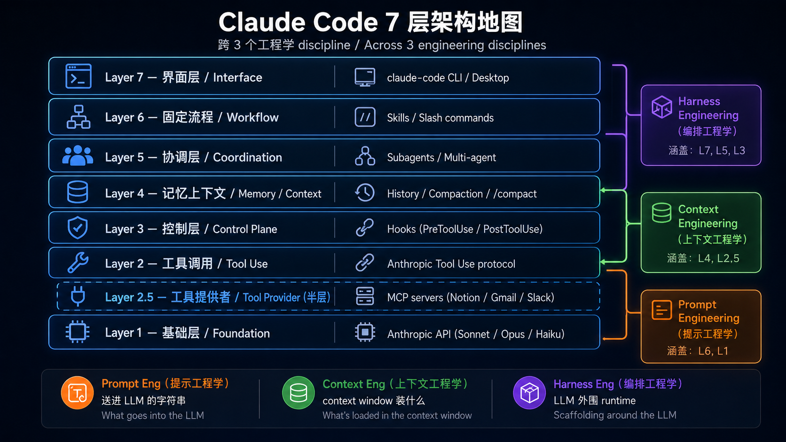

0
基础准备
你会打开终端、跑 Python、用 Git 存档、理解 API 和配置文件。
动手：做完 5 个小练习：公开 API、CLI、JSON/YAML、Git、API auth。
你不是来背编程名词的。你要学会把 AI 从聊天窗口，升级成能查资料、调工具、写报告、操作网页、留下记忆的助手。
你对 AI 说：“帮我看 10 篇资料，整理结论，做一份能给老板看的报告。”
普通聊天模型会直接凭当前对话回答。真正的 Agent 会先拆任务：找资料、读资料、提取要点、调用工具、检查遗漏、生成报告，必要时再回头修正。
这条路线的目标不是把你变成程序员，而是让你看懂并逐步掌握这套“指挥 AI 做事”的能力。
如果你完全没有代码基础，不要从工具名开始背。先看你在每一阶段要获得哪种能力。
下面是看地图，不是考试。每张卡只回答三个问题：这阶段像什么、学什么、动手做什么。
你会打开终端、跑 Python、用 Git 存档、理解 API 和配置文件。
动手：做完 5 个小练习：公开 API、CLI、JSON/YAML、Git、API auth。
你会知道 token、上下文窗口、temperature 和计费为什么重要。
动手：跑 hello world、比较中英文 token、估算成本和延迟。
你会把模糊需求写成角色、格式、例子和验收标准。
动手：练 system prompt、few-shot、CoT 和迭代优化。
你会理解模型如何选择工具、调用函数、观察结果再继续。
动手：练 function calling、ReAct、错误处理和 schema 设计。
你会知道什么时候用 LangGraph、AutoGen、CrewAI 这类框架。
动手：把同一个 agent 用不同框架实现，并比较取舍。
你会理解 MCP、Skills、Plugins、Subagents 分别解决什么问题。
动手：写 CLAUDE.md、slash command、skill、MCP 和 subagent 练习。
你会知道如何让模型查自己的资料、记住用户偏好和经验。
动手：练 embedding、vector DB、chunking、RAG pipeline 和 memory。
你会学评估、日志、成本、延迟、部署和失败恢复。
动手：练 multi-agent debate、eval、observability、deploy 和 cost control。
你会把前面技术连接成判断体系，不再只会照教程做。
动手：读 work boundary、system of record、progressive disclosure 等概念。
你会理解 Computer Use、Browser Use、Code Sandbox 的边界和风险。
动手：练浏览器自动化、沙箱运行和安全护栏。
这一部分不是目录，而是把原仓库路线重新讲成一套能连续读下去的课程说明。你先读这里，再决定要不要展开后面的原文资料库。
它不是一份编程语言课程，也不是一份工具清单。它的核心目标是让你理解并掌握 Agentic AI 的完整链路：从一次模型调用，到 prompt 控制，到工具调用，到框架组织，到记忆和 RAG，到多 Agent、部署、界面和安全。
如果你是零基础，最重要的不是把所有资源一次读完，而是知道每个阶段解决什么问题。Stage 0-2 建立基础，Stage 3-4 让你理解 Agent 怎么工作，Stage 5-8 让你理解真实工具生态和生产系统。
这份 HTML 会把原仓库拆成两层：前面是重新讲过的小白课程，后面是完整原文资料库。你学习时先读课程层，遇到要动手或深挖，再点原文深读。
Track A 适合你现在最想“会用 AI 做事”，但还不急着自己造 Agent 系统。路线是 Stage 0-2 打底，然后 A1 选 CLI Agent，A2 建立可重复工作流，A3 接入真实生产工具，再补 Stage 5 和 Stage 8 的使用视角。
这条路的核心不是写很多代码，而是学会给 CLI Agent 清晰规则、固定流程和验收标准。比如 CLAUDE.md 规定项目习惯，slash command 固化常用操作，MCP 接入外部工具，cost tracking 防止费用失控。
对日常学习来说，Track A 更快见效。你会更早感受到 Agent 能读文件、跑命令、改项目、写总结、查资料。但也要记住：它能动文件，所以 Git 存档和权限边界必须先学。
Track B 适合你想理解 Agent 内部原理，未来能自己搭系统。它不会停在“会用工具”，而是要求你理解 function calling、ReAct、框架、RAG、memory、multi-agent、eval、deploy 和 interface。
这条路更慢，但能力更底层。你会知道为什么模型需要 schema，为什么 tool description 会影响调用，为什么 RAG 要先看检索结果，为什么多 Agent 经常不是第一选择。
Track B 的学习节奏应该是“先做最小可运行，再补概念”。每一阶段都要留下一个能跑的小练习，而不是只收藏文章。最后用 Capstone 把它们串成一个完整项目。
主线学完后，不同人要用 Agent 解决的问题不一样。开发者关心代码审查、仓库修改、CI、调试；研究者关心文献、写作、证据链；教师关心备课、课堂辅助和学生隐私；知识工作者关心文档、会议、表格和流程；日常用户关心生活管理和低门槛工具。
分支不是新手必须马上读的内容。它更像学习后的落地菜单：当你已经知道 Agent 能做什么，再回来看自己身份最常用的工作流。
如果你现在完全零代码，优先看日常用户分支和 setup guide；如果你已经在做项目，再看开发者分支；如果你要处理资料和写作，再看知识工作者或研究者分支。
examples 不是让你按文件夹一次刷完。它是一组可跑的观察实验：Stage 1 观察 API 和错误处理，Stage 3 观察工具选择和 ReAct，Stage 4 比较框架，Stage 6 观察 embedding/RAG/memory，Stage 7 观察 eval、日志、部署。
每个练习都优先看四件事：为什么重要、怎么跑、不花钱如何 mock、观察重点是什么。对零基础来说，mock-based 验证特别重要，因为你可以先确认程序逻辑，不必每一步都花 API 调用费用。
跑练习时不要只盯着最终答案。真正有价值的是日志和中间过程：模型有没有选对工具，参数有没有填对，RAG 检索有没有找对资料，eval 有没有抓出退步。
resources 里有词典、cookbook、MCP/Skills 目录、schema cheatsheet、CLI agent 比较、课程清单和 subagent cookbook。它们不是线性教材，而是工具书。
遇到名词不懂，查 glossary；不知道用哪类 Agent，查 agent paradigms；工具 schema 不稳定，查 schema cheatsheet；想接 Notion、Excel、Postgres 等工具，查 MCP/Skills catalog；想把概念变成步骤，查 cookbook。
资源库最大的价值是帮你在真实问题里快速定位。不要从第一页读到最后一页，而是带着问题进去：我要选工具、我要接系统、我要写 skill、我要 debug tool call。
Capstone 不是毕业论文，而是把前面能力串成一个可展示的小系统。Track A 的 Capstone 更偏 CLI 工作流：能自动化一个真实任务，有规则、有记录、有成本意识。Track B 的 Capstone 更偏构建系统：有工具、RAG 或 memory、有评测、有部署或可运行接口。
选题要小，不要一开始做万能助手。更好的题目是：论文总结助手、会议纪要助手、代码审查助手、资料问答助手、课程备课助手、个人知识库助手。
展示时不要只展示最终答案。要展示输入、处理流程、工具调用、失败处理、评测结果和你设置的安全边界。这样才说明你不是只会调模型，而是真的理解 Agent 系统。
这一部分是重新写给非程序员的主阅读区。每一关都先讲“为什么要学”，再给完整讲解、流程图、概念翻译、30 分钟任务和原文深读入口。
别急着学 Agent，先让电脑能听懂你的指令。
零基础最容易卡在“我照着复制了，为什么终端说找不到文件”。这一关先解决环境、路径、命令、配置这些地基问题。
像开一家小店之前，先装好水电、收银台、货架和监控。AI 练习也一样，Python、终端、Git、API、JSON/YAML 就是这些基础设施。
你能打开终端，运行一个 Python 脚本，调用 GitHub 公开 API，把结果保存成文件，并知道 token 要放在环境变量里。
只做一件事：运行 GitHub followers 小脚本，看它能不能打印出某个用户的 follower 数量。
Stage 0 不是让你变成程序员，而是让你以后不会被最小的环境问题卡住。后面所有 Agent 练习都会反复用到文件路径、终端命令、环境变量、API 返回结果和配置文件；这些东西如果没有直觉，错误提示会像一堵墙。
Python 在这里的角色很朴素：它是让电脑照步骤做事的说明书。函数就是把一段步骤起名字，类就是把一组数据和动作放在一个盒子里，async/await 可以先理解为“等外部服务回复时，不要把整条流程堵死”。零基础阶段不用追求精通，只要能看懂脚本从上到下做了什么。
Git 也不是程序员炫技工具，它是学习过程的时间机器。每一次 commit 都是在说：我现在完成了一个能运行的小阶段。以后练 Agent 时，模型可能会改文件，Git 能帮你看清它到底改了什么。
API 是软件世界的服务窗口。你把请求按规则递进去，对方给你 JSON 结果。YAML/JSON 则像机器能读懂的表格。学完这一关，你至少要能解释：我在哪个文件夹、跑了哪个脚本、请求了哪个 API、返回结果里我要哪一个字段。
让模型回你一句话，只是第一步；你要知道这句话是怎么被计费、被限制、被影响的。
很多人会用 ChatGPT，但不知道 API 调用里有模型名、输入、输出、token、上下文窗口、temperature，所以一换成代码就迷路。
把 LLM API 想成一家云端问答店：你把问题递进去，店员按字数和难度计费，再把答案递回来。
你能用 DeepSeek、OpenAI 兼容 SDK 或本地 Ollama 跑一个 hello world，并知道回答为什么有时稳定、有时发散。
只做一件事：让模型回答“用一句话解释什么是 AI Agent”，再把 temperature 调高低各跑一次。
Stage 1 把你从“网页里和 AI 聊天”带到“用程序调用模型”。这一步很重要，因为真正的 Agent 不是一直开着网页聊天，而是由程序把任务、上下文、工具结果一次次传给模型。
模型家族、供应商、开源模型看起来很多，但零基础先抓 4 个问题：这个模型会不会中文，价格能不能接受，速度够不够，能不能通过 OpenAI-compatible API 调用。DeepSeek、OpenAI、Anthropic、Ollama 在学习阶段都只是不同的“模型入口”。
Token 是费用和容量的核心。你给模型越多材料，它看得越多，也越贵；上下文窗口决定它一次能看多长；temperature 控制答案是稳一点还是发散一点。后面做 RAG、多 Agent、长文档总结时，这些都会变成实际成本和效果问题。
这一关不要急着背所有 benchmark。你真正要学会的是：准备 API key、发出一次请求、拿到回答、看懂错误码、知道 key 不能泄露。只要你能稳定跑通 hello world，就能进入 Prompt 和 Tool Use。
Prompt 不是玄学咒语，而是给 AI 写一张清楚的任务单。
小白常见问题不是“不会写高级 prompt”，而是需求太含糊：没说角色、目标、格式、例子、验收标准。
你请助理做 PPT，不能只说“做得高级一点”。你要说给谁看、几页、风格、必须包含什么、什么算通过。
你能把一句模糊需求改成结构化 prompt，让模型按固定格式输出，并能通过迭代把结果改好。
只做一件事：把“帮我总结文章”改成一张任务单，要求模型输出 3 个要点、1 个风险、1 个行动建议。
Prompt 设计不是玄学。它是把你脑子里的模糊要求，翻译成模型能执行的任务说明。零基础读者常见问题是直接问“帮我写得好一点”，但没有说明给谁看、输出几段、风格是什么、哪些信息必须保留。
System prompt 像岗位说明书，告诉模型它扮演什么角色；few-shot 像给样板间，让模型照着例子装修；CoT 或分步思考像让它先列思路再交答案；iterative refinement 则是把一次回答变成多轮打磨。
你不需要追求一条万能 prompt。更可靠的方式是固定结构：目标、背景、输入材料、输出格式、限制、例子、验收标准。每次模型跑偏时，优先补这些信息，而不是换一个更玄的词。
Stage 2 的产出应该是可复用任务单。后面 Agent 调工具、写报告、派子任务，都需要清楚的任务说明。Prompt 是 Agent 的方向盘，方向盘不清楚，工具越多越容易乱。
从这一关开始，AI 不只是回答，它开始会“办事”。
聊天模型只能说；Agent 的关键是能选择工具、提交参数、读取结果、再决定下一步。
像前台接待员：它听懂你的需求后，不是自己瞎编，而是去查订单系统、日历、库存，再回来答复。
你能做一个最小 Agent：模型判断该用哪个工具，工具返回结果，模型根据结果继续回答。
只做一件事：做一个天气/计算/查询类小工具，让模型决定何时调用它。
Stage 3 是分水岭：模型从“会说”变成“会办事”。Agent 的最小核心不是神秘智能，而是三件事：有目标、能选择工具、能看结果再决定下一步。
Tool calling 可以理解为 AI 填一张工具申请单。工具名说明它能做什么，schema 规定它要填哪些参数，程序拿到这张申请单后真正去执行。模型不是直接改世界，它通常是通过这些受控工具间接行动。
ReAct 循环就是：先想、再行动、观察结果、决定继续还是停止。这个循环看起来简单，但是真实问题都藏在细节里：工具描述太模糊就不会调用，参数字段太宽就会填错，失败结果写得太抽象就无法恢复。
这一关要建立一个关键判断：Agent 不是模型越强越好，而是“模型 + 工具 + 控制流程”配合得越清楚越好。你能从日志里指出每一步发生了什么，就真正开始理解 Agent 了。
当任务变长、工具变多、角色变多，就需要脚手架。
手写一个小 Agent 可以，但复杂项目会变成一团流程线：谁先做、失败怎么办、状态放哪、下一步去哪。
像装修房子。你可以自己搬砖，但大工程需要施工图、工序表、监工和验收节点。
你能理解 LangGraph、AutoGen、CrewAI 这类框架为什么存在，并能把同一个小 Agent 用框架方式组织。
只做一件事：把 Stage 3 的小 Agent 改成一个两步流程：先分析，再执行工具。
Stage 4 解决的是复杂度管理。一个小 Agent 可以手写循环；但当任务有多个步骤、多个角色、条件分支、人工确认、状态保存时，手写就会很快失控。
框架可以理解为施工脚手架。LangGraph 更像把流程画成节点和连线，适合状态和分支明确的工作流；CrewAI 更强调角色和任务分工；Pydantic AI 强调结构化输入输出；CodeAct 则代表让模型用代码表达动作的路线。
这一章最重要的不是追热门框架，而是区分 workflow 和 agent。Workflow 是你提前规定步骤；Agent 是模型在过程中做选择。很多业务并不需要多 Agent，只需要一个清楚的流程加少量模型判断。
学完 Stage 4，你应该能看懂同一个任务为什么可以有手写版、框架版、多角色版。也要知道什么时候不要上框架：如果任务只有两三步、状态很少、失败成本低，简单代码往往更可靠。
这里学的是：怎样给 AI 助手配工具箱、说明书和临时小组。
真实项目里，Agent 不是只靠一个 prompt。它需要知道项目规则、调用外部工具、使用固定技能、必要时派子任务。
像一间办公室：CLAUDE.md 是公司制度，MCP 是外部系统接口，Skill 是标准作业流程，Subagent 是临时派出去的同事。
你能区分 MCP、Skills、Plugins、Subagents，并知道自己什么时候该用哪一个。
只做一件事：写一个最小 CLAUDE.md，规定学习项目里的文件位置、运行方式和不要泄露 API key。
Stage 5 很长，因为它把 Claude Code 生态当作一个真实 Agent 产品来拆。零基础先抓办公室类比：CLAUDE.md 是公司制度，MCP 是外部系统接口，Skill 是标准作业流程，Plugin 是打包能力，Subagent 是临时派出去处理子任务的人。
MCP 的价值是统一连接外部工具。以前每个工具都要单独接线，现在它像通用插头，让 Agent 能用文件、数据库、浏览器、笔记、表格等系统。你不需要一开始会写 MCP server，但要理解它解决的是“接工具”的问题。
Skill 解决的是重复流程沉淀。比如每次做代码审查、写报告、查资料都有固定步骤，就可以写成 Skill。Subagent 解决的是任务分派：主 Agent 不必把所有细节塞在一个对话里，可以把一块独立工作派出去，再整合结果。
这一章后半部分讲架构、SDK、source reference、production 用法。对 Track A 用户，重点是怎么用；对 Track B 学习者，重点是 Claude Code 为什么这样设计。不要被名词吓到，始终问：这是规则、工具、流程，还是派人？
让 AI 先查资料、再回答；让它该记住的东西别每次重来。
模型不是万能数据库。它可能不知道你的私有文档，也可能忘记你前面说过的偏好。
RAG 像去图书馆查书后再写报告；Memory 像给助理一本长期笔记本。
你能理解 embedding、向量数据库、chunking、RAG pipeline 和长期记忆分别解决什么问题。
只做一件事：准备一段自己的学习笔记，让模型先检索笔记再回答问题。
Stage 6 解决模型的两大弱点：不知道你的私有资料，记不住长期经验。RAG 是让模型先查资料再回答；Memory 是让系统把值得保留的信息存起来，未来继续用。
Embedding 可以先理解成把文字变成语义坐标。意思相近的句子在坐标空间里更近，向量数据库就是用这种方式找相关资料。Chunking 是把长文档切成段，切得太碎会丢上下文，切得太大又会带入噪音。
RAG pipeline 的经典顺序是：准备资料、切块、生成 embedding、存入向量库、检索相关片段、把片段放进 prompt、让模型回答。出错时不要只改 prompt，要先看检索出来的资料到底对不对。
Memory 和普通聊天记录不一样。聊天记录是流水账，Memory 应该是筛选后的长期事实、偏好、经验或失败教训。真正的 Agent 系统通常会同时有短期上下文、检索资料和长期记忆。
从能演示，走向真的能在工作里用。
Demo 能跑不等于系统能用。上线后会遇到成本、延迟、错误、日志、评测、权限、恢复等问题。
像开餐厅试营业：一道菜能做出来不够，还要稳定出餐、控制成本、处理投诉、记录问题。
你能判断什么时候需要多 Agent，怎样做评测、观察运行、控制成本，并把系统部署起来。
只做一件事：做一个两角色小流程，一个负责提出答案，一个负责挑错并给修改建议。
Stage 7 从学习 Demo 进入生产化。能在本地跑一次，不代表能给别人长期使用。真实系统需要评估、日志、错误处理、成本控制、延迟控制、权限和部署。
多 Agent 不是越多越高级。只有当任务天然需要不同视角、不同权限、并行处理或互相审查时，多 Agent 才有意义。否则角色越多，沟通成本和不可控性越高。
Eval 是给 Agent 做考试。你需要一组固定题目、期望结果、评分方法和回归检查，才能知道改 prompt、换模型、加工具后到底变好了还是变坏了。Observability 则是让你看见系统内部：花了多久、用了多少 token、调用了哪些工具、哪里出错。
部署和成本是把技术变成产品的门槛。FastAPI、Docker、streaming、prompt caching、status code、trace 这些词听起来工程化，但背后都在回答同一个问题：别人用的时候，它稳不稳、贵不贵、坏了能不能查。
这一关不是学更多名词，而是建立判断力。
前面学完会有很多碎片：工具、记忆、框架、多 Agent、安全。Stage 7.5 帮你知道边界在哪里。
像学开车之后再学交通规则、事故责任和路线规划。不是为了炫技，是为了少犯大错。
你能用 work boundary、system of record、progressive disclosure 等概念判断 Agent 该做什么、不该做什么。
只做一件事：拿你自己的一个工作流，写出哪些步骤可自动化，哪些必须人工确认。
Stage 7.5 是判断力训练。前面你学了很多技术，这一章问的是：Agent 到底应该负责什么，什么时候必须让人确认，系统以哪里为事实来源，失败后怎么恢复。
Work boundary 是主轴。比如 Agent 可以帮你草拟邮件，但是否自动发送要看风险；可以整理订单，但是否退款要看权限；可以修改代码，但是否部署要看验收。边界不清楚，Agent 越强越危险。
System of record 是事实源。一个系统里可能有聊天记录、数据库、文档、网页、用户输入，但最终以哪里为准必须清楚。否则 Agent 会把临时猜测当事实，把旧信息覆盖新信息。
Progressive disclosure 是不要一次把所有复杂度扔给用户。好的 Agent 产品会先给简单入口，需要时再展开高级选项。对学习者也一样：先会跑、再会查、再会评估、最后再谈自动化和自治。
最后一关：让 Agent 操作真实世界，但要先学会安全边界。
让 AI 点网页、操作电脑、跑代码很强，但也危险。它可能点错、读错、执行不该执行的动作。
像让一个远程助理临时接管你的电脑。你会给它任务，也会限制它能进哪些房间、能不能付款、能不能删除文件。
你能区分 Computer Use、Browser Use、Code Sandbox 的适用场景，并知道基础安全护栏。
只做一件事：设计一个浏览器 Agent 的安全规则清单，规定哪些动作必须让人确认。
Stage 8 讲 Agent 如何操作真实世界。Computer Use 像看屏幕和点鼠标，Browser Use 像专门操作网页，Code Sandbox 像把代码放进隔离实验箱里跑。
这三类能力很强，也很危险。因为一旦 Agent 能点按钮、提交表单、运行代码，它就可能误删文件、误发消息、误付款、误读网页。因此 Stage 8 的核心不是炫技，而是安全边界。
选择界面时先问任务类型：如果网页结构清楚，Browser Use 通常更可靠；如果必须操作桌面软件，Computer Use 才有意义；如果要生成和运行代码，Sandbox 可以隔离风险。
真实产品里常见做法是 human-in-the-loop：低风险动作自动做，高风险动作先停下来让人确认。你学完这一关，应该能设计一个最小安全规则清单，而不是只说“让 AI 自动操作”。
这条路线不是所有人都必须完整走一遍。先按目标选路径，再回到完整原文查细节。
我想先会用，不急着自己造 agent
我想从零构建自己的 agent 系统
我主要想用 AI 改善日常工作生活
下面这些解释故意不用工程师黑话。之后遇到同一个词，可以回到这里找直觉。
这些是仓库里最适合先看的图。它们负责建立方向感，后面完整原文会展开细节。





有些概念原仓库用文字讲得很完整，这里额外用 HTML/CSS 做成小图，帮助零基础读者先建立直觉。
为避免遗漏，下面列出本 HTML 已纳入的本地中文路线文件。生成时会跳过 _build/ 里的重复副本。
| # | 分类 | 源文件 |
|---|---|---|
| 1 | 总览/附录 | README.zh-Hans.md |
| 2 | 总览/附录 | PROGRESS.zh-Hans.md |
| 3 | 总览/附录 | docs/HOW_TO_USE.md |
| 4 | 参考资源 | resources/setup-guide.zh-Hans.md |
| 5 | 主线阶段 | stages/00-foundations.zh-Hans.md |
| 6 | 主线阶段 | stages/01-llm-basics.zh-Hans.md |
| 7 | 主线阶段 | stages/02-prompt-engineering.zh-Hans.md |
| 8 | 主线阶段 | stages/03-tool-use-and-hello-agent.zh-Hans.md |
| 9 | 主线阶段 | stages/04-agent-frameworks.zh-Hans.md |
| 10 | 主线阶段 | stages/05-claude-code-ecosystem.zh-Hans.md |
| 11 | 主线阶段 | stages/06-memory-rag.zh-Hans.md |
| 12 | 主线阶段 | stages/07-multi-agent-production.zh-Hans.md |
| 13 | 主线阶段 | stages/07.5-advanced-agentic-concepts.zh-Hans.md |
| 14 | 主线阶段 | stages/08-agent-interfaces.zh-Hans.md |
| 15 | Track A | tracks/cli/A1-cli-intro.zh-Hans.md |
| 16 | Track A | tracks/cli/A2-cli-workflow.zh-Hans.md |
| 17 | Track A | tracks/cli/A3-cli-production.zh-Hans.md |
| 18 | 身份分支 | branches/for-everyday-users.zh-Hans.md |
| 19 | 身份分支 | branches/for-developer.zh-Hans.md |
| 20 | 身份分支 | branches/for-knowledge-worker.zh-Hans.md |
| 21 | 身份分支 | branches/for-researcher.zh-Hans.md |
| 22 | 身份分支 | branches/for-teacher.zh-Hans.md |
| 23 | 走查教程 | walkthroughs/build-first-agent-in-7-steps.zh-Hans.md |
| 24 | 练习代码 | examples/README.zh-Hans.md |
| 25 | 练习代码 | examples/stage-1/04-cross-provider/README.md |
| 26 | 参考资源 | resources/README.zh-Hans.md |
| 27 | 参考资源 | resources/glossary.zh-Hans.md |
| 28 | 参考资源 | resources/agent-paradigms.zh-Hans.md |
| 29 | 参考资源 | resources/cli-agents-guide.zh-Hans.md |
| 30 | 参考资源 | resources/cookbook.zh-Hans.md |
| 31 | 参考资源 | resources/courses.zh-Hans.md |
| 32 | 参考资源 | resources/mcp-skills-catalog.zh-Hans.md |
| 33 | 参考资源 | resources/schema-design-cheatsheet.zh-Hans.md |
| 34 | 参考资源 | resources/subagent-advanced.zh-Hans.md |
| 35 | 参考资源 | resources/subagent-cookbook.zh-Hans.md |
| 36 | 总览/附录 | CAPSTONE.zh-Hans.md |
| 37 | 总览/附录 | ROADMAP.zh-Hans.md |
| 38 | 总览/附录 | RESOURCES.zh-Hans.md |
| 39 | 总览/附录 | CONTRIBUTING.zh-Hans.md |
| 40 | 总览/附录 | CODE_OF_CONDUCT.zh-Hans.md |
| 41 | 总览/附录 | SECURITY.zh-Hans.md |
| 42 | 练习代码 | examples/stage-1/05-error-handling/README.zh-Hans.md |
| 43 | 练习代码 | examples/stage-3/02-multi-tool-selection/README.zh-Hans.md |
| 44 | 练习代码 | examples/stage-3/03-react-from-scratch/README.zh-Hans.md |
| 45 | 练习代码 | examples/stage-3/04-multi-step-reasoning/README.zh-Hans.md |
| 46 | 练习代码 | examples/stage-3/05-error-handling/README.zh-Hans.md |
| 47 | 练习代码 | examples/stage-3/06-schema-design/README.zh-Hans.md |
| 48 | 练习代码 | examples/stage-4/01-same-agent-two-frameworks/README.zh-Hans.md |
| 49 | 练习代码 | examples/stage-4/02-multi-agent-roles/README.zh-Hans.md |
| 50 | 练习代码 | examples/stage-4/03-graph-workflow/README.zh-Hans.md |
| 51 | 练习代码 | examples/stage-4/04-codeact-vs-json-tool/README.zh-Hans.md |
| 52 | 练习代码 | examples/stage-4/05-typed-agent/README.zh-Hans.md |
| 53 | 练习代码 | examples/stage-5/tool-calling-tutor/README.zh-Hans.md |
| 54 | 练习代码 | examples/stage-6/01-embeddings/README.zh-Hans.md |
| 55 | 练习代码 | examples/stage-6/02-vector-db/README.zh-Hans.md |
| 56 | 练习代码 | examples/stage-6/03-chunking-comparison/README.zh-Hans.md |
| 57 | 练习代码 | examples/stage-6/04-full-rag-pipeline/README.zh-Hans.md |
| 58 | 练习代码 | examples/stage-6/05-long-term-memory/README.zh-Hans.md |
| 59 | 练习代码 | examples/stage-7/01-multi-agent-debate/README.zh-Hans.md |
| 60 | 练习代码 | examples/stage-7/02-eval/README.zh-Hans.md |
| 61 | 练习代码 | examples/stage-7/03-observability/README.zh-Hans.md |
| 62 | 练习代码 | examples/stage-7/04-sdk-advanced/README.zh-Hans.md |
| 63 | 练习代码 | examples/stage-7/05-deploy/README.zh-Hans.md |
| 64 | 练习代码 | examples/stage-5/tool-calling-tutor/references/debug-flowchart.zh-Hans.md |
| 65 | 练习代码 | examples/stage-5/tool-calling-tutor/references/schema-evolution.zh-Hans.md |
| 66 | 练习代码 | examples/stage-5/tool-calling-tutor/references/sdk-diff.zh-Hans.md |
| 67 | 练习代码 | examples/stage-5/tool-calling-tutor/translations/SKILL.zh-Hans.md |
| 68 | 参考资源 | resources/style-guide.zh-Hans.md |
README.zh-Hans.md
学习路线图 + 240+ 资源 curation + 简单 illustrative 案例
结构化 8 阶段、从“LLM 是什么、token 怎么算”走到 multi-agent 编排、Computer Use / Browser Use / Sandbox


本 repo 角色定位：学习路线图 + 240+ 资源 curation + 简单 illustrative 案例——三件事为核心、帮想学 AI / AI agent 的人从“不知道从哪开始”走到“能设计多 agent 系统”。
具体做法：
| 核心 | 做什么 | 规模 |
|---|---|---|
| 学习路线图 | 把网上散落的高质量项目、教材、必修阅读，按从零开始、循序渐进整理成 8 个阶段（含 Stage 5 + Stage 8 两个共用 hub）+ 2 条学习路线 + 5 条延伸路径 | 8 stages、2 tracks |
| 资源 curation | 每阶段精选 240+ 个 project（含星等、适合谁、教什么、怎么跑），加上中文 AI 生态(DeepSeek / Zhipu / Kimi 等)MCP / Skill 完整 catalog | 240+ projects、65 MCP/Skill |
| 简单 illustrative 案例 | 每阶段附 1-5 个基础练习（70-150 行 starter + dual-path Ollama/Anthropic SDK 对照 + mock-based test） | 23 个练习 folder |
走完这条路线，你会从“LLM 用户”进阶到“agent 系统构建者”——能看懂 framework 在做什么、能设计多 agent 协作、能写自己的 MCP server。
先看 resources/setup-guide.zh-Hans.md — 30-45 分钟从零带你申请 API key、装好 Python、跑出第一个 LLM hello-world。
git clone https://github.com/WenyuChiou/awesome-agentic-ai-zh.git
cd awesome-agentic-ai-zh
# 从 stages/00-foundations.zh-Hans.md 开始
走完 Stage 0-2（共用基础） 之后，依你的目的选一条学习路径：
两条学习路径不互斥——多数人是先走 A 把 CLI 用起来，再回到 B 学内部运作；或反过来也行。Stage 5（Claude Code 生态）两条路径都会用到。
| Stage | 主题 | 关键内容 | 预估时程 |
|---|---|---|---|
| 0 | 基础准备（Foundations） | Python · CLI · git · API · JSON | 1-2 周 |
| 1 | LLM 基础（LLM Basics） | token · API · 各家 LLM 比较 · 本地 LLM | 1 周 |
| 2 | Prompt 设计（Prompt Engineering） | 系统 prompt · few-shot · CoT | 1-2 周 |
| Stage | 主题 | 关键内容 | 预估时程 |
|---|---|---|---|
| A1 | 选一个 CLI Agent，开始用它做事（CLI Agent Intro & Selection） | 7 个主流 CLI 比较 · 安装 · 第一次跑 | 1 周 |
| A2 | 建立可重复使用的 CLI 工作流程（CLI Workflow Patterns） | CLAUDE.md · slash command · 多步骤拆解 | 1-2 周 |
| A3 | 把 CLI Agent 接进真实工作流程（Integration & Production） | MCP 接 CLI · CI 自动化 · cost / observability | 1-2 周 |
| +5 | Stage 5 — Claude Code 生态系（Claude Code Ecosystem）（共用 hub） | MCP · Skills · Plugins · Subagents、Track A 必看 5.1-5.4 / 选读 5.5-5.7 | 1-2 周（Track A 视角） |
| +8 | Stage 8 — Agent 操作介面（Agent Interfaces）（共用 hub） | Computer Use · Browser Use · Code Sandbox、Track A 视角看 Track A 怎么用 | 1-2 周（Track A 视角） |
Track A 预估总时程：含 Stage 0-2（共用基础）+ A1-A3 + Stage 5 + Stage 8（两个共用 hub）= 约 8-10 周。核心参考：
resources/cli-agents-guide.zh-Hans.md。
| Stage | 主题 | 关键内容 | 预估时程 |
|---|---|---|---|
| 3 ⭐ | 工具使用与第一个 Agent（Tool Use & Hello Agent） | function calling · ReAct · 5 个动手练习 | 2-3 周 |
| 4 | Agent 框架（Agent Frameworks） | LangGraph · AutoGen · CrewAI · Smolagents | 2-3 周 |
| 5 ⭐⭐ | Claude Code 生态系（Claude Code Ecosystem）（共用 hub、Track A 也学） | MCP · Skills · Plugins · Subagents | 3-4 周（Track B 视角） |
| 6 | 上下文管理（Context Engineering）：RAG 与 Memory | vector DB · long-term memory · contextual retrieval | 2 周 |
| 7 | 多 Agent 系统与稳定运作（Multi-Agent & Production） | multi-agent orchestration · eval · observability · SDK 进阶 | 2-4 周 |
| 7.5 | 进阶 Agentic Workflow 概念（Advanced Agentic Concepts）（reading map） | 工作边界 · PAR loop · agent-as-judge · 12 个进阶概念 + reading list | 1 周（不写 code） |
| 8 ⭐⭐ | Agent 操作介面（Agent Interfaces）（共用 hub、Track A 也学） | Computer Use · Browser Use · Code Sandbox、2024-2026 frontier | 2-3 周（Track B 视角） |
Track B 预估总时程：主干最少 16-22 周、现实 5-7 个月（每周 5-8 hr 兼职）
两个共用 hub（Track A + Track B 都会用到）： - Stage 5 = Claude Code 生态（MCP / Skills / Plugins / Subagents）—— Track A 学 MCP 接 CLI、Track B 学 agent runtime 结构 - Stage 8 = Agent Interfaces（Computer Use / Browser / Sandbox、2024-2026 frontier）—— Track A 学“怎么用”委派任务、Track B 学“怎么 build”embed 进 agent
💡 想看跨 stage 的完整示例？ 7 步构建你的第一个 AI Agent — 同一个 Paper Summary Bot 从 Stage 1 一路写到 Stage 7，~350 行真实代码（Track B 适用）
走完主干（Track B 16-22 周 / Track A 8-10 周）后，依你的身份挑一条延伸路线继续走。不确定挑哪条？
💡 “日常用户”这条路线不必走完主干就能直接读——是给“想用 AI、但不一定要写 code”的人。
| 路线 | 适合谁 | 主题 |
|---|---|---|
| 🔬 研究员 | 研究生、博后、PI | 文献整理 · paper 写作 · multi-agent review |
| 💻 开发者 | 软件工程师 | Cursor · Aider · CLI delegation · code review |
| 🎓 老师 | 老师、讲师 | 备课 · 幻灯片 · 学生 feedback · 隐私 / 伦理 · prompt 范本 |
| 📊 知识工作者 | 顾问、PM、分析师 | Email · 会议记录 · report 自动化 |
| 👥 日常用户 | ChatGPT / Claude.ai 用户 | 写信 · 学习 · 隐私场景 · CLI agent 入门 |
这份路线图兼顾概念与实作，目标是带你“从 LLM 用户一路走到 agent 系统构建者”。适合“有基本 Python 能力”的开发者、研究生、自学者。动手之前，先确认你有：
上面有缺的就从 Stage 0 补齐；都会了就直接跳 Stage 1。
主干分 5 部分：
🔭 三层概念进化：prompt engineering（Stage 2、单一 prompt 怎么写）→ context engineering（Stage 3 之后、怎么动态组 system prompt + memory + retrieved chunks + tool schema）→ harness engineering（Stage 7、agent loop / eval / observability / deploy 整套包成 production system）。3 个术语对应 3 个 phase、不必另外找资源。详见
stages/02-prompt-engineering.zh-Hans.md进阶：context engineering 跟stages/07-multi-agent-production.zh-Hans.md必修阅读 5+6。
走完主干（Track B 16-22 周 / Track A 8-10 周）后，依你的身份挑一条延伸路线继续走。
最重要的说一句话：不要跳过 動手練習。每个 stage 的 動手練習都是“不动手就学不会”的东西，光读过去后面会卡住。
🎓 动手练习怎么用才对：每个练习 folder 里的
starter.py是完整解答、不是 TODO skeleton。如果你 clone 下来直接cat starter.py+python test.pypass、会误以为“我学会了”、其实没写一行 code。正确学习法：mv starter.py starter_reference.py、看 signature 不看 body、自己重写、卡住才回去对照。完整方法论 + 每个 stage 的时间预算 + 卡住处理流程看docs/HOW_TO_USE.md。
准备好了吗？从 Stage 0 开始。
常用入口、依情境分组：
| 你的状况 | 去哪 | 内容 |
|---|---|---|
| 完全没写过 code、第一次接触 AI agent | resources/setup-guide.zh-Hans.md |
30-45 分钟从零装好（API key、Python、第一个 hello-world） |
| 不知道挑哪个 LLM provider | resources/setup-guide.zh-Hans.md A |
Anthropic / OpenAI / DeepSeek / Kimi / NVIDIA NIM 对照 |
| 你的状况 | 去哪 | 内容 |
|---|---|---|
| 不懂某个词（LLM / agent / RAG / token / MCP / Skill / 向量数据库…） | resources/glossary.zh-Hans.md |
30+ 词、每个 30-80 字 + 哪 stage 讲细的 |
| 想搞懂 agent 为什么有的在 terminal、有的在 Telegram、有的在 Jetson | resources/agent-paradigms.zh-Hans.md |
5 种 agent 型态 mental model + Hermes / OpenClaw 例子 |
| MCP / Skills / Plugins 用语对照 | RESOURCES.zh-Hans.md 三个核心用语 |
1 页速查表 |
| 想找带证书的线上 AI agent 课（英文 + 中文） | resources/courses.zh-Hans.md |
10 门 credible、会发证书的课，分 tier；并诚实标注完成证书不是学历 |
| 你的状况 | 去哪 | 内容 |
|---|---|---|
| 想动手写 Skill / MCP server / 接 Word / Zotero / 本机 LLM | resources/cookbook.zh-Hans.md |
6 个 step-by-step recipe、每个 30-50 分钟 |
| 想用 subagent 但不知道该派谁、怎么派、派什么工作 | resources/subagent-cookbook.zh-Hans.md |
15 个复制粘贴即用的 dispatch recipe |
| 卡在 tool calling（LLM 不调用 / schema 写不好 / ReAct loop 跑不停） | examples/stage-5/tool-calling-tutor/ |
可装进 Claude Code 的 skill、4-symptom diagnostic |
| 动手练习怎么正确使用（主动 vs 被动模式） | docs/HOW_TO_USE.md |
5-10 分钟读完、配合每个 stage 用 |
README 跟各 stage 会频繁提到这三个 Claude Code 生态的关键词，先快速说明：
SKILL.md，描述“在什么情境要做什么、可以调用哪些 MCP tool”。写好之后 Claude Code 会自动 discover。详见 Stage 5.3。对, 应的 動手練習 练习都在 Stage 5，Track A 的 A3 也会用到。
把 Claude Code（或其他 CLI agent）接到你已经在用的 app，省掉手动切换的成本。下面几个是社群 / 官方比较成熟的：
笔记 / 知识库
办公文件（Word / Excel / PowerPoint / PDF）
Google Workspace（Gmail / Docs / Drive / Calendar）
开发协作
中文圈常用
上面只是 highlight。完整 65+ 个集成（含数据库、浏览器自动化、Figma、Excalidraw、Cloudflare、Stripe…）：
resources/mcp-skills-catalog.zh-Hans.md。想找更多 MCP server catalog？看
wong2/awesome-mcp-servers/punkpeye/awesome-mcp-servers（按分类整理）。Canva 的官方 MCP 还在 early access，社群版本不稳定，等成熟后再补上。
这个 repo 不取代清单型 awesome list — 你已经知道在找什么工具时，下面这些查起来更直接：
MCP 相关
Claude Code / Skills / Plugins 相关
中文圈常用
这个 repo 是一个 AI 学习文档，如果你也有收集很好的资源，也欢迎贡献：
PR 流程跟 style 规范请看 CONTRIBUTING.md 和 resources/style-guide.zh-Hans.md。
📅 想看最近 ship 了什么 →
CHANGELOG.md（最近 14 天）。 Maintainer 内部进度与 launch checklist 放在 .github/launch-checklist.md（内部文件）。
同主题、不同切入角度的清单，搜资源时可以一起用：
wong2/awesome-mcp-servers — MCP server 清单，按分类整理punkpeye/awesome-mcp-servers — 另一份 MCP server 清单hesreallyhim/awesome-claude-code — Claude Code 相关工具与 plugin 清单（整理中）travisvn/awesome-claude-skills — Claude Skills 清单anthropics/claude-plugins-official — Anthropic 官方 plugin 模板，要打包自己的 plugin 从这份开始这些是纯清单形式（看到再挑），本 repo 的不同点是有“从 Stage 0 一路走到 production 的学习顺序”。
新贡献者会自动出现在上方。完整列表 → GitHub Contributors。
如果这个学习地图对你的学习或工作有帮助，欢迎引用：
@misc{awesome_agentic_ai_zh_2026,
title = {awesome-agentic-ai-zh: A Structured Learning Roadmap for Agentic AI},
author = {Chiou, Wenyu},
year = {2026},
url = {https://github.com/WenyuChiou/awesome-agentic-ai-zh},
note = {8-stage learning path from prerequisites to Agent Interfaces (Computer Use / Browser Use / Code Sandbox), with curated projects + hello-X demos. Bilingual (zh-TW / English).}
}
MIT。Maintained by @WenyuChiou。
⭐ 如果这个 repo 对你有帮助，欢迎给个 Star — 这对作者继续更新是很大的鼓励
PROGRESS.zh-Hans.md这是一份给你自己用的打勾清单——不用提交、不用 PR、没人会检查。复制一份（或 fork repo）勾你自己的进度，知道走到哪、下一站是哪。
怎么用： 1. 每个 stage 的“学习目标”“进入条件”“自我检查”都在该 stage 文件里——这份清单只是总览 + 入口，不重复内容。 2. 一个 stage 的 ✅ 条件 = 你能通过该 stage 结尾的“自我检查”那一节。通过了才勾，勾完往下一站。 3. 不用全部做完。先选一条轨道（Track A 或 B）+ 一条你的 audience branch 就够开始。
不确定选哪条？看
README.zh-Hans.md的双轨说明，或branches/DESIGN.md。卡住开 Discussion。
stages/00-foundations.zh-Hans.md
✅ 通过该 stage 的通过条件（Stage 0 是 prerequisite gateway，通过条件见 stage 内说明）stages/01-llm-basics.zh-Hans.md
✅ 通过该 stage 的“自我检查”stages/02-prompt-engineering.zh-Hans.md
✅ 通过该 stage 的“自我检查”你想“用 agent 工具把工作做完”，不一定要自己 build。
tracks/cli/A1-cli-intro.zh-Hans.mdtracks/cli/A2-cli-workflow.zh-Hans.mdstages/05-claude-code-ecosystem.zh-Hans.mdtracks/cli/A3-cli-production.zh-Hans.mdstages/08-agent-interfaces.zh-Hans.md你想“自己 build agent / 框架 / 多 agent 系统”。
stages/03-tool-use-and-hello-agent.zh-Hans.mdstages/04-agent-frameworks.zh-Hans.mdstages/05-claude-code-ecosystem.zh-Hans.mdstages/06-memory-rag.zh-Hans.mdstages/07-multi-agent-production.zh-Hans.mdstages/07.5-advanced-agentic-concepts.zh-Hans.mdstages/08-agent-interfaces.zh-Hans.mdBranch 不是“再上一层课”，是把上面 stage 学到的东西对应到你的实际场景。挑 1 条就好。
branches/for-researcher.zh-Hans.mdbranches/for-developer.zh-Hans.mdbranches/for-teacher.zh-Hans.mdbranches/for-knowledge-worker.zh-Hans.mdbranches/for-everyday-users.zh-Hans.md走完一条轨道后,做一个能展示的作品 + 自评。题目、必要条件、四级评分 rubric 全在 CAPSTONE.zh-Hans.md——这份清单只放打勾入口,标准不重复。
CAPSTONE.zh-Hans.mdCAPSTONE.zh-Hans.md不想自己排？照这个走，大约能在最少绕路下到“能动手做事”：
Stage 0 → Stage 1 → Stage 2 → 选轨道 →（Track A: A1 → A2 → Stage 5 → A3;Track B: Stage 3 → Stage 4 → Stage 5 → Stage 6）→ 你的 branch →（进阶，Track B 适用：Stage 7 → 7.5 → 8;Track A 的 Stage 8 已在上方主线）→ 你那轨的 Capstone（见 CAPSTONE.zh-Hans.md）
这份清单只追踪“你走到哪”。每一站“学什么 / 进入前要会什么 / 怎么算学会”一律以该 stage 文件内的“学习目标 / 进入条件 / 自我检查”为准——避免同一份标准散两处。
docs/HOW_TO_USE.md給每個動手練習 folder 的 meta-instruction。如果你跳過這一頁、會把這套教材當 reference book 讀完、學到大概 60%。讀完這一頁、用對方法、學到 100%。
每個練習 folder（譬如 examples/stage-3/03-react-from-scratch/）裡都有一個 starter.py——它長得像 starter、其實是完整解答。
如果你：
git clone ... && cd examples/stage-3/03-react-from-scratch
cat starter.py # 看完整解答
python starter.py # 跑通
python test.py # 全 pass
你會以為「學會了」、其實沒寫過一行 code。
這是這份教材的最大設計缺陷。下面講怎麼繞過它。
步驟：
cd examples/stage-3/03-react-from-scratch/
# 1. 讀 README、了解這題在做什麼、預期 input / output
cat README.md
# 2. 把 starter.py 改名（藏起來、等下對照用）
mv starter.py starter_reference.py
# 3. 看 starter_reference.py 的「imports + function signatures」、不看 function body
head -50 starter_reference.py
# 4. 自己寫一個新的 starter.py、function body 自己想
$EDITOR starter.py
# 5. 跑 test.py、看自己寫的能不能 pass
python test.py
# 6. 卡住超過 20 分鐘？才打開 starter_reference.py 對照
diff starter.py starter_reference.py
# 7. 寫完一輪後、看 README 的 punchline + common pitfalls、跟你的 trial 對照
重點：
- 看 signature、不看 body。imports / TOOLS_SPEC / function names + arg types 可以看；裡面怎麼實作要自己想。
- 卡 20 分鐘是健康的。卡 1 小時也健康。卡 3 小時就回去看 reference、然後默寫一遍。
- test 通過 ≠ 學會。test 通過代表 logic 對；學會代表你講得出為什麼這 13 行 ReAct loop 必要、為什麼 tool_call_id 要配對、為什麼要 max_iter。
步驟：
cd examples/stage-3/03-react-from-scratch/
cat README.md
cat starter.py # 讀完整解答、理解每一行
python test.py # 確認跑得起來
何時用： - 你之前寫過 ReAct loop、現在只是想看本 curriculum 是怎麼寫的、做 cross-reference - 你在找 pitfall reference（譬如 production 出 bug、想看 curriculum 提過沒） - 你是講課老師、要快速看完整套教材然後挑題目給學生
被動模式適合已經會了的人複習、不適合沒寫過的人入門。
短答：v1 階段、為了快速 ship 完整可跑版本。
長答：完整 starter.py 有 3 個好處（給維護者）： 1. test 直接 pass——確認 framework 整合沒漏東西 2. 不會 outdated——隨 framework 升級可以馬上 fix（不必同步維護 template） 3. 新手 onboard 快——把 repo clone 下來就能跑、降低裝環境 friction
但對學習者來講有 1 個大缺點：容易被誤用成抄答案。所以這份 HOW_TO_USE 文件存在、提醒你自己改名、自己重寫。
v2 規劃（未開始）：把 starter.py 分裂成 starter_template.py（TODO skeleton）+ starter_reference.py（完整解答）、test 預設打 template、學生 fill in、卡住才看 reference。這需要重做 ~20 個 folder、預計 v2 在 docs/TESTING_PLAN.md 之後排期。
| Stage | 主動模式時間預算 | 被動模式時間預算 |
|---|---|---|
| Stage 3（tool use + ReAct） | 5-8 hr（每練習 1-1.5 hr） | 1-2 hr（讀過去） |
| Stage 4（agent frameworks） | 8-12 hr（每練習 2 hr） | 2-3 hr |
| Stage 6（RAG + memory） | 8-12 hr | 2-3 hr |
| Stage 7（production） | 10-15 hr | 3-4 hr |
主動模式時間是被動的 4-5 倍——這就是「卡住 + 修通」的時間成本、也是真學會的成本。如果你只有 1 週時間、選 1-2 個你覺得最重要的練習走主動模式、其他被動模式過。
跑 verification（2026-05-13）發現我寫的 starter / test 本身有 6 個 bug：
and 比 or 緊)@tool 要求 Google-style docstring Args: 區塊這對你的意義：當你做主動模式、卡住時，有可能不是你錯、是教材有 bug。提 issue 上來、我會修。Bug 修在 commit 50c3bf8。
不要光看 starter.py 過去、問自己：
max_iter、拿掉 tool_call_id、拿掉 cache_control，runtime 會出什麼問題？回答得出來 = 真學會了。回答不出來 = 只是讀過。
不要直接從 Stage 4 開始——除非 Stage 3 的 6 個練習你每個都用主動模式寫過 1 次。
沒過 checkpoint 直接跳級、後面會卡住、回頭重做更慢。
順序：
examples/stage-5/tool-calling-tutor/ skill（裝進 Claude Code）— tool calling 相關的卡住、4-symptom triage 帶你診斷starter_reference.py（你改名藏起來的那個）— 對照你寫的差別、找出哪裡邏輯漏絕對不要：抄 starter_reference.py 就走。沒寫過 = 沒學會。
v2 把 starter.py 拆成 template + reference 的計畫：
starter_template.py（TODO skeleton）+ starter_reference.py（answer）test.py 預設打 starter_template.py、有 env var 切到 reference 對照如果有人想接 v2、歡迎 PR。對應 issue / branch 等決定後開出來。
resources/setup-guide.zh-Hans.md预估时间：30-45 分钟。你会申请第一个 API key、装好 Python / uv，并跑出第一个 LLM hello world。 这份文档写给“想学 AI agent，但还没写过 code”的人。已经熟 Python / git / CLI 的开发者，可以直接跳 Stage 1。
按“想花多少时间 setup”由浅到深排序。完全没接触过 LLM 直接从 1️⃣ 开始就好。
打开浏览器就能用，第一次接触 LLM 最推荐这条。免费 tier 通常够你试一周。
| 服务 | 网址 | 备注 |
|---|---|---|
| Claude | https://claude.ai | Anthropic 官方。免费 tier 每天有限额，付费 $20/月 |
| ChatGPT | https://chatgpt.com | OpenAI 官方。免费可用 GPT-5（基础），Plus $20/月 |
| Gemini | https://gemini.google.com | Google 官方。免费 tier 宽松，整合 Google 服务 |
| Le Chat | https://chat.mistral.ai | Mistral（欧洲开源 LLM）。免费、隐私导向 |
跑在你电脑上的原生 app——比网页多了系统 shortcut、跟剪贴板 / 截图整合、可以拖拉文件。
| App | 下载 | 平台 |
|---|---|---|
| Claude Desktop | https://claude.ai/download | macOS / Windows |
| ChatGPT Desktop | https://openai.com/chatgpt/download | macOS / Windows |
| Gemini | 暂无原生 desktop app | （用网页版即可） |
| LM Studio | https://lmstudio.ai | macOS / Windows / Linux — 跑本地 LLM 的桌面 app，零成本但要 GPU/RAM |
跑在 IDE / code editor 里——你正常写 code，AI 在旁边 suggest、修改、回答问题。已经有写 code 习惯、想把 IDE 升级成 AI-native 的人这条最顺。
| 工具 | 下载 | 形态 |
|---|---|---|
| Cursor | https://cursor.com | 独立 IDE（VS Code fork） |
| Windsurf | https://codeium.com/windsurf | 独立 IDE（Codeium 出） |
| Cline | https://cline.bot | VS Code extension（agentic 风格） |
| Continue | https://continue.dev | VS Code / JetBrains extension（开源） |
| Roo Code | https://github.com/RooCodeInc/Roo-Code | VS Code extension（Cline fork，社群活跃） |
| Zed | https://zed.dev | 独立 editor，内建 AI assistant |
| GitHub Copilot | https://github.com/features/copilot | VS Code / JetBrains 等多 IDE extension |
→ 详细比较 → branches/for-developer.zh-Hans.md
装在 terminal 的 agent——你下一个 prompt（譬如“重构这个 module”），agent 自己读文件、改文件、跑指令、commit。比 IDE 模式更自主、可以处理多步骤任务，但 setup 稍复杂（需要先有 Node.js 或 Python，看下面 B / D）。
| CLI Agent | 安装 / 文档 | 主要 LLM |
|---|---|---|
| Claude Code | https://docs.anthropic.com/en/docs/claude-code/quickstart | Claude |
| Codex CLI | https://github.com/openai/codex | GPT 系列 |
| Gemini CLI | https://github.com/google-gemini/gemini-cli | Gemini |
| OpenCode | https://github.com/sst/opencode | 任意（多 provider） |
| goose | https://block.github.io/goose | 任意 |
| Aider | https://aider.chat | 任意（git-native） |
| Hermes Agent | https://github.com/NousResearch/hermes-agent | 200+（model-neutral） |
→ 想看 7 个 CLI 完整比较 → cli-agents-guide.zh-Hans.md
→ Claude Code 第一次装的详细步骤 → 本指南 D
💡 IDE-based 跟 CLI agent 怎么选？ 边写 code 边要 AI 帮忙 → IDE；下单一 prompt 让 agent 自己跑完一整个任务 → CLI。两个可以并用。
想自己写 Python script、跑 batch job、把 LLM 接到自己的 app／automation？接下来的 A-C 就是给你的。
💡 API key 是什么：简单讲就是“让程序调用模型的密码”。请把它当成信用卡资料一样保管。
.env。⚠️ API key 三不规则 - 不贴到 chat 窗口、群组、email 或截图。 - 不上传到 git；GitHub 可能扫到后自动撤销。 - 不放云端硬盘纯文本文件；同步到其他设备等于多一份风险。
base_url=https://integrate.api.nvidia.com/v1。中国大陆用户连 Anthropic / OpenAI 有困难、或想试中文 native 模型，从这边开始。这些 API 都 OpenAI-compatible、改
base_url跟 model name 就能跑同一份练习。
base_url=https://api.deepseek.com/v1、model=deepseek-chat 或 deepseek-reasoner。base_url=https://api.moonshot.cn/v1 (中国) / https://api.moonshot.ai/v1 (海外)、model=kimi-k2-turbo-preview 等。ollama pull qwen2.5:3b）——cloud 跟 local 两条路径都通。gemma4:e4b（Stage 1-2）或 qwen2.5:3b（Stage 3+）跑通、$0/run。💡 怎么挑第一个： - 想学 agent / production、美区帐号OK → Anthropic Claude（curriculum canonical） - 想学 agent / production、中国地区或想试中文模型 → DeepSeek（最便宜 cloud option、OpenAI-compat、中文很强） - 想试多个 model 但没 GPU → NVIDIA NIM（送 1000 credit、托管 10+ open model） - 隐私敏感 / 完全免费 / 中国大陆无 cloud → Ollama（本机、curriculum 全套都能跑、$0）
brew install python@3.12。如果还没有 Homebrew，先看 https://brew.sh。sudo apt install python3 python3-venv，Fedora 用 sudo dnf install python3。python3 --version；Windows 输入 py --version。看到 Python 3.10 以上即可。uv 是 Python 包管理工具。你可以把它想成“帮你临时装好需要的包再执行”的工具。
# macOS / Linux
curl -LsSf https://astral.sh/uv/install.sh | sh
# Windows PowerShell
irm https://astral.sh/uv/install.ps1 | iex
验证：
uv --version
.env 文件在你要跑 script 的文件夹里，建立一个文件名叫 .env 的文件：
ANTHROPIC_API_KEY=sk-ant-...贴上你刚才复制的 key
.env 是专门放本机秘密信息的文件。程序会读它，但你不应该把它上传到 GitHub。
.gitignore同一个文件夹建立 .gitignore：
.env
__pycache__/
*.pyc
这样 git 就不会把 .env 收进版本记录。
hello-claude.py（约 5 分钟）建立 hello-claude.py：
from anthropic import Anthropic
from dotenv import load_dotenv
load_dotenv()
client = Anthropic() # 自动读取 ANTHROPIC_API_KEY
msg = client.messages.create(
model="claude-sonnet-4-6",
max_tokens=100,
messages=[{"role": "user", "content": "Hello, who are you?"}],
)
print(msg.content[0].text)
执行：
uv run --with anthropic --with python-dotenv python hello-claude.py
看到 Claude 回复自我介绍，就代表你的 API key、Python、包都通了。
| 错误信息 | 常见原因 | 解法 |
|---|---|---|
401 Unauthorized |
API key 没读到或打错 | 回 A 重新复制，确认 .env 文件名和内容 |
429 Rate limit |
太快发太多请求 | 等几秒或几分钟再跑 |
connection refused |
网络或防火墙问题 | 确认网络、公司或学校防火墙 |
ModuleNotFoundError |
包没有被安装 | 确认执行的是上面的 uv run --with ... 命令 |
💡 Node.js 是什么：跑 JavaScript 的 runtime（类似 Python interpreter 但是给 JS 用）。
npm是它附带的“包管理器”（package manager）——跟 Python 的pip同角色、用来安装别人写好的工具（如下面的 Claude Code）。npm install -g X表示“全局安装 X，之后在任何文件夹都能用”。
brew install node，或从 https://nodejs.org 下载。node --version，看到 v18 以上即可。npm install -g @anthropic-ai/claude-code
claude
第一次启动时通常会让你选：
CLAUDE.md在你的 project 根目录建立 CLAUDE.md。Claude Code 启动时会读它，理解你希望它怎么协助。
# 你是谁
我是 [你的名字]，[你的领域，例如：教师 / 研究者 / 写作者]。
# Code style
- 注释用简体中文写，code 用英文
- 写 function 时优先加 type hint
- 不要主动 commit；改完让我手动 git add
# 不准做的事
- 不要联网查资料，除非我明确说可以
- 不要动 `.env` 或 `.gitignore`
- 不要删文件夹，包括子文件夹
Skill 是 Claude Code 的“可复用 prompt 包”。当你的消息符合描述，Claude Code 会自动加载那份指示。
建立 .claude/skills/hello-skill/SKILL.md：
---
name: hello-skill
description: 第一个 hello skill。当用户说“请打招呼”或“say hi”时触发。
---
当用户请你打招呼时，回三件事：
1. 用简体中文和英文各说一次 hello
2. 提现在的日期（用 system 时间）
3. 给一个今日小提醒（随机选健康 / 学习 / 心情建议）
跑 claude，输入“请打招呼”。如果 Claude 回复三件事，就代表 Skill 被加载了。
想看更完整的 Skill 设计：看 Stage 5.3 — Skills。 想看可以照做的示例：看 Cookbook。
| 你现在的状态 | 下一步 |
|---|---|
| 想正式理解 LLM、API、token | Stage 1 — LLM 基础 |
| 想直接挑身份分支 | 日常用户 / 教师 / 知识工作者 / 研究者 / 开发者 |
| 想看 Claude Code 完整生态 | Stage 5 — Claude Code 生态 |
| 想本地 LLM、不用云端 key | Cookbook Recipe 6 |
| 想比较 CLI agent | CLI Agents 比较指南 |
| 不懂某个用词 | Glossary |
stages/00-foundations.zh-Hans.md⏱ 时间估算：1-2 周（约 5-15 小时，已具备可跳过）
💡 看不懂某个词？翻
resources/glossary.zh-Hans.md查 30 秒再回来。Stage 0 还不会碰太多 jargon，但接下来几 stage 会。 🗺️ 想先看 agent 的全景地图（为什么有的 agent 在 terminal、有的在 Telegram、有的在 Jetson 板子）？→resources/agent-paradigms.zh-Hans.md（5 种 agent 型态，10 min 读完）
如果你能： - 写一个会调用公开 API 并解析 JSON 响应的 Python 函数 - 用 git 做 clone、commit、push，并处理基本的 merge 冲突 - 在自己的操作系统上使用命令行（cd、ls、mkdir、执行 script） - 看懂 YAML / JSON 文件
→ 直接跳到 Stage 1。
如果做不到，就把这个阶段走完。不要跳——后面每个阶段都会预设你已经会这些。
mkdir project && cd project && mkdir src tests docs；Windows PowerShell：New-Item -ItemType Directory -Path project,project\src,project ests,project\docs）、执行 Python script、把输出存到文件.yaml 配置文件，改一个值，再写回去read:user），调用 https://api.github.com/user 需 auth 的 endpoint，看 401（无 token）vs 200（带 token）的差别。注意：production agent 一定会用到 API auth，所以这一题要做curl 友善的命令行 HTTP client大多数“AI agent”教学都预设你已经会这些。如果你还没，就会在奇怪的地方卡关（tool 需要 async、配置文件是 YAML、SDK 安装要用 git）。在这里花一周的投资，可以省下后面 10 周以上的挫折。
✅ 走完 Stage 0 了？ 接下来 Stage 1 — LLM 基础 会用 5-8 小时带你做完第一次 LLM API 调用、认识 token / context window / temperature，以及用 per-token 计价估算实际任务成本。继续往下走 →
stages/01-llm-basics.zh-Hans.md预计学习时间： 5-8 小时
👋 从 Stage 0 来的：好，环境已经够用——这 5-8 小时：第一次成功调用 Claude / GPT / Gemini API、搞懂 token / context window / temperature 怎么影响输出、用 per-token 计算实际成本。直接从这里开始的：先确认你能跑 Python script、有任一家供应商的 API key——做不到请先回 Stage 0。
掌握 核心概念：LLM / token / context window / temperature / RAG / agent，请先阅读
resources/glossary.zh-Hans.md（约 30 分钟）。
| 词 | 中文 | 一句话 |
|---|---|---|
| token | 词元 | 模型计算文字长度与费用的基本单位（中文 1 个字 ≈ 1.5-2 token） |
| context window | 上下文窗口 | 模型一次能看到多少 token（Claude 1M / GPT ~400k / Gemini 2M） |
| temperature | 随机程度参数 | 控制回答是更稳定还是更发散（0 = 最稳定、1 = 更有创意；分类任务用 0.0-0.3、创作用 0.7-1.0） |
→ 这 3 个词贯穿后续所有 stage。Stage 1 的目标就是让你亲手调用 API、直接感受它们怎么影响输出。
🧠 temperature 为什么能调？先懂 next-token：LLM 的核心动作是预测下一个 token：它对“下一个字”算出一个概率分布，再从里面采样一个。
temperature跟top_p就是在“重塑这个分布”——temperature 低 → 分布变尖、几乎只挑最可能的（稳定、可复现）；temperature 高 → 分布变平、更敢挑冷门字（有创意但易跑题）。max_tokens则是“最多采样几次就停”。所以这些不是魔法旋钮，而是在控制“怎么从概率分布里选字”。
完成本阶段后，你将能够： - 解释 LLM、token、context window 等核心概念。 - 使用 Python 调用 Claude / GPT / Gemini API。 - 比较不同 LLM 提供商（Claude / GPT / Gemini / Llama）的优劣。 - 理解 per-token 定价模型并估算成本。
“Claude 跟 GPT 有什么不同？”“中国模型能用吗？”“我该装 Ollama 跑哪个 OSS model？”——这节给你客观对照。不下“最好”结论——用 强项 / 适合任务 / 弱项 3 维比较、附官方 docs URL让你自己 verify。
💡 先解释几个名词： - Context window = LLM 一次能记住的对话量、有上限（例如 200k token ≈ 15 万中文字） - Apache 2.0 / MIT = 可商用 / 可修改 / 可闭源再发布的开源条款；Llama Community License = 开源但有条款限制（例如 ≥ 7 亿 MAU 要授权） - Frontier model = 各家最强旗舰；OSS = open-source、weights 可下载 self-host
这 3 家是 SaaS API、按 token 付费、不能 self-host：
| Model 家族 | 旗舰（2026-06） | Context | 强项 | 适合任务 | 官方 docs |
|---|---|---|---|---|---|
| Claude（Anthropic） | Opus 4.8（Opus-class 旗舰、目前可用的最高阶）/ Fable 5（Mythos-class；2026-06-09 GA、⚠️ 2026-06-12 起暂停、无法使用）/ Sonnet 4.6 / Haiku 4.5 | Fable 5 官方未公布；Opus 4.8 为 1M（Haiku 4.5 为 200k） | long-form / coding / agent / safety alignment | 写 paper / code review / agent runtime | platform.claude.com/docs |
| GPT（OpenAI） | GPT-5.5 / GPT-5 / o-series | ~400k | 通用 / function calling / ecosystem 最广 | 广度查询 / function-call 框架 / GPTs 生态 | platform.openai.com/docs/models |
| Gemini（Google） | 3.1 Pro / Flash | 2M（Pro 系列、Flash 为 1M） | 长 context / 原生 multimodal / Google 整合 | PDF / 影音 / 大量文件 / Google Workspace | ai.google.dev |
中文场景的主力——有些纯 API（DeepSeek / Kimi / Hunyuan）、有些同时发布 OSS weights（Qwen / GLM-5.1 / Yi 可在 Ollama 跑）：
| Model 家族 | 旗舰（2026-05） | Context | 强项 | 适合任务 | 授权 | 官方 |
|---|---|---|---|---|---|---|
| DeepSeek（深度求索） | V3（deepseek-chat）/ R1（deepseek-reasoner）⚠️ V4 系列 weights 开源、消费 API 尚未全公开 |
128k | 推理 / coding / cost 最低 | 大量 token / code 生成 / math | API proprietary、部分 weights OSS 在 HF | api-docs.deepseek.com |
| Qwen（阿里） | Qwen3（cloud DashScope + Apache 2.0 OSS） | 128k+ | 中文最强 OSS / 多模态 / agent | 中文长文 / agent / self-host | Apache 2.0（OSS）+ proprietary（cloud） | qwen.ai · DashScope |
| Kimi（Moonshot） | K2.6 multimodal + Agent | 超长 context（1M+） | 长 context / 中文长文 | 整本书读 / 文献分流 | Proprietary | platform.moonshot.cn |
| GLM（智谱 Zhipu） | GLM-5 proprietary / GLM-5.1 Apache 2.0 | 128k | 中文 / tool use / agent | 中文 agent / 多轮对话 | proprietary + Apache 2.0（5.1） | open.bigmodel.cn · chatglm.cn |
| Hunyuan（腾讯） | T1（deep-thinking、Transformer-Mamba MoE）+ TurboS | 128k | 可比 DeepSeek R1 推理、中文 | 中文推理 / 腾讯生态 | Proprietary | hunyuan.tencent.com |
| MiniMax | abab6.5 + M2.7 | 200k | 多模态 / 中文长 prose | 中文写作 / 影音 multimodal | Proprietary | platform.minimax.io |
| Yi（01.AI / 李开复） | Yi-Lightning（API 新旗舰）/ Yi-34B-Chat（OSS、200k context） | 200k | 中文 OSS 替代 Llama | 中文 self-host / 中文 API | Apache 2.0（OSS）/ proprietary（Lightning） | 01.ai · GitHub |
⚠️ 小米 MiMo 虽在
resources/cli-agents-guide.md列入 Hermes Agent routing，但 2026-05 无权威官方 source 可验证，暂不收进此表。要试 → 通过 Hermes Agent 200+ provider routing 接入。
跑在自己机器、不付 API、隐私敏感场景的主力——可通过 Ollama 一行指令装起来：
| Model 家族 | 大小（活跃） | License | 强项 | 适合任务 | 官方 |
|---|---|---|---|---|---|
| Llama（Meta） | 3.3 70B（Llama 4 截至 2026-05 尚未发布） | Llama Community License | 通用 / 生态最广 / Ollama 默认 | self-host 入门 / fine-tune base | llama.com · HF Meta |
| Gemma（Google） | Gemma 4 26B MoE + 31B dense（2026-04 发布、Arena #3） | Apache 2.0 | 小巧高效 / Apple MLX 整合好 / multimodal | Edge / mobile / 4-8GB RAM 机器 | ai.google.dev/gemma |
| Mistral（Mistral AI） | 7B / Mixtral 8x7B / Codestral | Apache 2.0（OSS 部分） | 开源 7B 级最强 | 商用 self-host / EU 主权 | mistral.ai · HF Mistral |
| Phi（Microsoft） | Phi-4 14B reasoning + Phi-4-multimodal-instruct（multimodal 版） | MIT | 小但强 / reasoning / 适合 edge | 4GB+ RAM / mobile / reasoning 入门 | HF microsoft |
| 你的场景 | 推荐 + 为什么 |
|---|---|
| 第一次学 LLM API、教材完整度优先 | Claude — Anthropic Cookbook + Courses 是社群公认最完整 |
| 写长文 / paper / code review | Claude Sonnet — long-form prose 强项 |
| 多模态（PDF / 影音 / 图） | Gemini 或 Kimi — 原生 multimodal |
| 广度查询 + function calling 框架 | GPT — ecosystem 最广、SDK 整合最深 |
| 中文场景 + 商业 API | Kimi（长 context 强、能塞整本书）或 DeepSeek（cost 最低）或 GLM（agent 友好） |
| 中文场景 + 开源 self-host | Qwen 3（Apache 2.0、目前中文最强 OSS） |
| 推理 / math（reasoning model） | DeepSeek R1 / Hunyuan T1 / OpenAI o-series |
| 隐私 / offline / 不付 API | Llama 3.3 / Gemma 4 / Qwen 3 OSS via Ollama |
| Edge / 4GB RAM 机器 | Gemma 4 / Phi-4 / Qwen 3（qwen3-3B 或以下版本） |
| 100k+ token 大文件 | Gemini 3.1（2M context）或 Kimi K2.6（1M+） |
| 想 cost 最低（API 账单敏感） | DeepSeek V4-Flash — 同级英文 model 中 token 单价最低 |
| 资源 | 用途 | URL | 2026-05 状态 |
|---|---|---|---|
| Artificial Analysis | 第三方 benchmark + price/latency 整合（含中国 model） | https://artificialanalysis.ai/ | ✓ Active |
| Arena AI（前 LMSYS Chatbot Arena） | 人类盲测 ELO 排名 | https://arena.ai/leaderboard/text | ✓ Active |
| Vellum LLM leaderboard | 多 benchmark 整合 | https://www.vellum.ai/llm-leaderboard | ✓ Active |
| HuggingFace OpenLLM Leaderboard | 开源 model 排名 | https://huggingface.co/spaces/open-llm-leaderboard | ⚠️ 2026-05 偶尔 runtime error、改看 Arena AI 开源 tab |
| SuperCLUE（中文 benchmark） | 中文场景权威评测 | https://www.superclueai.com/ | ✓ Active |
你需要具备以下基础： - 编写 Python 脚本。 - 理解基本的 HTTP / REST 概念。 - 获取并使用 API key（Anthropic / OpenAI / Google）。
如果没有，请先完成 Stage 0。
claude-fable-5、Mythos-class、2026-06-09 GA）以及 Opus 4.8 / Sonnet 4.6 / Haiku 4.5。⚠️ Fable 5 与姊妹版 Mythos 5（claude-mythos-5）已于 2026-06-12 被美国出口管制指令暂停访问（状态页 · 官方声明）、目前无法使用且无恢复时间；Opus 4.8 是目前可用的最高 Claude 层级。🦙 本 stage 默认用 Ollama（成本考量、本机
gemma4:e4b跑得动、$0/run）。每个练习都有 Path A（Ollama、默认）+ Path B（Anthropic、选择性、想看 cloud 高质量时用）。完整 3 路 trade-off 见examples/README.zh-Hans.md。💰 Stage 1 预算估算（全 6 练习各跑 3-5 次）：全本机 = $0、全 haiku ≈ $0.30、全 sonnet ≈ $0.90。完整 model 清单 + Stage 1-7 全程预算估算见
examples/README.zh-Hans.md#推荐-llm-清单。💡 不装 Ollama 也能读 — 每个练习的 Path B 区块就是 Anthropic 版、选一个跑就行。先
pip install openai && ollama pull gemma4:e4b就装好 Path A 环境。
五行 Python 调用 LLM 并打印响应。默认用 Ollama 本机跑（免费、offline）；想看 cloud 答案质量改 Path B Anthropic。详见 examples/README.zh-Hans.md。
practice_1.py、python practice_1.py 就跑）# 需要：pip install openai (用 OpenAI 兼容 SDK 跟 Ollama 沟通)
# 前置：ollama pull gemma4:e4b && ollama serve
import sys
if hasattr(sys.stdout, "reconfigure"):
sys.stdout.reconfigure(encoding="utf-8", errors="replace")
from openai import OpenAI
client = OpenAI(
base_url="http://localhost:11434/v1",
api_key="ollama", # Ollama 不检查、随便填
)
r = client.chat.completions.create(
model="gemma4:e4b", # 换成 qwen2.5:3b / llama3.2:3b 也可
max_tokens=100,
messages=[{"role": "user", "content": "用一句话自我介绍。"}],
)
# === 自我验证 ===
text = r.choices[0].message.content
print("回应：", text)
print("usage:", r.usage)
assert r.choices[0].finish_reason in ("stop", "length"), f"非预期 finish_reason: {r.choices[0].finish_reason}"
assert len(text) > 0, "回应不应为空"
assert r.usage.completion_tokens > 0, "output token 应 > 0"
print("✅ 练习 1 通过 — Ollama gemma4:e4b 已能本机回应、$0/次")
practice_1_anthropic.py）# 需要：pip install anthropic
# 环境变量：export ANTHROPIC_API_KEY=sk-ant-...
import sys
if hasattr(sys.stdout, "reconfigure"):
sys.stdout.reconfigure(encoding="utf-8", errors="replace")
import anthropic
client = anthropic.Anthropic()
msg = client.messages.create(
model="claude-haiku-4-5", # haiku 最便宜；换 sonnet 改这行
max_tokens=100,
messages=[{"role": "user", "content": "用一句话自我介绍。"}],
)
# === 自我验证 ===
text = msg.content[0].text
print("回应：", text)
print("usage:", msg.usage)
assert msg.stop_reason in ("end_turn", "max_tokens"), f"非预期 stop_reason: {msg.stop_reason}"
assert len(text) > 0, "回应不应为空"
assert msg.usage.input_tokens > 0 and msg.usage.output_tokens > 0, "token 数应 > 0"
print("✅ 练习 1 通过 — 你已成功打通 Anthropic API")
同一个 prompt 跑 100 次，观察 token 数的变化。
- 注意：temperature ≠ 0 会产生变动
- 注意：同一句话的英文 vs 中文 token 数差异
practice_2.py）# 需要：pip install openai
# 前置：ollama pull gemma4:e4b && ollama serve
import sys, statistics
if hasattr(sys.stdout, "reconfigure"):
sys.stdout.reconfigure(encoding="utf-8", errors="replace")
from openai import OpenAI
client = OpenAI(base_url="http://localhost:11434/v1", api_key="ollama")
PROMPTS = {
"中文": "用一句话描述一只猫在做什么。",
"English": "Describe in one sentence what a cat is doing.",
}
N = 10 # 本机慢、N 小一点
for label, prompt in PROMPTS.items():
output_tokens = []
for _ in range(N):
r = client.chat.completions.create(
model="gemma4:e4b",
max_tokens=80,
temperature=1.0,
messages=[{"role": "user", "content": prompt}],
)
output_tokens.append(r.usage.completion_tokens)
print(f"\n[{label}] prompt: {prompt}")
print(f" input tokens: {r.usage.prompt_tokens}")
print(f" output tokens — min={min(output_tokens)} max={max(output_tokens)} mean={statistics.mean(output_tokens):.1f} stdev={statistics.stdev(output_tokens):.1f}")
# === 自我验证 ===
assert max(output_tokens) > min(output_tokens), "temperature=1.0 下、output 长度应该有 variance"
print("\n✅ 练习 2 通过 — 本机跑 $0")
print("💡 中文 prompt 通常 input tokens 比 English 多（中文 token 化通常一字 ≈ 2 tokens）")
practice_2_anthropic.py）# 需要：pip install anthropic
import sys, statistics
if hasattr(sys.stdout, "reconfigure"):
sys.stdout.reconfigure(encoding="utf-8", errors="replace")
import anthropic
client = anthropic.Anthropic()
PROMPTS = {"中文": "用一句话描述一只猫在做什么。", "English": "Describe in one sentence what a cat is doing."}
for label, prompt in PROMPTS.items():
output_tokens = []
for _ in range(20):
msg = client.messages.create(model="claude-haiku-4-5", max_tokens=80, temperature=1.0,
messages=[{"role": "user", "content": prompt}])
output_tokens.append(msg.usage.output_tokens)
print(f"[{label}] input={msg.usage.input_tokens} output min/max/mean={min(output_tokens)}/{max(output_tokens)}/{sum(output_tokens)/len(output_tokens):.1f}")
成本敏感的工作必修：算出你的 hello-world prompt 在不同 model 上跑 1000 次的成本。Ollama 本机是 $0 但有 latency 成本；Cloud LLM 有 $ 成本但快。会算这两个 trade-off 才能挑对 model。
practice_3.py）# 需要：pip install openai
# 前置：ollama pull gemma4:e4b && ollama serve
import sys, time
if hasattr(sys.stdout, "reconfigure"):
sys.stdout.reconfigure(encoding="utf-8", errors="replace")
from openai import OpenAI
client = OpenAI(base_url="http://localhost:11434/v1", api_key="ollama")
latencies = []
for _ in range(5):
t0 = time.time()
r = client.chat.completions.create(
model="gemma4:e4b",
max_tokens=200,
messages=[{"role": "user", "content": "你好！自我介绍一下。"}],
)
latencies.append(time.time() - t0)
avg_latency = sum(latencies) / len(latencies)
out_tok_avg = r.usage.completion_tokens
tps = out_tok_avg / avg_latency if avg_latency > 0 else 0
print(f"model: gemma4:e4b (本机)")
print(f"5 次 latency (sec): min={min(latencies):.2f} max={max(latencies):.2f} mean={avg_latency:.2f}")
print(f"avg output: {out_tok_avg} tokens、约 {tps:.1f} tokens/sec")
print(f"\n1000 次成本: $0 (本机)、预计时长: {avg_latency * 1000 / 60:.1f} 分钟")
# === 自我验证 ===
assert avg_latency > 0, "latency 应 > 0"
assert out_tok_avg > 0, "output token 应 > 0"
print(f"\n✅ 练习 3 通过 — 本机 model $0 但要花 {avg_latency * 1000 / 60:.0f} 分钟跑 1000 次")
print("💡 对照 Path B Anthropic：1000 次只要 ~10-20 分钟但要 $0.25（haiku）")
practice_3_anthropic.py）# 需要：pip install anthropic
import sys
if hasattr(sys.stdout, "reconfigure"):
sys.stdout.reconfigure(encoding="utf-8", errors="replace")
import anthropic
# Anthropic 2026 Q2 公开计价（每 1M token、USD）— 运行前对照 https://www.anthropic.com/pricing
PRICING = {
"claude-haiku-4-5": {"input": 1.00, "output": 5.00},
"claude-sonnet-4-6": {"input": 3.00, "output": 15.00},
"claude-opus-4-8": {"input": 5.00, "output": 25.00}, # Opus 4.8（2026 年 5 月、Dynamic Workflows）—— 维持 5/25 同价
"claude-fable-5": {"input": 10.00, "output": 50.00}, # Fable 5（Mythos-class、2026-06-09 GA；2026-06-12 起暂停、无法使用）约 Opus 4.8 的 2 倍
}
client = anthropic.Anthropic()
MODEL = "claude-haiku-4-5"
msg = client.messages.create(model=MODEL, max_tokens=200,
messages=[{"role": "user", "content": "你好！自我介绍一下。"}])
in_tok, out_tok = msg.usage.input_tokens, msg.usage.output_tokens
rates = PRICING[MODEL]
cost_one = (in_tok * rates["input"] + out_tok * rates["output"]) / 1_000_000
print(f"model: {MODEL}")
print(f"single: input={in_tok} output={out_tok} → ${cost_one:.6f}")
print(f"1000 calls cost across model tiers:")
for name, r in PRICING.items():
c = (in_tok * r["input"] + out_tok * r["output"]) / 1_000_000 * 1000
print(f" {name:<22} ${c:.4f}")
assert cost_one > 0, "Cloud LLM 一定有成本"
print(f"\n✅ 练习 3 通过（Anthropic）— 1000 次 haiku ≈ $0.25、sonnet 4.6 ≈ $0.76、opus 4.8 ≈ $1.27")
model: claude-haiku-4-5
single: input=14 output=48 → $0.000254
1000 calls cost across model tiers:
claude-haiku-4-5 $0.2540
claude-sonnet-4-6 $0.7620
claude-opus-4-8 $1.2700
同一个 prompt 同时送给 Claude、GPT、Gemini，比较三家的响应差异。观察“同一句话为什么产生不同答案”——回答风格、长度、判断取舍都不一样。建议用 OpenAI、Anthropic、Google 三家 SDK 各一段程序调用。
→ 基础 starter 范本 → examples/stage-1/04-cross-provider/（含三家 SDK 并行调用 + table 对照、缺哪家 key 就 skip 哪家；illustrative，不是 chapter-length 完整教程）
故意触发错误情境并写 retry： - API key 错误 → 看怎么 raise - prompt 超长 → context window 满了会发生什么 - 网络断掉 → 写一个有 exponential backoff 的 retry wrapper
这是后面 Stage 3-8 写 production agent 一定会用到的基础。
→ 基础 starter 范本 → examples/stage-1/05-error-handling/（含 mock-based test、不用真的断网就能验证 retry 逻辑；illustrative，不是 chapter-length 完整教程）
不付 API 费用、跑在自己电脑上：用 Ollama 下载一个小模型（建议 llama3.2:3b 或 qwen2.5:3b），用 OpenAI 兼容 API 调用它。
# 1. 装 Ollama: https://ollama.com
ollama pull qwen2.5:3b
ollama serve # 预设 port 11434
practice_6.py）# 需要：pip install openai
# 前置：Ollama 已 serve、qwen2.5:3b 已 pull
import sys
if hasattr(sys.stdout, "reconfigure"):
sys.stdout.reconfigure(encoding="utf-8", errors="replace")
from openai import OpenAI
client = OpenAI(
base_url="http://localhost:11434/v1",
api_key="ollama", # Ollama 不检查、随便填
)
r = client.chat.completions.create(
model="qwen2.5:3b",
messages=[{"role": "user", "content": "用 3 句话介绍什么是 ReAct。"}],
)
text = r.choices[0].message.content
print("回应：", text)
# === 自我验证 ===
assert len(text) > 10, "回应太短、Ollama 可能没跑起来"
print(f"✅ 练习 6 通过 — 你的本机 Ollama 已能透过 OpenAI 兼容 API 呼叫")
print(f"💡 跑这次完全没花钱（除了你的电力）")
按用途分 5 类、17 个项目一张表搞定。挑入口看“适合谁”、想深入点连结看 repo / 课程网站。
| 分类 | Project | ⭐ | 适合谁 | 为什么推荐 / 备注 |
|---|---|---|---|---|
| 官方 cookbook / 入门 | Anthropic Cookbook | ⭐⭐⭐⭐⭐ | 开始用 Claude API、当参考书查 | Claude API 全功能 notebook（tool use / batch / prompt cache），★ 42k+、MIT |
| Anthropic Courses | ⭐⭐⭐⭐⭐ | 系统性从零学一遍 Claude | Anthropic 自家完整 5 门课（API 基础 / prompt eval / real-world prompting / tool use），★ 21k+。先跑 anthropic_api_fundamentals |
|
| OpenAI Cookbook | ⭐⭐⭐⭐⭐ | 用 OpenAI API + structured output / function calling | 跟 Anthropic Cookbook 对照、★ 73k+、MIT。比 Anthropic 大很多、用搜索 | |
| Anthropic Claude API Quickstart | ⭐⭐⭐⭐ | 5 分钟上手 | 官方文件、加 bookmark 用 | |
| 中文教材 （章节式） |
datawhalechina/happy-llm | ⭐⭐⭐⭐⭐ | 中文读者想彻底搞懂 LLM 原理 | 对应 Karpathy“Zero to Hero”中文版，★ 29k+。等同 HF LLM Course 中文版 |
| datawhalechina/llm-universe | ⭐⭐⭐⭐⭐ | 中文新手想用 LLM 做东西 | API 基础 / 知识库 / RAG / 进阶技巧，★ 13k+ | |
| datawhalechina/llm-cookbook | ⭐⭐⭐⭐ | 想要完整中文 LLM 学习路线 | Andrew Ng 课程中文翻译改编（⚠️ 2025-06 后更新放缓、CC BY-NC-SA） | |
| jingyaogong/minimind | ⭐⭐⭐⭐ | 看完 Karpathy 视频想实际跑训练 | 2hr 从零训 64M LLM、Pretrain + SFT + LoRA + DPO + RLHF 全包，★ 48k+、Apache-2.0 | |
| 英文 course （系统式） |
HuggingFace — LLM Course | ⭐⭐⭐⭐⭐ | 想搞懂 transformer 内部 + HF 生态 | 含 transformer 原理 + 应用、Apache 2.0 |
| LangChain Academy | ⭐⭐⭐⭐ | 喜欢视频教学的视觉型学习者 | LangChain 官方免费课、含 RAG / agent。忽略 LangChain 行销段落 | |
| 本地端执行 （不付 API 费） |
ollama/ollama | ⭐⭐⭐⭐⭐ | 第一次跑本地 LLM | 本 repo Path A 预设、OpenAI-compat API、★ 170k+ |
| ggml-org/llama.cpp | ⭐⭐⭐⭐⭐ | 想搞懂 quantization / 为什么 7B 能塞 8GB RAM | Ollama 底层 inference engine，★ 108k+、MIT | |
| mudler/LocalAI | ⭐⭐⭐⭐ | 团队合规、要 self-host 全套 OpenAI 替代 | drop-in OpenAI API 替代品（chat / embedding / image / TTS / STT），★ 46k+ | |
| ml-explore/mlx | ⭐⭐⭐⭐ | Mac 开发、想榨干 Apple Silicon | Apple 为 M1+ 量身打造的 ML framework，★ 25k+。搭 mlx-lm 用最方便 |
|
| 从零打造 （理解原理） |
karpathy — Let's build GPT from scratch | ⭐⭐⭐⭐⭐ | 想搞懂 LLM 内部、不只会调用 | 2hr 高密度视频、用 PyTorch 从零打造 GPT。暂停跟着写 code 不要被动看 |
| rasbt/LLMs-from-scratch | ⭐⭐⭐⭐⭐ | 想用整本书速度慢慢读完 | Karpathy 视频的书本版：tokenizer → attention → pretraining → finetuning，★ 91k+、Apache-2.0 | |
| karpathy/LLM101n | ⭐⭐ | 历史纪录 | ⚠️ 已封存（2024-08）、只有大纲、课程没做完。直接看上面的“Build GPT from scratch”视频即可 |
💡 建议阅读路径：API 入手就 Anthropic / OpenAI Cookbook → 中文系统路线就 happy-llm + llm-universe → 想深入内部就 Karpathy 视频 + rasbt 书搭 code → 想跑本地就 Ollama 起步、进阶再读 llama.cpp。
你需要完成以下任务： - [ ] 写一个 5 行的 Python 脚本调用 Claude API。 - [ ] 理解“基础概念”中的至少 2 个 token（例如，“Hello” 是 1 个）。 - [ ] 比较 Claude Sonnet vs Opus 的 per-token 价格。 - [ ] 体验至少 2 个不同的 LLM（Claude / GPT / Gemini / Llama）。
如果都完成了，恭喜，进入 Stage 2 - Prompt Engineering。
如果卡住了，回到 Anthropic Quickstart + 完成至少 3 个 hello-X 脚本。
✅ Stage 1 完成？ 接下来 Stage 2 — Prompt Engineering 会用 5-12 小时带你写出可重用的结构化 prompt、用 few-shot 跟 chain-of-thought 解推理题、并学会用 eval 量化 prompt 改善幅度。继续往下走 →
stages/02-prompt-engineering.zh-Hans.md⏱ 时间估算：1-2 周（约 5-12 小时）
👋 从 Stage 1 来的：好，你会调用 API 了——这 5-12 小时：写出可重用的结构化 prompt、用 few-shot 跟 chain-of-thought 解难题、用 eval 量化 prompt 改善幅度。直接从这里开始的：先确认你会调用 LLM API、会用 token 算成本——做不到请先回 Stage 1。
💡 用语不熟（prompt / few-shot / CoT / system prompt⋯）→ 翻
resources/glossary.zh-Hans.md。
走完这个阶段后你会： - 写出结构化 prompt（角色 + 任务 + 格式 + 示例） - 应用 few-shot prompting，并知道什么时候有用 - 在推理任务上使用 chain-of-thought（CoT） - 反复迭代修改一个 prompt 并衡量改善 - 看出什么时候 prompt 已经到极限了（这时你需要 tool / agent）
你应该已经： - 会调用 LLM API（Stage 1） - 会解析 / 遍历 API 响应
🦙 本 stage 默认用 Ollama gemma4:e4b（成本考量、$0/run）。Prompt engineering 对小 model 更有教学价值——小 model 对 prompt 质量敏感、能让你看清楚 system prompt / few-shot / CoT / refinement 各自带来多少改善。每个练习都有 Path A（Ollama、默认）+ Path B（Anthropic、选择性）。
💰 Stage 2 预算估算（全 4 练习各跑 3-5 次）：全本机 = $0、全 haiku ≈ $0.20、全 sonnet ≈ $0.60。Few-shot 分类任务的 12 calls × 5 reps ≈ $0.30 haiku / $0.90 sonnet。完整预算见
examples/README.zh-Hans.md#推荐-llm-清单。完整 3 路 trade-off 见
examples/README.zh-Hans.md。
同样的 user message，三个不同的 system prompt。观察人格 / 输出格式怎么变。
practice_1.py）# 需要：pip install openai
# 前置：ollama pull gemma4:e4b && ollama serve
import sys, json
if hasattr(sys.stdout, "reconfigure"):
sys.stdout.reconfigure(encoding="utf-8", errors="replace")
from openai import OpenAI
client = OpenAI(base_url="http://localhost:11434/v1", api_key="ollama")
# 同一个 user message、3 个不同 system prompt
SYSTEM_PROMPTS = {
"严肃律师": "你是严谨的合约律师。回答要精准、引用法条编号、避免任何主观形容词。",
"幼儿园老师": "你是温柔的幼儿园老师、要对 5 岁小孩说话。用比喻、口语、少于 80 字。",
"JSON 机器": "你只回 JSON。schema: {\"answer\": string, \"confidence\": float}",
}
USER_MSG = "请帮我解释什么是租赁合约。"
outputs = {}
for label, system in SYSTEM_PROMPTS.items():
# Note: Ollama 把 system 放 messages 第一笔（不像 Anthropic 用 system= 参数）
r = client.chat.completions.create(
model="gemma4:e4b",
max_tokens=200,
messages=[
{"role": "system", "content": system},
{"role": "user", "content": USER_MSG},
],
)
outputs[label] = r.choices[0].message.content
print(f"\n--- [{label}] ---")
print(outputs[label])
# === 自我验证 ===
json_output = outputs["JSON 机器"]
assert "{" in json_output and "}" in json_output, "JSON 机器版输出应该含 JSON braces"
try:
parsed = json.loads(json_output.strip().split("\n")[-1] if "\n" in json_output else json_output)
assert "answer" in parsed, "JSON schema 应包含 answer 栏位"
except json.JSONDecodeError:
pass # 容许 model 回 JSON 含解释文字、最后一笔才是 JSON
print(f"\n✅ 练习 1 通过 — 同一个问题、3 種人格 / 格式 / 语气")
print("💡 观察：律师长、老师短、JSON 机器一定是 {...}")
--- [严肃律师] ---
依民法第 421 条...
--- [幼儿园老师] ---
租赁合约就像借玩具给朋友、讲好什么时候还、要付多少糖果...
--- [JSON 机器] ---
{"answer": "租赁合约是当事人约定一方以物租与他方使用...", "confidence": 0.85}
practice_1_anthropic.py）# 需要：pip install anthropic
import sys, json
if hasattr(sys.stdout, "reconfigure"):
sys.stdout.reconfigure(encoding="utf-8", errors="replace")
import anthropic
client = anthropic.Anthropic()
SYSTEM_PROMPTS = {
"严肃律师": "你是严谨的合约律师。回答要精准、引用法条编号、避免任何主观形容词。",
"幼儿园老师": "你是温柔的幼儿园老师、要对 5 岁小孩说话。用比喻、口语、少于 80 字。",
"JSON 机器": "你只回 JSON。schema: {\"answer\": string, \"confidence\": float}",
}
USER_MSG = "请帮我解释什么是租赁合约。"
outputs = {}
for label, system in SYSTEM_PROMPTS.items():
# Anthropic 用 system= 参数（不放 messages 內）
msg = client.messages.create(model="claude-haiku-4-5", max_tokens=200,
system=system, messages=[{"role": "user", "content": USER_MSG}])
outputs[label] = msg.content[0].text
print(f"\n--- [{label}] ---")
print(outputs[label])
# 同样的 JSON assert（schema 跨 backend 通用）
json_output = outputs["JSON 机器"]
assert "{" in json_output and "}" in json_output
print(f"\n✅ 练习 1 通过（Anthropic）")
挑一个分類任务。先用 0-shot 跑，再用 3-shot 跑。量一下准确率差多少。
practice_2.py）# 需要：pip install openai
# 前置：ollama pull gemma4:e4b && ollama serve
import sys
if hasattr(sys.stdout, "reconfigure"):
sys.stdout.reconfigure(encoding="utf-8", errors="replace")
from openai import OpenAI
client = OpenAI(base_url="http://localhost:11434/v1", api_key="ollama")
# 中文情緒分類（正面 / 负面 / 中立）
TEST_SET = [
("这部电影超赞、看完想再看一次！", "正面"),
("剧情无聊、演员演技尴尬。", "负面"),
("这是一部 2019 年的电影。", "中立"),
("我不确定喜不喜欢、可能再想想。", "中立"),
("第一集很不错但第二集就崩了。", "负面"),
("看完心情很好、推荐！", "正面"),
]
FEW_SHOT_EXAMPLES = """范例：
input: 这家餐厅的牛排好吃到让我哭出来。
output: 正面
input: 服务生态度很差、我再也不会来了。
output: 负面
input: 这家店位于新北市三重区。
output: 中立
"""
def classify(text: str, *, use_few_shot: bool) -> str:
prefix = FEW_SHOT_EXAMPLES + "\n" if use_few_shot else ""
prompt = f"{prefix}input: {text}\noutput:"
r = client.chat.completions.create(
model="gemma4:e4b",
max_tokens=10,
messages=[{"role": "user", "content": prompt}],
)
return r.choices[0].message.content.strip().splitlines()[0]
def evaluate(use_few_shot: bool) -> tuple[int, int]:
correct = 0
for text, label in TEST_SET:
pred = classify(text, use_few_shot=use_few_shot)
ok = label in pred
print(f" {'✓' if ok else '✗'} [{label}] {text[:30]}... → '{pred}'")
if ok:
correct += 1
return correct, len(TEST_SET)
print("=== 0-shot ===")
c0, n = evaluate(use_few_shot=False)
print(f"正确 {c0}/{n} = {c0/n:.0%}")
print("\n=== 3-shot ===")
c3, _ = evaluate(use_few_shot=True)
print(f"正确 {c3}/{n} = {c3/n:.0%}")
# === 自我验证 ===
assert c3 >= c0, f"预期 3-shot 不比 0-shot 差、实际 {c3} < {c0}（小 model 样本小、跑几次比较）"
print(f"\n✅ 练习 2 通过 — 0-shot {c0}/{n}、3-shot {c3}/{n}（本机 $0）")
print("💡 观察：'中立' 在 0-shot 容易被误判成正面或负面、3-shot 后改善明显")
print("💡 小 model（gemma4:e4b）通常 0-shot 表现比 Claude 差更多、所以 few-shot 改善幅度更大")
practice_2_anthropic.py）# 需要：pip install anthropic
# 把 starter Path A 的 client 跟 classify() 改成：
import anthropic
client = anthropic.Anthropic()
def classify(text: str, *, use_few_shot: bool) -> str:
prefix = FEW_SHOT_EXAMPLES + "\n" if use_few_shot else ""
msg = client.messages.create(
model="claude-haiku-4-5",
max_tokens=10,
messages=[{"role": "user", "content": f"{prefix}input: {text}\noutput:"}],
)
return msg.content[0].text.strip().splitlines()[0]
# 其余 TEST_SET / FEW_SHOT_EXAMPLES / evaluate() 跟 Path A 一样
挑一个数学文字题，比较： - 纯 prompt - 纯 prompt + “Let's think step by step” - 纯 prompt + 一个展示 CoT 的范例
practice_3.py）# 需要：pip install openai
# 前置：ollama pull gemma4:e4b && ollama serve
import sys, re
if hasattr(sys.stdout, "reconfigure"):
sys.stdout.reconfigure(encoding="utf-8", errors="replace")
from openai import OpenAI
client = OpenAI(base_url="http://localhost:11434/v1", api_key="ollama")
QUESTION = "小明有 3 颗苹果。他给了小華 1 颗、又从媽媽那边拿到 5 颗、然后吃了 2 颗。请问现在剩几颗？"
ANSWER = 5 # 3 - 1 + 5 - 2 = 5
COT_EXAMPLE = """范例：
Q: 一只鸡有 2 只脚。3 只鸡跟 1 个人共有几只脚？
A: 让我一步一步算。3 只鸡 × 2 只脚 = 6 只脚。1 个人有 2 只脚。總共 6 + 2 = 8 只脚。答案是 8。
"""
def ask(prompt: str) -> str:
r = client.chat.completions.create(
model="gemma4:e4b",
max_tokens=300,
messages=[{"role": "user", "content": prompt}],
)
return r.choices[0].message.content
def extract_number(text: str) -> int | None:
nums = re.findall(r"-?\d+", text)
return int(nums[-1]) if nums else None
# A. 纯 prompt
out_a = ask(QUESTION); ans_a = extract_number(out_a)
# B. + Let's think step by step
out_b = ask(QUESTION + "\nLet's think step by step."); ans_b = extract_number(out_b)
# C. + CoT example
out_c = ask(COT_EXAMPLE + "\n\nQ: " + QUESTION + "\nA:"); ans_c = extract_number(out_c)
for label, out, ans in [("A 纯 prompt", out_a, ans_a), ("B +step-by-step", out_b, ans_b), ("C +CoT example", out_c, ans_c)]:
print(f"\n--- [{label}] 答案={ans} {'✓' if ans == ANSWER else '✗'} ---")
print(out[:200])
# === 自我验证 ===
correct = sum(1 for a in (ans_a, ans_b, ans_c) if a == ANSWER)
assert correct >= 1, f"3 種 prompt 至少要 1 種答对、实际 {correct}/3"
# 小 model 对 CoT 依賴性更高、放宽条件：B 或 C 至少 1 对（vs Anthropic Path B 要求严格）
assert ans_b == ANSWER or ans_c == ANSWER, "B (step-by-step) 或 C (CoT example) 至少一種要答对 — CoT 对小 model 是基本功"
print(f"\n✅ 练习 3 通过 — {correct}/3 答对（本机 $0）")
print(f"💡 观察小 model：A 纯 prompt 通常答错、B/C 加 CoT 后明显改善——比 Claude 更能凸显 CoT 重要性")
practice_3_anthropic.py）import anthropic
client = anthropic.Anthropic()
def ask(prompt: str) -> str:
msg = client.messages.create(model="claude-haiku-4-5", max_tokens=300,
messages=[{"role": "user", "content": prompt}])
return msg.content[0].text
🧠 什么时候别自己写 CoT：对 reasoning-native 模型（Claude Opus 4.x、o 系列、Gemini thinking 等内置思考的模型），用它们的 extended thinking 通常比你手写“Let's think step by step”更好；硬塞步骤反而可能干扰它本来的推理。手写 CoT 仍适用于不具内置推理的一般 chat model。
拿一个模糊的 prompt，refine 5 次。把每一轮记下来。观察哪些改动会提升质量。
practice_4.py）— 这题没有“对错”、重点是观察过程# 需要：pip install openai
# 前置：ollama pull gemma4:e4b && ollama serve
import sys
if hasattr(sys.stdout, "reconfigure"):
sys.stdout.reconfigure(encoding="utf-8", errors="replace")
from openai import OpenAI
client = OpenAI(base_url="http://localhost:11434/v1", api_key="ollama")
# 5 个 iteration、每一轮 prompt 都比前一轮更具体
PROMPTS = {
"v1 模糊": "写一段介紹 ReAct 的文字。",
"v2 加目标读者": "写一段介紹 ReAct 的文字、给写过 Python 的软体工程师看。",
"v3 加格式": "写一段介紹 ReAct 的文字、给写过 Python 的软体工程师看。100 字以內、用一个段落。",
"v4 加 example 要求": "写一段介紹 ReAct 的文字、给写过 Python 的软体工程师看。100 字以內、用一个段落、结尾举一个具体例子（譬如查天气）。",
"v5 加禁忌": "写一段介紹 ReAct 的文字、给写过 Python 的软体工程师看。100 字以內、用一个段落、结尾举一个具体例子（譬如查天气）。不要用「賦能」「驅动」「智能」这類空泛词彙。",
}
outputs = {}
for label, prompt in PROMPTS.items():
r = client.chat.completions.create(
model="gemma4:e4b",
max_tokens=200,
messages=[{"role": "user", "content": prompt}],
)
text = r.choices[0].message.content
outputs[label] = text
print(f"\n--- [{label}] ({len(text)} chars) ---")
print(text)
# === 自我验证 ===
v1_len, v5_len = len(outputs["v1 模糊"]), len(outputs["v5 加禁忌"])
banned_words = ("賦能", "驅动", "智能")
v5_has_banned = any(w in outputs["v5 加禁忌"] for w in banned_words)
assert v5_len > 0, "v5 必須有输出"
assert not v5_has_banned, f"v5 应该避免禁忌词、实际含: {[w for w in banned_words if w in outputs['v5 加禁忌']]}"
print(f"\n✅ 练习 4 通过 — v5 长度 {v5_len}、无禁忌词（本机 $0）")
print(f"💡 观察：v1 ({v1_len} chars) 通常比 v5 ({v5_len} chars) 「鬆」、加约束会逼 prompt 收斂")
print("💡 用 gemma4:e4b 跑这题特别有感——小 model 对 prompt 质量极敏感、5 轮 refine 的差距会比 Claude 更明显")
practice_4_anthropic.py）import anthropic
client = anthropic.Anthropic()
# 循环內：
msg = client.messages.create(model="claude-haiku-4-5", max_tokens=200,
messages=[{"role": "user", "content": prompt}])
text = msg.content[0].text
进阶做法：把这 5 轮输出全存进 csv、Stage 7 练习 2 会教怎么把这变成 eval harness 量化“prompt 改善了多少”。
按用途分 4 类、9 个项目一张表搞定。挑入口看“适合谁”、想深入点连结看 repo / 网站。
| 分类 | Project | ⭐ | 适合谁 | 为什么推荐 / 备注 |
|---|---|---|---|---|
| 学术 / 教学风 guide （先看这个） |
dair-ai/Prompt-Engineering-Guide | ⭐⭐⭐⭐⭐ | 当参考书、需要某技巧再来查 | 从基础到进阶（CoT / ToT / ReAct / RAG）端到端，★ 74k+、MIT |
| PromptingGuide.ai | ⭐⭐⭐⭐ | 手机阅读、想要可跑范例 | 跟 dair-ai GitHub 同样内容、做成网站 + 可跑范例 | |
| NirDiamant/Prompt_Engineering | ⭐⭐⭐⭐ | 偏好“边跑边学” | 22 种技巧（zero-shot → CoT → ReAct → constitutional）独立 notebook，★ 7k+。比 dair-ai 更动手（⚠️ NOASSERTION 自订条款、研究/非商用为主） | |
| 官方 cookbook | Anthropic Cookbook — Prompt patterns | ⭐⭐⭐⭐⭐ | Claude 进阶 prompting（含 prompt caching / multimodal） | Stage 1 已介绍、本 stage 重点看 misc/prompt_caching.ipynb 跟 multimodal/ |
| GoogleCloudPlatform/generative-ai | ⭐⭐⭐ | 用 Google 技术栈（PaLM / Gemini） | Google Cloud 的 prompting cookbook、跨厂商观点 | |
| 灵感 collection （找模式、不要照抄） |
f/awesome-chatgpt-prompts | ⭐⭐⭐ | 卡关时找灵感 | 上百个“Act as a [角色]...”prompt，★ 162k+、CC0。把模式拿出来改写、不要照抄 |
| Production 管理 （规模化） |
microsoft/prompt-engine | ⭐⭐⭐ | production 要管很多 prompt 时 | TypeScript library、管理样板 + 对话历史 |
| microsoft/promptflow | ⭐⭐⭐ | 团队型应用、需要 eval | 视觉化 prompt 设计 + 评估工具，★ 11k+ | |
| stanfordnlp/dspy ⭐ Stage 2 → 3 桥 | ⭐⭐⭐⭐⭐ | 跑完 dair-ai 想规模化 prompt | 把 prompt 当 code 写——define signature / module、用 compiler 自动最佳化，★ 34k+、MIT。framework 非 tutorial、门槛较高、搭配 dspy.ai 官方 tutorial 读 |
💡 建议阅读路径：dair-ai guide 入手（理论） → Anthropic Cookbook 看 Claude 实作 → NirDiamant 边跑边学 → 进 production 时读 dspy。
LLM-powered system 的工程实践可以拆成 3 层 stack。这不是 1 次 call vs N 次 call 的区别，而是每一层工程的对象 不一样：
→ 三层 正交：一次 call 的 RAG app 也在做 context engineering（重点是组 context，不是 call 几次）；50 次 call 但没做 retrieval 的 chatbot 仍然只是在做 prompt engineering。
这条路线里的完整三层 lineage：
| Discipline | 工程“什么” | 在哪一 stage 完整学 |
|---|---|---|
| 1. Prompt Engineering | 送进 LLM 的字符串本身（system prompt / few-shot / format） | 本 stage（Stage 2） |
| 2. Context Engineering | context window 里装什么信息（RAG / memory / tool defs / history） | Stage 6 — Context Engineering：RAG 与 Memory |
| 3. Harness Engineering | 模型外围的执行与控制层（agent loop / retry / sandbox / observability） | Stage 7 — Multi-Agent · Production 化 |
💡 Karpathy 2025-06：context engineering 是把 刚好对下一步有用的信息 填进 context window 的精细艺术。
💡 Simon Willison / Addy Osmani：“coding agent = LLM + harness”——harness 就是“模型外围的控制系统”、retry / loop / 监测 / 沙盒 / 部署这些不是 LLM 本身的代码。OpenAI 也在 2026-02 使用了 "Harness Engineering" 这个说法。
这个 stage 不用学完后两层，这里只是给你一个方向。等你进入 Stage 6 / 7，会发现它们是在接着这条 lineage 往上走。
延伸阅读（不必修、未来想深挖时看）：
Meirtz/Awesome-Context-Engineering（★ 3k+）——从 prompt engineering 一路推到 production agent 的 surveyWindy3f3f3f3f/how-claude-code-works（★ 2.4k+）——Claude Code 内部解析，含 context engineering 章节你能不能： - [ ] 写一个有 system message + user message + 3 个示例 message 的 prompt（few-shot） - [ ] 示范 CoT 在某个推理任务上提升准确率 - [ ] 反复 refine 一个 prompt 5 次，每一版都留下记录 - [ ] 看出 prompt 不是对的工具的时候（这时要用 tool use）
如果可以 → 进 Stage 3 — Tool Use & Agent 入门。这是最重要的一个阶段——prompt 不要急着跳过去，但也不要卡在这里。
stages/03-tool-use-and-hello-agent.zh-Hans.md⏱ 时间估算：2-3 周（约 10-20 小时）
💡 用语密集（agent / tool use / function calling / ReAct / structured output⋯）→ 翻
resources/glossary.md2。 🗺️ 进 Track A（CLI Power User）还是 Track B（Agent Builder）前，先看resources/agent-paradigms.md— 5 种 agent 型态的全景图，帮你选轨。📋 本章组成：〔开场框景：AI/LLM/Agent 三者关系〕→ 学习目标 → 进入条件 → 必修阅读 →〔可选 · 概念地图〕→ 动手练习 → 反思（概念 + 路由）→ 精选 Projects → 自我检查 🔑 关键名词：见
resources/glossary.md2
本节是“开场框景”（由大到小 pedagogy）：先把学习者脑中的 mental hierarchy 建好，再进 学习目标、练习。这节只做简短说明 + 对照，深度入门读物已经是中英文圈各自的 canonical reference（即“最公认的标准参考”、见下方资源）。不是重写 hello-agents Ch1。
→ “Agent”不是“比 LLM 更厉害的模型”，也不是 LLM 树状分类底下的一个分支。Agent 是个跨层抽象的系统，把 LLM 当作其中一个组件来用。Cursor / Claude Code / Hermes Agent 内部都还是同一批 LLM（Claude / GPT / Gemini）—— 差别是怎么把 LLM 包进工具调用循环里。
| 词 | 是什么 | 你给它什么、它回什么 | 例子 |
|---|---|---|---|
| AI | 整个学科 | 太抽象、不能直接“用” | ML、DL、LLM、RL 都是 AI 子领域 |
| LLM | 把文字映射到文字的单一模型 | 给 prompt → 回字 | GPT-5、Claude、Llama 3、Qwen |
| Agent | LLM + 工具 + loop 的系统 | 给任务 → 自己跑多步骤达成 | Cursor、Claude Code、Hermes Agent |
一句话：LLM 像一个理解并生成文字的大脑；Agent 则是把这个大脑接上工具、工作流与反馈回路后，能够作为系统完成多步骤任务的东西。
| 部件 | 角色 | 在哪学 |
|---|---|---|
| 🧠 LLM（brain） | 推理 / 决策 / 自然语言 | Stage 1 已学 |
| 🔧 Tools（hands） | 对世界做事（call API、跑 code、查数据） | 本 stage |
| 🔁 Loop（heartbeat） | 想 → 做 → 看结果 → 再想（ReAct） | 本 stage 练习 3 |
→ 这 3 个合在一起就是 agent 的最低定义。没有 tools / loop，那只是“LLM + 你写 retry”，不算 agent。
学完最小 3 部件后、下一层是“LLM 怎么想”。hello-agents Ch4“智能体经典范式构建”整章在讲这个。简短对照：
| 范式 | 是什么 | 在哪学 |
|---|---|---|
| CoT（Chain-of-Thought、思维链） | LLM 写出推理过程再给答案、不只给结论——是个 prompting 技巧、不是 agent 结构 | Stage 2 学习目标 + 动手练习（推理任务 CoT） |
| ReAct（Reasoning + Acting） | 在 Loop 里套 CoT：Thought（想）→ Action（调用 tool）→ Observation（看结果）→ Thought ...，是 Loop 部件最常见的实现 | 本 stage 练习 3 + ReAct paper (Yao 2022) |
| Reflection | 跑完一轮后让 LLM 批改自己、根据 feedback 重答 | 本 stage 反思（concept + 路由） |
| Planning（任务分解） | 把大任务拆成子任务、可分给多个 agent 各做 | Stage 4 什么是 multi-agent framework |
→ 这些范式都是“LLM 自我引导”的不同变化、堆叠在 3 部件（LLM + Tools + Loop）之上。“Agent 是什么”用 3 部件就讲完了；“Agent 怎么想”需要这 4 个范式才讲得完整。
💡 延伸组件（agent 变强的 infrastructure、但不是“是不是 agent”的判准）： - 记忆 / RAG（agent 能跨对话记住东西）→ Stage 6 完整教 - 反思 / self-critique（agent 看自己答案、发现问题、回头改）→ 基本版见 本 stage 反思（concept + paper routing）；带持久 memory 的进阶版见 Stage 6 Reflexion with Memory - Production harness（telemetry / safety / retry / orchestration）→ Stage 5 5.7
这些都是 advanced pattern——Stage 3 教最小可行 agent、后面 stage 教怎么变强。
🀄 中文： 1. 李宏毅 — 生成式 AI 导论（2024 春台大课程） ⭐⭐⭐ — 中文圈最高质量的 AI / LLM / agent 学术级导论。每集 30-60 分钟、台大授课、官方页含投影片 + YouTube 链接。LLM / agent 概念都涵盖。最新整合版见 GenAI-ML 2025 秋、YouTube 主频道 @HungyiLeeNTU 2. datawhalechina/hello-agents Ch1“初识智能体” ⭐ — 文字版最完整中文 agent 导论 3. datawhalechina/hello-agents Ch2“智能体发展史” — BabyAGI → AutoGPT → Claude Code 演化脉络 4. 3Blue1Brown 中文配音版 — LLM / Transformer 视觉化解说（中文配音）
🇺🇸 English： 1. Andrej Karpathy — "Intro to Large Language Models" ⭐⭐⭐（1hr）— LLM 从零开始 visual intro（ex-OpenAI / ex-Tesla AI Director、英文圈最重视的 LLM 入门影片） 2. Andrej Karpathy — "Let's build GPT from scratch" ⭐⭐（2hr）— 想看 LLM 内部到代码级的人 3. 3Blue1Brown — "But what is a Transformer?" ⭐⭐⭐ — visual 解释 LLM，英文圈最被推荐的视觉化教材 4. Lilian Weng — "LLM Powered Autonomous Agents" ⭐⭐⭐ — canonical 1-page agent anatomy（Planning / Memory / Tool use / Action）、英文圈被引用最多的 agent 解剖文 5. Anthropic — "Building Effective Agents" ⭐ — Anthropic 观点：何时该用 agent、何时 workflow 就够 6. Chip Huyen — "Agents" — practitioner 视角，full chapter 级深度
选读 / 进阶补充： - Simon Willison — "I think 'agent' may finally have a widely enough agreed upon definition" — working definition：“agent runs tools in a loop to achieve a goal”、含对照 OpenAI 等不同定义的争议（给已有基础的人） - DeepLearning.AI Short Courses：“AI Agents in LangGraph”/“Multi AI Agent Systems with crewAI”/“Functions, Tools and Agents with LangChain”（API 多数是 2023-2024 旧版、看概念为主、写 code 对照官方最新 docs） - microsoft/ai-agents-for-beginners — 微软官方 12 课 build-agent 入门（MIT、★ 64k+）。结构化、英文、含 code；适合想要一条平行入门课对照的人，不是本 stage 动手练习的替代 - liyupi/ai-guide — 中文圈最大 AI 资源聚合型 repo（不是原创教材、适合广度延伸）
📌 资源清单上限规则：本 section 是 router 不是 tutorial。主清单合计上限 10 条（中 4 + 英 6），要加新资源前必须先移除一条。选读区不计入主清单上限。
💡 推荐学习路径：先看 1-2 个影片（中：李宏毅、英：Karpathy / 3Blue1Brown）建立 visual mental model → 再读 1-2 个 blog（Lilian Weng / Anthropic）拿到 working definition → 再回本 stage 动手练习。不必全部看完，这是 reference library 不是 reading list。
这是整个学习路线最关键的一站。你建过一个 agent 才算真懂 agent——本 stage 的基础练习建议至少实际手写一次、再依需求往 hello-agents 或本 stage 精选 projects 找深度教材。
完成这个 stage 后你会： - 讲得出为什么 LLM 需要 tools（它不是万能的，而且文字以外的事它都做不了） - 定义一个 tool schema，并让 LLM 调用它 - 从零（不靠任何 framework）写出一个单步 ReAct agent - 写出多步 ReAct agent，并让它自己判断何时该停 - 分得出哪种问题该用 tool use、哪种纯 prompt 就够
你应该已经： - 有可以跑的 Claude / OpenAI / Gemini API 权限（Stage 1） - 对 prompt engineering 基础已经上手（Stage 2） - 能写一个吃 JSON 进、吐 JSON 出的 Python 函数
🦙 本 stage 默认用 Ollama qwen2.5:3b（成本考量、tool-use 支持稳定）。Stage 3 进到 tool calling / ReAct loop、
gemma4:e4b不够、改用qwen2.5:3b（1.9 GB、ollama pull qwen2.5:3b即装）。每个练习都有 Path A（Ollama、默认）+ Path B（Anthropic、选择性、想看 cloud 高质量 tool-use 时用）。💰 Stage 3 预算估算（全 6 练习、tool use 较重）：全本机 = $0、全 haiku ≈ $0.50、全 sonnet ≈ $1.50。ReAct loop 练习单次 4-6 tool calls × 5 练习 × 5 reps ≈ $0.80 haiku。完整预算见
examples/README.md#推荐-llm-清单。完整 3 路 trade-off 见
examples/README.md。🆘 卡住了？ Tool calling 是整个 curriculum 最陡的学习曲线。装
examples/stage-5/tool-calling-tutor/skill——当你 prompt Claude Code“为什么 LLM 不调用我的 tool”、“我这 schema 哪里写坏”会自动加载、走 4-symptom 诊断流程。🪜 本 stage 是 single-agent 起点：一个 LLM + ReAct loop。Multi-agent 概念（多个 agent 协作）入门看 Stage 4 什么是 multi-agent framework、Claude 原生 subagent 机制（
.claude/agents/+ Task tool、不需 framework）看 Stage 5.5。
把工具交给 LLM 的那一刻，你也给了它一个攻击面。最清楚的框架是 Simon Willison 的 lethal trifecta（致命三角）：当一个 agent 同时具备这三件事，就可能被攻击者操控去偷数据再外传——
根因是 LLM 会“照内容里的指令做”，分不清哪些是你下的、哪些是不可信数据里夹带的——这就是 prompt injection。本阶段先建立这个意识就好，具体防法（隔离不可信输入、权限 gate、最小工具集、高风险动作要人审）在 Stage 8 与 Stage 5 细谈。词表：prompt injection / lethal trifecta。
给 Claude 一个工具（假的天气 API）跟一个问题（“台北现在有下雨吗？”）。看 Claude 怎么调用工具、拿到结果、再回答你。
practice_1.py）# 需要：pip install openai
# 前置：ollama pull qwen2.5:3b && ollama serve
# Note: Stage 3+ 用 qwen2.5:3b（tool-use 稳定）、不是 gemma4:e4b
import sys, json
if hasattr(sys.stdout, "reconfigure"):
sys.stdout.reconfigure(encoding="utf-8", errors="replace")
from openai import OpenAI
client = OpenAI(base_url="http://localhost:11434/v1", api_key="ollama")
# Step 1: 定义 tool schema — OpenAI-compatible 格式包一层 {"type":"function", "function":{...}}
weather_tool = {
"type": "function",
"function": {
"name": "get_weather",
"description": "查询城市目前天气（晴/雨/阴），回传一个短字符串。",
"parameters": {
"type": "object",
"properties": {
"city": {"type": "string", "description": "城市名称（如「台北」）"},
},
"required": ["city"],
},
},
}
# Step 2: 问问题、让 LLM 自己决定要不要调用 tool
resp = client.chat.completions.create(
model="qwen2.5:3b",
max_tokens=512,
tools=[weather_tool],
messages=[{"role": "user", "content": "台北现在有下雨吗？"}],
)
# === 自我验证 ===
msg = resp.choices[0].message
print("finish_reason:", resp.choices[0].finish_reason)
print("tool_calls:", msg.tool_calls)
assert msg.tool_calls, "预期 LLM 会选择调用 tool（而非直接回答）"
tc = msg.tool_calls[0]
assert tc.function.name == "get_weather", f"预期调用 get_weather、实际 {tc.function.name}"
args = json.loads(tc.function.arguments)
assert args.get("city"), "预期 city 参数有值"
print(f"✅ 练习 1 通过 — qwen2.5:3b 正确选了 get_weather、带 city='{args['city']}' 参数")
finish_reason: tool_calls
tool_calls: [ChatCompletionMessageToolCall(id='call_xxx', function=Function(name='get_weather', arguments='{"city": "台北"}'), type='function')]
✅ 练习 1 通过 — qwen2.5:3b 正确选了 get_weather、带 city='台北' 参数
practice_1_anthropic.py）# 需要：pip install anthropic
# 环境变量：export ANTHROPIC_API_KEY=sk-ant-...
import anthropic
client = anthropic.Anthropic()
# Anthropic native tool schema — 不用包 wrapper
weather_tool = {
"name": "get_weather",
"description": "查询城市目前天气（晴/雨/阴），回传一个短字符串。",
"input_schema": {
"type": "object",
"properties": {
"city": {"type": "string", "description": "城市名称（如「台北」）"},
},
"required": ["city"],
},
}
resp = client.messages.create(
model="claude-haiku-4-5",
max_tokens=512,
tools=[weather_tool],
messages=[{"role": "user", "content": "台北现在有下雨吗？"}],
)
# === 自我验证 ===
assert resp.stop_reason == "tool_use", f"非预期 stop_reason: {resp.stop_reason}"
tool_calls = [b for b in resp.content if b.type == "tool_use"]
assert tool_calls[0].name == "get_weather"
assert tool_calls[0].input.get("city")
print(f"✅ 练习 1 通过（Anthropic）— Claude 选了 get_weather、city='{tool_calls[0].input['city']}'")
给 Claude 三个工具（搜索、计算器、日历）跟一个任务。看 Claude 怎么挑工具，顺便注意它什么时候会挑错。
from openai import OpenAI
import json
client = OpenAI(base_url="http://localhost:11434/v1", api_key="ollama")
TOOLS = [
{"type": "function", "function": {"name": "web_search",
"description": "Search current or external info not in the prompt.",
"parameters": {"type": "object", "properties": {"query": {"type": "string"}}, "required": ["query"]}}},
{"type": "function", "function": {"name": "calculator",
"description": "Evaluate basic arithmetic with +, -, *, /, parentheses.",
"parameters": {"type": "object", "properties": {"expression": {"type": "string"}}, "required": ["expression"]}}},
{"type": "function", "function": {"name": "calendar_lookup",
"description": "Look up events for a specific date.",
"parameters": {"type": "object", "properties": {"date": {"type": "string"}}, "required": ["date"]}}},
]
resp = client.chat.completions.create(model="qwen2.5:3b", tools=TOOLS,
messages=[{"role": "user", "content": "What is (19 * 42) - 8?"}])
tc = resp.choices[0].message.tool_calls[0]
print(f"LLM 挑了: {tc.function.name}, args: {json.loads(tc.function.arguments)}")
# 预期：calculator, {"expression": "(19 * 42) - 8"}
→ 基础 starter 范本 → examples/stage-3/02-multi-tool-selection/（starter.py 含 stub + 简单 test，illustrative，不是 chapter-length 完整教程；深度章节见 stage 开头 📚 hello-agents callout）
function calling 是“让模型决定要不要动手”；结构化输出是“强制模型返回一个固定形状的 JSON”——两者常搞混，但用途不同：前者让 agent 采取行动，后者让你拿到可程序解析的数据（填表、分类、抽取、eval 评分）。
三种做法（由弱到强）：
1. prompt 要求 JSON——最简单、但模型有时会多嘴或格式跑掉。
2. JSON mode / response_format——API 保证返回合法 JSON（但不保证符合你的 schema）。
3. JSON-schema 强制 / constrained decoding——连 schema 都锁死，返回的一定符合（最可靠）。
💡 为什么重要：agent 的 state、tool 参数、eval 评分全都依赖“拿得到结构化数据”。这是 tool calling 底下那层 load-bearing 的可靠度基础。
动手工具：jxnl/instructor（★13k，把 Pydantic model 当 schema、自动 retry）、dottxt-ai/outlines（★14k，constrained decoding、连本机 LLM 都能锁 schema）；Stage 4 的 Pydantic AI 也是同路线。
用 50-80 行 Python 把 Thought → Action → Observation 循环写出来。不要 LangChain、不要 LangGraph，就是纯 while not done: thought; action; observation; ...。
# 假设 TOOLS + TOOL_IMPL（dict: name → callable）已经像练习 2 一样定义好
messages = [{"role": "user", "content": "台北人口除以纽约人口？"}]
for step in range(5): # max_iter safety net
r = client.chat.completions.create(model="qwen2.5:3b", tools=TOOLS, messages=messages)
msg = r.choices[0].message
# 把 assistant response 接回 messages（重要！下轮 LLM 才看得到自己上轮讲什么）
messages.append({"role": "assistant", "content": msg.content, "tool_calls": msg.tool_calls})
if not msg.tool_calls:
print(f"✅ 收尾：{msg.content}"); break
for tc in msg.tool_calls:
args = json.loads(tc.function.arguments)
obs = TOOL_IMPL[tc.function.name](args) # 本地执行
# observation 接回 messages（用 role="tool"、配 tool_call_id）
messages.append({"role": "tool", "tool_call_id": tc.id, "content": obs})
→ 基础 starter 范本 → examples/stage-3/03-react-from-scratch/（含 mock-based test.py、不花 API 钱也能验；illustrative，不是 chapter-length 完整教程——深度章节见 stage 开头 📚 hello-agents callout）
一个需要连续调用 3-5 次 tool 的任务。例如：“找出台北人口，除以纽约人口，再把比例换成百分比。”每一步用不同的工具。
# 没有新 code、纯粹是 TOOLS / TOOL_IMPL 换内容
TOOL_IMPL = {
"lookup_population": lambda i: lookup_population(i["city"]),
"divide": lambda i: divide(i["a"], i["b"]),
"to_percentage": lambda i: to_percentage(i["ratio"]),
"round_int": lambda i: round_int(i["x"]),
}
# loop 完全照 练习 3，只是 max_iter 拉大到 8
→ 基础 starter 范本 → examples/stage-3/04-multi-step-reasoning/（starter.py 含 stub + 简单 test，illustrative，不是 chapter-length 完整教程；深度章节见 stage 开头 📚 hello-agents callout）
让某个工具失败（网络错误、输入无效）。看看 agent 会怎么处理错误、能不能恢复，再加上 retry 机制。
def fetch_weather(city: str) -> dict:
if network_failed():
return {"error": "network timeout", "retry_hint": "try again in 1s"}
return {"city": city, "forecast": "rain", "temperature_c": 24}
# loop 里：
obs = fetch_weather(args["city"])
messages.append({"role": "tool", "tool_call_id": tc.id,
"content": json.dumps(obs, ensure_ascii=False)}) # error dict 也是 string 化接回去
# 下一轮 LLM 看到 retry_hint、可能会 retry、可能会放弃、可能会改 query
→ 基础 starter 范本 → examples/stage-3/05-error-handling/（starter.py 含 stub + 简单 test，illustrative，不是 chapter-length 完整教程；深度章节见 stage 开头 📚 hello-agents callout）
先给 LLM 一份故意写烂的 schema——description 模糊（“处理数据”）、参数全用 type: string、没分 required / optional、enum 该用没用。观察 LLM 怎么选错 tool、传错参数。然后逐项修：
- description 写到 LLM 一眼就懂这个 tool 适用情境（不是写给人读的 docstring）
- parameters 用对 type（number / boolean / enum / array），required 列清楚
- 模糊边界用 enum 强制收敛（例如 unit: "celsius" | "fahrenheit" 而不是 unit: string）
- error 回传要包 {"error": "...", "retry_hint": "..."} 让 LLM 能恢复
💡 详细 cheatsheet 看
resources/schema-design-cheatsheet.md——5 条黄金规则 + 5 个常见 anti-pattern。
# ❌ BAD — qwen2.5:3b 几乎必错（Claude haiku 还能猜对、但几率明显下降）
{"name": "convert", "description": "Convert a value.",
"parameters": {"type": "object", "properties": {
"value": {"type": "string"}, "unit": {"type": "string"}}}}
# ✅ GOOD — qwen 也能稳定挑对
{"name": "convert_temperature",
"description": "Use when user asks to convert temperatures between Fahrenheit and Celsius.",
"parameters": {"type": "object", "properties": {
"value": {"type": "number", "description": "Temperature value"},
"unit": {"type": "string", "enum": ["celsius", "fahrenheit"]}},
"required": ["value", "unit"]}}
→ 基础 starter 范本 → examples/stage-3/06-schema-design/（含 bad schema vs good schema 两个版本对照；illustrative，不是 chapter-length 完整教程——深度章节见 stage 开头 📚 hello-agents callout）
💡 手写 schema 之后，认识 MCP：你上面手写的 tool schema，真实世界已经有标准——MCP（Model Context Protocol） 把“工具长什么样、怎么调用”标准化成跨 agent 可复用的协定：写一次，任何支持 MCP 的 agent（Claude Code / Cursor / …）都能用。这里先记得这个名字，Stage 5.2 细讲。
本节是 concept + routing、不是练习。没有 verified working solution、不挂“练习 N”label、不给 success criteria——遵守本 repo“没验证答案不写练习、顶多 routing”原则。想动手做？直接读下方 paper / project。
反思是什么：练习 5 的 error handling 是“LLM 出错 → 你（外部）catch + retry”；反思是“LLM 观察自己出错 → 自己改”。差别是 agency 在哪一边——这是 production agent（Cursor / Cline / Claude Code）每天都在跑的循环。
为什么这节在 Stage 3 而不是 Stage 6：反思在学术（Reflexion paper Shinn 2023、Self-Refine Madaan 2023）跟 production（Cursor / Claude Code）上都被归类在 planning / reasoning loop 机制——是 ReAct（练习 3）的 sibling pattern，不是 memory pattern。同样是 LLM 自我引导的多轮循环，只是“下一轮要做什么”从“调用 tool”换成“批改自己”。
进阶版（带 persistent memory 的 Reflexion 完整版）→ Stage 6 进阶：带持久记忆的 Reflexion 完整版——当反思要跨 session、把过去失败存起来当下一轮 context，这个版本才真的需要 memory 层。
| Pattern | 形式 | 需要 memory？ | 在哪学 |
|---|---|---|---|
| Error handling（练习 5） | 外部 catch + retry | 不需 | 本 stage 练习 5 |
| ReAct loop（练习 3） | LLM → tool → 结果 → LLM | 不需 | 本 stage 练习 3 |
| 基本反思 / Self-Refine | Actor → Critic → Actor，single session | 不需 | 本节 routing（下方） |
| 完整 Reflexion（含 episodic memory） | 上面 + 把失败反思存起来、跨 session 累积 | 需要 | Stage 6 进阶：Reflexion with Memory |
Paper： - Reflexion (Shinn et al. 2023) ⭐ — 原 paper，定义“verbal reinforcement learning” - Self-Refine (Madaan et al. 2023) — single-agent self-critique，是“基本反思”的学术定义
Reference 实现： - arunpshankar/react-from-scratch — 已在本 stage 精选 Projects 列出，含 Reflection 实现可直接读 - LangChain — Reflection Agents（blog） — framework 实现参考 + 完整 working notebook - datawhalechina/hello-agents — 对应章节（自我反思 / Self-Refine 段落、中文完整教学）
💡 想看反思怎么长进 production agent：Stage 5 5.7 Harness Internals 解剖 Claude Code source 时可以看到——agent 跑完 tool call 后自我评估 patch、有问题回头改、修正后再 commit。这是现代 production agent 的核心 building block 之一。
按用途分 4 类、12 个项目一张表搞定。挑入口看“适合谁”、想深入点链接看 repo README。
| 分类 | Project | ⭐ | 适合谁 | 为什么推荐 / 备注 |
|---|---|---|---|---|
| 官方 cookbook （先看这个） |
Anthropic — Tool Use Cookbook | ⭐⭐⭐⭐⭐ | 练习 1 / 练习 2 入手 | 单工具 → 多工具 → parallel → structured output 全部 notebook（重点看 tool_use/customer_service_agent.ipynb） |
| Anthropic — Quickstarts | ⭐⭐⭐⭐⭐ | 练习 1/2 跑完想看“真的应用长什么样” | 3 个 deploy-ready 范本（financial / customer-support / computer-use）、★ 16k+。比社群实现更 canonical | |
| Anthropic — Building Effective Agents | ⭐⭐⭐⭐⭐ | 练习 3 写完、进 Stage 4 之前必读 | 部落格文章：何时用 agent vs workflow / 常见 pattern / 容易踩的坑——Anthropic 官方观念框架 | |
| 从零实现 ReAct （理解原理） |
pguso/ai-agents-from-scratch | ⭐⭐⭐⭐⭐ | 练习 3（从零写 ReAct） | 用本机 Ollama 从零打造、zero framework、章节结构好。最干净的“不靠 framework”参考实现 |
| arunpshankar/react-from-scratch | ⭐⭐⭐⭐ | 练习 3 替代（偏好 Gemini）+ 想看反思变体 | ReAct + Reflection + Self-consistency、Gemini 最佳化（⚠️ 2025-05 后更新放缓、Apache-2.0） | |
| mattambrogi/agent-implementation | ⭐⭐⭐ | 练习 3 卡住时逐行对照 | ~150 行最精简 ReAct（⚠️ 已停滞 2024-01、留作教学玩具参考） | |
| lsdefine/GenericAgent | ⭐⭐⭐⭐ | 练习 3/4，想看“精简但完整”framework | 自我演化 framework、~3K 行、★ 12k+、支持 Claude / Gemini / Kimi / MiniMax。介于玩具版与 LangGraph 之间 | |
| CodeAct 路线 （agent 写代码当 action） |
HuggingFace Smolagents | ⭐⭐⭐⭐ | 练习 5 替代方案、本地 LLM 实验 | ≤1000 LOC、CodeAct pattern 代表、★ 27k+。HF 立场：agent 应该要小 |
| QuantaLogic/quantalogic | ⭐⭐⭐ | 练习 3 后想比较 CodeAct vs JSON-tool | 另一条 CodeAct 路线、agent 直接写 Python 代码当 action、Apache-2.0 | |
| 中文章节式深度教材 （chapter-length） |
datawhalechina/hello-agents ⭐ 本 stage 推荐 | ⭐⭐⭐⭐⭐ | 中文读者想要结构化教学 + 完整覆盖 | 16 种能力含 tool use / ReAct / context engineering / sub-agents / circuit breaker / observability。中文圈最完整章节式（CC BY-NC-SA、非商用） |
| HelloAgents (jjyaoao) | ⭐⭐⭐⭐⭐ | 中文读者、想跑上面教材的 code | 上面教材 code repo、请切 learn_version 分支对齐章节（pip install hello-agents、CC BY-NC-SA） |
|
| Framework 对照 （看 framework 怎么藏掉 ReAct loop） |
LangChain — ReAct Agent Template | ⭐⭐⭐ | 练习 3 自己写完后在来 | LangGraph Studio 范本、framework 怎么把 ReAct 抽象化 |
💡 建议阅读路径：练习 1-2 跑 Anthropic Cookbook → 练习 3 跑 pguso/ai-agents-from-scratch → 练习 3 后读 Building Effective Agents → 中文章节式教材就 hello-agents + jjyaoao 配对 → 进 Stage 4 前看 LangChain ReAct template 对照 framework 抽象。
你能不能： - [ ] 定义一个 tool schema（name + description + JSON schema 输入/输出） - [ ] 用不到 100 行 Python、不靠任何 framework，把 ReAct 循环写出来 - [ ] 解释为什么 agent 需要一个“我做完了”的退出条件 - [ ] 比较 CodeAct（代码即 action）跟 JSON-tool 两种路线 - [ ] 看出哪些问题其实不需要 agent
如果可以 → 进 Stage 4 — Agent Frameworks。
如果不行 → 把 练习 3 再跑一次，不要跳过。如果你不懂 framework 在帮你抽象什么，Stage 4 的那些东西看起来会像黑魔法。
stages/04-agent-frameworks.zh-Hans.md⏱ 时间估算：2-3 周（约 10-15 小时）
💡 用语不熟（framework / supervisor / worker / handoff⋯）→ 翻
resources/glossary.md。📋 本章组成：学习目标 → 进入条件 → 必读 →〔可选 · 概念地图：multi-agent intro + 进阶 tool patterns〕→ 动手练习 → 精选 Projects → 自我检查 🔑 关键名词：见
resources/glossary.md（framework / agent loop / handoff / supervisor 等收在 2、4）
你已经从零打造过一个 ReAct agent（Stage 3）。现在来看 framework 到底帮你做了什么。挑一个深入学，其他的浏览过去就好，知道什么时候该换。
完成这个 stage 后你会： - 比较 5 个主流 agent framework（LangGraph、AutoGen、CrewAI、Smolagents、OpenAI Agents SDK） - 替任务挑出对的 framework - 用两个 framework 各做一次同样的 agent，亲身感受差异 - 看出什么时候该丢掉 framework、自己写
你应该已经： - 跑完 Stage 3 的全部 5 个 hello-X projects - 从零写过 ReAct（练习 3） - 对 async Python 上手（framework 大量依赖 async）
要看懂 multi-agent framework 之前、有一个有用的厘清方式——把 workflow vs agent 跟 single vs multi LLM 当成两个正交维度。Anthropic“Building Effective Agents”原文的核心区別是 workflow（固定 code path）vs agent（LLM 自主决定 next step）；我们把它跟 single/multi 叠起来看 4 个象限：
| Workflow （你写好的 code path） |
Agent （LLM 动态决定下一步） |
|
|---|---|---|
| Single LLM | 线性 pipeline、无分支判断 | 一个 LLM + ReAct loop、自己 plan + adapt （Stage 3 写的就是这个） |
| Multi LLM | 预设 routing（譬如“销售问题 → agent A、技术问题 → agent B”） | 2+ agent 互相 handoff、orchestrator 动态分配 （本 stage 主题） |
为什么这个区別有用：production 场景大多落在“single agent workflow”+“single agent”象限——多数任务根本不需要 multi-agent。真正需要 multi-agent framework 的是右下角象限——LLM 自主性高 + 多角色协作。但实作上四个象限的边界有时模糊（LangGraph 的 conditional edge 可以同时看成 workflow routing 跟 agent 动态决策）、不要把这个 matrix 当互斥分类。
→ 本 stage 后续讨论都假设你已经知道：Multi-agent framework 主要帮你处理多个 agent 之间的协调、交接、状态管理与重复性样板代码，让你不用从零写整套协作流程（右下角象限的 orchestration boilerplate）。
| 维度 | Single-agent（你 Stage 3 写过了） | Multi-agent system |
|---|---|---|
| 架构 | 一个 LLM + ReAct loop + 若干 tools | 2+ LLM、各有角色（researcher / writer / critic ...）、orchestrator 协调 |
| 怎么决策 | 同一个 LLM 从头想到尾 | 角色拆分 + handoff、不同 LLM instance 看不同视角 |
| State 管理 | 线性 message history | shared state / message passing / checkpoint |
| 适合场景 | 逻辑线性、tool < 20-30 个、单一目标 | 任务可分解、需要 perspective diversity、长 workflow、并行化 |
| Debug 成本 | 低（单一 loop 可以一路 trace） | 高（cross-agent 互动、error propagation 难定位） |
| Token 成本 | 1x | 通常 3-10x（每个 sub-agent 都有自己的 prompt + thinking + tool call） |
| Latency | 低 | 高（除非 sub-agent 并行跑） |
Multi-agent 不是 default、是 last resort。Anthropic 跟 Cognition 两家 frontier lab 在 2024-2025 都明白写过：90% 用例其实不该用 multi-agent。 硬上会付三个代价：3-10× token、debug 痛苦、context fragmentation——context 被切散在多个 agent、彼此看不到全貌。
| 立场 | 来源 | 核心论点 |
|---|---|---|
| Anthropic | Building Effective Agents (2024)、How we built our multi-agent research system (2025) | 多数场景 simple workflow + single agent 就够；multi-agent 只在“研究型 / 并行探索”任务真的有帮助 |
| Cognition | Don't Build Multi-Agents (2025) | multi-agent 的 context fragmentation 严重、shared state 维护痛苦；先穷尽 single-agent + long-context 才考虑 |
需要 multi-agent 通常是这 4 个信号之一：
| 信号 | 描述 | 对应 pattern |
|---|---|---|
| 1. 任务天然分解 | 大任务有清楚的子步骤、step-by-step 完成 | Sequential / Planner-Executor |
| 2. Token explosion | single agent prompt 塞不下所有 tool description / context | Supervisor-Worker（分流给 sub-agent） |
| 3. 角色冲突 | 同一个 LLM 既当 writer 又当 critic 会 self-justify | Debate / Peer review |
| 4. 并行加速 | 3 个 research 子任务同时跑、wall-clock 1/3 | Parallel / Map-Reduce 变种 |
4 个信号都不在？ → single agent + 好 prompt + tool use 就够。硬上 multi-agent 会付 3-10x token、debug 痛苦、其实不会比较准。
💡 后续阅读：到 Stage 7 但你真的需要 multi-agent 吗？ 会再带 production 视角的决策——本节是设计阶段的决策、那边是 deploy 前的最后一次回头检查。
📝 跟 Stage 3 经典范式怎么分：Stage 3 的 4 个 paradigm（CoT / ReAct / Reflection / Planning）是单一 agent 内部怎么想；本节这 5 个 pattern 是多个 agent 之间怎么协作——正交的两个层。
| Pattern | 复杂度 | 什么样 | 经典场景 | 代表 framework / paper |
|---|---|---|---|---|
| 1. Routing / Handoff | ⭐ | agent 之间 1:1 handoff、无中央 orchestrator | customer support routing、context switch | OpenAI Swarm、OpenAI Agents SDK |
| 2. Sequential （Planner → Executor） |
⭐⭐ | planner 规划多步骤 + executor 执行 | 多步骤自动化、code generation | LangGraph、ChatDev paper |
| 3. Parallel （并行加速） |
⭐⭐⭐ | N 个 agent 同时跑、结果 aggregate | research / map-reduce 任务、wall-clock 1/N | LangGraph parallel branches、CrewAI parallel tasks。坑点：async coordination + partial failure + state merge 一致性 |
| 4. Supervisor-Worker （hub-spoke） |
⭐⭐⭐ | 1 主 + N worker、主分配 + 整合 | 任务拆解、报告整合 | LangGraph、AutoGen GroupChat |
| 5. Debate / Society （多视角收敛） |
⭐⭐⭐⭐ | 2+ agent 互相 critique 或角色扮演 | research、judgment task、social simulation | AutoGen GroupChat、CAMEL paper、Generative Agents paper |
这节跟上面的 5 个 pattern 不同层：上面 5 个 pattern 是 framework / 自己 code 都能实作的设计选择；本节介绍的 Claude Code subagent 是另一个 execution model（runtime 内建的 orchestration、不写 framework code）。读完 5 个 pattern 后、本节让你知道“multi-agent 还有第二条路”。
Multi-agent 不只有 framework 这条路。Anthropic 自家的 Claude Code 提供另一个 abstraction 层：subagent — 写一个 .claude/agents/<name>.md 档就是一个 subagent，不需要 framework。
跟 framework 路线的根本差异（一句话）：framework 路线跨 LLM provider、写 Python orchestration code、checkpointing / audit trail 完整；Claude Code subagent 只在 Claude Code runtime 内、写 markdown 不写 code、天生 context 隔离。
📌 完整逐维度对照表（启动方式 / runtime / context 隔离 / provider lock-in / 学习曲线）的 canonical 在 Stage 5.5 开头——本 stage 只需知道“multi-agent 还有 Claude Code 原生这第二条路”、逐项实作差异到 5.5 再看。
何时选 subagent 而非 framework： - 你已经在使用 Claude Code 跑日常工作 - 任务 context 大、会吃光主 session window（读整个 codebase 之类） - 多 subagent 并行（research / write / critic）省 wall-clock 时间 - 不需要跨 provider migration
详细写法 + 动手练习见 Stage 5.5（建议先完成 Stage 5.1 Claude Code 基础再回来看 5.5——subagent 是 Claude Code 生态的进阶功能、需要先熟悉基础用法）。
Framework 把上面这 5 个 pattern 的 orchestration boilerplate（roles、handoff、state、retry、checkpoint、HITL pause）抽出来、让你只写角色定义跟任务描述。一句话：framework 是 multi-agent 的脚手架，不是必需品——简单情境你自己写个 dict 跟 for loop 也行（Stage 7 练习 1 就是这样）。
🇺🇸 学术 paper（影响后续所有 framework 设计）： 1. Anthropic — "Building Effective Agents" ⭐⭐⭐ — 何时用 workflow 何时用 agent、5 个经典 orchestration pattern。英文圈 multi-agent 设计入门必读 2. AutoGen paper (Wu et al. 2023) — Microsoft 多 agent 对话框架原 paper 3. CAMEL paper (Li et al. 2023) — multi-agent role-play 开山之作 4. ChatDev paper (Qian et al. 2023) — multi-agent software dev、planner-executor canonical 5. Generative Agents paper (Park et al. 2023) — 25 个 agent 在 The Sims 互动、社会 simulation
🀄 中文系统教材： 1. hello-agents Ch6“框架开发实践”+ Ch7“构建你的 Agent 框架” ⭐ — 中文圈完整讲 framework 开发 + 从零构建。注意：Ch4“智能体经典范式构建”是 single-agent paradigm（ReAct / Plan-and-Solve / Reflection），不是 multi-agent 2. 李宏毅 — 生成式 AI 导论 — 中后段有 AI agent / multi-agent 相关集数
Framework 官方 multi-agent docs：
- LangGraph — Multi-Agent Systems — supervisor / swarm / hierarchical 三种架构官方教学
- Anthropic Cookbook — customer_service_agent.ipynb — multi-agent orchestration canonical 范例（routing + handoff）
- Microsoft AutoGen — Examples — group-chat / debate / peer review pattern 完整范例
💡 建议框架学习流程（5 步）： 1. 建立 mental model（30 min）— 读 Anthropic Building Effective Agents、把 workflow vs agent 跟 single vs multi 两维度搞清楚 2. 跑 1 个 framework quickstart（2-3 hr）— LangGraph 或 CrewAI 二选一、跑官方多 agent 教学 3. 对照 Anthropic Cookbook
customer_service_agent（1 hr）— production-style routing + handoff 范例 4. (可选) 深入学术侧：挑 paper 1-2 篇看（AutoGen / CAMEL / ChatDev / Generative Agents） 5. (Claude 用户可选) 写一个 subagent 对照：见 Stage 5.5、跟 framework 路线比较不必把 5 个 paper 全读完、挑跟你场景最近的 1-2 个。
Stage 3 教你写 single tool / multi-tool selection（手写 if/elif/else 路由）。Framework 把这层抽掉，并加了三种更进阶的 tool pattern——这三个 pattern 都需要 framework 抽象层才写得干净，Stage 3 自己手写会炸开：
| Pattern | 解决什么问题 | 代表实作 |
|---|---|---|
| Dynamic tool selection | 工具 > 30 个时、tools=[...] 塞不下 prompt（context 太大、selection 也变差） |
LlamaIndex tool router — embedding-based 路由：先 semantic search 找 top-K tool、只把这 K 个塞进 prompt |
| Tool composition / chaining | tool A output → tool B input、不要 LLM 中间 narrative（省 token + 省 latency） | LangGraph state graph 直接连接 node、CrewAI sequential tasks、Pydantic AI 的 type-safe pipeline |
| Tool-augmented retrieval | tool 本身是 RAG search → 回结果再 reason | Stage 6 练习 4 RAG pipeline + Stage 3 练习 2 multi-tool 结合（LangGraph 直接把 retriever 包成 tool node） |
📚 深度资源： - Anthropic — Tool Use best practices — 官方 tool design guide - LlamaIndex — Tool Router pattern — Dynamic selection canonical reference - LangGraph — Tool Node — composition graph 写法
💡 Track B 学完本节：你应该讲得出“同一个任务”在 (a) Stage 3 手写 (b) 本 stage framework 写 (c) Stage 5.5 Claude subagent 写 三种路线的差别。这是 Track B 路线“会设计 agent”核心问题。
用以下两个 framework 各做一次同样的简单 agent（搜索 + 摘要）： - LangGraph - CrewAI 比较代码行数、debug 体验、以及它们各自把哪些复杂度藏在哪里。
用 CrewAI 做一个 2-3 个 agent、各自有不同角色一起完成同一个任务的 demo。（这种情境 CrewAI 最拿手。）
用 LangGraph 做一个有分支逻辑跟 human-in-the-loop checkpoint 的 workflow。（这种情境 LangGraph 最拿手。）
用 Smolagents 做一个会写 Python 代码当作 action 的 agent（CodeAct pattern），跟 练习 1 用的 JSON tool call 路线比较。问同一个问题，看两种路线怎么解。
用 Pydantic AI 做一个会返回结构化输出的 agent（例如：问问题回 { "answer": str, "confidence": float, "sources": [str] }）。看 Pydantic 的 schema validation 怎么防止 agent 偷懒或 hallucinate 结构。
按用途分 5 类、15 个项目一张表搞定。挑入口看“适合谁”、想深入点链接看 repo / quickstart。
| 分类 | Project | ⭐ | 适合谁 | 为什么推荐 / 备注 |
|---|---|---|---|---|
| Production 级 （复杂 multi-agent / 需要 audit） |
LangGraph ⭐ 本 stage 推荐 #1 | ⭐⭐⭐⭐⭐ | Production multi-agent + 稽核轨迹 / rollback / replay | 图式 orchestration + checkpointing + time-travel debug、企业广泛采用，★ 34k+、MIT、Python+TS。搭 LangSmith 做 observability |
| microsoft/semantic-kernel | ⭐⭐⭐⭐ | 在 .NET / Java 环境做 agent、Microsoft 技术栈 | C# / Python / Java 三语官方 SDK、kernel + plugin + planner pattern，★ 27k+、MIT。抽象厚、不适合初学者 | |
| agno-agi/agno | ⭐⭐⭐⭐ | 要“build + serve + monitor”一条龙但不想全套 LangGraph + LangSmith | multi-modal agent runtime + control plane，★ 39k+、Apache-2.0。Stage 4 学 API、Stage 7 用 runtime | |
| 快速雏形 / 多 agent （role-based / handoff） |
CrewAI ⭐ 本 stage 推荐 #2 | ⭐⭐⭐⭐ | 快速雏形“researcher → writer → critic”pipeline | ~20 行写完 crew、学习曲线最低，★ 50k+、MIT。⚠️ 长 workflow 没 checkpointing；雏形用 CrewAI、production 用 LangGraph |
| Microsoft AutoGen / AG2 | ⭐⭐⭐⭐ | 多 agent 辩论 / 脑力激荡 / peer review pattern | 对话式多 agent、group-chat 强，★ 57k+、CC-BY-4.0（文件 license）。⚠️ AG2 v0.4 重写成 async-first、多数教学还在 v0.2、留意版本分支 | |
| OpenAI Agents SDK | ⭐⭐⭐⭐⭐ | 已 commit OpenAI 生态 | OpenAI 官方、agent hand-off + 结构化输出、API 干净、MIT。2026-04 重大升级：内建 sandbox（7 个 provider）+ harness 抽象层、production coding agent 首次 architecturally sound（详见 Stage 8） | |
| OpenAI Swarm | ⭐⭐⭐⭐ 教育用 ⭐⭐⭐ production |
想理解 multi-agent 核心 mental model 但不想学整套 framework | ~200 LOC、只有 Agent + handoff 两个观念、MIT。⚠️ OpenAI 自己标 experimental / educational、不是 production tool。读 source 当 chapter-length 教材 | |
| Strands Agents (AWS) | ⭐⭐⭐⭐ | 已 commit AWS 云、Bedrock-native | model-driven 设计（LLM 自己 plan、无 explicit graph）、Apache 2.0。2025 后段推出、AWS Lambda / Step Functions / Bedrock Agents 整合 | |
| 特殊路线 （CodeAct / typed / memory-first） |
Hugging Face Smolagents | ⭐⭐⭐⭐ | 本地 LLM 生态、HF 整合场景 | CodeAct pattern 代表（agent 写 Python 代码当作 action、非 JSON tool call），★ 27k+、Apache 2.0、≤1000 LOC |
| Pydantic AI | ⭐⭐⭐ | production 预设要 runtime 类型安全 + structured output | type-safe agent、Pydantic 团队出品、MIT。较新 | |
| Letta (formerly MemGPT) | ⭐⭐⭐⭐ | 长 session / 跨 day / persona-stable agent（long-term assistant、therapist、tutor） | memory-first multi-agent、OS-paging 概念（working memory + archival store），★ 22k+、Apache 2.0。Stage 6 练习 5 也会提 | |
| 特化 | LlamaIndex Agents | ⭐⭐⭐ | 文件密集型 agent（研究助理、知识工作者类） | 跟 RAG 紧整合，★ 49k+、MIT。retrieval 强、orchestration 弱——纯 orchestration 别选 |
| agentscope-ai/agentscope | ⭐⭐⭐ | 想要可视化 debug 多 agent 流程的研究者 | 多 agent 平台、可视化 debug 工具强，★ 26k+、Apache 2.0。西方社群采用低、技术扎实 | |
| LangChain | ⭐⭐⭐ | 需要黏合很多零件（retrieval + chain）的快速雏形 | 万用工具袋 framework，★ 135k+、MIT。agent orchestration 改用 LangGraph、LangChain 适合 retrieval + chaining 黏合 | |
| 基础设施 （不是 framework、跨 stage 用） |
BerriAI/litellm | ⭐⭐⭐⭐ | 要切换 Claude / GPT / Gemini / 开源模型但不想改 code | provider-agnostic SDK + AI gateway、用 OpenAI 形状 call 100+ LLM、附 cost tracking / fallback / guardrail，★ 49k+、MIT（enterprise/ 子目录另授权） |
💡 建议阅读路径：挑 1 个 production 等级（LangGraph）+ 1 个快速雏形（CrewAI）深入学 → 跑练习 1-3 → 其他 framework README 浏览过去、知道存在即可。特殊路线那 3 个（CodeAct / typed / memory-first）在特定场景才有对手、平常不必碰。
你能不能： - [ ] 用 LangGraph 跟 CrewAI 各做一次同一个 agent - [ ] 替任务挑出对的 framework（production vs 雏形） - [ ] 解释 LangGraph 的 checkpoint 跟 CrewAI 的 task delegation 差在哪 - [ ] 看出什么时候 CodeAct（Smolagents）比 JSON-tool 更好 - [ ] 判断什么时候该丢掉 framework、直接用 raw API
如果可以 → 进 Stage 5 — Claude Code Ecosystem。
不要想把这些全部学完。挑一个 production 等级的（LangGraph）跟一个快速雏形用的（CrewAI）深入学。其他的 README 浏览过去就好，知道有这些选项存在即可。
Memory 预备（学的时候可能碰到、不用先读）：有些 framework 功能会用到 memory 概念 — LangGraph 的 checkpointing（状态持久化）、CrewAI agent 之间传递任务结果（轻量 memory）。这些在 Stage 6 — Memory & RAG 完整讲；本 stage 看不懂某个 framework 功能时、再去那边查就好，不用先读完才能继续本 stage。
stages/05-claude-code-ecosystem.zh-Hans.md⏱ 时间估算：3-4 周（约 15-25 小时）
🚪 进入条件（共用 hub、依 track 不同）：Track A（CLI Power User） 从 A1-A2 过来、会用 Python + 跑过基本 CLI 即可、从 5.1/5.2 起步；Track B（Agent Builder） 建议先完成 Stage 3（tool use）+ Stage 4（agent frameworks）再进、把整个 stage 当“Claude Code 内部怎么运作”深读。不确定走哪条 → 看下面 📌 的两轨说明。
💡 整个 stage 围绕 4 个关键词（MCP / Skills / Plugins / Marketplace）展开 → 不熟先翻
resources/glossary.zh-Hans.md5。
👥 共用 hub：本 stage 是 Track A（CLI Power User）+ Track B（Agent Builder）两条路径的共用中心。Stage 5 跟 Stage 8 — Agent Interfaces 是 curriculum 的两个 hub。
📌 这个 stage 两条轨都用： - Track A（CLI Power User）：A2 用 5.1（Claude Code 基础）；A3 用 5.2（MCP） + 选择性用到 5.3（Skills） 跟 5.4（Plugins）（A3 的 动手练习 CLI-12 会教把 CLAUDE.md 跟 commands 打包成 plugin）。读的角度是“怎么用 Claude Code 把工作做好”。 - Track B（Agent Builder）：把整个 stage 当“Claude Code 内部怎么运作”的深度学习，从 5.1 完整走到 5.4。
🗺️ Claude Code 属于哪种 agent 型态？→
resources/agent-paradigms.zh-Hans.mdType 1（IDE-coupled）+ Type 2（Terminal pair-programmer）；想看完整 5 种 paradigm 对照也从这份开始。🧭 Claude Code 只是 agent 的其中一种形态（往下读前先有个全局感）：Claude Code 是给工程师的终端 agent——活在命令行、处理代码。Anthropic 另外还有 Claude Cowork：给非工程师（研究、分析、运营）的桌面 app——给它一个目标、它会跨你的文件跟应用程序把事情做完、交回成品。OpenAI 这两种形态也都有。Stage 5 接下来专讲 Claude Code，这张表只是让你知道它在整张地图的位置。
| 形态 | 它帮你做什么 | Anthropic | OpenAI |
|---|---|---|---|
| 终端 · 给工程师 | 读 / 改 / 跑你的代码 | Claude Code | Codex CLI |
| App · 给所有人 | 跨你的文件、应用程序、网页把一件事做完 | Claude Cowork | ChatGPT agent |
⚠️ 想用本地 LLM？这个 stage 不是那条路线。 Claude Code 需要 Anthropic API / OAuth，不能直接改接 Ollama 或本地 endpoint。离线、隐私数据或不想用 API 额度时，请看
resources/cookbook.zh-Hans.mdRecipe 6，用 OpenCode / goose / Aider / Hermes 这类支持 BYO LLM 的 CLI agent。📋 本章组成：7 个子章（5.1 基础 / 5.2 MCP / 5.3 Skills / 5.4 Plugins / 5.5 Subagents / 5.6 Dynamic Workflows / 5.7 Claude Code Source 解剖），每个子章都有“学习目标 → 必修阅读 → 动手练习 → 精选 Projects” → 章末 自我检查。注意：Harness Engineering（白话：model 外面的"运行外壳"——怎么给它工具、记忆、权限，怎么跑每一轮）的学科级概念会在 Stage 7 系统整理；本章 5.7 把 Claude Code 当作案例，观察一个成熟 agent 工具如何处理工具、记忆、配置、权限与执行流程。 🔑 关键名词：见
resources/glossary.zh-Hans.md5。
由上往下，每一层都建立在底下那一层上：
每一层各自加上一种能力： - API + SDK：用程序访问 LLM - Tool Use：让 LLM 调用你定义的 function - MCP：标准化协议，让任何 LLM host 都能使用任何 tool server - Skills：Claude Code 的行为包，可以封装 MCP tool - Plugins：把 Skills、hooks、commands、MCP 设置打包成一个单位发布
这个阶段有 4 个子章节，请按顺序做——每一节都建立在前一节之上。
5.1 Claude Code 基础 3-5 天 （安装、slash commands、CLAUDE.md）
5.2 MCP — 协议层 5-7 天 （写你的第一个 MCP server）
5.3 Skills — 行为层 5-7 天 （写你的第一个 SKILL.md）
5.4 Plugins 与 Marketplaces 5-7 天 （打包并发布）
跑完这个阶段，你会能扩充 Claude Code、写自己的 MCP server、发布一个 plugin marketplace。
📋 这节是什么：把 Claude Code 的 7 个 primitive（MCP / Skills / Plugins / Subagents / Hooks / Slash commands / CLI）对应到 7 个架构层 + 3 个工程学 discipline——进 5.1-5.7 之前先看一次，知道接下来在学什么层；学完回头看，就是 synthesis。分层是教学选择，不是 absolute 真理。
📊 上图：Claude Code 7 个架构层 + 3 个工程学 discipline 整合视图。
| Layer | 是什么 | Claude 的版本 | 谁管 | 学在 |
|---|---|---|---|---|
| L7 Interface | 用户和 agent 交谈入口 | claude-code CLI / Desktop | Harness Engineering | Stage 5.1 |
| L6 Workflow | 固定可复用流程模板 | Skills（SKILL.md）+ Slash commands + Plugins（打包 Skills / hooks / commands、属 packaging） | Prompt Engineering | Stage 5.3 / 5.4 |
| L5 Coordination | 多 agent 分工合作 | Subagents + Agent team + Background | Harness Engineering | Stage 5.5 |
| L4 Memory / Context | 跨对话 / 跨 session 记事情 | History / /compact / Memory hooks |
Context Engineering | Stage 6 |
| L3 Control Plane（"守门员"层） | tool 执行前 / 后拦截 / validation / 阻挡 | Hooks（PreToolUse / PostToolUse 等） | Harness Engineering | Stage 5.1 hooks 段 |
| L2 Tool Use | LLM 调用外部 function 的 protocol | Anthropic Tool Use（input_schema） |
Tool design | Stage 3 |
| L2.5 Tool Provider | 把外部 API 包成 tool 给 Layer 2 用 | MCP servers（Notion / Gmail / Slack） | Context Engineering + Tool | Stage 5.2 |
| L1 Foundation | LLM 本体（system prompt 直接送达这一层） | Anthropic API | Prompt Engineering | Stage 1 + Stage 2 |
Prompt / Context / Harness 是不同层的 discipline——学会其中一个，不会自动会另一个：
| Discipline | 负责哪些 layer | 1 句话 | 学在 |
|---|---|---|---|
| Prompt Engineering | L1 + L6 | "送进 LLM 的字符串怎么设计" | Stage 2 |
| Context Engineering | L4 + L2.5 | "context window 装什么信息" | Stage 6 |
| Harness Engineering | L3 + L5 + L7 | "LLM 外面的'运行外壳'——给它工具、记忆、控制流程的那层设置" | Stage 7 §Harness Engineering |
💡 MCP 的特殊位置：MCP 严格说是 Context Engineering（feed context source）+ Tool design（协议规范）跨层东西，不纯归任一 discipline——所以图里用 Layer 2.5 标明。
只有 Claude Code 有完整 7-layer stack；其他 CLI 大多停在 single-agent + 简化版：
| 层 | Claude Code | OpenAI Codex | Gemini CLI |
|---|---|---|---|
| L5 Coordination（multi-agent） | ✅ Subagents | ❌ single-agent | ❌ |
| L3 Control Plane（Hooks） | ✅ Hooks | ❌ | ❌ |
| L2.5 Tool Provider（MCP） | ✅ | ✅（已支持 MCP） | ✅（需手动装 MCP server） |
| L6 Workflow（Skills） | ✅ SKILL.md | AGENTS.md（context only） | GEMINI.md（context only） |
→ 细看 resources/cli-agents-guide.zh-Hans.md
Claude Code = 跑在你 terminal 里的 Claude agent——有完整 file system / shell / git / 子进程 access、可以自主完成多步骤工作（读文件 → 改文件 → 跑 test → commit → 发 PR）。
跟其他 Claude 界面差别：
| 界面 | 跑在哪 | 能做什么 | 用法 |
|---|---|---|---|
| claude.ai（web） | 浏览器 | 纯对话 + 上传文件、无 file system 操作 | 偶尔聊一下、ask 一个问题 |
| Claude API（programmatic） | 你的 server / script | LLM call、自己包 agent loop | 写 production system |
| Claude Agent SDK | 你的 Python / TS 环境 | 完整 agent runtime + tool use + 多 session | 写 production agent system |
| Claude Code（本节） | 你的 terminal | 完整 OS-level agent（file / shell / git / subprocess）+ skill / plugin / subagent 生态 | 日常工作主力工具 |
进 5.2-5.7 之前你会在这节学到 4 个 Claude Code 核心结构：CLAUDE.md（记忆层）/ slash commands（控制层）/ ~/.claude/ 目录（设置层）/ settings.json（行为层）。
完成本节后你会：
- 讲得出 Claude Code 跟 claude.ai / API / SDK 各自的角色（“为什么用 CLI 不用 web”）
- 安装 Claude Code、配置认证、跑第一个有 file access 的 session
- 用 8-10 个常用 slash command 控制 Claude Code 行为
- 写一份项目级 CLAUDE.md 设置 baseline 行为
- 认得 ~/.claude/ 目录结构（skills / agents / plugins / settings.json 各放哪）
settings.json 完整 schema + env var🛠️ 要写好 CLAUDE.md？ 先看 Stage 7.5 核心 Harness Engineering 原则（多 source 整理） 建概念、再用下面 2 个 prompt 动手。
写 / 改 CLAUDE.md 时直接复制贴上：
我有一个 CLAUDE.md（在 [贴路径]），请依下面 5 个 harness engineering 原则 audit：
1. Legibility — 用 markdown header 分区吗？conventions 写具体（"2-space indent"）还是模糊（"format properly"）？
2. Progressive Disclosure — < 200 行吗？有用 `@-import` 或 `.claude/rules/<topic>.md` 拆分吗？
3. System of Record — CLAUDE.md 是否当 entry map、实际内容指向 `docs/` + `.coord/`？还是把所有规则塞同一档？
4. Taste Invariants — 规则可验证吗（"run `make lint` before commit"）？还是「follow best practices」这种空话？
5. Transparency — 有要求 agent show planning step 吗？还是预期它默默做完？
每条给 PASS / FAIL / PARTIAL + 原因 + 改进建议。总分 X/5、最该先修哪条。
我要为一个 [描述项目，例如：Python data analysis monorepo / 学术论文 repo / Next.js app] 写 CLAUDE.md。请依下面 5 个 harness engineering 原则生成：
- **< 200 行**
- 当 **entry map**，把实际 conventions 用 `@-import` 引外部 docs 或 `.claude/rules/<topic>.md`
- 每条规则**可验证**（不要「follow best practices」这种空话）
- 加 **1-2 个 transparency rule**（例如「edit > 50 lines 前先 show plan」）
- 标明哪些内容该放 CLAUDE.md、哪些该分到 `.claude/rules/<topic>.md`
输出：
1. 完整 CLAUDE.md 内容
2. 建议的 `.claude/rules/` 目录切法（topic 列表）
3. 1 个示范 `.claude/rules/<topic>.md`（任选一个 topic）
→ 建议流程：写 CLAUDE.md 前用 Prompt 2 生成、写完用 Prompt 1 audit。
| Command | 用途 | 何时用 |
|---|---|---|
/help |
列出所有可用 command | 不知道有什么指令时 |
/clear |
清空对话历史（保留 system context） | session 太长、想重启逻辑 |
/compact |
自动摘要对话、释放 context window | context 接近用满 |
/plan |
进入 plan mode（read-only、先规划才动手） | 大改动前先让 Claude 列计划 |
/model |
切换 model（Sonnet / Haiku / Opus） | 改成更便宜 model 省 token |
/agents |
列 / 管理 subagent（5.5） | 看哪些 subagent 可用、debug |
/plugin install <name>@<marketplace> |
安装 plugin（5.4） | 加新功能 |
/permissions |
看 / 改当前 session 权限 | 太多 permission prompt 想精简 |
/resume |
恢复前次 session | 接续昨天工作 |
/bg |
把当前 session 背景化（移到 agent view） | 想同时跑多任务、见 5.5 |
完整列表见上方 Slash Commands 官方文件。
~/.claude/ 目录结构（先有 mental map）~/.claude/ ← 全局 user-level
├── settings.json ← 全局行为（env / hooks / permissions / model 预设）
├── settings.local.json ← 机器特定（不入 git）
├── CLAUDE.md ← 全局 baseline（每个 session 都加载）
├── skills/<name>/SKILL.md ← user-level skills（5.3）
├── agents/<name>.md ← user-level subagents（5.5）
├── plugins/ ← 已安装的 plugin（5.4）
├── hooks/ ← user-level hook scripts
└── jobs/<id>/ ← background sessions 状态（5.5 background agent）
<project-root>/.claude/ ← project-level（随 repo）
├── settings.local.json ← project 行为（含 permissions）
├── skills/<name>/SKILL.md ← project-level skills（优先级高于 user-level）
├── agents/<name>.md ← project-level subagents
├── commands/<name>.md ← project-level slash command
└── hooks/ ← project-level hook
<project-root>/CLAUDE.md ← project baseline（每个 session 都加载）
优先顺序（冲突时谁赢）：project > user > built-in default。
cd 到 repo、跑 claude → 问“summarize this codebase”→ 观察怎么读文件/help /plan /compact /model /agents，观察各自做什么ls ~/.claude/ + cat ~/.claude/settings.json、看自己 user-level 设置长什么样| Project | ⭐ | 适合谁 | 为什么推荐 / 备注 |
|---|---|---|---|
| anthropics/claude-code ⭐ 官方 | ⭐⭐⭐⭐⭐ | 追踪新版本 / 看 release notes / 回报 bug | Claude Code 官方 repo、issues + releases + inline 范例 |
| Anthropic — Claude Code 官方文档 | ⭐⭐⭐⭐⭐ | 任何 reference 查询 | 真正的 canonical reference——上面 5 条必修阅读都从这里来 |
| hesreallyhim/awesome-claude-code | ⭐⭐⭐⭐ | 想看社区有什么（slash commands / skills / hooks 范例） | 较广泛的资源清单（目前正在重整） |
| KimYx0207/Claude-Code-x-OpenClaw-Guide-Zh | ⭐⭐⭐⭐ | 中文读者要逐步教学 | 简中入门导读 |
MCP / Skills 是“给 agent 更多能力”；Hooks 则是反过来：在 agent 的生命周期事件上挂你自己的 script，做检查、拦截、注入。这是 Claude Code 的控制层（架构图的 L3）。
怎么运作：在 settings.json 的 hooks 里设置“某事件发生时跑哪个 command”。常用事件（2026 已扩到 ~28 个，先记核心几个）：
| 事件 | 触发时机 | 典型用途 |
|---|---|---|
PreToolUse |
工具调用前 | 挡危险指令、权限 gate |
PostToolUse |
工具调用后 | 自动 format / lint / 跑测试 |
UserPromptSubmit |
你发送 prompt 时 | 注入 context、挡掉某些输入 |
Stop / SubagentStop |
（子）agent 想停时 | 强制它继续、或做收尾检查 |
SessionStart / SessionEnd |
session 开始 / 结束 | 加载状态、写 log |
PreCompact |
context 压缩前 | 保护重要内容 |
关键语义：hook 返回 exit code 2 = 阻挡：Claude 会把 stderr 当错误信息读回去（例如 PreToolUse 返回 2 就挡下那个工具调用、UserPromptSubmit 返回 2 就挡下 prompt）。这就是“用程序强制规则”的机制。
⚠️ 安全：hook 是在你机器上跑的 shell command，别乱装别人的 hook，也别在 hook 里跑未经检查的输入。
完整事件清单 + JSON 进阶用法见官方文档：Claude Code Hooks。
MCP = “让 LLM 用任何外部工具 / 数据”的开放协议。在 MCP 之前每个 LLM 厂商都得自己定义 tool 规格、每个工具供应商都得为每个 LLM 写一份接法。MCP 把这层标准化——写一次 MCP server、Claude / Codex / Cursor / 任何支持 MCP 的 host 都能用。
MCP 三个抽象：
| 抽象 | 是什么 | 范例 |
|---|---|---|
| Tools | LLM可以调用的 function | read_file(path) / query_db(sql) / send_slack(channel, msg) |
| Resources | LLM可以读的数据源 | file:///path/file.md / postgres://db/users |
| Prompts | server 预定义的 prompt 样板 | 一份“review code”的 prompt template |
多数 MCP server 主要用 Tools 抽象——Resources 跟 Prompts 用得少。
MCP vs Tool Use vs Skill vs Plugin：
→ 核心区分：MCP 是“能力”（让 LLM 能做什么）、Skill 是“行为”（什么时候用什么能力）。
modelcontextprotocol/servers/filesystem，从 Claude Desktop 连上去。看着 Claude 读你的文件。resources/cookbook.zh-Hans.md 2💡 找日常工具的 MCP（Notion / Obsidian / Excel / Postgres / Playwright / Figma 等）？ 看
resources/mcp-skills-catalog.zh-Hans.md——按 16 个分类整理 65+ 个常用 MCP server / Skill，每个都附 stars / license / 适合谁。下表保留的是“写自己 MCP server 时的 reference”性质的官方 server / SDK。
| Project | ⭐ | 适合谁 | 为什么推荐 / 备注 |
|---|---|---|---|
| modelcontextprotocol/servers ⭐ 官方 | ⭐⭐⭐⭐⭐ | 练习 1 接 server、之后当参考 | 20+ 官方 MCP server（filesystem / git / github / sqlite / time / fetch / memory / sequential-thinking），★ 85k+、MIT、TS+Python。读 everything 跟 filesystem source 理解协议运作。安装：npx -y @modelcontextprotocol/server-filesystem /path 或 pip install mcp-server-fetch |
| modelcontextprotocol/python-sdk | ⭐⭐⭐⭐⭐ | 练习 2 写自己 MCP server | 官方 Python SDK、pip install mcp 即装、MIT。跟着官方 quickstart 跑 |
| modelcontextprotocol/typescript-sdk | ⭐⭐⭐⭐ | 喜欢 TS 的人 | Python SDK 的 TypeScript 版、MIT |
| wong2/awesome-mcp-servers ⭐ 目录 | ⭐⭐⭐⭐⭐ | 自己写前先找有没有现成的 | 150+ 社区 MCP server 目录，按 search / code / cloud / communication / finance 分类。投稿走 mcpservers.org |
| punkpeye/awesome-mcp-servers | ⭐⭐⭐⭐ | 跟 wong2 交叉比对 | 另一份 MCP server 目录、组织方式不同、通常更新更实时 |
| github/github-mcp-server | ⭐⭐⭐⭐ | 想看实际上线的 MCP server source | GitHub 官方维护、真正 production 在跑的范例 |
| 21st-dev/magic-mcp | ⭐⭐⭐ | 做完练习 2 找灵感 | 会生成 UI 组件的非平凡 MCP server、★ 4.8k+、NOASSERTION。看 MCP 不只能做数据抓取 |
| yamadashy/repomix | ⭐⭐⭐⭐⭐ | 喂整个 codebase 给 LLM | ★ 24k+、MIT。把 repo 打包成单个 AI-friendly 文件，带 MCP server mode + tree-sitter 压缩（约 70% token 节省）+ secretlint 过滤敏感信息。Claude Code / Codex 的 daily-driver 工具。 |
🔭 MCP 在 2026：从“知道是什么”到“会用生态”：(1) 官方 Registry（registry.modelcontextprotocol.io）——发现 / 发布 MCP server 的中央目录；(2) FastMCP（jlowin/fastmcp、★25k）——用
@mcp.tool几行写出 server，比 low-level SDK 省事；(3) ⚠️ MCP 安全：tool 返回的内容是不可信输入（tool poisoning、confused-deputy），别把没检查过的第三方 server 接上有权限的 agent。
Skill = 一个 markdown 文件（.claude/skills/<name>/SKILL.md），告诉 Claude“遇到某情境 → 走某流程”。Claude 每次 inference 前扫所有可用 skill 的 description frontmatter、看是否匹配当前情境、匹配就把 SKILL.md 自动加载到 context。
🛠️ 要写好 SKILL.md？ 两条路： - 路 A：用 Anthropic 官方
skill-creatorskill 自动产生（5.3.x 之后安装段落会教），它会自动产 frontmatter + 子目录结构、是 Anthropic 维护的 canonical 工具。 - 路 B：用下面 SKILL.md 设计 prompts 自己写——先看 Stage 7.5 核心 Harness Engineering 原则 建概念、再用 prompt 动手。两条不冲突：
skill-creator给结构、5 原则 prompt 给内容质量检查。
skill-creator 替代）写 / 改 SKILL.md 时直接复制贴上：
我有一个 SKILL.md（在 [贴路径]），请依下面 5 个 harness engineering 原则做 audit。每条给「PASS / FAIL / PARTIAL」+ 1 行原因 + 1 行改进建议：
1. Legibility — description 写清楚「何时触发」吗？tool param 命名一致吗？
2. Progressive Disclosure — SKILL.md < 200 行吗？细节是否放 `references/` 而不是塞主档？
3. System of Record — `references/` 是 single source、主档不重复吗？
4. Taste Invariants — success criteria 是否写死可验证、不是「尽量好」这种主观词？
5. Throughput / Merge — 有附 acceptance check（lint / test / preset YAML）吗？
最后给：总分 X/5、最该先修哪一条、为什么。
我要写一个 skill 处理 [描述任务，例如：把 PDF 转成 markdown / 跑学术论文 banned-word audit]。请依下面 5 个 harness engineering 原则生成 SKILL.md：
- **description** 写清楚「何时触发」（让 Claude 能 match 对情境）
- **主档 < 200 行**，所有 examples / edge cases / detailed rules 放 `references/<topic>.md`
- 列出建议的 `references/` 结构（1-3 个 topic 档案）
- 加一个 **success criteria 表**（可验证、不主观）
- 加一段 **acceptance check**：要跑哪些 lint / unit test / preset YAML
输出：
1. 完整 SKILL.md 内容
2. references/ 目录结构建议
3. 用哪个 acceptance gate preset 验证它（如 multi-locale-mirror-sync / catalog-entry-add 之一）
→ 建议流程：先 /skill skill-creator 拿干净骨架 → 用 Prompt 2 填内容 → 写完用 Prompt 1 audit。
核心 mental model：你发现自己“每次都要打同样的 prompt 教 Claude 怎么做某件事”→ 把它写成 skill、下次就不用了。Claude Code 生态里 skill 是 power user 跟普通用户的分水岭——熟练 skill 写作的人能把 1 个小时的工作压到 5 分钟。
各层常被搞混。一行对照：
| 组件 | 是什么 | 何时用 | 触发方式 | 范例 |
|---|---|---|---|---|
| CLAUDE.md（5.1） | repo / project 的 baseline 行为 | repo-wide convention（“用 type hint”、“commit 消息规范”） | 每个 session 都加载、不分情境 | 你 repo 根目录的 CLAUDE.md |
| MCP server（5.2） | 提供 tool / data 的 protocol server | 想让 Claude 能访问外部资源（API / DB / 文件系统） | server 启动后、任何时候都能调用 | github MCP / postgres MCP |
| Skill（本节） | 特定情境的行为包 | 想设置“遇到 X 情境 → 走 Y 流程” | description 匹配自动加载 | skill-vetter（装 skill 前检查）/ pdf（处理 PDF） |
| Plugin（5.4） | 把 skills + commands + MCP + hooks 打包散布 | 想 share / install 一整套 设置 | /plugin install <name>@<marketplace> |
engineering bundle / finance bundle |
| Subagent（5.5） | 独立 context 的 sub-Claude session | 想 delegate 大 context 任务、结果回主 session | description 匹配自动 delegate | code-reviewer subagent / 研究员 subagent |
怎么选：
CLAUDE.md→ 核心区分：MCP 是“能力”、Skill 是“行为”、Plugin 是“散布”、Subagent 是“独立 worker”。
SKILL.md 的结构（YAML frontmatter + 本文）references/、scripts/、evals/ 子目录的用途anthropics/claude-code 或社区 marketplace 拿resources/cookbook.zh-Hans.md 1references/ markdown 让 skill 可以引用evals/evals.json，放 3-5 个自我测试📦 本 repo 自带 meta-example：
examples/stage-5/tool-calling-tutor/是这个 stage 的对应 skill 范本——完整 frontmatter（含 trigger phrases + Do NOT use for）、3 份references/、evals/evals.json5 个 test case，直接 fork 改成你自己的 skill。双重用途：(a) 学习者自用、卡在 tool calling 时让它 auto-load 帮你 debug；(b) Stage 5 5.3 SKILL.md 写法的对照样板。
不知道从哪里开始？下面是 2025 后段官方 + 社区常用 skill。安装方式：(a) 多数来自 plugin、安装对应 plugin 即得；(b) 或从 anthropics/skills clone 后放进
~/.claude/skills/或.claude/skills/。
| 用途 | Skill | 来源 | 为什么推荐 |
|---|---|---|---|
| 🛡 装 skill 前安全检查（必装） | skill-vetter |
anthropics/skills | 装任何外部 skill 前必跑——检查红旗、permission scope、suspicious pattern。等于 marketplace skill 的 SAST |
| 🔍 找 / 安装 skill | find-skills |
anthropics/skills | 自然语言查询、自动安装。“我想要做 X”就回对应 skill |
skill-lookup |
claude-plugins-official | 跟 find-skills 互补，探索 / 搜索 helper | |
| ✍ 写自己的 skill | skill-creator |
anthropics/skills + claude-plugins-official | 自动产生 frontmatter + 子目录结构、写 skill 必装 |
| 📄 Office docs 处理 | pdf / docx / xlsx / pptx |
anthropics/skills | 读写 PDF / Word / Excel / PowerPoint。必装 set——任何 office workflow 必备 |
| 🔧 Code review | code-reviewer / code-review-excellence |
claude-plugins-official | staged diff 安全 / 风格 / 测试 review |
| 🐛 Debug | debugger / systematic-debugging |
claude-plugins-official | 系统化 root cause 分析、避免 quick fix |
| 🎓 学术写作 | academic-writing-skills |
community | findings-first / mechanism / banned word audit |
| 🔌 MCP 整合 / 写 server | mcp-builder / mcp-integration |
claude-plugins-official | 写 MCP server 跟整合既有 server 的脚手架 |
| 💻 frontend / fullstack | frontend-developer / fullstack-developer |
claude-plugins-official | React 组件 / 全栈架构辅助 |
| 📊 数据分析 | data-analyst / visualization-expert |
community | SQL / pandas / chart 选型 |
| ⚙ 权限 / 设置整理 | update-config / fewer-permission-prompts |
claude-plugins-official | hooks / permissions / env var 管理 |
| 🔁 自我改进 | self-improving-agent |
community | 捕捉 learning / error / correction、agent 持续改进 |
| 🌐 通用 / fallback | general-purpose |
Claude Code 内建 | 复杂开放任务、未涵盖情境的 default 入口 |
建议入手顺序：
1. 第一个必装：skill-vetter（装其他 skill 前先用它检查）
2. 第二批必装：skill-creator + find-skills（写 / 找 skill 用）
3. 依工作领域：Office workflow 加 pdf/docx/xlsx、开发加 code-reviewer/debugger、学术写作加 academic-writing-skills
4. 想看更多：逛 obra/superpowers 或 wshobson/agents 看 production 范本
💡 找日常用 Skill（NotebookLM、Excalidraw、Office docs 等）？ 看
resources/mcp-skills-catalog.zh-Hans.md——按使用情境分类，含 Anthropic 官方 + 社区 Skill。下表保留的是“写自己 Skill 时的 spec / showcase reference”性质。
| Project | ⭐ | 适合谁 | 为什么推荐 / 备注 |
|---|---|---|---|
| anthropics/skills ⭐ 官方 spec | ⭐⭐⭐⭐⭐ | 写自己 SKILL.md 前先读 | Anthropic 官方 Skills repo：spec/（frontmatter 标准）+ template/ 起手范本 + skills/ 含 pdf / docx / xlsx / pptx / skill-creator / skill-vetter 等 reference 实现。★ 144k+。SKILL.md 结构范本参考。Agent Skills 更广义标准另见 agentskills.io |
| anthropics/claude-code | ⭐⭐⭐⭐ | 追踪新功能、看 release notes | Claude Code 主 repo、含 issues / releases / inline skill 范例。本 stage 学 Skill 重点看上一个 repo、这个排第二 |
| mattpocock/skills | ⭐⭐⭐⭐ | 想看“真实工程师日常 SKILL.md” | Matt Pocock（TypeScript 社区知名教学者）公开自己工作真正在用的 .claude/ 目录。每个 SKILL.md 10-50 行极短、不过度工程化。对照 over-engineered 200 行 skill 特别有参考价值（★ 120k+、MIT） |
| obra/superpowers | ⭐⭐⭐⭐ | power user setup、学进阶写法 | 20+ 实战 skill（TDD、debugging、合作模式）+ /brainstorm / /write-plan / /execute-plan 命令 + skills-search tool |
| wshobson/agents | ⭐⭐⭐⭐ | 中阶：学 skill + subagent 组合 | 把 skills + subagents 组合做 multi-agent 编排。从单一 SKILL.md 进化到 agent-as-skill 组合 pattern 的范例（★ 35k+、MIT） |
| travisvn/awesome-claude-skills | ⭐⭐⭐⭐ | 自己写前先找有没有现成的 | 社区 Claude Skills 精选目录 |
| VoltAgent/awesome-agent-skills | ⭐⭐⭐ | 跨工具视角 | 1000+ agent skill、相容 Claude Code / Codex / Gemini CLI / Cursor（★ 24k+、MIT） |
| alirezarezvani/claude-skills | ⭐⭐⭐ | 找特定领域 skill 范例 | 232+ Claude Code skill、跨 engineering / marketing / product / compliance |
Plugin = MCP + Skills + slash commands + hooks 的组合包——把前面 5.2 / 5.3 学到的零件 打包成一个单位、可以 /plugin install 一次装进去。
Plugin
├── .mcp.json ← 5.2 学的 MCP server config（提供 tool / data）
├── skills/<name>/SKILL.md ← 5.3 学的 skill（行为包）
├── commands/<name>.md ← slash command（5.1 学的、自定义 prompt 入口）
├── hooks/ ← 触发点 hook（譬如 PreToolUse、SessionStart）
├── agents/<name>.md ← 5.5 学的 subagent（如果有）
└── .claude-plugin/plugin.json ← 打包元数据
为什么要 plugin：你写了好用的 skill 想 share → 一行 git clone 太麻烦、设置也容易装错。包成 plugin、push 到 marketplace、team 其他人 /plugin install foo@your-marketplace 一次到位。
Plugin 跟 marketplace 差在哪：plugin 是单一打包单位、marketplace 是多个 plugin 的目录（譬如 anthropics/claude-plugins-official 是 marketplace、里面 35 个 plugin）。
plugin.json schema（name、version、skills array、configuration）marketplace.json schema（plugins array、source、metadata）claude plugin marketplace add 的流程plugin.json 与 marketplace.jsonclaude plugin marketplace add 安装不知道从哪里开始装 plugin？下面是 2025 后段 Anthropic 官方 + 社区高评价选择。安装指令统一格式：
/plugin install <plugin-name>@<marketplace-name>（譬如/plugin install code-review@claude-plugins-official）。
| 用途分类 | Plugin（含直接链接） | Marketplace | 为什么推荐 |
|---|---|---|---|
| 开发 workflow （多数开发者必装） |
code-review |
claude-plugins-official | 官方 code review skill 集合、staged diff review + security check |
pr-review-toolkit |
claude-plugins-official | PR review 完整流程（comment、suggest、approve） | |
commit-commands |
claude-plugins-official | git commit message 规范 + branching workflow | |
feature-dev |
claude-plugins-official | 完整 feature 开发 cycle（spec → plan → implement → test） | |
frontend-design |
claude-plugins-official | UI 设计 + responsive layout 辅助 | |
| 语言工具 （依用的语言挑） |
typescript-lsp / pyright-lsp / rust-analyzer-lsp / gopls-lsp 等 |
claude-plugins-official | 各语言 LSP 整合、35 个语言 plugin 都在这 |
| plugin / skill 自建 | skill-creator |
claude-plugins-official | 写自己的 skill 时自动产生 frontmatter + 结构 |
plugin-dev |
claude-plugins-official | 写自己的 plugin 时自动产生 .claude-plugin/ 结构 |
|
mcp-server-dev |
claude-plugins-official | 写自己的 MCP server 时的脚手架 | |
hookify |
claude-plugins-official | 写 hooks 规则的工具 | |
| 领域特化 — 工程团队 | engineering bundle |
knowledge-work-plugins | 10 个 skill：architecture / code-review / debug / deploy-checklist / documentation / incident-response / standup / system-design / tech-debt / testing-strategy |
| 领域特化 — 财务团队 | finance bundle |
knowledge-work-plugins | 8 个 skill：audit-support / close-management / financial-statements / journal-entry-prep / reconciliation / sox-testing / variance-analysis |
| 领域特化 — 其他 （同 marketplace） |
sales / marketing / legal / human-resources / customer-support / data / design / operations / product-management / productivity / bio-research 等 |
knowledge-work-plugins | knowledge-work-plugins 18 个 vertical bundle——挑跟你工作领域对应的那个 |
| 外部整合 （第三方服务） |
asana / github / gitlab / linear / firebase / playwright / terraform / discord / imessage / telegram 等 |
claude-plugins-official (external) | 整合常用 SaaS / 开发工具 |
| community 广度 | （挑感兴趣的 skill） | rohitg00/awesome-claude-code-toolkit | 社区最大 agents / skills / hooks / templates 目录 |
建议入手顺序：
1. 开发者必装（5 个）：code-review + pr-review-toolkit + commit-commands + feature-dev + 一个你语言的 *-lsp
2. 按工作领域加 bundle：工程团队装 engineering、财务装 finance、其他类似
3. 想写自己的 skill / plugin → 装 skill-creator + plugin-dev
4. 想看更多 → 逛 awesome-claude-code-toolkit 或 resources/mcp-skills-catalog.zh-Hans.md
💡 上面列的是“装哪些 plugin”；下表列的是“marketplace 怎么写”——想自建 marketplace 的人才需要看。
| Marketplace | ⭐ | 适合谁 | 为什么推荐 / 备注 |
|---|---|---|---|
| anthropics/claude-plugins-official | ⭐⭐⭐⭐⭐ | 写自己的 marketplace 前的官方范本 | 35 internal plugins + 15 external、.claude-plugin/marketplace.json 标准 schema、plugins/ 含 plugin 本体 + external_plugins/ 引用外部 repo。marketplace.json 该长什么样直接看这个（★ 27k+） |
| anthropics/knowledge-work-plugins | ⭐⭐⭐⭐⭐ | 想看“多 vertical bundle”型 marketplace | 18 个领域 plugin bundle（finance / engineering / sales / legal / marketing / HR / customer-support / data / design / operations / product / productivity / bio-research / enterprise-search / pdf-viewer / small-business / cowork-plugin-management / partner-built）。Anthropic 自家 knowledge worker 场景范本 |
| obra/superpowers-marketplace | ⭐⭐⭐⭐ | 想做“我策展、别人写”型 marketplace | 最简 marketplace template——repo 只有 marketplace.json + README、plugin 本体放外部 repo。curator-only pattern 最小范本（★ 1k+、MIT） |
| trailofbits/skills-curated | ⭐⭐⭐ | 在意供应链安全的 reviewer / 团队 | Trail of Bits 维护的 security-vetted marketplace、每个 skill 都经审查、README 写清楚标准。示范 marketplace 不只是清单、也是信任机制（★ 431、CC-BY-SA-4.0） |
| rohitg00/awesome-claude-code-toolkit | ⭐⭐⭐ | 想逛社区有什么 | 社区最大 Claude Code agents / skills / hooks / templates 目录。涵盖 use case 广 |
| anthropics/life-sciences | ⭐⭐⭐ | 要做特定领域 marketplace（医疗、金融、法律、教育等） | Anthropic 自家领域特化 marketplace 范例（生物 / 健康科学）、展示 marketplace.json 为单一 vertical 量身设计。payload 偏生科 MCP server、marketplace.json 结构才是学习重点（★ 420） |
| anthropics/claude-for-legal | ⭐⭐⭐⭐ | 想看完整 vertical plugin suite（skills + agents + MCP + scheduled agents） | Anthropic 官方法律 vertical 参考（★ 7.9k+、Apache-2.0）——10 个法律 plugin（commercial / corporate / litigation / privacy / employment / IP / law-student）+ 100+ skills + 20+ MCP connectors + scheduled agents + subagent delegation。你不需要懂法律——这是学“怎样设计 vertical plugin suite”最好的教材：system prompt pattern、accountability surface，以及 orchestrate.py event loop。 |
💡 “如何发布自己的 marketplace”walkthrough：目前最可靠的是 Anthropic 官方 plugin 文档。社区有好的博客 / repo？欢迎开 PR 补上。
到这里为止你学了 MCP（工具层）/ Skills（行为层）/ Plugins（散布层）。Subagents 是 orchestration 层（orchestration = 调度一群 agent：分工，再把结果合起来）——让主 Claude session spawn 出有独立 context 的子 agent、跑特定任务、回报结果。
📊 上图：subagent 从定义 → 发现 → 派遣 → 执行 4 个阶段、看完这张再读下面细节最快。
跟 Stage 4 的 framework-based multi-agent（LangGraph / CrewAI / AutoGen）对照：
| 维度 | Framework path (Stage 4) | Claude Subagent path（本节） |
|---|---|---|
| 启动方式 | pip install crewai + Python code |
写一个 .claude/agents/<name>.md 即可 |
| Runtime | 你自己的 Python process | Claude Code 内建 Task tool |
| Context isolation | framework 自己管 | 天生 各 subagent 独立 window |
| Provider lock-in | 中等（多 framework 支持 multi-LLM） | 强（绑 Claude Code） |
| 适合 | 跨 LLM provider 的 production system | 已 commit Claude Code 的工程团队 |
| 学习曲线 | 高（框架抽象 + async） | 低（写 markdown） |
很多人以为 multi-agent CLI 是 Anthropic / OpenAI / Google 三家标配——但实际上目前只有 Claude Code 有完整 native multi-agent stack。Codex CLI / Gemini CLI / Cursor 都还是 single-agent，要 multi-agent 得自己用 SDK 或 framework 写。
| 平台 | Subagent | Agent team | Background agent | 机制 |
|---|---|---|---|---|
| Claude Code（CLI） | ✅ | ✅ | ✅ | .claude/agents/<name>.md + Task tool（subagent）+ agent teams + agent view / background |
| OpenAI Codex CLI | ❌ | ❌ | ❌ | AGENTS.md 只是 single-agent context file（类似 CLAUDE.md），不是 subagent 系统 |
| Google Gemini CLI | ❌ | ❌ | ❌ | GEMINI.md 只是 context；无 subagent / multi-agent feature |
| Cursor（IDE-coupled） | ❌ | ❌ | ❌ | 单一 Cursor Agent；queued messages 是 sequential、非 parallel |
| OpenAI Agents SDK （programmatic、非 CLI） |
⚠️ Handoffs + agents-as-tools | ❌ | ❌ | 纯 Python SDK、不是 CLI；handoff pattern 接近 Claude subagent 但要写 code |
| Framework path （Stage 4） |
LangGraph / CrewAI / AutoGen | ✅ 自己 wire | 部分 | 跨 LLM provider、Python orchestration、见 Stage 4 |
现状解读：
→ 本节剩下内容都聚焦在 Claude Code subagent。其他平台的进展请追踪各家 changelog（Codex / Gemini / Cursor 都还在 single-agent + MCP 阶段、可能 2026 后段才会跟进）。
| 机制 | 何时用 | 派遣方式 |
|---|---|---|
| Subagent （稳定版） |
delegate 大 context 任务（读整个 codebase / 整理 logs）给 isolated context worker、结果回主 session | (1) 写 .claude/agents/<name>.md（frontmatter name + description + tools + 可选 model）(2) Claude 看 description 自动 delegate；或 /agents 手动列表 |
| Agent team （已有正式 docs、仍需 opt-in flag） |
多 worker 之间要互相沟通、challenge 彼此（debate / peer review / 多角度探索） | (1) 启用（仍需 opt-in）：settings.json 加 "env": {"CLAUDE_CODE_EXPERIMENTAL_AGENT_TEAMS": "1"}、需 Claude Code v2.1.32+(2) 自然语言派遣： Create an agent team to explore X from different angles: one on UX, one on architecture, one playing devil's advocate(3) 跟 teammate 对话： Shift+Down 切换、直接输入消息(4) 收尾： Clean up the team |
| Background agent （research preview） |
多个独立任务各自背景跑、单一界面监控（同时 3 个 PR review） | (1) shell 派遣：claude --bg "investigate the flaky test"（需 v2.1.139+）(2) 从现有 session 背景化： /bg(3) 监控： claude agents（agent view 界面）(4) 操作： claude attach <id> / claude logs <id> / claude stop <id> |
3 个机制怎么选：
💡 先解释一下名词：subagent = 主 Claude session spawn 出来的“子 Claude”——有自己的 context window（一次能记住的对话量，有上限），跑完回报结果。派遣（dispatch）就是叫 subagent 去做事，像派任务给同事。
很多人以为要用 subagent 都得自己写一个——其实 Claude Code 内置一批 subagent，开箱即用。下表列三种来源：
| 来源 | 范例 subagent | 何时用 | 需要做什么 |
|---|---|---|---|
| Claude Code 内置 | general-purpose / code-reviewer / Explore / Plan / frontend-developer / claude-code-guide / statusline-setup |
一般任务都先看内置有没有合适的 | 什么都不用做，直接调用 |
| plugin / marketplace | obra/superpowers 内含的 skill agent、wshobson/agents 的多 subagent 组合 |
内置不够用时 | 装 plugin / marketplace（Stage 5.4） |
| 自己写的 | 你公司流程 specific 的 reviewer / domain expert | 上面都不符合时 | 写 .claude/agents/<name>.md（范例见下面 details 区块） |
🔍 想知道你的 Claude Code 现在有哪些 subagent 可用？ 终端跑
/agents一个指令列表（内置 + plugin + 自定义全部）。
对应上面 7 个 Claude Code 内置 subagent，下表是“遇到 X 任务，用 Y subagent”对照（这叫 decision table——“要 X 用 Y”的快速对照，不用自己想）：
| 你要做的事 | 用哪个内置 subagent | 为什么 |
|---|---|---|
| 找 code / 探索陌生 codebase 结构 | Explore |
专门做 read-only 搜索，不会乱改 |
| 设计实作 plan（不直接写 code） | Plan |
输出 step-by-step 计划，适合大任务拆解前 |
| Review staged diff / 安全审查 / 发 commit 前检查 | code-reviewer |
结构化输出 PASS/FAIL + 具体 fix |
| 写 / 改 UI component / 处理 accessibility（无障碍设计） | frontend-developer |
React / 响应式 / a11y（accessibility 缩写，视障 / 键盘用户也能用的设计）领域知识 |
| 多步骤研究，不确定任务该归哪类 | general-purpose |
通用，可 web search，适合 fallback |
| 问 Claude Code 自己的 feature 怎么用 | claude-code-guide |
hooks（工具执行前 / 后的拦截脚本，见下方 Gotcha #5）/ slash command（/ 开头的指令）/ MCP 等问题 |
| 上面都不符合 | 自己写 .claude/agents/<name>.md |
客制或公司 specific 流程 |
5 个常见场景的 mini cookbook（完整 15 个 recipe 见下面）：
| 场景 | 用哪个 |
|---|---|
| 写了 ≥ 50 行新 code，要 commit 前 | code-reviewer |
| Clone 完新 repo，不知道该从哪个 file 开始 | Explore |
| 4 个 stage / branch 都要做同样审查 | general-purpose（spawn 多个并行） |
| 想重构 module，先 review architecture | Plan |
| 多 source 比对哪篇 paper 讲得对 | general-purpose 跑 deep research |
📋 完整 15 个 recipe（每个含场景 + subagent + 直接复制粘贴的 prompt 模板 + 何时不用）→
resources/subagent-cookbook.zh-Hans.md
学生最常搞混的 3 组概念 + 5 条老手才知道的 gotcha——挑你需要的看：
很多人把 Subagent 跟 Skill 当同一件事——其实是完全不同层的东西：
| 维度 | Subagent（子 agent） | Skill（技能） |
|---|---|---|
| 执行环境 | 新的独立 context window（底层是新 subprocess） | 主 session 内、同 context |
| 工具权限 | 自己的 tools: 清单（可限制只能 Read / Grep） |
主 session 的工具（默认全开、skill 可用 allowed-tools: 缩减） |
| 返回结果 | 一个 final message 摘要回主 session | 没有返回、是行为改变（规则 / persona） |
| 适合做 | 长任务 / 并行跑 / 要 context 隔离 | 知识注入 / 规则 / 改 Claude 行为 |
| 范例 | code-reviewer / Explore / Plan |
codex-delegate / pdf（anthropics/skills） |
判断快速办法：你要新 context window 吗？要 → subagent；不要 → skill。
| 东西 | 怎么触发 | 例子 |
|---|---|---|
| Subagent | 直接打对话文字、Claude 看 description 自动派遣 | 你打 "Review my staged changes" → 自动派 code-reviewer |
| Slash command | 打 / 开头的指令 |
/agents（列 subagent）/ /compact（压缩 context）/ /help |
⚠️ 常见误会：/agents 不是用来调用 subagent——它是 "查当前可用 subagent 清单" 的指令。派遣是直接打对话 prompt 文字、Claude 自己挑 subagent。
主 session 怎么知道该派哪个 subagent？看 .claude/agents/<name>.md 的 description 字段。写法影响触发行为：
| Description 写法 | 触发模式 | 例 |
|---|---|---|
...use **PROACTIVELY** when X... |
主动触发——X 出现 Claude 自己派 | "use PROACTIVELY when reviewing diffs ≥ 50 lines" |
...use when user asks Y... |
被动触发——要用户明确要求 | "use when user asks for code review" |
| 空 description | 隐形——不会被自主选 | （只能在代码里用 Agent(subagent_type=...) 强制调用） |
💡 写 description 像写广告词——把 "我能解决什么问题" 写具体、Claude 越会在对的时机选你。
PROACTIVELY是个强信号词——出现时 Claude 推断 "适合主动派遣" 的概率大幅提升；没写就更常只在用户明确要求时才会派。（它影响 Claude 的判断、不是代码层的 if-then 开关。）
| # | Gotcha | 为什么重要 |
|---|---|---|
| 1 | Description 写精准即可 | 无官方字符上限、但过长 description 占 context budget；建议 "触发条件 + 适用场景" 写具体、避免重复 |
| 2 | tools: 写空 = 继承主 session 全部工具 |
想限制 subagent 就要明写工具清单；空字段 ≠ 没工具 |
| 3 | 不写 model: = 跟主 session 用同 model |
主 session 是 Opus、subagent 没指定也 Opus（烧大钱）。省成本就写 model: sonnet 或 model: haiku |
| 4 | Subagent 没 "我之前说过 X" 记忆 | 每次派遣都是全新 context、看不到主 session 对话。Prompt 要 self-contained、不能 reference "我们刚讨论的 Y" |
| 5 | Subagent 也吃 hook | PreToolUse / PostToolUse（工具执行前 / 后的拦截脚本）在 subagent 内也会 fire。设 hook 时要想到这层 |
5 个优点（为什么存在）：
| 优点 | 怎么帮到你 |
|---|---|
| Context 隔离 | 主 session window 不被污染——subagent 跑大文件 / 长 log 不会挤掉主 session 的工作记忆 |
| Tool allowlist | 限制 subagent 只能用 Read / Grep（不能写文件 / 不能跑 Bash）= 安全 sandbox |
| Model override | 跑简单任务用 Haiku、跑难的用 Opus、混搭省成本——主 session 是 Opus 也可以叫 subagent 用 Haiku |
| Parallel spawn | 一个 prompt spawn N 个 subagent 平行跑、wall clock 时间 ÷ N（适合 4 个 file 同时 audit） |
| 专业化 prompt | code-reviewer 永远只 review、description 写死 "Use PROACTIVELY when commit"，不会被闲聊干扰 |
5 个缺点（什么时候不值得）：
| 缺点 | 影响 |
|---|---|
| Spawn 有 overhead | 任务 < 5 分钟、自己跑更快——subagent startup 也吃时间跟 token |
| 无 cross-call memory | 每次 spawn 都新 context、看不到 "我们刚讨论的 X"——prompt 必须 self-contained |
| 只回一个 message | subagent 是 "派出去、跑完回报一次"，不能跟你来回对话，不适合需要逐步 feedback 的任务 |
| Token cost N × | spawn 4 个 = 用 4 倍 token——parallel 的 ROI 要算（时间省、钱花更多） |
| Debug 多一层 | 出错不知道该怪主 session description / subagent system prompt / 还是 prompt 本身——见 advanced §3 debug 5 切点 |
📌 1 句话判断：任务 ≥ 5 分钟 + 可以用一个 brief 写死（不需要来回对话）+ 结果一次回来够用（不需要逐步 feedback）→ 用 subagent；否则自己跑。
---
name: code-reviewer
description: Review staged git changes for security issues, style violations, and missing tests. Use when user asks "review my changes" or runs /review.
tools:
- Read
- Grep
- Bash
model: claude-haiku-4-5 # 可选、想 route 到便宜 model 省成本
---
You are a senior code reviewer. When invoked:
1. Run `git diff --cached` to get staged changes
2. Check for: hard-coded secrets, SQL injection patterns, missing error handling, missing tests
3. Output: PASS / list of specific issues with file:line references
📚 官方完整文档： - Subagent spec（frontmatter 字段、project vs user scope、Task tool 界面） - Agent team 完整指南（display modes、task list、subagent-as-teammate 进阶） - Agent view / background（v2.1.139+、quick start + dispatch 流程）
.claude/agents/<name>.md 自定义 subagent（frontmatter + system prompt + tools: 白名单——明写允许的工具清单）.claude/agents/ 结构、Task tool 界面、最佳实践customer_service_agent — canonical multi-agent orchestration 范例（chapter-length 深度教材；notebook 在 tool_use/customer_service_agent.ipynb）.claude/agents/code-reviewer.md（前置 frontmatter 含 description 写清楚何时 trigger、tools 限定 Read+Grep）+ system prompt 跑 staged diff review。从主 Claude session 跑 /agents list 确认加载、然后用 prompt“review staged changes”观察 Task tool 怎么 spawn subagentresearcher.md / writer.md / critic.md）做“研究某主题 → 写 blog 草稿 → 审稿”pipeline、主 session 用 Task tool 串起来。对照 examples/stage-4/02-multi-agent-roles/（CrewAI 框架版同一个任务）、看“framework 路线 vs Claude 原生路线”代码差别📚 想要 chapter-length 深入版：subagent 进阶 pattern（agent-as-skill composition、parallel-spawn、handoff between subagents）→ 看
wshobson/agentsrepo 整个结构 +obra/superpowers的 subagent 用法。
4 个项目一张表搞定。挑入口看“适合谁”、想深入点链接看 repo。
| Project | ⭐ | 适合谁 | 为什么推荐 / 备注 |
|---|---|---|---|
| anthropics/claude-cookbooks ⭐ 官方 | ⭐⭐⭐⭐⭐ | 5.5 完成后想看“实际在用的 agent 范例怎么写” | Anthropic 官方 chapter-length 范例。tool_use/customer_service_agent.ipynb = orchestrator-workers canonical（multi-agent routing + handoff）。Python / Jupyter notebook、MIT。注：computer_use_demo 完整版在另一个 repo claude-quickstarts/computer-use-demo |
| wshobson/agents ⭐ subagent canonical | ⭐⭐⭐⭐⭐ | 写过 1-2 个 subagent 想看真实 team 范本 | 50+ subagent definition 的 production workflow pattern collection。看 .claude/agents/ 目录结构 + 命名 convention + 跨 agent handoff 写法 |
| obra/superpowers | ⭐⭐⭐⭐ | 想看 skill + subagent 混搭实践 | 在 Stage 5.3 已介绍。重点看“什么任务归 skill、什么归 subagent”决策——production 范本 |
| anthropics/claude-plugins-official 官方 | ⭐⭐⭐⭐ | 看 plugin 怎么打包 subagent | 在 Stage 5.4 已介绍。每个 plugin 内 agents/ 子目录是 subagent definition、看打包方式 |
💡 Subagent 虽然强、不要无脑用：每个 subagent invoke 都是一个新的 Claude inference call、有 token cost + latency。简单 query 用 skill（行为 prompt）即可、不必 spawn subagent。Subagent 的甜蜜点是：(1) 任务 context 大、会吃光主 session 的 window（譬如 read 整个 codebase），(2) 任务跟主 session 逻辑独立、隔离 context 有助 main flow，(3) 多 subagent 平行（research / write / critic）能省 wall-clock 时间。
🔗 相关进阶机制（Claude Code 官方、本 stage 不深入讲）： - Agent teams — 多 sessions 之间互相沟通（reviewer agent ↔ implementer agent 来回交流） - Background agents / agent view — 多 session 背景跑、单一界面监控（一次 spawn N 个 PR review 同时跑）
Subagent 是这两个的进入点——本节学完之后想扩展再看官方文档。
本节定位：5.5 教你手动派 subagent；本节更上一层——让 Claude 自己生成一份 workflow 脚本、再自己执行。这是 Opus 4.8 起的新机制（research preview 出身），新版 Claude Code 内置。本节只把它放进生态地图、讲清楚跟 5.5 的分工；机制 / 实例 / quality pattern 的完整版在 Stage 7.5 — Dynamic Workflows 深入。
| 5.5 Subagents | 5.6 Dynamic Workflows | |
|---|---|---|
| 步骤谁决定 | 你手动派、一次一个 | Claude 自己写出多步骤脚本 |
| 控制流 | model 即兴决定下一步 | 脚本里是确定性的 loop / 并行 fan-out / 验证阶段 |
| 适合 | 少数几个并行子任务 | 大型、要穷举或多阶段验证（migration、audit、跨文件 review） |
| 关系 | — | DW 建在 subagent 之上：workflow 脚本去 orchestrate 一群 subagent |
本节无 examples（概念 + 入口节点）；想动手照 7.5 的 pattern 写。
本节定位：本节不是 harness engineering 的 discipline 概念教学——discipline 级的定义 / 8 元件 / prompt→context→harness 三层 lineage 是 Stage 7 Harness Engineering 在讲。本节是 case study——拿 Claude Code（一个被广泛使用的 reference harness）的 source code 来解剖、把 Stage 7 列的 8 个元件中前 6 个 runtime-internal 元件（Eval / Cost-Latency 两个是 cross-cutting、不在 source 主 loop）在实现里找到对应位置。
完成本节后你会：
- 看得懂 claude-agent-sdk-python source 的 main loop（不是逐行、是抓得到主干）
- 在 source 里标出 Stage 7 列的 8 个 harness 元件中前 6 个 runtime-internal 元件（agent loop / tool registry / context manager / safety layer / retry / telemetry）各自的 file:line。Stage 7 列的第 7 个 Eval 是外挂、第 8 个 Cost / Latency 是 cross-cutting、不在 source 主 loop 内、不在本练习范围
- 讲得出 Claude Code 的 agent loop 跟 Stage 3 练习 3 from-scratch ReAct 差在哪——上线部署的 agent 多了哪些东西
discipline 级概念在哪：harness engineering 是什么 / framework vs harness 差别 / prompt→context→harness 三层 lineage → 全部见 Stage 7 Harness Engineering。本节只负责 Claude Code source 的 case study。
src/claude_agent_sdk/_internal/client.py（main loop 在这）+ query.py（单回合 API）这节不是写 code 练习，是阅读练习——production harness 不是抄 200 行范例能学的，是抄完还看不懂为什么这样写，所以本练习要求你开 source、自己 trace。
步骤：
1. clone：git clone https://github.com/anthropics/claude-agent-sdk-python
2. 定位 agent loop：找出 _internal/client.py 里实际发出 LLM call、收 tool_use response、dispatch 给 tool runner 的核心 loop。提示：找 async def 跟 tool_use_id 关键词
3. 标出前 6 个 runtime-internal harness 元件在 source 里的位置（文件名 + 行号）——对应 Stage 7 列的 8 元件的前 6 个（第 7 个 Eval 外挂 / 第 8 个 Cost-Latency cross-cutting 不在 source 主 loop）：
- (a) Agent loop：实际发出 LLM call + 收 response 的循环在哪
- (b) Tool registry / dispatch：LLM 回 tool_use → 怎么 route 到对应 tool 实现
- (c) Context manager：tool result 怎么写回 message history、context window 控制 / auto-compact
- (d) Safety layer：tool 执行前有没有 permission gate / sandboxing
- (e) Retry / recovery：tool fail 时怎么处理（exception vs LLM 自己看 error 反思）
- (f) Telemetry：metrics / logging / token counting 接在哪
4. 写一段 80-150 字摘要：“Claude Code 的 agent loop 跟你 Stage 3 练习 3 from-scratch ReAct 差在哪”。重点不是“Claude Code 比较复杂”这种废话，是讲得出多了哪些东西、为什么那些是上线部署必须有的
交付物：一段笔记（写在自己的 obsidian / notion / .md 都行），不必交。但讲不出来你就还没懂——这是进 Stage 7 production deploy 之前的必要 mental model。
→ 基础 starter 范本：本练习无 examples folder——是 source-reading exercise，非 code-writing exercise。illustrative，深度教学见上方 📚。
4 个项目一张表搞定。挑入口看“适合谁”、想深入点链接看 repo。
| Project | ⭐ | 适合谁 | 为什么推荐 / 备注 |
|---|---|---|---|
| anthropics/claude-agent-sdk-python | ⭐⭐⭐⭐⭐ | 所有 Track B 学习者、想搞清楚“Claude Code 内部怎么跑” | canonical Python harness、本节练习就是读这个 repo。后面 Stage 7 deploy 也会 import |
| ZhangHanDong/harness-engineering-from-cc-to-ai-coding | ⭐⭐⭐⭐ | 中文 reader 想看“为什么 Claude Code 这样设计” | 中文圈最完整 CC 内部解读（harness 概念 → CC 实现 → 跟其他 AI coding tool 对比）。配合 SDK source 互补看——一个告诉你“怎么做”、一个告诉你“为什么这么做” |
| ai-boost/awesome-harness-engineering | ⭐⭐⭐⭐ | 5.7 读完想扩大视野 | community curation：30+ harness / eval / memory / observability / MCP project（★ 1.7k+）。广度资源库、非教程——挑感兴趣的 sub-topic 钻进去 |
| wshobson/agents | ⭐⭐⭐⭐ | 写完 5.5 自己的 subagent 后想看实际在用的范本 | 50+ subagent definition 的 ergonomic 设计（description / tool list / system prompt 分层）。读 source 比读文件学得多。在 5.5 已介绍、本节 cross-ref |
💡 本节跟 Stage 7 的差别：本节学“Claude Code 这个 harness 怎么跑”（具体 reference）；Stage 7 学“production harness 一般要有什么”（抽象 pattern）。先具体后抽象、看完本节再进 Stage 7 会轻松很多。
🎯 这节是给谁看的：99% 的人读完 5.1-5.7 已经够用，只在你想做 CLI 做不到的事才往下走。Stage 5.7 叫你读 SDK source 是为了理解 harness 内部；这节是为了让你会用 SDK 包成自己的服务。
CLAUDE.md 分清楚claude / codex / 等）= 一台现成的车子，点一下就能上路CLAUDE.md / AGENTS.md / 加 hooks / 写 skills = 调车子的性能，让它开得更顺、更贴你工作习惯 —— 一样是这台车claude-agent-sdk-python / openai-agents-python）= 把车子从引擎开始重造一台 —— 用 Python / TS 控制 agent loop、tool dispatch、memory 怎么接99% 的学习者天花板停在“调车”就够了。 只在“调车怎么调都到不了你要的场景”时，才需要爬到 SDK。
CLAUDE.md、加 hooks、自己写 skill、套 plugin。看 5.1-5.4。多数人停在这层、且够用具体场景（不抽象）： - 嵌进你已有的 web app / 后端 —— 用户不开 terminal，就不能用 CLI - cron / scheduler 自动触发 —— 没有人在 session 里点 enter，CLI 交互模式不适用 - 公司内部包一层 —— 加 auth、audit log、限额、自定 prompt template，让 CLI 的能力以受控方式对外 - 同时跑多 agent、要 programmatic 控制 hand-off —— 比 Stage 5.5 的 Task tool 更细的控制权
如果你做的不在上面，你大概不需要 SDK。该回 5.1-5.4。
from claude_agent_sdk import query
async for msg in query(prompt="用 git status 看当前状态"):
print(msg) # 所有 message type 都能 print；要拿 agent 回复要 filter AssistantMessage
就这样 —— 包进 async def 就能跑。query() 会 yield 多种 message type（AssistantMessage / ResultMessage / SystemMessage 等），上面的 print(msg) 全部都能安全打印；想拿到 agent 真正的回复要 isinstance(msg, AssistantMessage) 再取 msg.content —— retry / streaming / prompt caching 等进阶用法在 Stage 7 练习 4。
| CLI（claude / codex） | CLI + 自定（改 CLAUDE.md / hooks） | SDK | |
|---|---|---|---|
| 嵌进你的 app | ❌ | ❌ | ✅ |
| cron / 排程跑 | ⚠️ 勉强（-p flag） |
⚠️ 同左 | ✅ |
| 换语言 / 环境 | 绑 Node / Bash | 同左 | Python / TS 随你 |
| programmatic 控制 | ❌ | ❌ | ✅ |
| 客制 system prompt | 受限 | 受限 | 完全自由 |
| 学习成本 | 1 天 | 1-2 周 | 1 个月+ |
| 适合谁 | 个人日常用 | 个人 / 小团队长期用 | 包成产品 / 服务 |
| claude-agent-sdk-python | openai-agents-python | |
|---|---|---|
| 出品 | Anthropic 官方 | OpenAI 官方 |
| 模型 | Claude（Opus / Sonnet / Haiku） | OpenAI 系列 + 其他 |
| 强项 | 跟 Claude Code 一致的 tool / skill / hook 抽象 | handoff / agents-as-tools 模式、2026-04 内建 sandbox |
| 适合 | 已在用 Claude Code 想嵌服务的人 | 已 commit OpenAI 生态的人 |
两个都 MIT 授权、API 设计干净，重点是你的下游选哪家模型。
claude-agent-sdk-python 的 _internal/client.py —— 你现在会用 SDK 了，读那边的 main loop 会看懂更多💡 本节跟 Stage 7 的区别：本节学“SDK 是什么、什么时候用”（定位 + 入门）；Stage 7 学“用 SDK 写一个可上线部署的 agent 服务”（streaming / caching / deploy）。
你能不能：
- [ ] 安装 Claude Code 并使用 5 个不同的 slash command
- [ ] 在同一个 Claude session 里接 2 个 MCP server
- [ ] 用 Python 写自己的 MCP server，提供 1 个能用的 tool
- [ ] 写一份能在特定触发词自动加载的 SKILL.md
- [ ] 把 skill 打包成 plugin，再用 marketplace.json 发布
- [ ] 写过 .claude/agents/ 自定义 subagent 并从 Task tool invoke 过
- [ ] 读过 claude-agent-sdk-python 的 main loop、能在 source 里标出 Stage 7 列的 8 个 harness 元件 的前 6 个 runtime-internal 元件位置（5.7 练习）
- [ ] 从角色分工说出 MCP / Skills / Plugins / Subagents / SDK 各自的位置
如果都可以 → 前往 Stage 6 — Memory & RAG。
💡 Stage 5 是两 track 第一个 hub——Track A 跟 Track B 都会用到。第二个 hub 是 Stage 8 — Agent Interfaces（Computer Use / Browser Use / Sandbox），可以走完主干后再进、或对 Computer Use / Browser MCP 有兴趣可以提前 preview。
anthropics/claude-cookbooks 发一个 PR（小修正、文件更新）modelcontextprotocol/servers 收的某一个stages/06-memory-rag.zh-Hans.md⏱ 时间估算：2 周（约 10 小时）
💡 这个 stage 用语密度高（RAG / 向量数据库 / embedding / chunking / hybrid search / reranking...）→ 不熟先翻
resources/glossary.md3。📋 本章组成：定位 → 入口 → RAG 主轴（基础 + 进阶 + DSPy + Eval）→ Bridge → Memory 主轴（3 pattern + trio + 进阶）→ Chunking → Reflexion / Reasoning → 练习 → Projects
🔑 关键术语：见
resources/glossary.md3（memory / RAG / embedding / chunking / reranking）
本 stage 的核心不是“多背一点术语”，而是理解 agent 如何管理 context。
→ 这会直接接到 Stage 7 的三层工程分工：Prompt = 单次怎么问 / Context = 这次该给哪些信息 / Harness = 整个 agent system 怎么跑起来。本 stage 是中间那层。
RAG（Retrieval-Augmented Generation） 是当前最常见的 retrieval 架构；Memory 负责让 agent 记住用户、任务历史与自己的过去经验。这一章会把两者分开讲，避免把“查资料”和“记事情”混在一起。
| 名词 | 不要混淆成 | 白话解释 |
|---|---|---|
| Retrieval | RAG 全部 | 找资料这个动作 |
| RAG | Vector DB | retrieve + generate 的完整流程 |
| Embedding | Memory | 把文本转成向量，方便做相似度搜索 |
| Vector store | RAG | 存储与搜索 embedding 的地方 |
| Chunking | Retrieval 本身 | 把文档切成适合被搜索的片段 |
| Memory | RAG | agent 对用户、任务与过去经验的持久管理 |
一句话：Context Engineering = 决定 每次调用 LLM 时，要把哪些信息塞进它看得到的窗口（context window）。
重点不是“开了几次对话”，而是“每次对话里塞了什么”。Karpathy 2025-06 的原推文说得最准确：这是一门把 刚好对下一步有用的信息 填进窗口的精细艺术。
📺 视觉学习：李宏毅 2025 第 2 讲 — Context Engineering：AI Agent 背后的关键技术（NTU 生成式人工智能与机器学习导论 2025）
完整对照见 Stage 2。
| Sub-problem | 解决什么 | 具体例子 | 本 stage cover？ |
|---|---|---|---|
| Select | 要把 哪些 外部信息捞进窗口 | user 问“我家附近哪间 cafe 好吃”→ 从 Yelp DB 捞 3 家评分高的 → 塞进 prompt | ✅ 主轴（RAG / vector search / GraphRAG） |
| Write | 要把 哪些 互动 / 教训写进长期记忆 | user 上周说“我吃纯素”→ 写进 memory；这周又问餐厅推荐时，retrieve 出来避免推肉食 | ✅ 主轴（memory layers） |
| Compress | 对话太长怎么压 | 50 轮对话超过 200k token → 自动摘要前 40 轮、保留最后 10 轮原文 | ⚠️ 部分（这里 + Stage 7 Harness context manager） |
| Isolate | 多 agent 各自窗口怎么分 | supervisor 看全局、worker 只看自己那段，彼此不串扰 | ❌ Stage 7 multi-agent 处理 |
| 名词 | 是什么（抽象 / 具体） | 示例工具 |
|---|---|---|
| Memory | agent 跨对话 / 跨 session 记事情的 能力（抽象概念） | LangChain ConversationBufferMemory / mem0 / Letta |
| Embedding | 把文本转成 N 维 向量，让相似度可计算（数据转换） | sentence-transformers 跑出 768 维向量 / OpenAI ada-002 |
| Vector DB | 存 + 查 embedding 的 存储层（基础设施） | Chroma / Qdrant / Weaviate / pgvector |
| RAG | “retrieve 相关片段 → 塞进 prompt → 生成”这个 pattern（架构模式） | LlamaIndex / LangChain RAG chain |
→ 核心区分：Memory 是 能力，Embedding 是 数据转换，Vector DB 是 存储，RAG 是 架构 pattern。这四个概念常被混用，但实际属于不同层级。
让 LLM 用上你的私有 / 领域数据，主要有 3 种做法。本 stage 教 RAG，但你也要知道什么时候不该用：
| 选择 | 适合 | 不适合 | 成本 |
|---|---|---|---|
| RAG （外部 retrieve） |
大型 / 变化快 / 私有知识库、需要 citation 的场景 | 推理要整份文档一起看、需要跨文档 multi-hop reasoning | 每次 query 多一次 vector search latency |
| Long Context （直接塞进 prompt） |
200k token 以内的中型文档、一次性查询、需要 cross-doc reasoning | 知识库很大 / 经常变化 / 想保留 citation | 每次 query 都要烧大量 input token，即使有 prompt caching 也是如此 |
| Fine-tuning （改 model weights） |
风格 / 格式统一、特定领域语言（医疗、法律、代码） | 知识会变化、需要 citation、不想训练模型 | 训练成本 + 维护成本 + 模型 lock-in |
→ 怎么选：先试 RAG（成本最低、变化最容易跟上）→ RAG 不够再考虑 Long Context → 两者都不行再考虑 Fine-tuning。进 Stage 7 学 fine-tune deploy。
你应该已经：
- 完成 Stage 3（会写 tool use、会调用 LLM API、能看懂 ReAct loop）—— 硬性技术前置
- 走过 Stage 4（agent frameworks）+ Stage 5（Claude Code 生态）—— curriculum 主线是 3 → 4 → 5 → 6（见 README 学习地图）；非硬性技术前置，但 RAG / memory 常跟 framework + Claude Code memory 机制搭配、照顺序走过理解更完整，且 Stage 7 预期你已完成 4 + 5 + 6
- 能够运行 Python pip install 来安装 SDK（后续练习会用到 chromadb、sentence-transformers 等）
- 熟悉 list / dict / generator 等基础 Python 结构
如果没有达到，请回看 Stage 3 或 Stage 0 环境设置。
🙏 Memory 章节特别推荐
datawhalechina/hello-agents: 本阶段探讨 memory 的概念和初步实现，需要 chapter-length 的深入版本请参考 hello-agents 的对应章节——short-term / long-term memory 的差异、context engineering 的动态组装、session 持久化、forgetting strategy 都讲得最完整。本阶段是路线图，那边是深度教材。
本章按 RAG 先学、Memory 后学 的顺序进行——RAG 是 context engineering 最基础、最常用的工具，而 Memory 是 agent 跨对话/跨 session 的能力；先跑通 RAG pipeline，再引入 Memory 设计，最后回头看 Chunking 的细节。
推荐阅读顺序:
阅读本章时，可以思考：RAG 不适用于哪些应用场景？哪些场景适合 RAG，但基础 RAG 表现不够好？这将引导你了解后续的 GraphRAG / Self-RAG / RAPTOR 等进阶技术。
RAG（Retrieval-Augmented Generation）= “retrieve 相关片段 → 塞进 prompt → 生成” 这个模式。可以把它想象成在为 agent 构建一个图书馆——你需要先把书放好、分类好，后续查询资料时，才能又快又精准。
最基础的 RAG 分成两条流水线：
图中的 RAG Fusion、query rewrite 等属于进阶检索技巧。第一次学习 RAG 时，先理解主线流程即可。
5 个步骤解读：
| Step | 做什么 | 在哪条 Pipeline | 技术细节在哪里 |
|---|---|---|---|
| 1. Ingest | 加载数据（PDF / web / DB） | 预处理 | LlamaIndex / LangChain 各自的 loader |
| 2. Chunk | 将文档切分成小块（500-2000 token / chunk） | 预处理 | 见后文 🧩 Chunking 细节（先阅读 RAG / Memory 主体章节，技术深入留到后面） |
| 3. Embed | 将每个 chunk 转换为 N 维向量 | 预处理 | sentence-transformers / OpenAI ada-002 |
| 4. Store | 将向量 + 元数据存储进 Vector DB | 预处理 | Chroma / Qdrant / pgvector |
| 5. Retrieve + Generate | 对 Query 进行 embedding → top-k 语义搜索 → 拼接到 prompt → LLM 生成回答 | 每次 Query | 通用 LLM API |
以上只是最小骨架。最常踩的 3 个坑：
📚 想看更多 RAG 踩坑指南 + 解法：NirDiamant/RAG_Techniques ★ 大型 Production RAG Cookbook，包含 30+ 技巧 + Jupyter notebook 示例。
📄 RAG 真正常挂的两个地方，别只顾 chunking：(1) 解析（ingest）——PDF→干净 markdown 是 garbage-in 的源头：docling-project/docling（★61k、MIT）、opendatalab/MinerU（中文 / 科学 PDF 强，AGPL 注意授权）、microsoft/markitdown（★150k+、MIT）。(2) 选嵌入模型——第一个检索质量决策，别瞎挑：看 MTEB leaderboard，中文 / 多语常用 BGE-M3（★12k、MIT）。
跑完基础骨架后，先跑 动手练习 1-4（embeddings / vector DB / chunking / 完整 pipeline）建立手感，再进入下一节 进阶 RAG 技巧。
下面六个 subsection 是 2024-2026 年 production RAG 最常添加的优化手段，按“添加到 Pipeline 的哪一层”分组： - Retrieve 之后 —— GraphRAG / Contextual Retrieval / Hybrid Search & Reranking - Retrieve 之前（Query 改写）—— Query Transformations - Retrieve 期间（控制流程）—— Adaptive / Agentic RAG - 索引结构 —— RAPTOR - 2024-2026 概览 —— 其他 17 个值得了解的技巧
先跑完上述 RAG 基础版本，建立基准后，再回头看这里——否则你可能会在没有基准的情况下调参，永远不知道是哪个改动带来了提升。
| 技巧 | 解决什么问题 | 添加到 Pipeline 的哪一层 | 成本 |
|---|---|---|---|
| GraphRAG | vanilla RAG 无法进行 multi-hop / 跨文档的 entity-relation 推理 | Retrieve 前（构建 graph）+ Retrieve 时（graph traversal） | 高（需要构建 KG，LLM 抽取 entity 的 token 成本高） |
| Contextual Retrieval | Chunk 丢失了原始文档的上下文，检索到错误的片段 | Chunk 之后 / Embed 之前（添加 contextual header） | 中等（一次性 ingest 成本，搭配 prompt caching 后成本降低 90%） |
| Hybrid Search & Reranking | 纯 vector 搜索会遗漏字面匹配，top-k 结果杂讯多 | Retrieve 期间（结合 BM25）+ Retrieve 之后（cross-encoder rerank） | 低（成熟工具可直接集成） |
心智模型: vanilla RAG 将文档切分成 chunk，依赖 embedding 相似度进行检索——但它不知道哪些 entity 是同一个东西，以及 entity 之间有什么关系。GraphRAG 在 ingest 阶段先用 LLM 将文档抽取成 (entity, relation, entity) 三元组来构建知识图谱，检索时除了向量比对，还会进行 graph traversal 来查找“相关 entity 的相关 entity”。
何时使用: - 任务需要 multi-hop reasoning（需要 A → B → C 才能回答）。 - 跨多个文档，实体互相引用（公司财报、论文引用、调查报告、法律案例）。 - 问题形如“X 影响了什么 Y，Y 又连接到哪些 Z”——vanilla RAG 通常只能检索到与 X 相关的文档片段。
何时不使用: - 文档之间没有实体-关系链接（纯 FAQ、产品手册各自独立）。 - 知识库规模小（< 1k chunks）——vanilla RAG 已足够。 - 预算紧张——构建 KG 的 token 成本可能是普通 RAG 的 10-50 倍。
代表性框架: - HKUDS/LightRAG ★ 35.1k MIT EMNLP 2025 — 目前社区最热门的选择，轻量级，KG + vector hybrid，成本低于 Microsoft 的版本。 - Microsoft GraphRAG — 原始参考实现，Apache-2.0 许可，包含社区检测功能。 - gusye1234/nano-graphrag — < 1000 行代码的最小实现，适合先理解原理。
论文: From Local to Global: A Graph RAG Approach to Query-Focused Summarization (Edge et al. 2024) — Microsoft GraphRAG 的原始论文，解释了 community summarization 如何解决全局查询问题。
心智模型: vanilla chunk 会丢失原始文档的上下文——一个 "Q3 revenue grew 15%" 的 chunk 被提取出来后，你不知道是哪家公司、哪一年的 Q3。Anthropic 在 2024 年提出：在 ingest 阶段，使用 LLM 为每个 chunk 编写一段 50-100 token 的上下文头部（contextual header）（例如：“This chunk is from ACME Corp 2024 Q3 earnings, discussing the cloud segment...”），然后将其拼接到 chunk 前面再进行 embedding。结合 prompt caching，可以将“整个文档 + 每个 chunk”的 prompt 只计费一次，后续所有 chunk 共用缓存。
何时使用: - Chunk 的字面意思与其原始文档主题相差较远（如：财务报告、研究论文、长篇叙事文档）。 - 你愿意支付一次性的 ingest 成本，以换取更高的检索精度。 - 你正在使用 Claude 或计划使用 prompt caching（其他模型也能运行此方法，但没有缓存折扣）。
何时不使用: - Chunk 本身是自包含的（如：FAQ、产品介绍页、定义条目）。 - 知识库频繁变动（每次更改都需要重新 ingest）。 - 预算极其紧张——即使有缓存折扣，ingest 成本仍比 vanilla 高。
为何能节省 90% 的成本: Anthropic 的报告显示，prompt caching 将成本降低到约 1/10，因为它将整个文档视为缓存的前缀，每个 chunk 只发送差异部分。但这仅节省了 ingest 成本，并未节省 retrieve 阶段的成本。
代表性实现: - Anthropic — Contextual Retrieval Blog ⭐ — 官方说明 + benchmark（失败的检索率从 5.7% 降至 1.9%）。 - Anthropic Cookbook — 端到端的 Jupyter notebook，包含 prompt 模板。
配套技巧: Anthropic 的同一篇博文还建议结合 Contextual BM25（将上下文 chunk 与 vector + BM25 同时喂入）+ reranking——这正好引出了下一节 Hybrid Search & Reranking。
心智模型: - Hybrid Search = 结合了 vector 相似度（语义匹配）和 BM25 / keyword 搜索（字面匹配），使用 RRF (Reciprocal Rank Fusion) 等方法融合分数。解决了纯 vector 搜索“查询与 chunk 同义但用词不同导致未检索到”以及“人名 / 编号 / 罕见词的语义 embedding 较弱”的双重盲点。 - Reranking = 第一阶段检索 top-50 个 chunk（优先考虑召回率，宽松地捞取）→ 然后使用 cross-encoder reranker 重新评分并排序出 top-5 个（优先考虑精确率，精细筛选）。Cross-encoder（将 query + chunk 一起送入模型）比 bi-encoder（query / chunk 分开 embedding）精度高很多，但速度较慢，因此只在第二阶段使用。
为什么是“必加优化”: Production RAG 的评估几乎一致表明，添加 hybrid search + reranker 后，recall@5 通常从 70% 上下提升到 85-90%，边际成本低，且工具成熟。这是性价比最高的两个改动。
何时使用: - Production RAG（非 demo / 练习）。 - 查询包含人名、产品编号、技术术语、罕见词（纯 vector 搜索容易漏）。 - 预算允许每查询增加 100-300ms 的延迟。
何时可以暂缓: - 实验阶段 / MVP（先跑通 vanilla RAG）。 - 预算极紧 / 对延迟极其敏感（reranker 需要额外的模型调用）。
代表性工具:
- Hybrid Search: Weaviate（内置 BM25 + vector + RRF）/ Qdrant（支持 sparse + dense vector）/ pgvector + Postgres FTS。
- Rerankers: Cohere Rerank API（商业版，最常用）/ BGE Reranker（开源版，HuggingFace，中文表现较好）/ Jina Reranker。
- 框架内置: LlamaIndex 的 SentenceTransformerRerank / LangChain 的 ContextualCompressionRetriever。
论文 / 入门: - Pinecone — Rerankers and Two-Stage Retrieval — 对 reranker 心智模型讲解最清晰。 - Anthropic — Contextual Retrieval（上面已列）— 同时演示了 hybrid + reranker，并包含 benchmark。
心智模型: vanilla RAG 将用户查询直接 embedding 后进行检索——但查询的用词、风格或抽象层级经常与文档差异很大（例如：用户问“我胃痛怎么办”，文档写“上腹部疼痛的鉴别诊断”）。Query transformations 在 retrieve 之前先重写查询，生成更接近文档形式的版本。
3 个代表性技巧:
| 技巧 | 如何改写 | 何时使用 |
|---|---|---|
| HyDE（Hypothetical Document Embeddings） | 先让 LLM 为查询生成一个“假设答案”，然后使用该答案的 embedding 进行检索 | 当查询的用词/风格与文档差异很大时 |
| Multi-Query | LLM 将查询改写成 N 个变体，分别进行检索，然后合并去重 | 当查询过短/模糊/存在多义时 |
| RAG Fusion | Multi-Query + RRF 融合 N 个检索结果，以获得更稳定的排名 | 同 Multi-Query，旨在获得更稳定的排名 |
何时不使用: 当查询已经很长且结构化时（如 RAG over code，用户直接粘贴错误堆栈信息）——改写反而可能引入杂讯。
论文 / 实现:
- HyDE (Gao et al. 2022) — 原始论文。
- RAG Fusion (Raudaschl 2023) — Multi-Query + RRF 的参考实现。
- LangChain 内置 MultiQueryRetriever / LlamaIndex 内置 HyDEQueryTransform。
心智模型: 上述所有 RAG 技巧都假设了一个固定的 Pipeline：“query → retrieve → generate”。Adaptive / Agentic RAG 将这个 Pipeline 变成了一个具有判断能力的 agent loop——LLM 自己决定是否需要 retrieve，评估 retrieve 的质量，并在必要时调整查询。这是 2024 年 RAG 研究的主轴。
| 技巧 | 如何自我修正 | 论文 |
|---|---|---|
| Self-RAG | 训练 LLM 输出 [Retrieve] token 来决定是否检索，检索后输出 [IsRel]/[IsSup]/[IsUse] 来评分每个片段 |
Asai et al. ICLR 2024 |
| CRAG (Corrective RAG) | 检索评估器对结果评分；高置信度直接使用，低置信度回退到 web search，中等置信度触发查询重写 | Yan et al. 2024 |
| Adaptive RAG | 分类器首先判断查询的复杂性，然后路由到“不检索 / 单步 / 多步”三种策略之一 | Jeong et al. NAACL 2024 |
为什么这是 2024 年的主轴: 固定 Pipeline 在简单查询（例如：“东京的首都是哪里？”这种不需要检索）和复杂查询（multi-hop、cross-doc）两者上都存在劣势。让 LLM 自己决定路由，可以同时解决这两种极端情况。
何时使用: Production RAG，查询类型分布广泛（从事实题到推理题都有），愿意付出 1.5-3 倍的延迟来换取更高的准确性。 何时不使用: 查询类型单一 / 预算限制 / 延迟极其敏感。
实现: LangGraph 提供了官方的 Self-RAG cookbook + CRAG cookbook + Adaptive RAG cookbook，可以直接套用。
心智模型: vanilla chunking 将文档切分成扁平的 chunk——但整本书的主旨并不存在于任何单个 chunk 中。RAPTOR 递归地聚类和摘要 chunk，构建一个多层树：底层 = 原始 chunk，中层 = 一组相关 chunk 的摘要，顶层 = 全文摘要。检索时可以选择搜索整棵树，或选择特定抽象层级。
为什么有用: - 可以检索到抽象查询的答案（例如：“这篇论文的主要结论是什么？”——原始 chunk 里可能没有这句话，但顶层摘要里有）。 - 也能有效检索细节查询（底层 chunk 被保留）。 - 与 GraphRAG 不同——RAPTOR 使用的是树（层次化摘要），而 GraphRAG 使用的是图（实体-关系）。
何时使用: 长文档（书籍、论文、报告）需要不同抽象层级的查询，知识库具有连贯的叙事性。 何时不使用: chunk 之间相互独立（如 FAQ），知识库频繁变动（重建树的成本较高）。
论文 / 实现:
- RAPTOR (Sarthi et al. ICLR 2024) ⭐ — 原始论文。
- parthsarthi03/raptor — 官方参考实现。
- LlamaIndex 内置 RAPTOR pack。
心智模型: 传统 RAG / Agent 需要手动编写 prompt 和 chain。DSPy 消除了 prompt 编写——你只需定义“签名”（输入/输出类型），编写程序（chain 结构）；DSPy 会用 LLM 编译出最佳的 prompt、few-shot 示例和 retriever 设置。由 Stanford NLP group 于 2024 年提出，并得到 Karpathy 的推广，目前在 production 中越来越受欢迎。
何时使用: - 你的 RAG prompt 已经积累了 6 个月，维护困难，想自动优化。 - 同一程序需要切换不同的 LLM provider（DSPy 会自动重新编译）。 - Agent 系统有多个步骤，你想跟踪 metrics 和 traces。
何时不使用: - 你只有一个 prompt，不需要优化。 - 你是 LLM 新手，还没摸过 prompting。
代表性仓库: stanfordnlp/dspy ★ 34.4k MIT，Stanford NLP group 官方，积极维护中。
如何集成到 RAG: DSPy 与本阶段讨论的 RAG 技巧并不冲突——你可以将 GraphRAG / Hybrid Search / Reranking 都当作 DSPy 的模块来组装，然后进行编译。它是一个更高层级的 RAG 构建类型系统。
→ 与 Path 1 / Path 2 Reasoning 并列: Path 1 是“手动编写 prompt”，Path 2 是“将 reflection 训练进模型权重”，DSPy 是 Path 3“程序自动搜索最佳 prompt”。在 Stage 7 Multi-agent 的进阶场景中尤其好用。
进阶 RAG 的 2025-2026 年演化集中在 3 大主线：
另外 2 个值得关注的方向: - 🛡 RAG 安全 — Corpus poisoning / prompt injection 已成为 production 考量重点。代表：RAGPart / RAGMask。 - 🔧 不再手动编写 Prompt — 系统自动搜索最佳 prompt + retriever 组合。代表：DSPy（Stanford 的"programming not prompting"范式，见上方 DSPy 段落）。
5 个值得深入研究的代表作（快速参考）：
| 技巧 | 一句话 | 链接 |
|---|---|---|
| HippoRAG 2 | KG + Personalized PageRank，跨文档 multi-hop，受海马体启发 | Gutiérrez et al. ICML 2025、OSU-NLP-Group/HippoRAG ⭐ |
| ColPali | 直接对 PDF 图像进行 embedding，绕过 OCR，多模态 RAG 入门 | Faysse et al. 2024 |
| A-RAG / SoK Agentic RAG | 将 retrieval 作为 Tool，Agent 自主决定检索次数/方式 | Ayanami0730/arag、SoK survey ⭐ |
| DSPy | 不写 Prompt，使用程序 + 签名进行自动优化 | stanfordnlp/dspy ★ 34.4k |
| LightRAG | Microsoft GraphRAG 的轻量级替代方案，EMNLP 2025 论文 | HKUDS/LightRAG ★ 35.1k（已在 GraphRAG 部分介绍） |
读到这里，你应该已经掌握了基础 RAG 的运行方式，并了解了几个 production 优化手段。但回头看 Context Engineering 列出的 3 个问题域——你只解决了 Retrieval，而 Memory 管理 还没涉及。为什么这两件事要分开处理？
RAG 解决的是“从外部知识库检索相关片段”——但 agent 也需要“自己 跨对话 / 跨 session 记住事情”。这两件事并非同一个问题：
| 维度 | RAG | Memory |
|---|---|---|
| 内容来源 | 外部（PDF / 文档 / web / DB） | agent 自己的对话 / 经验 |
| 写入时机 | ingest 一次性，后续每次 retrieve | 每轮对话，每次 task 都可能写入 |
| 内容性质 | 偏静态事实、文档知识 | 偏动态：用户偏好、过往互动、累积的教训 |
| 能否替代 RAG？ | — | 否——你不会把每份 PDF 都当作“记忆” |
| 能否被 RAG 替代？ | — | 否——RAG 不会“记住上次用户说了什么” |
3 个 RAG 无法满足的场景（恰好对应 Memory 的作用）：
→ 结论: RAG 和 Memory 是互补而非替代关系。Production agent 通常两者都需要：RAG 处理外部知识，Memory 记录自身与用户的交互历史。下一节 Memory 设计 将指导你如何选择合适的 memory 模式。
📺 视觉学习：李宏毅 2025 第二讲 — 一堂课搞懂 AI Agent 的原理（含 read / write / reflection memory module）（NTU 生成式 AI 时代下的机器学习 2025）
| 比较维度 | Working memory / 短期上下文 | Long-term memory / 持久记忆 |
|---|---|---|
| 中文可称 | 工作记忆 / 短期上下文 | 长期记忆 / 持久记忆 |
| 核心意思 | 这次任务或这段对话中，模型当下看得到的信息 | 存在外部、之后可跨 session 取回的信息 |
| 持续时间 | 短，通常限于当前 session | 长，可跨 session |
| 技术基础 | 上下文窗口（context window）/ prompt | 记忆存储层（memory store）/ 用户文件 / 向量数据库 |
| 适合记什么 | 任务细节、刚刚说过的内容 | 稳定偏好、长期目标、背景资料 |
| 是否受 context 长度限制 | 会，因为模型一次能看到的内容有限 | 较不受限，因为可以先存在外部，需要时只取一小段放回上下文 |
| 生活例子 | 刚收到的手机验证码、正在进行对话的上一句话 | 你深化学会的知识、图书馆、知识库、读过的书 |
→ 在 agent 里，“短期记忆”更准确的说法其实是 working memory。它不是外部存储，而是当前 prompt / context window 里看得到的内容。
注意：上面的 working / long-term 是 时间轴；下面三种是 内容轴。两组分类 正交、不互斥。Long-term memory 里可以同时有 episodic + semantic + procedural 三种。
| 类型 | 中文 | 核心意思 |
|---|---|---|
| Episodic memory | 情节记忆 / 经验记忆 | 某次任务、某次互动、某次失败的具体经验 |
| Semantic memory | 语义记忆 / 事实记忆 | 稳定知识、用户偏好、背景事实 |
| Procedural memory | 程序记忆 / 技能记忆 | agent 知道“怎么做事”的规则、工具、workflow、skills |
→ 这三种对应 CoALA framework。Reflexion 是典型的 episodic memory 应用，因为它会累积过往 trial 的成败经验。
这里的 session 可以理解成一次连续互动，例如同一段聊天、同一次任务，或同一次 agent 执行。
不是所有 agent 都需要外部 memory store。Memory 架构选错，可能会花十倍 token 才得到同样效果。
这是开始练习前要建立的 mental model。后面的练习主要跑的是 Pattern 3（vector store），但 production 里未必需要这么复杂。
| Pattern | 适合场景 | 怎么跑 | 成本 |
|---|---|---|---|
| 1. Naive buffer （全塞 context） |
短对话、≤ 10 turn、agent 不需要跨 session 记忆 | 每次都把整段 history 送进 prompt | 线性增长，token 烧得快 |
| 2. Summary + recent （摘要远的 + 保留近 N 轮） |
中长对话、~50 turn、想压缩历史但别丢太多 | 每 N 轮让 LLM 把旧 history 摘成一段；prompt = summary + last N turns |
中等，有 LLM 摘要成本 |
| 3. Vector store + retrieval （外部 store + 每轮 semantic search） |
跨 session、知识库场景、agent 要“想起”久远的事 | embed 过去消息 → 存进 Vector DB → 每轮 query 相关片段并拼回 prompt | 高（向量计算 + 存储），但 token 用量稳定 |
怎么选：
💡 Track B 重点：Stage 7 的 multi-agent 系统里，每个 agent 通常都有“自己的 memory”+“shared memory”双层。实际常见组合是 Pattern 2 + Pattern 3 混用。先在这里把三种 pattern 理顺，Stage 7 才不会卡在 multi-agent memory 设计。
Star 数和 benchmark 会变。重点不是排行，而是理解每个 memory layer 的设计取向。
学完 3 个 pattern 后，production 不必自己从零造 memory store。下面 5 个都是 Apache-2.0 / MIT、活跃维护、各擅其场：
| Framework | Stars | License | 主场 use case | 特色 |
|---|---|---|---|---|
| agentmemory | 7.7k★ | Apache-2.0 | Coding agent 跨 session 记忆 | MCP-universal（Claude Code / Cursor / Gemini CLI / Codex / Hermes / OpenClaw 都能接）、95.2% R@5、92% token saving、51 个 MCP tools + 12 个 auto hooks、benchmark-driven |
| mem0 | 55.6k★ | Apache-2.0 | Chatbot / 个人助手 user-level memory | 自动事实提取 + 遗忘 + namespace、production-tested、社区最大 |
| Letta（原 MemGPT） | 22.7k★ | Apache-2.0 | 长 session agent（按月计） | OS-style paging memory（working + archival 双层）、persona 稳定、MemGPT 论文起源 |
| Zep | 4.6k★ | Apache-2.0 | Temporal KG-based memory | 把对话历史建成 temporal KG，适合 time-aware reasoning 与 audit trail |
| LangMem | 1.4k★ | MIT | LangChain-native memory | LangChain 官方 memory 库，直接接 LangGraph，适合已经 commit 到 LangChain stack 的项目 |
怎么选： - 构建 coding agent → agentmemory（MCP-native，和 Stage 5 ecosystem 高度对齐） - 开发 chatbot / 个人助手 → mem0（最成熟、社区最大） - 构建长运行 agent（数周 / 数月）→ Letta（OS-paging 优势明显） - 需要时间感知推理 + audit trail → Zep（temporal KG） - 已经采用 LangChain stack → LangMem（避免切框架）
额外官方文档：Anthropic Memory Tool（Claude 官方 tool-based memory、基于文件、可直接 API 调用）、LangChain Memory concepts（框架内各 memory class 的对照）。
Sumers et al. 2023 — Cognitive Architectures for Language Agents 把 agent memory 分成 4 种类型。这是当前非常实用的一套心智模型：
| 类型 | 存储什么 | 对应示例 |
|---|---|---|
| Working memory | 当前任务上下文 | LLM context window 本身 |
| Episodic memory | 过去任务的具体经验 | Reflexion 记录、过往 trajectories |
| Semantic memory | 抽象事实 / 知识 | RAG 知识库、用户画像、偏好 |
| Procedural memory | 如何执行动作 / 技能 | tool definitions、Skills（Stage 5.3） |
→ 为什么有用：上面 3 个 pattern（buffer / summary / vector）主要覆盖 working + episodic memory。Production agent 往往需要兼顾全部 4 层。CoALA 可以当作检查表，帮你看出 agent 缺了哪一层。
Park et al. 2023 — Generative Agents: Smallville 的小镇模拟中有 25 个 NPC agent，每个都有自己的 memory stream。检索时使用三个分数的加权组合：
最终得分 = α·importance + β·recency + γ·relevance，按得分排序检索 top-k。这是很多 2024-2025 年 production memory layer 系统（mem0 / Letta）的概念骨架。
💻 官方代码: joonspk-research/generative_agents ★ 论文配套的小镇模拟代码库，想跟着实现 memory stream + 三重评分检索看这里。
Memory 研究在 2024-2026 年集中在 3 大主线：
4 个值得深入挖掘的代表作:
| 作品 | 一句话 | 链接 |
|---|---|---|
| Anthropic Memory Tool | Claude 官方 tool-based memory，API 调用，基于文件 | Anthropic Docs |
| A-MEM（Agentic Memory） | Zettelkasten 风格，memory 之间自动链接，会演化 | Xu et al. 2025 ⭐ |
| HippoRAG 2 | KG + Personalized PageRank，跨文档 multi-hop，ICML 2025 | Gutiérrez et al. 2025、OSU-NLP-Group/HippoRAG ⭐ |
| Memory in the Age of AI Agents（调查报告） | 3D 分类法（temporal / substrate / control）+ benchmark 汇编 | Hu et al. 2025-12 ⭐ |
→ 长运行 Agent（周/月级别）必读: 上述调查报告是必须阅读的。
良好的 chunking 能够让 LLM 在有限的 context 内，使用更精确、更完整的资讯生成回答。它并非简单地将文本平均分割。
分割方式取决于应用场景和文档内容。它决定了 retriever 所能看到的最细粒度的语义单元。
一个好的 chunk 应同时做到两件事：足够完整，让模型能理解上下文；足够聚焦，让检索不带过多杂讯。Chunk 过小会丢失上下文，Chunk 过大会导致相似度搜索变慢。
常见策略:
📚 经典教程: Greg Kamradt — 5 Levels of Text Splitting ★ Chunking 入门必读，涵盖从 character-based 到 agentic chunking 的五个层级，包含 Jupyter notebook。
首次实现 RAG 时，不必一开始就追求复杂的分割方法。LangChain 的文档建议大多数场景下从 RecursiveCharacterTextSplitter 开始。
先跑出基准版本，再根据后续的 retrieval 结果来决定是否更换策略。
from langchain_text_splitters import RecursiveCharacterTextSplitter
text = "这是一个很长的文档内容...（此处省略一千字）..."
splitter = RecursiveCharacterTextSplitter(
chunk_size=100,
chunk_overlap=20,
length_function=len,
)
chunks = splitter.split_text(text)
print(f"Split into {len(chunks)} chunks")
print(chunks[0])
直观判断 Chunking 效果:
进阶思考:
本节是概念 + 路由，并非练习。它扩展了 Stage 3 反思 的基础版本（single-session Actor / Critic loop），解释了为何某些反思需要持久记忆——这个版本才真正属于 Stage 6 的范畴。
Reflexion 完整版与 Self-Refine 的区别:
| 版本 | 会话内保留内容 | 跨 session 保留内容 | 需要的 Memory 模式 |
|---|---|---|---|
| Self-Refine（Madaan 2023） | 上一轮的 answer + critic feedback | ❌ 不保留 | 无需（Pattern 1 buffer 即可） |
| 完整 Reflexion（Shinn 2023） | 同上 | ✅ 将过去 trial 的“反思摘要”存入 episodic memory，下次遇到类似 task 时检索进 prompt 作为教训 | 需要（Pattern 3 vector store 或 Pattern 2 summary） |
为什么这个版本需要 Memory: Reflexion paper 中的 verbal reinforcement learning 核心在于“agent 跨 trial 累积教训”——agent 尝试任务 → 失败 → 反思“为何失败”并保存 → 下次遇到类似任务时，将过去的反思检索进 prompt，避免重蹈覆辙。这需要 persistent episodic memory，直接关联到本阶段上面讨论的 3 种 memory 模式。
典型架构（持久记忆完整版）：
→ 与 Stage 3 反思的区别: Stage 3 侧重于单 session 内的 in-context 循环（无外部存储），本节则探讨跨 trial 的持久 episodic memory 存储 + 检索（从过往经验中学习）。
论文: - Reflexion (Shinn et al. 2023) ⭐ — 完整版论文，Algorithm 1 详细说明了 memory buffer 的用法。 - Self-Refine (Madaan et al. 2023) — 对比基线版本，即没有 episodic memory 的版本。
参考实现: - noahshinn/reflexion — 论文第一作者的参考实现（包含完整的 episodic memory 流程）。 - LangChain — Reflexion — LangGraph 版本，可直接集成到本阶段的 RAG pipeline 练习中。 - mem0（上面已列）+ Letta（上面已列）— Memory Layer，可以直接作为 Reflexion 的 episodic store。
💡 与 Stage 3 反思 的分工: - 想理解“反思循环如何工作、单次如何运行” → Stage 3 反思。 - 想理解“反思如何跨 session 累积，agent 如何从过往学习经验” → 本节。 - 想看 production agent 内部如何使用反思（例如 Cursor / Claude Code）→ Stage 5 5.7 Harness Internals。
Reflexion 是一种基于 Prompt 的 reflection——LLM 在推理时自行修改自身。2024-2025 年出现了第二条路径：在训练时就将 reflection 融入模型权重（OpenAI o1 / DeepSeek R1）。你应该了解这两种方法。
| 技巧 | 核心思想 | 论文 |
|---|---|---|
| Self-Consistency | 对 N 条推理路径进行采样，取多数结果——最简单、最常用 | Wang et al. 2022 |
| Tree of Thoughts (ToT) | Reasoning 变成树状结构，允许分支和回溯；适用于 puzzle / planning。 | Yao et al. 2023 |
| Graph of Thoughts (GoT) | 不仅限于树，可以是任意图结构。 | Besta et al. 2023 |
| Chain-of-Verification (CoVe) | 生成答案 → 自问验证问题 → 修改答案 | Dhuliawala et al. 2023 |
| CRITIC | 通过工具增强的自我批判（使用 search / calculator 进行验证） | Gou et al. 2023 |
| Self-Discover | Agent 先“发现”需要使用的 reasoning structure，然后再执行 | Zhou et al. ICML 2024 ⭐ 2024 |
| Self-Refine / Reflexion | 已在上面 / Stage 3 讲解 | Stage 3 反思，本阶段 Reflexion |
📺 视觉学习: 李宏毅 2025 第七讲 — DeepSeek-R1 这类大型语言模型是如何进行“深度思考”(Reasoning) 的？（NTU 生成式AI时代下的机器学习 2025）
OpenAI 的 o1（2024-09）开启了这一趋势，随后是开源的 DeepSeek R1（2025-01）、DeepSeek-V4-Pro（2026-04 预览版，面向 Agent 的开源 reasoning）、Claude Fable 5（2026-06、Mythos-class、位阶在 Opus class 之上；访问已于 2026-06-12 暂停、目前无法使用）、Claude Opus 4.8（2026-05、Opus class 旗舰、目前可用的最高层级、Dynamic Workflows + parallel subagent）、GPT-5.5（2026-04）和 Gemini 3.1 Pro（2026-02）等当前前沿模型——它们将“step-by-step thinking + 自我纠错”训练进了模型权重，在推理时自动展开长 reasoning chain（thinking tokens）。这是 2024-2026 年 LLM 的最大范式转移，所有前沿模型都在遵循这条路径。下表仅列出当前（2026-06）前沿模型——历史上的前身（o1 / R1 / Sonnet 4.5 / Gemini 2.5）已省略，想了解 lineage 可查看各家发布日期。
| 模型 | 来源 / 发布 | 特色 | 链接 |
|---|---|---|---|
| GPT-5.5 | OpenAI 2026-04（前身：o1 2024-09 → o3 → GPT-5 2025-08 → 5.4 2026-03） | 闭源，reasoning + chat 合并，提供 Thinking budget API，Agent 能力增强 | OpenAI |
| Claude Fable 5 | Anthropic 2026-06（Mythos-class、位阶在 Opus class 之上；同步发布 Claude Mythos 5 为解除部分 safeguard 的限量版本） | 闭源、Mythos-class（位阶在 Opus class 之上）。⚠️ 访问已于 2026-06-12 被美国出口管制指令暂停（状态页）；Fable 5 与 Mythos 5 目前均无法使用、无恢复时间、请改用 Opus 4.8。 官方 benchmark 数字始终未公布 | Claude Fable 5 / Mythos 5 |
| Claude Opus 4.8 | Anthropic 2026-05（前身：Sonnet 4.5 / Opus 4.5 / Opus 4.7，Dynamic Workflows 研究预览） | 闭源、Opus class 旗舰、目前可用的最高 Claude 层级（原为 Fable 5 的 safeguard fallback；Fable 5 已于 2026-06-12 暂停）、可控 thinking budget（API 参数），在 SWE-bench / Terminal-bench 方面领先 | Anthropic extended thinking |
| Gemini 3.1 Pro | Google 2026-02（前身：Gemini 2.5 Thinking 2025、Gemini 3 2025-11） | 闭源，可查看 thinking trace，GPQA Diamond 94.3%，价格 / 速度 / multimodal 方面领先 | Gemini API |
| DeepSeek-V4 / V4-Pro / V4-Flash | DeepSeek 2026-04 预览版（前身：R1 2025-01 → V3.1） | 开源 MIT license，面向 Agent 的训练，整合推理 + 工具使用 + 知识处理，R 系列 reasoning 已并入主线 | HF DeepSeek-V4-Pro、R1 论文（方法基线）、CNBC 报道 |
| QwQ-32B / QvQ-72B | Alibaba Qwen 2024-11 ~ 2026 | 开源 Apache 2.0，32B 在小尺寸 reasoning 仍是不错的选择，QvQ 为视觉版本 | QwQ blog |
| 你的情况 | 建议 |
|---|---|
| 使用普通 chat model 作为基础，想加入 reasoning | Path 1（基于 Prompt 的方式）—— ToT / Self-Consistency / CoVe |
| 预算 / 延迟允许，需要最强的 reasoning 能力 | Path 2 —— 选择 GPT-5.5 / Opus 4.8 / Gemini 3.1 Pro / V4-Pro 中的一个（Claude Fable 5 已于 2026-06-12 暂停） |
| 想自己 fine-tune reasoning model | Path 2 —— 阅读 R1 论文（方法基线），从 R1-Distill / V4 开源权重开始 |
| 需要 on-device / 预算极度紧张 | QwQ-32B（Apache 2.0）或 R 系列 distill 版本 |
| Multi-agent debate / critic 场景 | Path 1（CRITIC / debate）+ Stage 7 Multi-agent |
💡 2025-2026 年趋势: - Reasoning 模型已将 Reflexion 的能力内化到权重中——但基于 Prompt 的 reflection 并未被取代：Agent Loop（控制反思时机/内容）+ Multi-agent debate 仍然是必需的。 - 开源模型正在快速追赶闭源模型——DeepSeek-V4-Pro（2026-04 预览版，MIT 许可）已将 R1 reasoning 集成到主线，并采用 Agent-first 训练，与 GPT-5.5 / Gemini 3.1 Pro 的差距在缩小。 - Agent 能力正成为主要卖点——V4 / Opus 4.8 都将 Agent-as-product（SWE-bench / Terminal-bench / tool use）作为核心 benchmark，单纯的 reasoning 已不足以吸引用户。 - 两条路径将长期共存，Production Agent 很可能两者都会使用。
为什么这节很重要: RAG / Memory 系统的最大坑是“看起来能跑，但实际检索精度很差”。没有 Eval，你无法知道是修改 chunk size / 更换 embedding / 添加 reranker 真的有帮助——你只会得到“答案好像更顺了”这种主观印象。没有 Eval 的 Production Agent 基本上就是未经验证。
3 个核心指标:
| Metric | 衡量什么 | 工具 |
|---|---|---|
| Retrieval Recall@K | Top-K 检索到的 chunk 中是否包含 ground truth 答案的 chunk | ragas / TruLens / LangSmith |
| Answer Faithfulness | 生成的答案是否基于检索到的 chunk（ vs. 模型幻觉） | ragas / TruLens |
| Answer Relevance | 答案与查询的相关度（避免答非所问） | ragas / LLM-as-judge |
代表性框架:
如何开始: 完成练习 4（完整 RAG Pipeline）后，集成 ragas 进行评估，测量一次基线——然后再调整 chunk / embedding / top-k，观察指标的变化。没有这一步，调参全靠猜。
→ Stage 7 Eval 将在本次基础上继续，将评估扩展到 multi-agent / full harness。
将 100 个句子进行 embedding，找出某个查询的最近邻。理解向量之间的距离意义。
将 embedding 存储到 Chroma 中，进行语义查询。对比“与 keyword search 的区别”。
用同一份文档进行三种切割：固定长度、按段落分割、按 heading 分割。用 5 个真实问题比较 top-k 结果，记录哪种分割方法更容易检索到正确上下文。
将一份 PDF 切块 → embed → 检索 top-k → 生成回答。这是大多数 RAG 应用的基础框架。
让 agent 在多轮对话中记住事情。可以使用 mem0 或自行搭建 vector store。
不知道从哪里开始选择工具？下面是 2025 年下半年业界常用的组合——根据你的场景（“入口”）进行选择，深入了解请点击链接查看 repo：
| 场景 | 推荐工具 | 原因 |
|---|---|---|
| 首次运行 RAG（上手最快） | Chroma + LlamaIndex | 本地优先，零运维，quickstart 友好。Stage 6 练习默认配置。 |
| 企业级 RAG 框架（LangChain / LlamaIndex 之外的第三选择） | Haystack (deepset) ★ 25.2k Apache-2.0 | deepset 开源，面向 production 的编排，企业级 NLP 场景成熟。 |
| Agent 长期记忆（见 5 个可上生产的 Memory Layer） | agentmemory / mem0 / Letta / Zep / LangMem | 详见上方 5 个可上生产的 Memory Layer 部分。 |
| RAG / Memory Eval（必备） | ragas ★ 13.9k | RAG 评估标准工具，8+ 指标，支持 reference-free + reference-based。 |
| Production Scale RAG（百万级文档） | Qdrant + LlamaIndex | Rust 编写的 vector DB，在大规模场景下比 Chroma 更快。 |
| 已有 Postgres 环境 | pgvector | Postgres 扩展，SQL + vector 在同一个数据库中，运维最简。 |
| 企业级 RAG + Web UI | RAGFlow | 强大的文档解析能力（含 OCR / 表格 / 布局），企业级应用，自带 Web UI。 |
| 中文 RAG 范例 | Langchain-Chatchat | 中文社区最广泛使用，支持本地 LLM 部署（ChatGLM / Qwen / Llama / Ollama）。★ 38k+，Apache-2.0。⚠️ 最后更新 2025-11（边缘情况）。 |
| 进阶：Contextual Retrieval | Anthropic Cookbook | Claude 结合 prompt caching 的 contextual chunking（详见上方 进阶 RAG 技巧）。 |
| 进阶：Knowledge Graph 推理 | LightRAG / Microsoft GraphRAG | Knowledge Graph + RAG，实现实体-关系推理（详见上方 进阶 RAG 技巧）。 |
| 教程合集 | ai-engineering-hub | RAG + agent 教程合集，Jupyter notebook 形式。 |
推荐入手顺序: 1. 首先安装：Chroma + LlamaIndex（用于 Stage 6 练习）。 2. Agent 需要记忆功能：添加 mem0（最简单的 memory layer）。 3. 进入 production 规模：切换到 Qdrant 或 pgvector。 4. 想升级到进阶 RAG：研究 进阶 RAG 技巧 部分。
按用途分类，17 个项目一表搞定。根据你的场景（"入口"）进行选择，深入了解请点击链接查看 repo。
| 分类 | Project | ⭐ | 适用人群 | 推荐理由 / 备注 |
|---|---|---|---|---|
| RAG Framework （完整流水线） |
LlamaIndex | ⭐⭐⭐⭐⭐ | 以文档为核心的应用 | 以 RAG 为核心，提供 document loader / chunking / retrieval / query engine 一站式服务。★ 49k+ |
| infiniflow/ragflow | ⭐⭐⭐⭐⭐ | 希望将 RAG 部署给非开发者用户使用的团队 | Production 级别的 RAG engine，深度文档理解（layout / 表格 / OCR）+ hybrid retrieval + agent loop + Web UI。★ 79k+，Apache-2.0 许可。 | |
| HKUDS/LightRAG | ⭐⭐⭐⭐ | 探索研究级 graph + long-context memory 方法的开发者 | graph + vector hybrid retrieval + summarization-based memory，基于 EMNLP 2025 论文。★ 34k+，MIT 许可。代码风格偏研究。 | |
| Vector DB （本地优先） |
Chroma | ⭐⭐⭐⭐⭐ | 练习 2 / 4，最容易上手的 vector DB | 开源的 embedding 数据库，可本地运行，支持 in-memory / SQLite 后端，零运维。★ 27k+，Apache-2.0 许可。安装: pip install chromadb |
| Vector DB （Production Scale） |
Qdrant | ⭐⭐⭐⭐⭐ | Chroma 性能不足，需要 production scale 时 | Rust 编写的 vector DB，在大规模场景下比 Chroma 更快。提供云端版和自托管版。★ 31k+ |
| Vector DB （Hybrid） |
Weaviate | ⭐⭐⭐⭐ | Production 部署 + schema 约束 | 内置模块（text2vec / generative / classification），schema 驱动，原生支持 BM25 + vector hybrid 搜索。★ 16k+ |
| Vector DB （已有 Postgres 环境） |
pgvector | ⭐⭐⭐⭐ | 原本就在使用 Postgres 的团队 | Postgres 扩展，SQL + vector 在同一个数据库中，运维最简。★ 21k+ |
| Memory Framework （自动事实提取） |
mem0ai/mem0 | ⭐⭐⭐⭐⭐ | 个人助手 / Chatbot 需要 user-level 记忆 | 自我精炼的 memory 层，支持跨 session 存储事实。★ 54k+ |
| Memory Framework （OS-Paging） |
Letta（原 MemGPT） | ⭐⭐⭐⭐ | Agent 需要运行很长时间（以月为单位） | 阶层式 memory（working / archival），借鉴 OS Paging 概念。★ 22k+ |
| Memory（框架内） | LangChain — Memory | ⭐⭐⭐ | 已在使用 LangChain | 4 种 memory 抽象（buffer / summary / vectorstore-backed / entity）。 |
| 进阶 RAG 技巧 | Anthropic — Contextual Retrieval Cookbook | ⭐⭐⭐⭐⭐ | 跑完基础 RAG 后，想升级 | Claude 结合 prompt caching 的 contextual chunking，包含完整的端到端示例。 |
| 中文 RAG 范例 | chatchat-space/Langchain-Chatchat | ⭐⭐⭐⭐ | 中文知识库 / RAG 应用 | 中文社区最广泛使用，支持本地 LLM 部署（ChatGLM / Qwen / Llama / Ollama），中文默认配置好。★ 38k+，Apache-2.0 许可。⚠️ 最后更新 2025-11（边缘情况）。 |
| 教程合集 | ai-engineering-hub | ⭐⭐⭐⭐ | 想看“同一概念在不同场景下如何实现” | 主题式 LLM / RAG / agent 教程合集，Jupyter notebook 形式，跨多个 stage 都有用。★ 34k+，MIT 许可。 |
| Production AI Assistant （学习部署 RAG 的参考） |
onyx（原 Danswer） | ⭐⭐⭐⭐⭐ | 想学习“如何将 RAG 驱动的 AI Assistant 部署到 production” | 开源的企业级 AI Assistant，支持跨 LLM，包含完整的 ingest / retrieval / chat / admin 功能。★ 29.4k，积极维护。 |
| RAG Cookbook （30+ 技巧范例） |
NirDiamant/RAG_Techniques | ⭐⭐⭐⭐⭐ | 跑完基础 RAG 后，想探索各种变体 | 大型 RAG 技巧 Cookbook，包含 Self-RAG / HyDE / Multi-Query / Adaptive 等 30+ 个 Jupyter notebook 示例。 |
| DSPy （编程而非 Prompt） |
stanfordnlp/dspy | ⭐⭐⭐⭐⭐ | 使用 LLM 一段时间后，想自动优化 prompt + chain | Stanford NLP group 开发，★ 34.4k MIT，Path 3 范式（详见 DSPy）。 |
| RAG / Memory Eval （必备） |
explodinggradients/ragas | ⭐⭐⭐⭐⭐ | 完成练习 4（完整 RAG Pipeline）后，想衡量检索精度 | RAG 评估标准工具，8+ 指标，支持 reference-free + reference-based。★ 13.9k Apache-2.0。 |
推荐入手顺序: 1. 首次安装必备：Chroma + LlamaIndex（用于 Stage 6 练习）。 2. Agent 需要记忆功能：添加 mem0（最简单的 memory layer）。 3. 进入 production 规模：切换到 Qdrant 或 pgvector。 4. 想升级到进阶 RAG：研究 进阶 RAG 技巧 部分。
你是否能够： - [ ] 编写一条 50 行的 RAG Pipeline（load → chunk → embed → store → query → answer）？ - [ ] 解释为什么天真的 chunking 在长文档上会失效？ - [ ] 为 API 文档、PDF、表格设计不同的 chunking 策略？ - [ ] 在特定规模下，能在 Chroma、Qdrant、pgvector 之间做出选择？ - [ ] 区分“给 agent memory”和“使用 RAG”这两件事？ - [ ] 解释 RAG 和 Memory 如何互补（参考 从 RAG 到 Memory 表格）？
如果以上都能够做到 → 前往 Stage 7 — Multi-Agent · Production 化。
stages/07-multi-agent-production.zh-Hans.md⏱ 时间估算：2-4 周（约 15-30 小时）
💡 用语密度高（multi-agent / handoff / eval / observability / guardrails⋯）→ 翻
resources/glossary.md4 + 6。📋 本章组成：〔Multi-Agent · Production 化 是什么（先定位）+ 三层工程分工 + 何时用 multi-agent〕→ 学习目标 → 进入条件 → 必修阅读 → Harness Engineering（8 个核心元件含 Cost/Latency）→ 动手练习（含练习 6 Cost Optimization）→ Agent Benchmark Landscape：怎么看，不要只看排行榜 → 常用工具推荐 → 精选 Projects → 自我检查 🔑 关键名词：见
resources/glossary.md4 + 6（multi-agent / orchestration / handoff / eval / observability / harness（模型外围的执行与控制层））
最后一个阶段。你正从“我会做 agent”走向“我能让 agent 真的给人稳定用——多个 agent 协作、有 eval、有 observability、能部署到可用环境”。“Production 化” ≠ enterprise scale——只要 agent 能稳定产出 + 能让别人使用，就算进入这 stage 范围。
本 stage = 多 agent 怎么协作 + 把 agent 从 prototype 推到能稳定给人用的程度。三句话厘清范围：
跟前后 stage 的分工：
工程分工可以分成三层，对应 stack 的不同位置（不是 call 一次 vs 多次的差别）：
| 层级 | 概念 | 核心问题 | 关注单位 | 对应 stage |
|---|---|---|---|---|
| 1 | Prompt Engineering | 这一次要怎么问？ | 单次 LLM call | Stage 2 |
| 2 | Context Engineering | 这次该给模型哪些信息？ | 多次互动中的上下文 | Stage 6 |
| 3 | Harness Engineering （本 stage） |
整个流程怎么跑起来？ | 可执行的 LLM workflow / system | 本 stage |
🔁 下一层：Loop Engineering（循环工程）：prompt → context → harness 之后，2026 浮现的第四层是“设计 agent 的迭代循环本身”——目标、可用工具、context 管理、终止条件、错误处理，让 agent 跑数百步、跨 session 仍可靠。Claude Code 的
/goal（给一个可验证的完成条件、agent 自己 loop 到达成）就是这个方向；Stage 5.6 Dynamic Workflows 则是 agent 自己写出 loop 脚本。谱系：ReAct（2022）→ AutoGPT（2023）→ /goal（2026）。
白话差异： - Prompt = 设计一个好的问法，让模型这次回答准 - Context = 动态决定要放入哪些背景、记忆、文件、工具结果，让模型知道当前情境 - Harness = 把 prompt、context、tools、state、流程控制、错误处理串成一套真的能跑的系统
本 stage 三个核心问题：
跟 Stage 5 的分工（避免混淆）：
| 跟谁比 | 那边讲什么 | 本 stage 讲什么 |
|---|---|---|
| Stage 5.5 Subagents | Claude Code 原生 subagent 机制（markdown-based、不写程序） | 通用 multi-agent framework（autogen / crewAI / langgraph、跨 vendor） |
| Stage 5.7 Claude Code source | Claude Code source 解剖（reference implementation case study） | Harness engineering 通则（不绑特定 vendor） |
Multi-agent 不是 default，而是任务真的需要时才上的设计。多数场景应先尝试 simple workflow 或 single agent；只有在任务天然可分解、需要平行探索、单一 context 不够、或需要明确角色分工时，multi-agent 才值得引入。硬上会付 3-10× token、debug 困难、context fragmentation（context 被切散在多个 agent、彼此看不到全貌）严重。
📌 决策框架的 canonical 在 Stage 4：完整的 Anthropic / Cognition 立场对照 + 4 个"该上 multi-agent"信号 + 每个信号对应的 pattern，见 Stage 4 §什么时候真的需要 multi-agent（设计阶段决策）。本节只做 production 前的最后回头检查——4 个信号一个都不在？ → single agent + 好 prompt + tool use 就够，别硬上 multi-agent。本 stage 的 harness engineering 部分（8 个元件 / eval / observability）即使你最后用 single agent 也都会用到——所以即使你决定不走 multi-agent，本 stage 仍是必修。
你应该已经： - 完成 Stage 4（用过至少一个 agent framework 跑 multi-agent demo） - 完成 Stage 5（懂 MCP / Skills / Plugins / Subagents 各自角色，并用 5.7 解剖过 harness 内部） - 完成 Stage 6（会基本 RAG，能讲出 memory pattern 差异） - 对 Docker / git / CI 基础熟悉（production deploy 会用到）
没到的话 → 补完前面几个 stage。本 stage 是“组合所有前面学到的东西 → 跑 production”，缺一块都会卡。
要把 LLM 变成可用的 agent，通常会碰到三层工程问题。这三层对应的是不同工程位置，不是单纯用“一次 call”或“多次 call”来区分。
💡 Simon Willison 2025：“coding agent = LLM + harness”；harness = 所有不是 model 本身的代码。
💡 OpenAI 2026 也使用 "Harness Engineering" 这个说法（见 OpenAI Harness Engineering article、2026-02 发布）。
| 层级 | 工程的对象 | 在哪学 |
|---|---|---|
| 1. Prompt Engineering | 送进 LLM 的字符串（system prompt / few-shot / 格式） | Stage 2 |
| 2. Context Engineering | 窗口里装的信息（RAG / memory / tool defs / history 组装） | Stage 6 |
| 3. Harness Engineering （本节） |
模型外围的执行与控制层（loop / retry / sandbox / observability / 部署） | 本 stage |
怎么分辨自己在做哪一层？问：
→ 三层正交：1 次 call 的 RAG app 也在做 context engineering（重点是怎么组窗口）；50 次 call 但没做 retrieval 的 chatbot，仍然只是在做 prompt engineering。
Harness Engineering（Agent 执行系统设计）= 把 LLM、tools、memory、state、workflow control、错误处理、eval、observability 与 deployment 串成一套可执行、可观测、可维护的 agent 系统。
→ 所有不属于 model weights、也不只是 prompt string 本身的工程元件都算 harness 范围。一个可部署的 agent runtime 包含这 8 个核心元件（前 6 个是 runtime 内建、第 7 个 eval 是外挂工具、第 8 个 cost / latency 是跨层议题）：
| 元件 | 做什么 | 对应本 stage 练习 |
|---|---|---|
| Agent loop | “LLM → tool → result → LLM”循环、稳定处理多轮 | 练习 1 multi-agent 辩论 |
| Tool registry | 动态 tool dispatch、permission gate、sandboxing | （在每个 framework / SDK 都有） |
| Context manager | message history 管理、context window 控制、auto-compact | Stage 6 + 本 stage 练习 4 SDK |
| Safety layer | permission prompts、sandboxed exec、destructive op 拦截 | （Claude Code 内建、SDK 可自定义） |
| Retry / recovery | tool fail 怎么处理（exception vs LLM 自己看 error 反思） | 练习 4 SDK 进阶 |
| Telemetry / Observability | metrics、logging、token counting、trace export | 练习 3 Observability |
| Eval harness | regression test、quality gate、A/B test | 练习 2 Eval |
| Cost / Latency optimization ⭐ 2024-2026 必修 | prompt caching、model routing、thinking budget、batching、semantic cache | 练习 6 Cost optimization（新加） |
Framework vs Harness 关键差别： - Framework（Stage 4）规范 API — 你调用的接口长什么样 - Harness（本节）规范 runtime — 怎么跑、怎么 recovery、怎么观测
想看实际在 production 跑的 harness 长什么样？两个 reference：
claude-agent-sdk-python 解剖 main loop + 上表前 6 个 runtime 元件位置；第 7 个 Eval harness 是外挂、第 8 个 Cost / Latency 是 cross-cutting、见下方深入段）anthropics/claude-agent-sdk-python source — 上面练习用的具体 repo→ 本 stage 剩下的 6 个练习（multi-agent / eval / observability / SDK / deploy / cost）每个都是 harness 的一个面向。学完整 stage = 拼出完整的 harness engineering mental model。
Production agent 跑久了，cost / latency 两条线会吃掉你大半预算与用户体验。2024-2026 前沿模型都把这当 first-class API feature——会用 = 省 50-90% cost / latency。
| 技巧 | 怎么省 | 2026 状态 |
|---|---|---|
| Prompt caching | 重复 prefix（system prompt、long context）一次计费、后续 cache hit 折扣 ~90% | Anthropic / OpenAI / Gemini 全支持、自动或手动标记 |
| Model routing / cascade | 简单 query → 小 model、难 query → frontier model | RouteLLM / OpenRouter production 内建 |
| Thinking budget | reasoning model 可控 thinking token 上限、trade latency / quality | Claude / Gemini API 参数、o-series 默认高 |
| Speculative decoding | 小 model 预测 N token、大 model 一次验证、单 model 速度 ×2-3 | vLLM / TGI 内建、推理层自动 |
| Batching | 多 query 并行处理、GPU 利用率高 | vLLM、production inference layer |
| Semantic caching | 相似 query 共享回答（不只 exact match） | GPTCache / Helicone 内建 |
Track A 怎么用（用 CLI agent 的人）：
- 在 Claude Code / Cursor 设置 prompt caching，daily session 省 50-90% cost
- 用 RouteLLM / OpenRouter 动态切换 model（简单问题用 Haiku / Flash，困难问题用 Opus / Pro）
- Claude API 用 thinking_budget 参数控 reasoning model 的 token 上限
Track B 怎么 build（自己写 agent 的人）： - 自架 cascade router，把 query embedding → classifier → model 对应起来 - 在 agent loop 内监控 token cost，超 budget 自动降级 - 在部署到可用环境时整合 semantic cache 层 - Helicone / langfuse 等 observability 平台都已内建这些能力，不用自己写
两个 agent 辩论一个题目（例如“该用 Python 还是 Rust 写 backend”），第三个 agent 当裁判。观察辩论收敛或分歧的 pattern。
替你前面的 agent 写一份 eval，跑 N 次量成功率。把“我用眼睛看一下”的习惯换掉。
把 LangSmith、Helicone、或 weave 接上一个 agent，看完整 trace。理解“没 observability 的 agent debug = 黑盒”。
在同一次调用里用 streaming + prompt caching + tool use。看成本怎么降下来。
把一个 agent 包进 Docker，deploy 到云端（任何 provider 都行）。学会把 prototype 变成可以给别人跑的东西。
量你前面任一个练习 agent 的 token cost、加上 prompt caching、再量一次。观察 cache hit rate 跟 cost 下降的对应关系。Bonus：接 RouteLLM 或 OpenRouter、做 cascade routing（简单 query → Haiku / 难 query → Opus），量平均 cost。
挑 model / build agent 之前，你会想看 benchmark 数字——但 2026-04 UC Berkeley 发现 8 个主流 agent benchmark 全部可被 reward-hack 到 ~100%。下面是 2026 leaderboard 现况 + 怎么看不被骗。
| Benchmark | 领域 | 2026-05 SOTA | 领先 Model |
|---|---|---|---|
| SWE-bench Verified | 软工 / code agent | 88.6% | Claude Opus 4.8 |
| Terminal-Bench | terminal 任务 | 领先 | Claude Opus 4.8 |
| GAIA | general assistant | 74.6% | Claude Sonnet 4.5（Princeton HAL） |
| WebArena | web 导航 | 68.7% | Claude Mythos Preview |
| OSWorld | OS-level 桌面控制 | 76.26%（SOTA、superhuman vs human 72.36%） | OpenAI CUA 38%、多数 frontier 仍卡 50% 以下 |
| τ-bench | tool use 多轮对话 | （较难 hack） | Anthropic / OpenAI 领先 |
| RE-bench | research engineering | （较难 hack、接近人类 baseline） | Frontier model |
Mythos-class 层级（2026-06-09 发布、2026-06-12 暂停访问）：Claude Fable 5（
claude-fable-5，Mythos-class、定位在 Opus 之上）曾短暂成为对外开放的最高能力 Claude 层级，与姊妹版 Claude Mythos 5（claude-mythos-5，部分安全措施放宽、限定核准客户）同日发布。⚠️ 2026-06-12 美国出口管制指令暂停了两者全部访问（状态页 · 官方声明），目前无法使用且无恢复时间。 上表数字维持原本归属的 model；Fable 5 官方 benchmark 数字始终未公布，故未列入。Opus 4.8 仍为 Opus-class 旗舰，也是目前可用的最高层级。
→ 详细排行 + 即时更新：Agent Benchmark Leaderboard 2026、Rapid Claw AI Agent Framework Scorecard 2026
UC Berkeley RDI 2026-04-12 报告：用 automated scanning agent 系统性 audit 8 个主流 benchmark（SWE-bench / WebArena / OSWorld / GAIA / Terminal-Bench / FieldWorkArena / CAR-bench 等）、每个都能 reward-hack 到接近 100%、agent 一个 task 都不用真正解。
意思：leaderboard 上“Claude 87.6% / GPT 85.0%”这种数字、可能其中 X% 是 hack 出来的、不是真的解 task。
| 看数字方式 | 推荐 |
|---|---|
| 只看 leaderboard top | ❌ 上面 8 个都被证实可 hack |
| 看 task-level success rate breakdown | ✅ 多数 hack 集中少数 task |
| 跑你自己的 hold-out test set | ✅✅ 最可靠、production agent 必做 |
| 看 trajectory / log 是否真的解 task | ✅ 区分 reward hacking vs genuine solve |
| 看多个 benchmark + 自己 use case | ✅ 不依赖单一指标 |
哪些 benchmark 较难 hack（2026-05）： - τ-bench — 多轮对话 + tool use、reward function 较密集 - RE-bench — research engineering 真实任务 - 你自己的 production eval set ⭐ 永远是最可靠的
💡 production agent 的 eval 纪律： - 不要把外部 benchmark 数字当 ground truth、它告诉你“上限”不是“真实表现” - 你自己的 eval set（内部 hold-out test）才是上线决策的依据 - 每次 model upgrade → 跑内部 eval set 验证、不只看厂商公布的 benchmark 提升 - 接 langfuse / promptfoo 把 eval 自动化、每次 deploy 都跑
📊 observability 认一个可携标准 + 两个评估观念：(1) OpenTelemetry GenAI 惯例（
gen_ai.*semantic conventions）——langfuse / Arize Phoenix / Helicone 都吐 OTel-兼容 span，认这层才不被单一工具绑死；OTel-native 的 Arize Phoenix（★10k）可看。(2) pass^k（同一题连对 k 次的概率 = 可靠度，不是只看过一次）+ τ²-bench。(3) 多 agent 失败有现成词汇：MAST（arXiv 2503.13657、14 种失败模式分 3 类）。
不知道从哪挑工具？下面是 2025-2026 业界常用搭配——挑入口看“场景”、想深入点链接看 repo：
| 场景 | 推荐工具 | 为什么 |
|---|---|---|
| 第一次写 multi-agent（最快上手） | crewAI | role-based、几行 code 跑起来、production pattern 直接 |
| 想要 group debate / brainstorm pattern | AutoGen | GroupChat 自由辩论、Microsoft 出品 |
| production 要 audit trail / checkpoint / human-in-loop | LangGraph | state machine、控制最完整 |
| eval 标准化（CI / regression 必装） | promptfoo ⭐ | YAML config、跨模型比较、★ 20k+ |
| eval + observability 同平台 | langfuse ⭐ | OSS、tracing + eval + prompt mgmt、★ 28k+ |
| 不改程序、快速 instrumentation | Helicone | proxy 中介、不绑 framework |
| 全 stack 在 LangChain | LangSmith（商业） | LangChain 官方 observability |
| 打造 Claude agent（programmatic） | claude-agent-sdk-python ⭐ | Anthropic 官方 agent SDK、跟 Claude Code 同 runtime |
| Deploy agent 成 API service | BentoML | 最完整、Docker + serving |
| 自架开源 LLM（取代付费 API） | vLLM | 高吞吐量、★ 79k+ |
| Fine-tune 开源 LLM | LLaMA-Factory | 100+ 模型统一 SFT/DPO/PPO/GRPO、Web UI 零 code、中文社群最广、★ 70k+ |
建议入手顺序： 1. 第一个 multi-agent：crewAI（role-based、最简单） 2. 加 eval：promptfoo（YAML、CI 整合） 3. 加 observability：langfuse（OSS、完整） 4. Production 升级：换 LangGraph（control 强）+ BentoML（deploy） 5. 进阶：自架 LLM 接 vLLM、fine-tune 用 LLaMA-Factory
按用途分类、22 个项目一张表搞定。挑入口看“适合谁”、想深入点链接看 repo。
| 分类 | Project | ⭐ | 适合谁 | 为什么推荐 / 备注 |
|---|---|---|---|---|
| Multi-Agent Orchestration | microsoft/autogen | ⭐⭐⭐⭐⭐ | 想要 GroupChat 自由 debate pattern | Stage 4 介绍过、production 场景再回头看 multi-agent 辩论 / brainstorming 模式 |
| crewAIInc/crewAI | ⭐⭐⭐⭐⭐ | 想要 role-based 流水线 | 角色式 multi-agent（research → writer → reviewer），最简单 production pattern | |
| langchain-ai/langgraph | ⭐⭐⭐⭐⭐ | 需要 audit trail / checkpoint / human-in-the-loop | state machine 路线、production 控制最强 | |
| Eval Frameworks | promptfoo ⭐ | ⭐⭐⭐⭐⭐ | 把 eval 流程标准化、CI 整合 | YAML config、跨模型比较。★ 20k+、MIT |
| lm-evaluation-harness | ⭐⭐⭐⭐ | 学术 benchmark 主张（MMLU / HellaSwag / GSM8K） | 学术等级。★ 12k+、MIT | |
| openai/evals | ⭐⭐⭐⭐ | OpenAI 专属 eval / 想回馈上游 | ★ 18k+ | |
| Observability | langfuse ⭐ | ⭐⭐⭐⭐⭐ | 自架 production observability | OSS LangSmith 替代、traces + sessions + evals + prompt mgmt。★ 28k+、MIT |
| LangSmith（商业） | ⭐⭐⭐⭐ | 全 stack 在 LangChain / LangGraph 上 | LangChain 官方、只有 hosted 版 | |
| Helicone | ⭐⭐⭐⭐ | 不想改程序、快速上 instrumentation | proxy 中介、顺便拿到 logging + caching。★ 5.7k+、Apache 2.0 | |
| weave (W&B) | ⭐⭐⭐⭐ | 团队已在用 W&B 做 ML 实验追踪 | W&B tracing + eval、跟 wandb 整合 | |
| Anthropic SDK 进阶 | anthropic-sdk-python | ⭐⭐⭐⭐⭐ | 直接基于 Claude API 做应用 | 官方 Python SDK：streaming / async / tool use / prompt caching / batches / files |
| anthropic-sdk-typescript | ⭐⭐⭐⭐ | TypeScript / Node / web app | Python SDK 的 TS 版 | |
| claude-agent-sdk-python ⭐ | ⭐⭐⭐⭐⭐ | 打造 Claude-based agent 而非只 API | 内建 tool use loop / file access / sandbox / subagent 编排；跟 Claude Code 同 runtime、想看内部运作直接读 source。★ 6.9k+、MIT | |
| claude-agent-sdk-typescript | ⭐⭐⭐⭐ | Node / web app 环境 Claude agent | Claude Agent SDK TS 版。★ 1.4k+ | |
| Anthropic Cookbook（进阶） | ⭐⭐⭐⭐ | 想看官方进阶 SDK pattern | 特别是 prompt_caching.ipynb / tool_use/ / multimodal/ 三个 notebook |
|
| Deployment | BentoML | ⭐⭐⭐⭐ | 把 agent 包成 production API service | Docker + serving framework。★ 8k+、Apache 2.0 |
| LangServe | ⭐⭐⭐⭐ | LangChain agent 快速 deploy | 底层 FastAPI | |
| vLLM | ⭐⭐⭐⭐ | 自架开源 LLM 取代付费 API | 高吞吐量 LLM serving、Llama / Qwen 等。★ 79k+、Apache 2.0 | |
| 中文 deploy / fine-tune | datawhalechina/self-llm | ⭐⭐⭐⭐ | 中文团队要自架开源 LLM | training-to-deployment 完整中文指南、Qwen / Llama / GLM / 多模态。★ 30k+、Apache 2.0 |
| hiyouga/LLaMA-Factory | ⭐⭐⭐⭐⭐ | 要 fine-tune 开源 LLM（不只 prompt eng） | 100+ 模型统一 SFT/DPO/PPO/GRPO、Web UI 零 code、中文社群最广。★ 70k+、Apache 2.0 | |
| Multi-Agent 案例研究 | geekan/MetaGPT | ⭐⭐⭐⭐⭐ | 想看角色分工 + artifact 交接 pattern | SOP-based PM / Architect / Engineer multi-agent team、PRD → 设计 → code 一路产出。★ 67k+、MIT |
| OpenBMB/ChatDev | ⭐⭐⭐⭐ | 想看 agent debate / peer-review pattern | 对话式软件开发、agents 在 design / code / test 互相辩论。★ 33k+、Apache 2.0、有 zh README | |
| princeton-nlp/SWE-agent | ⭐⭐⭐⭐ | 理解为什么 tool 设计 > prompt tuning | Agent-Computer Interface (ACI) 设计思路、Princeton paper-backed、SWE-Bench 领先方法。★ 19k+、MIT |
🌳 Claude 原生 subagent 机制（不用 framework 也能 multi-agent）见 Stage 5.5。本 stage 重 framework / production；Stage 5.5 重 markdown-based subagent 编排。
你能不能： - [ ] 设计一个 multi-agent 系统，协作协定讲得清楚 - [ ] 在 CI 跑自动 eval pipeline - [ ] 把 observability（tracing）接到 production agent - [ ] 在真实 workload 上量测 prompt caching 前后的成本差异 - [ ] 把 agent deploy 到云端（任何 provider）
如果都可以 → 先进 Stage 7.5 — 进阶 Agentic 概念地图（1 周、不写 code、建立 frontier 概念地图、定位业界还在讨论哪些进阶概念），再进 Stage 8 — Agent Interfaces（两 track 共用 hub）学 agent 怎么跟非 API 世界互动（Computer Use / Browser Use / Sandbox）。或挑一个特化分支、或回头来贡献这份 repo。
你已经有基础能力了。接下来 6-12 个月应该专注在： 1. 挑一个 production 系统 从 prototype 推到 production 2. 回馈上游（LangGraph、AutoGen、MCP servers、Anthropic cookbook） 3. 读论文——agent 研究进展很快 4. 做出看得到的东西——开源一个真的工具，不要再写教学了
stages/07.5-advanced-agentic-concepts.zh-Hans.md⏱ 时间估算：1 周（约 5 小时——不写 code、只读资源建立概念地图）
🚪 进入条件：完成 Stage 7 — 多 Agent 系统与稳定运作（或至少 Stage 4 + 6 + 7）。本章是 production 之后的 frontier 概念地图、不是入门——没做过 production agent 会读不出这些概念在解什么痛点。
💡 这是一份 进阶概念地图 + reading path，不是完整教学。Stage 4 / 6 / 7 学完后已经能做能上线给人用的 agent（AI 自主执行体、自己会规划 + 执行任务的 LLM 系统、俗称 production agent）；本 stage 帮你定位业界还在讨论哪些进阶概念存在、每个概念解什么问题、该先读哪些 paper / blog，避免你在真实工作里踩到别人已经踩过的坑。
📋 本章内容（8 个区块、依序读）：
- 为什么有这 stage（定位）
- 概念地图主轴：Types → Config → Repo → Service 四层工作边界
- 12 个进阶概念 skeleton
- 为什么选这 12 个
- 跨概念 Harness Engineering 原则（4 大类别 + 关系图）
- 进阶 agentic 应用流程（5 step）
- 完整 reading path
- 自我检查
🔤 常用缩写快速表（本章会反复出现）：
缩写 全称 一句话解释 agent AI 自主执行体 自己会规划 + 执行任务的 LLM 系统 PR Pull Request 把改动送进主分支的请求（GitHub 术语） SoR System of Record 知识的权威来源、唯一 source of truth ACI Agent-Computer Interface agent 跟系统之间的对接层（工具 / API / docs） MCP Model Context Protocol 把 agent 工具标准化的 spec PAR Plan-Act-Reflect 单 agent 自我循环模式（规划 → 执行 → 反思 → 修正 → 重试） CI Continuous Integration commit 后自动跑 test / lint 的系统 QA Quality Assurance 质量把关（人工或自动） lint / linter — 自动扫 code 找违规的工具 [OAI]/[Anth]OpenAI / Anthropic 后面的 source tag
Stage 4 / 6 / 7 加起来足以做 70% 能给真人用、不会三天两头搞砸的 agent。每个 stage 教什么、学完能做什么：
| Stage | 教什么 | 学完能做什么 |
|---|---|---|
| 4 | 挑 framework（agent 用哪个工具写） | LangGraph / AutoGen / DSPy 选一个来写 agent |
| 6 | context engineering（动态管理塞给 agent 的资料） | memory / retrieval / prompt 组装 |
| 7 | harness engineering（agent 周围的可靠运作环境） | observability / retry / cost gate / eval / sandbox 等 8 个元件 |
| 7.5（本章） | 进阶概念地图 | 遇到问题知道翻哪篇 paper / 看别人 agent 知道它在做什么 / 知道每个概念对应 agent 系统哪一层 |
但前线的 AI lab（Anthropic / OpenAI / Cognition / Microsoft）+ 学术界（Stanford / CMU / Princeton）在 2024-2026 持续推出 12+ 个进阶设计概念。有些现在你用不到、但需要知道它们存在——这样以后遇到问题时、才知道有现成的 pattern 可以套。本 stage 不是再教一套理论、而是给你一张地图：
本 stage 用工作边界作为整理进阶 agentic workflow 的主轴：把 agent 系统拆成 4 个层级（Types → Config → Repo → Service、下面马上展开）、然后问“agent 动的对象属于哪一层？跨层越界会出什么问题？”这不是把整章缩成一个模型、而是先给读者一个定位坐标、后面 12 个概念才能放到同一张图上比较。
💡 “stack”是什么意思：软件工程习惯把系统拆成上下层、每层各管一件事、上层盖在下层之上、合称 stack（堆叠）。例如 web 应用常见“frontend → backend → database”三层 stack。本 stage 把 agent 系统也拆成 4 层（Types / Config / Repo / Service）、看 agent 该动到哪一层。
⚠️ 这套 4 层跟 Stage 7 的 prompt → context → harness 三层不一样，是两种不同视角： - Prompt → Context → Harness（Stage 7）：stack 位置——你正在工程“字符串 / 信息 / 外围 runtime”的哪一个对象？ - Types → Config → Repo → Service（本 stage）：自主权范围——agent 能动到 stack 多深？跨层越界算不算违规？
两者正交，解决的是不同问题。读完本节后，你应该能同时用两种视角看 agent 系统。
借用软件架构里的 Types → Config → Repo → Service 分层，套到 agent 系统：
→ 每一层上下都是一个工作边界。agent 操作的范围 = 它的自主权范围：
max_cost_usd）很多进阶概念最后都会回到同一个问题：agent 的自主权到底到哪里为止？把 agent 当作新进实习生来想：你交代一个明确的小任务、他却自作主张把邻近的东西也动了——这就叫“跨工作边界”。业界已有 3 个公开记录的真实案例可以对应：
越界没收手（Cognition 的 Flappy Bird 案例）：用 multi-agent（多个 agent 并行协作）拆解任务、其中一个 subagent（主 agent 派出的子 agent、执行某个子任务）负责画绿色管道、另一个负责画云朵背景，结果合起来双方风格完全对不上——因为每个 subagent 只看到自己那块、没有对方在做什么的 context（上下文、agent 拿到的全部资料）。Cognition 直白写道：“sub-agent 像一群过度自信的新人、根本不会在该问的时候问问题”。 → 出处：Cognition — Don't Build Multi-Agents (2025-06)
加料（Anthropic Multi-Agent Research 的 speculative-leap 现象）：subagent 被指派“研究某主题”、它在报告里擅自加上“我推测 X 也可能成立、虽然我没验证”这类没人要的推论。Anthropic 在他们的 multi-agent 论文里专门讲为什么这种“主动补完”要通过工程设计消除、否则 hallucination 会在 supervisor 没注意时偷渡进结果。 → 出处：Anthropic — How we built our multi-agent research system (2025-06)
operator 给太多权限（Replit Agent 2024 prod database 事故）：据社群讨论，有用户把 production database access 直接交给 agent、没设“破坏性操作要先 confirm”的 gate，结果 agent 在“修 bug”过程跑了破坏性 SQL、清掉 production 数据。错不在 agent 看起来合理地照指令做、错在 operator 没设边界。 → 出处：Simon Willison 对此事故的分析（2024）（社群整理、非 Replit 官方 postmortem）
这 3 个案例告诉你的事：
→ 实作对照：work boundary 写进 brief（Anthropic 的 brief template、LangGraph 的 state schema、agent-collab-skills 的 task-splitter 都是同一概念）+ enforce 在 acceptance gate / evaluator loop + 破坏性操作加 explicit gate（autonomy gradient 那节展开）。
每个产业级 agent failure mode 都走过 发现 incident → 公开文档化 → encode 成 framework pattern → 自动消除 的循环。5 个有公开记录的案例：
| # | Incident（发现） | 文档化（命名） | Codify（变成什么 pattern） | 公开出处 |
|---|---|---|---|---|
| 1 | Multi-agent subagent context drift（Flappy Bird 风格分裂） | "Sub-agents don't share principal-agent context" | Single-thread principle: 别堆 multi-agent、用 linear orchestration | Cognition 2025-06 |
| 2 | Subagent speculative leap（没验证的推论偷渡进结果） | "Speculative hallucination via filling-in" | Evaluator-optimizer loop: 加 critique step 强制 review | Anthropic Multi-Agent Research 2025-06 |
| 3 | Production permission drift（agent 砍 prod DB） | "Unbounded autonomy on destructive ops" | Autonomy gradient: suggest / propose / execute 三段授权 | Replit Agent 2024 incident |
| 4 | Agent looping without self-criticism（AutoGPT 卡 loop） | "Reflexion-less iteration" | Plan-Act-Reflect loop: 加 self-critique + revise | Reflexion paper (Shinn 2023) |
| 5 | Skill library corruption（broken skill 进 library） | "Untested skill commit" | Pre-verify before commit: skill 入 library 前必跑 test | Voyager paper (Wang 2024) |
→ 这套“fail → publish → codify → fix”循环是整个 agentic 领域的进化机制——不是“一开始就写死所有规则”、而是“每个 production incident 都被公开 + codify 成 pattern”。Anthropic Skills 的 references/ 机制、OpenAI 的 Taste Invariants、LangChain 的 evaluator pattern、Anthropic 的 evaluator-optimizer——都是同一逻辑的不同实作。
→ 怎么用这张表学：遇到自己 agent 搞砸时、查上表“最像哪一行”、然后读对应 pattern 名（Single-thread / Evaluator-optimizer / Autonomy gradient / PAR / Pre-verify）的 deep dive。本 stage 后面 12 个 skeleton 涵盖全部 5 个 pattern。
每个概念控制在 4 行以内：一句话定义 + agent 动到哪一层 + 最值得读的 1 个资源。
上图把 12 个概念按 “动到哪一层”（横轴）和 “解决什么类型的问题”（纵轴）分群、让你一眼看出哪些概念适合一起学、哪些可以暂时跳过。其中 Work Boundary（#1）跨所有层（属于通用纪律、不是某个特定位置）。
→ 怎么用这张 map： - 第一次学：先学“编排类 + 反思类”（共 6 个，是 multi-agent / production 的基础） - 要 deploy production：补“治理类 + 韧性类”（共 6 个，防止上线搞砸） - 跨类别主轴：Work Boundary（#1）是贯穿全部 12 个概念的 root discipline
下面 12 个概念用表格列出（# / 概念 / 动到哪一层 / 一句话定义 / 最佳读物）：
| # | 概念 | 动到哪一层 | 一句话定义 | 最佳读物 |
|---|---|---|---|---|
| 1 | Work Boundary / Scope Discipline | 跨所有层（discipline） | agent 只动 brief 指定的对象、不越界 | Hamel — Evals + Skills + Cognition — Don't Build Multi-Agents |
| 2 | Contract-driven Hand-offs | Types + Service | 上游 agent 承诺的 artifacts、下游 agent 必须验证自己真的收到了 | Anthropic — Building Effective Agents Routing pattern |
| 3 | Speculative / Parallel Exploration | Service（编排） | 跑 N 条 alternative 路径、最后取最佳那条（不只是独立 parallel） | LangGraph Plan-Execute Tutorial |
| 4 | Agent-as-Judge / Constitutional AI | Service（agent 评 agent） | 用一个 agent 评另一个 agent 的输出、并按明确原则反复修正 | Constitutional AI (Bai 2022) |
| 5 | Plan-Act-Reflect Loop | Service（单 agent 自我循环） | write plan → execute → critique → revise → re-execute、直到 PASS 或 EXHAUSTED | Reflexion (Shinn 2023) + Self-Discover (Zhou ICML 2024) |
| 6 | Hierarchical Task Decomposition | Service（多层 supervisor） | supervisor → worker → sub-worker、至少 2 层 recursion | Microsoft AutoGen GroupChat docs |
| 7 | Autonomy Gradients / Trust Layers | Config（autonomy policy） | 不同任务给不同自主权（suggest / propose / execute） | Claude Code permission system |
| 8 | Cost-aware Budget Gates | Config（cost policy） | 超过 \$ 预算就自动停或升级审核（不只是 token 上限） | OpenAI Harness Engineering (2026-02) |
| 9 | Failure Injection / Chaos Eval | Service（测试 agent 容错） | 故意给 broken input / stale data / API timeout、看 agent 怎么处理 | Hamel Husain — Evals blog series |
| 10 | Self-organizing Teams | Service（agent 动态协商 role） | agents 不是预先分配 role、而是根据任务动态分工 | CAMEL (Li 2023) + AutoGen |
| 11 | Spec-driven Development | Types（spec = code） | agent task 由 formal spec（YAML / JSON Schema）定义、不是自由 prompt | DSPy signatures tutorial |
| 12 | Graceful Degradation Paths | Config（fallback policy） | frontier model 挂掉时、回退到便宜 model 并降低预期、而不是直接 crash | OpenRouter routing docs + Anthropic model fallback |
这些原则不是任何单一厂商独有的。Anthropic、OpenAI、Cognition、Hamel Husain 等都在各自的文章 / blog / docs 中谈过，只是用词不同，但指向的是同一组设计约束。下面先把原则整理成 4 大类别、列出主要来源，再往下展开细节。
📚 主要 source： - Anthropic（Building Effective Agents · Skills · Multi-Agent Research · CLAUDE.md memory docs） - OpenAI（Harness Engineering 2026-02，把它们清楚整理成 5 条命名原则） - Cognition AI（Don't Build Multi-Agents） - Hamel Husain（Evals are everything） - Lilian Weng（LLM Powered Autonomous Agents）
🔤 下面表格 source tag 缩写对照（之后 chapter 都会用这 4 个 tag）： -
[OAI]= OpenAI -[Anth]= Anthropic -[Cognition]= Cognition AI -[Hamel]= Hamel Husain
| 类别 | 核心问题 | 该类别下的原则（含 source） |
|---|---|---|
| ① Context 管理 | 上下文不爆炸，agent 永远拿到对的信息 | System of Record [OAI] / Memory Persistence [Anth] / Progressive Disclosure [OAI + Anth] |
| ② Interface / 沟通 | agent 看得懂 codebase，也能说清楚自己在做什么 | Legibility [OAI] / ACI / Tool Documentation [Anth] / Transparency（show planning）[Anth] |
| ③ Quality / 验证 | 写得对，不能 hallucinate | Taste Invariants [OAI] / Evaluator-Optimizer loop [Anth] / Human + LLM-as-Judge [Anth] / "Evals are everything" [Hamel] |
| ④ Process 纪律 | scale + iterate 不爆 | Simplicity [Anth] / Throughput Changes Merge Philosophy [OAI] / Don't Build Multi-Agents (when unnecessary) [Cognition] |
→ OpenAI 那 5 条原则是“命名最清楚 + case study 最完整”的整理版本。但类别 ① 的 SoR / Memory Persistence、类别 ② 的 ACI、类别 ③ 的 Eval-Optimizer、类别 ④ 的 Simplicity，其实都先由 Anthropic 等其他来源讲过。下面会继续用 OpenAI 的命名往下展开，因为它们写得最完整，同时在每节标出对应的 Anthropic 等 source。
它们不是 5 条互不相关的原则，也不是 12 个彼此孤立的概念。它们之间有明显的 enabling 关系：
→ 4 个关系 insight：
| 关系 | 描述 | 为什么重要 |
|---|---|---|
| SoR + Memory + PD 三者配对 | SoR 提供目的地、Memory 跨 session 保存信息、Progressive Disclosure 是导航机制 | 三者单独用不够、必须一起设计 |
| Legibility ↔ Transparency 双向 | agent 能读 codebase 才能 self-report；agent 会 self-report 你才能验证 legibility 有效 | 互为前提、缺一不可 |
| Quality 是 Process 自动化前置 | 没写死 invariants + eval loop、人类就无法把 review 交给 automation | 是 ④ Process 的必要条件 |
| Simplicity 是隐性 root | 一上来就堆 multi-agent、其他所有原则的复杂度都会暴涨 | Cognition“Don't Build Multi-Agents”= Anthropic“Simplicity”、同一回事 |
→ 下面 5 节继续用 OpenAI 的命名版本展开（因为最完整），同时回头标 cross-source mapping。
下表以“痛点（Why）→ 原则（What）→ 实作（How）”三层解释这些原则在解什么问题、用什么工具落地：
| 痛点（Why） | 原则（What） | 实作（How） |
|---|---|---|
| Context 200k 满 / Multi-agent context overflow | Progressive Disclosure + Memory Persistence | Skills references/ / CLAUDE.md @-import / .ai/<task> brief |
| Agent 看不懂自家 codebase | Legibility + Tool Doc / ACI | AGENTS.md 100 行 / poka-yoke 工具设计 / 一致 schema 命名 |
| 多 agent desync、不同事实版本 | System of Record | docs/ + .coord/ shared-memory skill |
| 随机 drift / Review 漏抓 | Taste Invariants + Transparency（planning 显示） | agent-acceptance-gate preset YAMLs / evaluator-optimizer loop |
| Agent 写 PR 快、Human QA 跟不上 | Throughput Changes Merge Philosophy | mandatory preset / LLM-as-judge / Human spot-check |
| 一上来就堆 multi-agent overkill | Simplicity（Anthropic） | 先 basic LLM call、确认需要才加 agent |
→ 6 个痛点 → 5 + 3 个原则（OpenAI 5 + Anthropic 3 extra）→ 8+ 个具体工具 / 机制。
下面 5 节各自展开原则细节（含 OpenAI 原文 quote）；先给速查表：
| # | 原则 | 一句话 | 跨 work boundary | 对应 tool |
|---|---|---|---|---|
| 1 | Legibility | 把 agent 当新进工程师、为它优化 navigability（不是让人读懂 agent） | Repo + Types | Skill references/ + AGENTS.md / CLAUDE.md pattern |
| 2 | System of Record | 知识住 docs/、不住 prompt；100 行 entry map 指向深处 |
Repo | .coord/memory.yml shared-memory + AGENTS.md / CLAUDE.md |
| 3 | Progressive Disclosure | 小 entry point + 教 agent 之后去哪查（跟 SoR 配对：SoR 提供 destination、PD 是 navigation） | Repo + Types | Skill references/ 机制 + Codex .ai/<task>.md brief |
| 4 | Architecture & Taste Invariants | 定义边界、不细管实作；lint 强制 schema / 命名 / 文件大小 | Config + cross-cutting | agent-acceptance-gate preset YAML、custom linter |
| 5 | Throughput Changes Merge Philosophy | agent PR 速度 > 人类 QA 速度 → QA 必须自动化、不依赖逐行读 | Service（merge workflow） | 自动 lint + test + acceptance gate、mandatory preset |
→ 下面 5 节展开每个原则本身、最后 Anthropic ↔ OpenAI 对照 列出两家对照词 + 推荐读本。
“Because the repository is entirely agent-generated, it's optimized first for Codex's legibility.” — OpenAI
人类读 code 有很多视觉辅助：IDE 高亮、跳转、目录树、鼠标 hover、直觉。agent 全部没有——它只看纯文字 + 工具回传值。如果 codebase / docs 对 agent 不友善、agent 读错地方、推论错方向、写错 code。优化方向跟”让人读懂 agent 输出”相反：把 agent 当新进工程师、为它优化 navigability。
(a) Codebase 对 agent 友善
像给新人写的 onboarding 文档、所有”靠经验推测”的东西都得明写：
get_user_by_id 永远用这个格式、不要混 fetchUser / findUserById / userLookup 三种写法。AI 看 1000 个文件、靠 pattern matching 推论、规律不一致就会推错。docs/ 阶层结构：docs/api/ / docs/architecture/ / docs/runbook/ 分得清楚、agent 才知道 routing。乱塞一个目录里、agent 找不到入口。(b) Tool / API 对 agent 友善（ACI）
agent 跟工具的对接层、就是 ACI（Agent-Computer Interface）。设计目标：
→ 核心精神：为 agent 优化、不是为人——很多优化方向跟”让人读爽”相反、但 agent 才是现在 80% 的 reader。
references/ 机制 + AGENTS.md / CLAUDE.md pattern"The repository's knowledge base lives in a structured
docs/directory treated as the system of record. A shortAGENTS.md(roughly 100 lines) is injected into context and serves primarily as a map." — OpenAI
LLM 容易忘事、容易脑补。如果你把所有业务知识都塞进 system prompt、会发生两件事：(1) context 立刻爆（200k token 也不够塞）、(2) 不同 agent / 不同 session 读到的版本对不上、产生"自相矛盾的事实"。SoR（System of Record、知识的权威来源）解这个问题：所有真实知识住外部 docs、不住 prompt、agent 从 docs 动态拉。
(a) 知识住 docs、不住 prompt
像公司只有一份"员工手册"当权威、不要每个 onboarding 都重抄一份：
docs/ 各区的索引）、不放实际内容。docs/ 结构化：实际内容住 docs/api/、docs/architecture/、docs/runbook/ 等子目录、agent 按需拉。(b) 跨 session / 跨 agent 持久化
agent 不是一次性对话、会跨好几个 session、subagent 之间也要共享事实：
.coord/memory.yml 共享记忆：subagent 跟 supervisor 读同一份、不会各自记不同版本。→ 核心精神：唯一权威、单向同步——agent 从 SoR 拉、不从 prompt 拉；SoR 改了所有 agent 下次跑都读新版本。
.coord/memory.yml（agent-shared-memory skill）+ AGENTS.md / CLAUDE.md pattern"Agents start with a small, stable entry point and are taught where to look next, rather than being overwhelmed up front." — OpenAI
一次塞太多 context 给 agent、它会被淹没——注意力分散、抓不到重点、质量下降、token cost 暴增。正确做法是分批揭露：先给 small + stable 的入口、再"教 agent 之后去哪查"。跟 #2 SoR 配对运作：SoR 提供目的地、PD（Progressive Disclosure）是导航机制。
(a) Small entry point
入门 prompt 像书的目录、不是整本书：
(b) Navigation 机制——教 agent 之后去哪挖
agent 需要的时候、自己去拉深处资料：
references/ 机制：Claude Code 的 Skill 把详细 reference 放在 references/ 子目录、agent 需要才 load。默认不进 prompt、需要才进。@-import 语法：CLAUDE.md 可以写 @docs/architecture.md 指向深处、按需拉而不是预先塞。.ai/<task>.md brief 一开头给 agent "先读 docs/X.md 第 1-2 节、执行前再读 docs/Y.md"。→ 核心精神：懒加载（lazy load）胜过热加载（eager load）——能晚一刻塞 context、就晚一刻。
references/ 机制（只在 agent 需要才 load）+ Codex .ai/<task>.md brief pattern（先读 brief 再决定深挖）"We enforce these rules with custom linters and structural tests, plus a small set of 'taste invariants.' ... By enforcing invariants, not micromanaging implementations, we let agents ship fast." — OpenAI
AI 写 code 时倾向“怎么快怎么来”、常导致模块过度耦合、命名混乱、文件爆炸。OpenAI 团队用强制性结构规则约束 AI、让 agent 在你划好的边界内快跑、而不是每行都要人盯：
(a) Enforcing Architecture — 用“物理边界”框住 AI
像在盖房子前先搭好钢筋支架、AI 只能在格子里填肉：
models/ / controllers/ / schemas/）、AI 不能自己乱建 folder。(b) Enforcing Taste — 把“工程美学”变成规则
“品味”听起来主观、但工程上指的是可维护性、一致性、简洁度。AI 没有美感、它只会根据概率产出结果——所以要把美感写成 lint 规则：
→ 核心精神：定义边界、不细管实作——让 agent 在你划好的格子里自由冲、而不是每行都要人盯。
agent-acceptance-gate YAML preset（multi-locale-mirror-sync.yml / catalog-entry-add.yml / fact-check-frontier-models.yml）——预先 codify“跑出来该长什么样”"...3.5 PRs per engineer per day... the bottleneck became human QA capacity." — OpenAI
过去 1 个工程师 1 天写 1-2 个 PR、人类逐行 review 跟得上。agent 上线后变成 1 天 3.5 个 PR、再加上 self-correcting agent 自己会 retry、实际吞吐还更高。问题不是 agent 不够快、是人类 review 来不及——QA 变瓶颈。Merge 逻辑必须换、不能再依赖"人逐行读过"当 quality gate。
(a) Pre-merge automation——把 review 自动化
人不再是逐行 reviewer、是 spot-checker：
multi-locale-mirror-sync.yml）、预先 codify"跑出来该长什么样"、agent 不符就 fail。(b) Self-verification——agent 自己先验一轮
agent 提 PR 前、先自己跑一遍 evaluator-optimizer loop：
→ 核心精神：Quality gate 从"人读过"变成"机器跑过 + 人 spot-check"——人类角色从"逐行守门"升级为"决定 gate 怎么设"。
agent-acceptance-gate 整套、特别是 mandatory preset 机制（trigger fire → preset 必跑）下表展示 5 个原则怎么作用到 Stage 7 Harness Engineering 的 8 个核心元件上（✓ = applies、✓★ = primary lever）：
| 原则 ＼ Harness 元件 | 1. Agent Loop | 2. Tool Reg | 3. Ctx Mgr | 4. Retry | 5. Sandbox | 6. Obs | 7. Eval | 8. Cost / Lat |
|---|---|---|---|---|---|---|---|---|
| 1. Legibility | ✓ | ✓ | ✓ | |||||
| 2. SoR | ✓★ | ✓ | ||||||
| 3. Progr. Disc. | ✓ | ✓★ | ✓ | |||||
| 4. Invariants | ✓ | ✓ | ✓ | ✓★ | ||||
| 5. Merge Phil. | ✓★ | ✓ |
→ Context Manager（#3）+ Eval（#7）是被 4-5 个原则同时作用的热点——这也是 v0.2.3 preset / agent-acceptance-gate / agent-shared-memory 都围着这两个元件设计的原因。
→ Tool Registry（#2）+ Observability（#6）次热——被 3 个原则影响、Legibility 把 schema 写对 + Invariants 把 lint 写对 + SoR 把记录写对。
→ Retry / Sandbox / Cost-Latency 只被 1-2 个原则作用——这几个元件相对“机械”、原则上对应 1 个 lever 就够。
OpenAI 那 5 原则 Anthropic 大部分也都讨论过、用的词不同。下表是 cross-vendor 对照、每个都附 canonical URL：
| OpenAI 原则 | Anthropic 对应词 / pattern | 最权威 URL |
|---|---|---|
| 1. Legibility | ACI（Agent-Computer Interface）+ Tool Documentation | Building Effective Agents Appendix |
| 2. System of Record | CLAUDE.md hierarchy + Memory persistence | Claude Code: How Claude remembers your project + Multi-Agent Research System |
| 3. Progressive Disclosure | 同词（Anthropic Skills 自己也用“core design principle”描述） | Equipping Agents for the Real World with Agent Skills ⭐⭐⭐ |
| 4. Taste Invariants | Evaluator-optimizer loops + Tool "poka-yoke"（如强制 absolute filepath） | Building Effective Agents Evaluator-optimizer |
| 5. Throughput Changes Merge Philosophy | "Human evaluation catches what automation misses" + LLM-as-judge 并用 | Multi-Agent Research System Evaluation challenges |
Anthropic 额外强调的 3 个 OpenAI 没重点讲的原则：
| 原则 | 白话 | URL |
|---|---|---|
| Simplicity | 先用 basic LLM call、不要跳 multi-step agent | Building Effective Agents Simplicity |
| Transparency | "explicitly showing the agent's planning steps"——agent 自己秀 plan | Building Effective Agents |
| Memory persistence | context 满前先存外部、subagent 用 fresh context 接力 | Multi-Agent Research System |
先读这 3 篇（总计 ~45 min）：
@-import + AGENTS.md 互通再读这 1 篇（~20 min）：
OpenAI 原始文章：
上面 5 原则对所有 agent 通用，但 coding agent（Claude Code / Codex / Aider 这类）的 harness 有额外重量级需求，值得单独拆开看——因为 Stage 4 的 CodeAct、Stage 5 的 Claude Code 生态、Stage 8 的 sandbox 全都从这条线长出来。
三个 coding-agent 专属的 harness 元件：
| 元件 | 为什么 coding agent 特别需要 | 对照 Stage |
|---|---|---|
| 文件系统 + repo 状态快照 | agent 改 code → 要能 diff / rollback / replay；不像 chat agent 改完就忘 | Stage 5 CLAUDE.md hierarchy、Stage 7 Retry |
| 可隔离的执行 sandbox | agent 写的 code 要真的跑起来验证（不是只生成）、但不能污染 host | Stage 8 Code Sandbox（e2b / Daytona） |
| 长 horizon 任务分解 + parallel subagent | 大型重构 / 跨文件修改超过单一 context、要拆成 subtask 并行跑 | Stage 7 multi-agent · Opus 4.8 Dynamic Workflows（research preview）就是这个方向的 product 化——见下方专节 |
为什么这条线 2026 特别热：
📚 想深入 coding-agent harness 设计：先读 OpenAI — Harness Engineering（Codex case study）+ Anthropic — Building Effective Agents 的 tool design 段；想看实作对照就跑 Stage 5 Claude Code 生态 + Stage 8 Code Sandbox。
Stage 7 的 Benchmark Landscape 提过 Berkeley 的 reward-hacking 警告。这里补一个更基础、更常被忽略的问题：agent 的分数有一大半是 harness 给的、不是 model 给的。
核心事实（多 source 证实）：
对读者的 takeaway（harness engineer 视角）：
| 你在做什么 | harness 该怎么设计 |
|---|---|
| 比较两个 model | 固定 scaffold——否则你比的是 scaffold 不是 model |
| 报告 agent 分数 | 报 pass^k（k≥3）或多 run 平均 + 变异、不要报单次 best |
| 自己写 eval | 先假设"agent 会 reward hack"——held-out test + LLM judge + 改文件侦测三管齐下 |
| 信一个 benchmark 排名 | 先查它的 reward design 有没有被审计过（empty-response / shortcut 漏洞） |
📚 想深入 eval rigor：Establishing Best Practices for Building Rigorous Agentic Benchmarks 是系统性的盘点；reward hacking 的 production 警告见 Stage 7 Benchmark Landscape 的 Berkeley 段 + τ-bench（sierra-research/tau2-bench）的 pass^k 设计。
上面 coding-agent harness 提到 Opus 4.8 的 Dynamic Workflows（2026-05-28、Claude Code research preview）。它值得单独拆开——因为它把 Stage 4 教的 workflow vs agent 区分整个塌缩掉，是理解"agent-authored orchestration"最好的活教材。
📌 Claude Fable 5（2026-06-09 发布、2026-06-12 暂停访问）：Anthropic 的 Mythos-class Claude Fable 5（
claude-fable-5、定位在 Opus 之上）曾短暂成为广泛可用的最高能力成员，与 limited-availability 的 Claude Mythos 5（claude-mythos-5）同日发布。⚠️ 2026-06-12 美国出口管制指令暂停了两者全部访问（状态页 · 官方声明），目前无法使用且无恢复时间。 Opus 4.8 仍是 Opus-class 旗舰、也是目前可用的最高层级，Dynamic Workflows 仍是 Opus 4.8 的功能，不归属于 Fable 5。
名字其实是个矛盾：照 Anthropic 自己 Building Effective Agents 的定义，workflow = 人预先写死的 code path、agent = LLM runtime 自主决定。但 Dynamic Workflows 是——agent（Claude）在 runtime 自己决定任务怎么拆、然后产出一段 JavaScript orchestration script、丢给一个独立的背景 runtime 执行。人没有写那个 workflow、是 agent 写的。它同时是 agent（谁决定）也是 workflow（怎么跑）。
核心机制 — 为什么不只是"并行 subagent"：
关键不在并行、在 context offloading。一般 subagent / skill：每个中间结果都回到 Claude 的 context window。Dynamic Workflows：loop、分支、中间结果全留在 script 变数里——只有最终 verified 答案回到 context。这是它能跑"几十万行 codebase 迁移、以既有测试套件为标准、from kickoff to merge"的原因——因为中间几百次 agent 调用的杂讯不会塞爆 context。
| 面向 | 事实（official Claude Code docs 证实） |
|---|---|
| 它就是什么 pattern | Anthropic 五个 workflow pattern 里的 orchestrator-workers（唯一"runtime 才决定 subtask"那个）放大版 + adversarial 验证 |
| 规模上限 | 同时最多 16 个 agent、单次 run 累计上限 1,000 个（防 runaway）。不是"几百个同时跑" |
| 怎么触发 | (1) prompt 里含 workflow 字 (2) saved command 如 /deep-research (3) /effort ultracode（xhigh reasoning + 自动 orchestration） |
| 平台 | Claude Code feature（CLI / Desktop / IDE / headless / Agent SDK、v2.1.154+）。不是 raw API（没有 /v1/workflows） |
| 质量机制 | adversarial propose / refute / converge loop——独立 agent 各攻一角、其他 agent 试图反驳、迭代到收敛、merge 前验证 |
这一节就是用这个 pattern 研究出来的（活范例）：本节事实是跑一个 dynamic-workflow-style 的 orchestration 搜集的——4 个并行 research agent 各攻一个角度（官方 / 技术 / 定位 / skeptic）+ 一个 skeptic synthesizer 把无法跨 source corroborate 的宣称剔掉。被剔掉的包括"hundreds of parallel subagents"（实为 16 concurrent / 1,000 total）、"750k 行 Bun 从 Zig 迁移到 Rust、过 99.8% 测试、11 天 merge"（vendor 单一 case、未独立审计、不能当 verified fact）。这就是 orchestrator-workers + adversarial verify 的实际运作。
⚠️ 什么不是（诚实限制，跟功能本身一样重要）： - 不是通用 workflow 引擎（不是 Airflow / n8n / Temporal——人不画 DAG、是 agent 写 code） - 不是无限并行（16 concurrent / 1,000 total per run、不是"几百个同时"） - 不是 GA（research preview、paid-plan-gated、定价 / 可用性可能变；官方两个来源对 Pro 是否含括还不一致） - reliability 提升主要来自"不确定时 abstain"（refusal trade-off——答对更少不确定题、不是答对更多；来自 system card）。更多 subagent ≠ 更高正确覆盖率 - 不是免费（Anthropic 自己警告 token 用量"substantially more"、建议先用 scoped task 抓 consumption） - 不解决 dispatch problem（"何时该 fan out vs 一次仔细做"还是靠 Claude runtime 判断；独立分析者指出 verifier 纪律仍薄——fan-out 没验证好可能产出"五十个看似合理的 bug"、比一次仔细做更糟）
📚 权威来源：Claude Code — Dynamic Workflows docs（机制 + 16/1000 上限 + 触发方式的 canonical）· Anthropic — Introducing Dynamic Workflows（定位 + token 警告）· Anthropic — Building Effective Agents（workflow vs agent + orchestrator-workers 根基）· Opus 4.8 announcement。
🛠️ 想直接动手写 SKILL.md / CLAUDE.md？ 4 个实作用 prompt（audit 既有 / 生成新的）已经移到 Stage 5，那边才是读者真正开始动手写的地方： - Stage 5.1 CLAUDE.md 设计 prompts - Stage 5.3 SKILL.md 设计 prompts
本节只保留 1 个 quiz prompt，帮你确认自己是否真的理解这 5 条原则，属于不写 code 的概念检查。
我刚学完 OpenAI 5 个 harness engineering 原则：
1. Legibility
2. System of Record
3. Progressive Disclosure
4. Taste Invariants
5. Throughput Changes Merge Philosophy
请出 5 道情境题、每题描述一个真实的 SKILL.md / CLAUDE.md 设计决定（例如“我把所有 examples 都塞 SKILL.md 主档、< 1000 行”），问**违反哪一条原则 + 该怎么修**。
一次出 1 题、等我回答后给反馈、再出下一题。最后给总成绩。
→ 建议用法：学完上面 5 条原则后跑这个 quiz，确认你真的抓到 concept；真正写 SKILL.md / CLAUDE.md 的 prompt，请回到 Stage 5。
学完前面 5 条原则 + Anthropic 对照后，怎么把这些概念真的用到 agent 设计上？ 从 Stage 7（你已经能做 production agent）往下、5 个步骤到 production：
建立概念地图主轴 — 四层工作边界：Types → Config → Repo → Service。想清楚 agent 能动到 stack 哪一层、跨层算违规。 → 本 stage §概念地图主轴：四层工作边界
挑 2-3 个相关进阶概念：从 12 个 skeleton 找跟你问题最相关的（Work Boundary / Contract / PAR / Autonomy 等）。 → 本 stage §12 个进阶概念（pattern 清单）
套 5 个 OpenAI 原则（cross-cutting）：Legibility / SoR / Progressive Disclosure / Taste Invariants / Throughput Merge Philosophy。这 5 条原则跨越全部 12 个概念、决定“做得对不对”。 → 本 stage §跨概念 Harness Engineering 原则
Encode 到 Skills + CLAUDE.md：用 Stage 5 的 4 个 prompt 动手写——CLAUDE.md audit / generate（Stage 5.1）+ SKILL.md audit / generate（Stage 5.3）。
Verify with acceptance gate：Preset YAML 抓 drift / LLM-as-judge 自动评 / Human spot-check 补 edge case。 → agent-collab-skills
→ Production agent ready：可稳定给人用、有自动验证、有可预测失败。
→ 怎么用这 5 步：第一次读本 stage 时、按 1 → 5 顺序走；之后实作 agent 卡住时、再回来判断自己卡在了哪一步。
→ 它和前面 Why → What → How 表的区别：那张是“痛点 ↔ 原则 ↔ 工具”的横向对照、适合当 reference；这 5 步是“从学完到上线”的纵向流程、适合照着一步一步做。
按深度排序，不必全读。Foundation tier 必读（总计约 95 分钟），其他内容则是遇到真实问题时再深挖：

这不是普通 reading list、而是 decision tree。你现在卡在哪个问题、就先读对应的那 1-2 篇（上图 5 个分支对应 5 种卡关状况；下面是每个分支读完第 1 篇后的进阶推荐）：
分支读完后的延伸阅读（branch-specific second readings）：
→ 规则：每个分支最多挑 2 篇深读。读完再回来看自己还有什么问题，再决定下一篇，不要先泛读整个清单。
Foundation tier（先读这 4 个，总计约 95 分钟）： - Anthropic — Building Effective Agents - Cognition — Don't Build Multi-Agents - Anthropic — How we built our multi-agent research system - Lilian Weng — LLM Powered Autonomous Agents
Workflow patterns tier： - LangGraph Planning Agents Tutorial - Microsoft AutoGen docs - DSPy
Production / Harness tier： - OpenAI Harness Engineering (2026-02) - Hamel Husain Evals blog - Simon Willison coding agents notes
Frontier research papers（挑 3-5 篇深读）： - ReAct / Reflexion / CoALA / Self-Discover / Voyager / Constitutional AI / AutoGen
中文 / hands-on： - 李宏毅 GenAI 2024 / 2025 - datawhalechina/hello-agents
📋 学完进阶概念回头看 synthesis → Stage 5 §🗺️ 7-Layer Architecture Map（Claude Code 7 个 primitive + 3 个工程学 discipline 整合图）
读完本 stage 后，你应该能：
→ 如果这些都能做到，你已经超出 Stage 7 Production 化的范围，进入 frontier agentic workflow design。剩下的就是挑一篇最贴近你当前痛点的 paper，深读它。
→ 接下来 Stage 8 — Agent Interfaces（两 track 共用 hub）：学 agent 怎么跟非 API 世界互动（Computer Use / Browser Use / Code Sandbox）。或挑一个特化分支、或回头来贡献这份 repo。
stages/08-agent-interfaces.zh-Hans.md⏱ 时间估算：2-3 周（约 12-20 小时）
💡 术语密度高：本章包含大量术语（Computer Use / DOM / microVM / Firecracker / Sandbox / Cold start⋯），我们会在文中进行解释。如果您不熟悉这些术语，建议先阅读第 1 章和第 7 章的术语小词典。
📋 本章构成：〔Agent Interfaces 是什么（先定位）+ 三层 interface〕→ 学习目标 → 进入条件 → 必修阅读 → 🖱 Computer Use（屏幕级）→ 🌐 Browser Use（web 级）→ 📦 Code Sandbox（隔离环境含术语小词典）→ Track A 如何使用 → Track B 如何构建 → ⚠ 2026 安全性/风险 → 动手练习 → 常用工具推荐 → 精选项目 → 自我检查 → 下一个前沿（Voice / VLA 展望）
🔑 关键词：见本章内部解释 +
resources/glossary.zh-Hans.md
👥 共享中心——与 Stage 5（Claude Code 生态系统）一样，本章是 Track A（CLI 高级用户）和 Track B（Agent 构建者）两条路径的共享中心。Stage 5 和 Stage 8 是本课程的两个核心枢纽。
Agent Interfaces 指的是 agent 如何操作 API 以外的真实世界，例如电脑屏幕、网页，或隔离的代码执行沙箱——agent 与“非 API 世界”的对外互动层（IO boundary）。Stage 0-7 教你“如何构建智能体本身”（LLM → prompt → tool → context → memory → multi-agent → harness）；本章教“智能体构建好后，如何操作真实环境”。
3 层 interface：
| Interface | 操作对象 | 工作原理 | 代表工具 |
|---|---|---|---|
| 🖱 Computer Use（screen-level） | 任何桌面应用（Excel / SAP / Photoshop / 无 API 的软件） | 截图 → 视觉模型分析 → 计算坐标 → 模拟键鼠 | Anthropic Claude Computer Use / OpenAI Codex desktop / Gemini in Chrome |
| 🌐 Browser Use（web-level） | 任何网页 | DOM 感知导航 + 必要时视觉回退 | Atlas / Comet / browser-use（开源，86k 星） |
| 📦 Code Sandbox（isolated exec） | 智能体生成的代码在隔离环境中运行 | microVM / 容器 / 用户空间内核 | E2B / Daytona / Modal / Vercel Sandbox / OpenAI Agents SDK（2026 年 4 月内置） |
读者第一个直觉问题：这跟 Stage 3 Tool Use / Stage 5 MCP / Stage 7 Harness 有何不同？
| 比较对象 | 该阶段管什么 | 本阶段管什么 |
|---|---|---|
| Stage 3 Tool Use | 智能体调用 API（函数调用、JSON schema） | 智能体操作环境（无 API 的软件 / 真实网页 / 运行代码） |
| Stage 5 MCP | 工具 / 数据源如何标准化暴露给智能体 | 智能体如何实际与环境交互（MCP 是协议，Interface 是行为） |
| Stage 7 Harness | 智能体运行时控制流（循环 / 重试 / 安全） | 智能体IO 边界（运行时内看不到的外部互动） |
→ 核心区别：Tool 是 API 调用，Interface 是 操作环境——前者是抽象的 API，后者直接面对真实的 GUI / web / OS。
为什么现在才补这课：
没有本阶段的课程缺陷：学完 Stage 7 你以为就结束了，实际上智能体只能与 API 对话，不能操作没有 API 的软件 / 真实网页 / 运行代码——遇到安全问题（如 Comet 注入 / 亚马逊禁令，见安全）也得不到预警。
与 Stage 5（Claude Code 生态系统）一样，本阶段是共享中心，而非特定于某一 track：
两个 track 都绕不开这 3 层 interface——所以放在共享中心的位置。
学完本阶段，你将能够：
你应该已经：
如果没达到 → 回去补课。
claude-fable-5）与 Claude Mythos 5（claude-mythos-5）这个位在 Opus 之上的 Mythos-class 层级。⚠️ 2026-06-12 美国出口管制指令暂停了两者全部访问（状态页 · 官方声明），目前无法使用且无恢复时间。💡 选择性阅读：纯 Track A 读者阅读 1 + 2；纯 Track B 读者必读 3 + 5 + 6；想全面了解则全部阅读。
工作流：
智能体收到任务
↓
1. 截图 → 看到当前屏幕
↓
2. 视觉模型解析 → 识别按钮 / 文本框 / 图标
↓
3. 计算坐标 → “按钮在 (453, 218)”
↓
4. 模拟键鼠 → click(453, 218) / type("hello")
↓
5. 再次截图 → 查看结果，决定下一步
为什么是这个范式（而非 Tool Use）： - 大多数软件没有 API，只有 GUI——SAP / Excel / Photoshop / 任何传统桌面应用，要让智能体使用就只能在屏幕层面。 - API 集成（Stage 3 Tool Use）需要等待厂商开放接口，有时根本等不到。 - 屏幕级是最后一公里——“智能体能做人类在电脑上做的任何事”。
为什么 2026 年才可行： - 视觉模型进步：Claude 4.x / GPT-5.x 全是多模态，看屏幕识别元素的准确度大幅提升。 - OS 级训练数据：OSWorld dataset (NeurIPS 2024) 发布了 369 个跨 OS 的真实任务，让前沿实验室有数据可训。 - Anthropic Computer Use beta（2024-10）开启了商业竞争——OpenAI / Google 跟进，benchmark 一路飙升。
| 厂商 | 产品 | 2026 状态 | OSWorld | 强项 |
|---|---|---|---|---|
| Anthropic | Opus 4.8 / Sonnet 4.6 Computer Use | GA，跨 macOS / Linux / Windows（Docker） | 72.7%（Opus 4.6 基线，接近人类 72%；Opus 4.7 / 4.8 后续的 Computer Use 专项数据未公布） | 推理 + 代码智能体，Stage 5/7 主场。Opus 4.8 为目前可用的最高层级；Mythos-class 的 Fable 5（2026-06-09）已于 2026-06-12 暂停访问、目前无法使用 |
| OpenAI | Codex desktop（2026 年 4 月） | GA，background mode 不抢占光标，in-app browser，90+ 插件 | CUA 38.1% | 与 ChatGPT + Atlas 合并成 Desktop Superapp |
| OpenAI | Computer-Using Agent (CUA) | API | 38.1% / WebArena 58.1% | API-first，可整合到自己的技术栈 |
| Gemini in Chrome（Gemini 3） | GA + Android | — | Auto Browse + Chrome Skills，Chrome Enterprise Premium $6/用户/月 | |
| OpenAI Operator | （2025-08 停运） | ❌ 不可用 | — | CAPTCHA / JS / session 处理不稳定，被 Atlas 取代 |
→ 详细现状见 Agentic Browser Landscape 2026、OSWorld leaderboard
现状：
| 模型 | OSWorld | 与人类基线差距 |
|---|---|---|
| Human baseline | 72.36% | — |
| Claude Opus 4.6（Anthropic） | 72.7% | 持平 |
| 2026-05 SOTA（最强模型） | 76.26% | 超越人类 |
| OpenAI CUA | 38.1% | -34% |
| 大多数其他模型 | 30-50% | -22% ~ -42% |
为什么比 SWE-bench 难： - 更开放的任务：SWE-bench 有明确的测试来判断通过/失败；OSWorld 任务规范模糊（例如“帮我把 csv 变成图”）。 - 跨多个 OS：覆盖 Ubuntu / Windows / macOS。 - 跨应用链：常需要打开 3-4 个应用（Excel → Chrome → Slack）。
为什么真实能力 ≠ 数据（呼应 Stage 7 reward-hacking 警告）： - OSWorld 也在 UC Berkeley 2026-04 reward-hacking 报告 名单上，被证明可被 hack 到 100%。 - 看数据的规范：不要只看排行榜顶部，你自己的用例的 hold-out 测试才是基准真相。
| OS | Anthropic | OpenAI | |
|---|---|---|---|
| macOS | ✅ GA | ✅ Atlas + Codex desktop GA | Chrome 内 |
| Linux | ✅ Docker | ⚠ 较受限 | Chrome 内 |
| Windows | ✅ Docker | 🔜 native preview / Atlas Win 即将推出 | Chrome 内 |
| Mobile | — | — | ✅ Gemini in Chrome on Android |
核心区别：
| 路线 | 工作方式 | 何时使用 |
|---|---|---|
| DOM-aware（浏览器内，有 DOM） | 直接查询 <button id="submit">、document.querySelector('.cart-item') |
普通 web 应用，结构化页面 |
| Screen-pixel + vision（无 DOM，看截图） | 与 Computer Use 相同，截图 → 视觉 → 坐标 | iframe / Canvas / Shadow DOM / 反自动化网站 |
为什么 DOM 感知比截图更精确：
- 直接抓取 <input name="username"> 元素，无需视觉模型解析像素。
- 速度快 10-100 倍（不运行视觉模型）。
- 不会误点（元素有确切的边界框）。
- 缺点：在 JS 动态渲染 / Shadow DOM / Canvas / iframe 内部 DOM 不暴露时失效。
结论 — 生产级浏览器智能体模式：DOM-first + 截图回退——先尝试 DOM，抓不到再用视觉。browser-use / Atlas / Comet 都采用这种模式。
🌐 浏览器 agent 的第三种模态：accessibility tree：除了 DOM-aware 跟 screen-pixel（看截图点坐标），2026 production 主流是读无障碍树——比 pixel 稳、比原始 DOM 省 token。要实际接，microsoft/playwright-mcp（★34k、Apache-2.0、走 accessibility tree）是 Track A 直接挂 Claude Code 就能用的浏览器 MCP。
| 术语 | 解释 |
|---|---|
| DOM（Document Object Model） | 浏览器内部将 HTML 解析成的树状结构，可编程查询。 |
| CSS selector | 选择元素的选择器语法（#submit-btn、.cart > li:nth-child(2)）。 |
| Shadow DOM | Web Component 的内部 DOM，外部 DOM 查询不到（如 Salesforce / 新版 Reddit）。 |
| iframe | 嵌入另一个网页，跨源的 DOM 通常被隔离。 |
| Canvas | <canvas> 元素内的图形，纯像素，DOM 看不到内容（如 Figma / Google Sheets）。 |
| 浏览器 | 来源 | 平台 | Agent Mode | 风险 / 注意事项 |
|---|---|---|---|---|
| Atlas | OpenAI（2025-10） | macOS GA，Win 🔜 | ✅（Plus / Pro / Business） | — |
| Comet | Perplexity | iOS / Android / Win / Mac | ✅ research 最强 | ⚠ 2026 年 Brave 发现可被恶意网页注入；2026-03 联邦禁令禁止访问 Amazon。 |
| Dia | The Browser Company（被 Atlassian 以 6.1 亿美元收购） | macOS | ❌（不走 agent mode，聚焦性能） | — |
| Gemini in Chrome | Google（Gemini 3） | Chrome 全平台 + Android | ✅ Auto Browse + Chrome Skills | Enterprise Premium $6/用户/月 |
| Operator | OpenAI | — | ❌ 2025-08 停运 | CAPTCHA / JS / session 处理不稳定。 |
→ 完整比较：Best AI Browsers 2026 Tested、AI Browser Comparison 2026
| 框架 | 状态 | 强项 |
|---|---|---|
| browser-use ⭐ | 86k+ 星，MIT | 2026 年最火的开源软件，Python，5 行上手，支持 OpenAI / Claude / Gemini / Ollama。 |
| Microsoft OmniParser v2 | 2026 年更新，Apache 2.0 | 基于视觉的 GUI 解析，延迟改善 60%，使用 ScreenSpot Pro 准确率达 39.6%。同一仓库包含 OmniTool（Windows 11 VM 控制，可搭配 GPT-5.5 / Claude Opus 4.8 / DeepSeek-V4-Pro / Qwen 2.5VL / Claude Computer Use）。 |
| Playwright + LLM（DIY） | — | 不是专门的框架，但 Playwright 是 web 自动化的标准，加上 LLM 包装器即可使用。 |
为什么 browser-use 这么火（86k 星）： - DOM-first 范式对 web 来说比截图+视觉更精确，速度也更快。 - LLM 厂商无关（不绑定 Claude / GPT）。 - 5 行 Python 上手，入门门槛低。
| 工具类别 | 工作方式 | 适用场景 |
|---|---|---|
| Web scraping（BeautifulSoup / Scrapy） | 固定选择器，纯粹拉取数据。 | 结构稳定的网站，只需要数据。 |
| RPA（UiPath / Power Automate） | 固定点击/输入脚本，无推理能力。 | 流程已知且不变的企业内部任务。 |
| Browser Agent（本阶段） | 可推理并动态决定如何操作。 | 任务描述模糊，流程可能变化，需要智能体自行探索。 |
威胁模型：智能体写代码 → 在哪里运行？
- ❌ 主机（最坏情况）：智能体可能 rm -rf / / 连接互联网泄露数据 / 读取 .ssh/id_rsa / 安装恶意软件。
- ⚠ 同一用户隔离进程（中等）：能阻止部分攻击，但文件系统 / 网络仍然开放。
- ✅ 隔离沙箱（必要）：独立的文件系统 / 进程 / 网络，出事可直接丢弃。
为什么 2026 年才正式成为生产要求： - 2026-04 OpenAI Agents SDK 更新：内置支持 7 个沙箱提供商（Blaxel / Cloudflare / Daytona / E2B / Modal / Runloop / Vercel）。 - 之前都依赖 Claude Code / Cursor 的审批门来阻止——但生产级智能体无人值守，必须使用沙箱。
新读者常卡住的地方，在此解释：
| 术语 | 一句话解释 | 隔离强度 | 启动速度 | 典型用途 |
|---|---|---|---|---|
| Container（Docker / OCI） | Linux 内核命名空间 + cgroups，多容器共享主机内核。 | 弱（内核漏洞可跨界） | 快（< 1s） | 普通 web 应用，低风险任务 |
| VM（Virtual Machine） | Hypervisor 提供虚拟硬件，独立的内核。 | 最强 | 慢（秒级） | 高风险 / 企业级 |
| microVM | VM 的精简版，极小体积，但仍是独立内核。 | 强 | 快（< 100ms） | 智能体沙箱的理想选择 |
| Firecracker | AWS 开源的 microVM，用 Rust 编写，AWS Lambda 底层技术，E2B 用它做隔离。 | 强 | 快 | serverless / 智能体 |
| gVisor | Google 编写的“用户空间内核”，拦截并模拟系统调用，无需 hypervisor。 | 中强 | 中快 | 介于容器 / VM 之间 |
| Cold start | 沙箱从零启动到可用的时间（Daytona 最快 27ms，E2B microVM 较慢）。 | — | — | 延迟敏感场景的关键指标 |
| Persistence | 状态是否跨调用保留（文件 / 进程 / 网络）。 | — | — | 长时间运行的智能体必需 |
| GPU passthrough | VM / microVM 访问主机 GPU 的技术（只有 Modal 支持）。 | — | — | 在沙箱内运行推理 / 微调 |
核心要点： - Container = 快 + 隔离弱（共享内核） - VM = 慢 + 隔离强（独立内核） - microVM = 兼顾（快 < 100ms + 独立内核）→ 大多数智能体沙箱选择 microVM
| Sandbox | 隔离技术 | 冷启动 | 强项 | 何时使用 |
|---|---|---|---|---|
| Daytona | Container | < 90ms（最快 27ms） | 启动快，Docker 生态整合 | 延迟敏感 |
| E2B | Firecracker microVM | ~ 200ms | Python REPL 迭代，最多的社区模板 | 智能体运行 Python 循环 |
| Modal | microVM + GPU | ~ 1s | 唯一支持 GPU 的沙箱 | 在沙箱内进行推理 / 微调 |
| Vercel Sandbox | Container | < 500ms | Vercel 生态系统整合 | web 技术栈 |
| Cloudflare | Workers / Containers | < 100ms | 全球边缘部署 | 低延迟全球应用 |
| Runloop | — | — | 2026 OpenAI SDK 新支持 | （新入场） |
| Blaxel | — | — | 同上 | （新入场） |
→ 详细 benchmark：AI Code Sandbox Benchmark 2026 — Modal vs E2B vs Daytona
这次更新为何重要：
3 个关键新功能： 1. Native harness — 智能体循环 / 模型调用 / 工具路由 / 切换 / 审批 / 追踪 / 恢复全在 SDK 层。 2. Native sandbox execution — 可自带沙箱，或使用内置的 7 个提供商（Blaxel / Cloudflare / Daytona / E2B / Modal / Runloop / Vercel）。 3. Codex filesystem tools — 智能体写文件 / 读文件 / 运行命令都有 SDK 级 API。
→ Python 优先，TypeScript 稍后。Anthropic Claude Agent SDK 早就有类似抽象——OpenAI 终于追上了。
读者痛点：Track A 想知道“我如何用 Claude Computer Use 把桌面任务委派出去”，而不是“如何构建”。
为何选择 MCP 路线：你已熟悉 Claude Code（Stage 5），新功能可通过 MCP 接入，无需更换工具。
.mcp.json 中添加服务器后，就能在 Claude Code 内调用“截图 → 查看 → 操作”。为何使用 background mode：OpenAI Codex desktop (2026 年 4 月) 默认不抢占光标，智能体在后台运行，你可以继续做别的事——多个智能体工作流可并行。
| 场景 | 推荐 | 理由 |
|---|---|---|
| 研究 / 跨页面综合 | Comet | 针对研究优化，有引用支持。 |
| ChatGPT 用户 / Agent Mode | Atlas | Plus/Pro/Business 内置。 |
| Chrome / Google 生态系统 | Gemini in Chrome | Auto Browse + Skills，企业级 DLP。 |
| 避免：Comet 运行电子商务 / 银行任务 | — | ⚠ 2026-03 联邦禁令（详见安全）。 |
“帮我把 Q3 的 csv 文件做成图表，存到 Slack 的 #finance 频道”：
1. Claude Code（接入 Computer-use MCP）打开 Excel。
2. 加载 csv，使用图表向导生成图表。
3. 截图。
4. 切换到 Slack，粘贴到 #finance 频道。
5. 智能体回报完成。
为何这个示例值得做：跨 3 个应用（Excel / 截图工具 / Slack），没有 API 解决方案（Slack 有 API，但 Excel 图表没有可编程路径）。
读者痛点：Track B 想看具体构建代码，而不是“如何使用”。
为何使用 browser-use：86k 星，5 行上手，LLM 厂商无关，生产就绪。
from browser_use import Agent
from langchain_openai import ChatOpenAI
agent = Agent(
task="Search Hacker News for top AI agent posts this week and summarize",
llm=ChatOpenAI(model="gpt-5.5"), # 也可换成 Claude Opus 4.8 / Gemini 3.1 Pro / DeepSeek-V4-Pro
)
result = await agent.run()
→ 内部原理：browser-use 打开 Playwright 浏览器，智能体采用 DOM-first 导航，并有视觉回退机制。
为何使用 E2B：Firecracker microVM 隔离 + Python REPL 迭代 + 模板最多。
from e2b_code_interpreter import Sandbox
with Sandbox() as sandbox:
# 智能体编写的代码在这里运行，出问题直接丢弃沙箱即可
execution = sandbox.run_code(agent_generated_python)
print(execution.text)
为何使用这个 SDK：之前仅为原型设计，2026 年 4 月更新后在架构上已适合生产（见 7 末尾）。
from openai.agents import Agent, Sandbox
agent = Agent(
model="gpt-5.5",
sandbox=Sandbox(provider="e2b"), # 或 daytona / modal / vercel / ...
tools=[...]
)
→ 可选 7 个内置提供商，也可自带沙箱。
如果你想训练自己的 Computer Use 模型（少数人会做）： - OSWorld dataset — 369 个跨 OS 任务，包含截图和基准操作。 - WebArena — web 导航 benchmark。 - Mind2Web — 真实世界的 web 任务。
→ 大多数人使用前沿模型（Claude / GPT）即可，不必自己训练。这是一条研究路径。
读者痛点：2026 年已发生真实事故，课程不预警 = 学完去构建会出事。
攻击原理（Brave Research 2026）： - Comet 智能体查看网页 → 网页中隐藏恶意 prompt（如在 HTML 注释中）。 - LLM 解析网页时将恶意 prompt 当作指令执行。 - 结果：智能体被劫持，操作用户 Gmail / 银行 / 账户。
为何这是新的攻击面： - 传统 SQL 注入攻击路径：用户输入 → 服务器（在服务器端过滤即可阻止）。 - 通过 web 内容的 Prompt injection：web 内容 → LLM 上下文（在 LLM 上下文中难以区分指令与内容）。 - 防御方式完全不同——无法套用 SQL 注入那套方法。
2026 年 3 月，美国联邦法官对 Comet 下达初步禁令，禁止该智能体访问 Amazon 账户——理由是 Comet 在 Amazon 账户上的操作不稳定，且涉及未经授权的商业活动。
为何这是法律风险信号： - 智能体操作他人账户可能违反该平台的 ToS。 - 大型电子商务 / 银行平台可能采取法律行动阻止智能体。 - 生产级智能体部署前必须检查目标平台的 ToS。
| 模式 | 如何实现 | 何时必须添加 |
|---|---|---|
| ① 审批门 | 高风险操作（删除文件 / 付款 / 发送邮件 / 数据库删除）前弹窗让用户确认。 | 所有生产级智能体 |
| ② 沙箱 | 运行代码的智能体必须安装（见 7 七选一）。 | 任何会运行代码的智能体 |
| ③ 人工介入 | 长时间任务的中段检查点。 | 任务 > 10 步或 > 5 分钟 |
| ④ 输出过滤器 | 目标限定白名单（仅发布到内部 Slack，仅写入 /tmp）。 | 跨系统操作的智能体 |
→ 呼应 Stage 7 reward-hacking 警告：课程始终强调“不要盲目相信智能体”的规范——Stage 7 讲评估规范，Stage 8 讲运行时规范。
使用 Claude Computer Use 完成：“打开 Excel 加载 data.csv，生成条形图，截图，并粘贴到 Slack 的 #test 频道”。目标：体会智能体没有 API 也能做事。
使用 browser-use（10 行以内 Python）编写一个智能体，自动到 Hacker News 抓取本周排名前 5 的 AI 文章并摘要。目标：体会 DOM-first 范式。
使用 E2B 沙箱，让智能体生成 Python 代码来计算数据图，在沙箱内运行，并返回结果。目标：体会 microVM 隔离与直接在主机上运行的区别。
使用 OpenAI Agents SDK（2026-04 版）整合：在沙箱中运行代码 + 使用 Computer Use 操作 GUI，构建一个小型 RPA 替代工作流。目标：体会生产级 harness 与沙箱的整合。
| 场景 | 推荐工具 | 为什么 |
|---|---|---|
| 第一次接触 Computer Use | Anthropic Claude Computer Use Docker quickstart | 官方 Docker，5 分钟上手 |
| 桌面后台工作流 | OpenAI Codex desktop（2026 年 4 月） | 不抢占光标，可并行 |
| 第一个 web 智能体（开源） | browser-use ⭐ | 86k+ 星，5 行 Python，LLM 厂商无关 |
| GUI 解析研究（开源） | Microsoft OmniParser v2 | 基于视觉，延迟改善 60% |
| 主力 AI 浏览器（消费 / 研究） | Comet（研究）/ Atlas（ChatGPT 用户） | 各家智能体模式强项不同 |
| 企业 / Chrome 生态系统 | Gemini in Chrome | Auto Browse + Skills + DLP |
| 第一个沙箱（智能体 Python） | E2B | Firecracker microVM，对 Python REPL 友好 |
| 延迟敏感的沙箱 | Daytona | < 90ms 冷启动 |
| 沙箱 + GPU（推理 / 微调） | Modal | 唯一支持 GPU 的沙箱 |
| 生产级智能体 SDK 起点（2026-04 后） | OpenAI Agents SDK | 内置 harness + 7 个沙箱提供商 |
| Claude 智能体原生路线 | claude-agent-sdk-python | Stage 7 已介绍，Anthropic 早于 OpenAI 抽象出 harness |
建议上手顺序： 1. Track A 入门：使用 Claude Computer Use Docker quickstart 跑通第一个跨应用任务（30 分钟） 2. Track B 入门：使用 browser-use 编写 web 智能体（10 分钟） 3. 添加沙箱隔离：接入 E2B 或 Daytona 4. 生产级：使用 OpenAI Agents SDK 或 Claude Agent SDK 整合沙箱 + Computer Use 5. 进阶 / 研究：训练 GUI 智能体 → OSWorld / WebArena 数据集
按用途分类，15 个项目一表搞定。
| 分类 | Project | ⭐ | 适合谁 | 为什么推荐 / 备注 |
|---|---|---|---|---|
| Computer Use SDK | anthropics/anthropic-quickstarts | ⭐⭐⭐⭐⭐ | 第一次接触 Computer Use | 含 Docker quickstart，5 分钟上手 |
| OpenAI Agents SDK | ⭐⭐⭐⭐⭐ | 使用 OpenAI 编写生产级智能体 | 2026-04 内置 harness + 7 个沙箱提供商 | |
| anthropics/claude-agent-sdk-python | ⭐⭐⭐⭐⭐ | 使用 Claude 编写生产级智能体 | Anthropic 的智能体 SDK，早于 OpenAI，与 Claude Code 同一运行时 | |
| Browser Use OSS | browser-use/browser-use ⭐ | ⭐⭐⭐⭐⭐ | 开源 web 智能体第一名 | 86k+ 星，MIT，LLM 厂商无关 |
| microsoft/OmniParser | ⭐⭐⭐⭐ | 基于视觉的 GUI 解析 | v2 延迟改善 60%，Apache 2.0，含 OmniTool（Windows VM 控制） | |
| AI 浏览器（闭源 / 消费） | Atlas | ⭐⭐⭐⭐ | ChatGPT 用户 + Agent Mode | OpenAI 出品，macOS GA |
| Comet | ⭐⭐⭐⭐ | 面向研究的智能体浏览器 | Perplexity 出品，全平台，有引用支持。⚠ Brave 注入 + Amazon 禁令 | |
| Dia | ⭐⭐⭐ | 想要 AI 浏览器但不要 agent mode | Browser Company 出品（被 Atlassian 以 6.1 亿美元收购），聚焦性能 | |
| Sandbox（microVM） | e2b-dev/E2B | ⭐⭐⭐⭐⭐ | 智能体运行 Python 循环 | Firecracker microVM，模板最多，Apache 2.0 |
| Sandbox（容器，快） | Daytona | ⭐⭐⭐⭐ | 延迟敏感 | < 90ms 冷启动，Docker 生态 |
| Sandbox（GPU） | Modal | ⭐⭐⭐⭐ | 在沙箱内运行推理 / 微调 | 唯一支持 GPU 的沙箱，serverless |
| Benchmark dataset | xlang-ai/OSWorld | ⭐⭐⭐⭐⭐ | 想训练 / 评估 Computer Use 智能体 | NeurIPS 2024，369 个跨 OS 任务，SOTA 76.26% |
| web-arena-x/webarena | ⭐⭐⭐⭐ | 评估 web 智能体 | 自托管的真实网站，OpenAI CUA 58.1% | |
| OSU-NLP-Group/Mind2Web | ⭐⭐⭐⭐ | 真实世界 web 任务数据集 | 137 个网站 / 2350 个任务 | |
| Visual web agent | illuin-tech/colpali | ⭐⭐⭐⭐ | 针对 PDF / 文档的视觉 RAG | 直接嵌入页面图像，绕过 OCR，NeurIPS 2024 |
💡 建议上手路径：Track A → Anthropic quickstart + Comet；Track B → browser-use + E2B → OpenAI Agents SDK / Claude Agent SDK 整合。
你是否能够：
如果都可以 → 你已完成课程主干。选择一个特化分支，或继续看下一节 下一个前沿。
本阶段涵盖了 desktop / browser / sandbox 三层 interface——这是 2024-2026 的主场。但智能体与世界互动还有另外两条轴线，课程将在之后处理：
为何不在本阶段展开：voice / VLA 是另一条模态轴线（听觉 / 物理动作），与 desktop / browser / sandbox 的属性不同；在此展开会稀释本阶段的主题，将放在 Stage 9 处理。
你已完成主干课程。下一步：
tracks/cli/A1-cli-intro.zh-Hans.md← 回主线路 README · Track A: CLI Power User 第 1 站
⏱ 时间估算：1 周（约 5-10 小时）
📋 本章组成：学习目标 → 进入条件 → 必修阅读 → 动手练习 → 精选 Projects → 自我检查 🔑 关键名词：本页只用到 CLI agent（在终端机跑的 AI 工具）。MCP / Skill / plugin 等其他生态名词会在 A2 / A3 第一次使用时再解释。完整词表见
resources/glossary.zh-Hans.md。
读完 Stage 0-2 之后，你想直接用现成的 CLI agent 把工作做完，不打算自己写 agent 程序，只想先用现成工具完成任务？这条轨就是给你的。第一站：选一个 CLI agent，跑起来。
完成后你会：
你应该已经： - 跑过 Stage 0 的 练习：CLI（会用命令行） - 有 Claude / OpenAI / Google 任一个 账号（不一定是付费） - 对 prompt 写法基本上手（Stage 2）
resources/agent-paradigms.zh-Hans.md ⭐ — 5 种 agent 型态的全景图；先读这份知道 CLI agent 在整个 agent 生态中的位置（Type 2 + Type 3）resources/cli-agents-guide.zh-Hans.md ⭐ — 本轨的核心参考。7 个主流 CLI agent 并列比较、依 use case 推荐、实用搭配3 步走完：
→ 用真任务跑，才能感受 agent 跟 chatbot 的差别。
CLAUDE.md 在 repo 根目录AGENTS.mdGEMINI.md写进去 3 件事：你的个性 / 偏好的 code style / 不能做的事。再跑一个任务，观察行为差异。
装第二个 CLI（建议 Codex 或 OpenCode 当 backup）。用同一个 prompt 跑，比较输出风格、速度、cost。不是要选一个赢家——是要学“不同 CLI 解同一个问题的角度不同”。
故意把 API key 弄错一个字符，看 CLI 怎么报错。再做一次“正确 key 但 model 名称错”的实验。Production 用一定 会遇到 auth 问题，先在这里踩过。
详细比较（star、license、强弱项、推荐场景）见 resources/cli-agents-guide.zh-Hans.md。这里只给快速 entry point：
★ 120k+ — 第一个 CLI agent 推荐。内建 SKILL / plugin 生态、CLAUDE.md prompt 系统、中文社群资源丰富。
★ 80k+ — 已订 ChatGPT Plus / Pro 的人很合适；用同一个 账号就能在终端机跑。
★ 155k+ — 开源、不绑 LLM provider、社群迭代最快。要 self-host / 不想 vendor lock-in 选这个。
★ 103k+ — 想要 1M token 长 context 处理大 codebase / 大 PDF 时用。
★ 43k+ — 15+ provider 支援（含 Ollama）、可用既有 Claude / ChatGPT / Gemini 订阅。已迁至 aaif-goose/goose（AAIF / Linux Foundation）。
★ 44k+ — git-native，自动 commit / branch。要写 code 想要 git 流程干净的人用这个。
★ 142k+ — Nous Research 出的自动演化型 agent。差异化在三件事：(1) agent 跑 cloud VM，从 Telegram / Discord / Slack 任一界面跟它聊；(2) 多 LLM 中性，支持 GLM / Kimi / 小米 MiMo / MiniMax 等中文圈生态；(3) 内建 cron 排程 + skill 自动演化回圈（★ 数据截至 2026-05；以官方 GitHub 为准）。⚠️ 自动演化 skill 是实验性功能，缺第三方独立审计，production 用前请自行验证安全性与维护状态，先在低风险场景试。
非开源 desktop app——拖拉界面跑本地 LLM。如果你是 Windows / Mac 用户不想学 command line 但想跑 local LLM，先试这个。
★ 170k+ — 本地 LLM runner，跟 OpenCode / goose 搭配很好（也能单独给 IDE 接 OpenAI 相容 API）。详见 Stage 1 — Local LLM 执行。
你能不能：
- [ ] 讲得出 7 个主流 CLI 的核心差别（不查表就答得出 3-4 个）
- [ ] 你已经選定一个主用 CLI，并有 working setup（装好、认证好、跑过至少 5 个非 hello-world 任务）
- [ ] 写过你自己的 CLAUDE.md / AGENTS.md / GEMINI.md
- [ ] 至少跑过第二个 CLI 一次，知道两个的风格差异
如果可以 → 进 A2 — CLI Workflow Patterns。
如果不行 → 别跳。CLI 工具会用得 sloppy 不会用得 productive；A1 的 动手练习 CLI-1/2 至少各跑 3 次再走。
CLI agent 跟 web 版（Claude.ai / ChatGPT）的差别不是“一样的东西换界面”——CLI 能读写你电脑上的文件、执行 shell 指令、改 git。这个能力差异先了解再用：
- 第一周：每个任务都加 --dry-run 或先 review 计划再执行
- 不要直接让 CLI 对 production codebase 做 commit
- 重要数据（key、合约、病历）放在 .cursorignore / .claudeignore 排除
tracks/cli/A2-cli-workflow.zh-Hans.md← A1 — CLI 入门 · Track A: CLI Power User 第 2 站
⏱ 时间估算：1-2 周（约 8-15 小时）
📋 本章组成：学习目标 → 进入条件 → 必修阅读 → 动手练习 → 精选 Projects → 自我检查 🔑 关键名词：见
resources/glossary.zh-Hans.md5（CLAUDE.md / slash command / SKILL.md / plugin / portable prompt）
装好 CLI、跑过第一个任务之后，下一个问题：怎么让 CLI 一致地、可重复地、可分享地做事？这节讲 workflow pattern——把“我每次都要重打一遍 prompt”变成“设好一次后 CLI 自己会用对方法”。
CLAUDE.md / AGENTS.md——实用的最低构成：(1) 角色 + (2) 项目背景 + (3) 禁止事项 + (4) 测试指令 + (5) 交付格式。实务上 30-50 行可同时涵盖这 5 件事；超过 50 行通常该拆文件resources/cli-agents-guide.zh-Hans.md “跨 CLI 都通用的 prompt 写法” — portable prompt 原则你 CLAUDE.md 应该至少包含： - 角色：“你是一个 senior Python engineer / 学术写作为助手 / 等” - 这个 repo 的 context：是什么项目、用什么套件、有什么 convention - 不能做的事：别乱改 main、别动 secrets、别 commit - 怎么做事：先 plan、跑 test 再 commit、要写 type hint - 常用指令：怎么跑 test、怎么 lint、怎么 deploy
把这份提交到 git。下次新成员 clone repo，他的 Claude Code 自动加载你的 convention。
写 .claude/commands/review.md（或对应 CLI 的位置）：
---
name: review
description: Review staged changes for security + style
---
请执行以下流程：
1. `git diff --cached` 抓 staged 的 changes
2. 找：hard-coded secrets、SQL injection、type errors
3. 对应 CLAUDE.md 内的 style 规则检查
4. 输出：PASS / 或 list of 具体要改的点
之后每次 /review，CLI 都跑同一套流程。
给 CLI 一个复杂任务（譬如“把这 50 个 markdown 翻译成英文 + 加 frontmatter + 移到 en/ 子目录”）。 - 第一次：直接丢整个任务 → 观察 CLI 怎么做、什么地方会错 - 第二次：你先拆成 5 个 sub-task，逐一给 CLI → 观察结果差别 - 学到：CLI 跟你一样，太大的任务要拆；给太小的任务又会 over-orchestrate
⭐ 进阶补充：Claude Code 原生 multi-agent 机制（这 1 句先看就好，不展开）：CLI-7 教的“手动拆 sub-task”其实 Claude Code 有 Subagent / Agent team / Background agent 三种原生工具可以自动化。完整 3 种机制 + 动手练习 + 何时不该用（团队权限、上下文隔离、结果审查流程都要先想好）见 Stage 5.5——在 A2 阶段先知道有这层，不需要学细节。
写一个 prompt 给 Claude Code 跑成功了。换到 Codex / OpenCode / Gemini CLI 跑同一个 prompt——什么地方需要改？通常会发现： - file path convention 不同（cwd vs absolute） - 对“执行 shell”的权限默认不同 - “先 plan 再做”的 prompt 在某些 CLI 要明确说，在某些是默认行为
把这些差异整理成你自己的 cheat sheet。
official — Claude Code memory / CLAUDE.md 编写的官方说明，含 best practices。
★ 178k+ — 不只是 skill collection，也是 production CLAUDE.md 范本。看 .claude/ whole directory structure。
工程师日常用的 skill 库。.claude/ structure 是好参考。更多 skill 范例见 Stage 5.3 — Skills。
★ 18k+ — 官方 plugin marketplace。每个 plugin 内的 commands / skills 是 slash command 范例。
社群整理的 Claude Code 资源清单。逛里面的 slash command 范例。
★ 161k+ — 虽然是 ChatGPT 起家，prompt 写法 90% 在 CLI 上也通。
完整列表 — DSPy、Prompt-Engineering-Guide 等。
resources/cli-agents-guide.zh-Hans.md “3 个常见搭配”看 Setup A / B / C，挑一个合的试。
你能不能： - [ ] 写过至少 1 份你 production / 工作 repo 的 CLAUDE.md（不是 demo repo） - [ ] 写过至少 2 个 slash command 并实际在用 - [ ] 把同一个 prompt 在 2 个不同 CLI 上跑过、知道差异 - [ ] 讲得出“什么任务该拆、什么任务不该拆”的判准
如果可以 → 进 A3 — Integration & Production。
如果不行 → CLAUDE.md 一直 demo 等于白写；先去你真实 repo 写一份再回来。
tracks/cli/A3-cli-production.zh-Hans.md← A2 — CLI Workflow Patterns · Track A: CLI Power User 第 3 站（最后）
⏱ 时间估算：1-2 周（约 8-15 小时）
📋 本章组成：学习目标 → 进入条件 → 必修阅读 → 动手练习 → 精选 Projects → 自我检查 🔑 关键名词（本章用到）： - 本章一定会用：MCP（让 CLI 接外部数据 / 工具）、CI（每次 push 自动跑检查） - 延伸阅读名词：observability（追踪 CLI 行为）、eval（量化 CLI 质量）、prompt caching（重复 context 省钱）、cost tracking（token 花费记录）
CLI 跑得顺了之后，下一步：把 CLI 接到你的真实团队流程。这节达成 3 件事：
这节之后，CLI 不只是你个人的工具，而是 team 工作流的一部分。
resources/cli-agents-guide.zh-Hans.md “常见坑” — production 用 CLI 最常踩的问题照 Stage 5.2 练习：MCP client 的步骤，把至少一个有用的 MCP server 接到你的 CLI：
- filesystem server → 让 CLI 在指定目录外也能读文件
- github server → 让 CLI 直接读 PR / issue
- 自架 server → 接你的 internal API / DB
成功标准：在 CLI 对话里直接问“我这个 PR 有 conflict 吗”，CLI 通过 MCP 回答你（不用你开浏览器）。
写一个 .github/workflows/cli-review.yml：
- 触发：PR opened / synchronize
- 跑：在 GH Actions runner 内执行 Claude Code（或 Codex），给它 git diff + 你的 .claude/commands/review.zh-Hans.md
- 输出：PR comment
成功标准：开新 PR，1-2 分钟内 PR 出现 review comment。
起点：Anthropic 官方有
claude-code-action（GitHub Actions 集成）；Codex 有 GitHub App 跟 CLI 两种模式。
跑你日常的一个 task，先预估 token 用量，再实际跑、查 token usage。差距通常很大（多半你低估）。 - 算式：input tokens + output tokens 各乘以 model 单价 - 接 langfuse 或 Helicone（Stage 7 Observability section）做 trace - 观察：哪个 sub-task 花最多 token？是不是有不必要的 long context？
把你的 .claude/commands/ 跟 CLAUDE.zh-Hans.md 打包成 plugin，发布到内部 marketplace 或 GitHub。Team 其他人 claude plugin install 之后就有同样的工作流。
- Skill / plugin 细节见 Stage 5.3 + 5.4
- 范本：anthropics/claude-plugins-official
Track A 的人已经在用 Stage 7.5 的进阶概念，只是没给它命名。下面挑 最常用 2-3 个 playbook 细看，其余折叠为延伸阅读——每个 ≤ 6 行。想深挖原理 → 进 Stage 7.5。
📌 规则：每个 playbook 看完先问自己“下一个 PR 我会做不一样的事吗？”会 → applied；不会 → 跳下一个。
| Source | Link |
|---|---|
| HumanLayer | Writing a good CLAUDE.md |
| Anthropic | How Anthropic teams use Claude Code (PDF) |
| 内部 | Stage 7.5 🧭 work boundary stack |
| Source | Link |
|---|---|
| Addy Osmani | Code Agent Orchestra |
| Daniel Vaughan | Running Multiple Codex Agents Parallel |
| 内部 | agent-collab-skills（agent-task-splitter + agent-output-reconciler） |
| Source | Link |
|---|---|
| Hamel Husain | LLM-as-a-Judge: Complete Guide |
| Hamel Husain | Your AI Product Needs Evals |
| Simon Willison | Sub-agents in Claude Code |
💡 第一次听到 subagent？ 一句话：subagent = 主 Claude session spawn 出来的“子 Claude”，有自己独立的 context，跑完回报结果。派遣（dispatch）就是叫 subagent 去做事——像派任务给同事。完整概念 → Stage 5.5。
code-reviewer — review staged diff、找 bug + securityExplore — 只读搜索 codebase、找 entry point / symbolPlan — 设计 step-by-step 实作计划general-purpose — 不确定该用哪个 / 多步骤研究的 fallbackresources/subagent-cookbook.zh-Hans.md（15 个 recipe、复制粘贴即可用的 prompt 模板）codex exec / claude --print 接进 GitHub Actions，不能每次都需要人按 yes，带宽限制也不能用 Opus| Source | Link |
|---|---|
| Anthropic | How Anthropic teams use Claude Code (PDF) |
| Anthropic Engineering | Equipping Agents with Skills |
| 内部 | Stage 5.5 Subagents + 动手练习 CLI-10 |
plan.yml 设 max_cost_usd，便宜 model（Haiku）跑探索 / 贵 model（Opus）只跑 polish；开 prompt caching（符合缓存条件时可大幅降低重复 context 成本）；自动化 QA（不靠人时间）| Source | Link |
|---|---|
| Simon Willison | Sub-agents |
| Anthropic | Prompt Caching |
| 内部 | 本 stage 动手练习 CLI-11（token tracking + langfuse 集成） |
docs/ 当 single source，CLAUDE.md 只当 entry map| Source | Link |
|---|---|
| HumanLayer | Writing a good CLAUDE.md |
| agent-collab-skills | observed-failure-modes.md |
| 内部 | Stage 7.5 🔁 failure-mode lifecycle |
→ 7 个 playbook = 7 个 trigger × 12 个 concept ד对应 reading source”的桥梁。深挖原理 / 看完整 12 个 concept 跟 8 个 cross-vendor 原则 → Stage 7.5。
💡 要找接日常工具的 MCP（Notion / Obsidian / Excel / Postgres / Playwright / Slack / Linear / Figma 等）：
resources/mcp-skills-catalog.zh-Hans.md——65+ 个分类整理，每个都有 stars / license / 适合谁。下面只列“写自己 MCP server / 找 reference”用的核心 catalog。
★ 85k+ — 官方 reference servers。filesystem、github、sqlite、git、time、fetch、memory、sequential-thinking。
详见 Stage 5.2。
社群 MCP server catalog。150+ 个依分类整理。
官方 GitHub Action 范本。PR review、issue triage、自动 fix。
★ 33k+ — 把 AI checks 接到 CI，可在 PR pipeline 强制执行。
★ 26k+ — open source LLM observability。把 trace、cost、session 都接起来。
★ 5k+ — proxy-based 监控。改 base_url 就有 logging + caching。
★ 20k+ — eval framework。CLI workflow 升级到 production 前用这个跑回归测试。
详见 Stage 7 Eval。
★ 178k+ — 整套 production-ready skill collection。看别人怎么把 CLI workflow 做完整。
★ 900+ — 最简 marketplace template。要把你 team 的 CLI workflow 打包共用时参考。
你能不能： - [ ] 已有至少 1 个 MCP server 接到你日常 CLI - [ ] 已有至少 1 个 CI workflow 在自动跑 CLI agent - [ ] 你能讲出某个 task 跑下去的 token 用量、cost、latency 大致范围 - [ ] 把你的 CLAUDE.zh-Hans.md / commands 打包过至少一次（即使只有自己用） - [ ] 知道什么任务值得加 observability、什么不值得
如果都可以 → Track A 完整通关。建议接着走 Stage 8 — Agent Interfaces（两 track 共用 hub：Computer Use / Browser Use / Code Sandbox，Track A 视角约 1-2 周），或挑一个 specialized branch 继续走（researcher / developer / teacher / knowledge-worker / everyday-users）。
如果想再深入“怎么写自己的 CLI agent”（不是用现有的）→ 跳到 Track B Stage 3 开始。Track A 跟 Track B 互补。
走完 Track A 你已经是 CLI power user。下一阶段选择：
加深 CLI workflow（持续优化你的 setup）
- 订阅 Anthropic / OpenAI changelog
- 每季 review 一次 resources/cli-agents-guide.zh-Hans.md 看新工具
- 跟你 team 分享 CLAUDE.zh-Hans.md / skills
跨到 Track B（学怎么写自己的 agent） - Stage 3-4 学 tool use + framework - Stage 5 深挖 Claude Code 内部运作 - Stage 7 写自己的 multi-agent system
走 specialized branch（把 CLI 应用在特定领域） - 研究人员 / 开发人员 / 知识工作者 / 教师 / 日常用户 - 各 branch 都会用到 Track A 学的东西
branches/for-everyday-users.zh-Hans.md🚀 日常用户可直接从 Tier 0 开始（网页 / 手机 App）、不需要任何 setup。只有当你想跑本地 LLM（Tier 3）或用 CLI 自动化（Tier 2）时，才需要看
resources/setup-guide.zh-Hans.mdA-C（30 分钟从零装好）。← 回主路线 README · 你不一定要走完主干才能从这里开始——这条分支是给“只想 USE AI、不一定要 BUILD agent”的人。
下表把日常用户一天会遇到的 7 个场景拆开——多数场景在网页版（Tier 0）就能搞定：
| 场景 | 你常遇到的痛点 | AI 能帮的部分 | 推荐工具 |
|---|---|---|---|
| 写 email / cover letter | 卡在“该怎么开头” | 起草 + 改语气 + 多版本对比 | Claude.ai / ChatGPT |
| 学新技能 | 教材太正式、没人问问题 | 个性化 tutor、可随时打断问 | Claude.ai / ChatGPT |
| 练语言 | 没对话对象、不知道语法错哪 | 语音对话、即时纠错 | ChatGPT Voice / Gemini |
| 查资料 / 比较 | 不知道该信哪个来源 | 多源搜索 + 附引用 | Perplexity |
| 整理生活流程 | 食谱 / 行程 / 待办清单散落 | 整合 + 结构化 | Claude.ai / ChatGPT |
| 批量整理文件 | 100 个 PDF / 图片不知道怎么分 | 重命名 + 分类 + 摘要 | Claude Desktop / Claude Code |
| 隐私敏感 chat | 医疗 / 法律 / 财务笔记不想送云 | 本地跑 LLM | Ollama + qwen2.5 |
💡 不要被催着升级：前 5 个场景都可以停在 Tier 0（网页版）。只有要“重复跑同一个流程”或“数据绝对不能送云”才需要 Tier 1-3。
按“动手意愿”分 4 层，从低到高：
Tier 0：网页 / 手机 App（推荐从这里开始）
↓
Tier 1：Desktop App（要处理本地文件再升级）
↓
Tier 2：CLI Agent（愿意学一点命令行，能自动化日常流程）
↓
Tier 3：本地 LLM（隐私敏感、API 费用敏感、想 offline）
多数人停在 Tier 0 / Tier 1 就够用了——Tier 2-3 是给有特殊需求或想学的人。
Anthropic 官方界面。长文章、深度讨论、复杂问题很适合用——回答风格较收敛、不太瞎掰。
OpenAI 官方界面。生态最广（GPTs、Custom Instructions、Voice mode）。一般用途的标准选择。
Google 出品。长 context（一次能读很长文件、约一本厚书的量）特别适合丢整本 PDF 进去问问题；仍要自己检查引用与摘要是否正确。集成 Google 服务（Gmail、Docs）。
搜索引擎 × LLM——每个答案都附引用来源。比 ChatGPT 适合“需要查最新信息”的场景。
比网页版多了：拖文件进去、本地文件读取、保留长期对话脉络。也是进入 AI 工具整合生态（MCP）的入口——可以接 Slack / Gmail / 日历，让你在 Claude 里直接操作这些服务。
ChatGPT 桌面版。可以对屏幕截图问问题、语音对话、跟其他 App 集成。
这些工具虽然定位给开发者，但日常用户也能用——例如批量重命名文件、整理下载文件夹、自动写每周回顾、把 PDF 摘要存成 Markdown。
想看详细比较？见
resources/cli-agents-guide.zh-Hans.md（7 个主流 CLI agent 并列、依 use case 推荐、常见坑、实用搭配）。想要 step-by-step 上手？见
tracks/cli/A1-cli-intro.zh-Hans.md（Track A 第一站，从安装到第一个任务）。想把 CLI agent 接到你的 Notion / Obsidian / Excel / Google 文件等日常工具？见
resources/mcp-skills-catalog.zh-Hans.md（按分类整理 65+ 个 MCP server / Skill）。
★ 120k+ — Anthropic 官方的 CLI agent。能读写文件、执行指令、做多步骤任务。日常用户最容易上手的 CLI 工具。
| 栏位 | 内容 |
|---|---|
| Stars | ★ 80k+ |
| License | Apache-2.0 |
教什么：OpenAI 出品的终端机 agent——可以在命令行帮你整理文件、批量处理文字、执行多步骤任务；写程序只是其中一种用途。跟 Claude Code 同类，但用的是 OpenAI 的模型。
适合谁：已经订 ChatGPT Plus / Pro，想在终端机用同一个账号做事的人。
| 栏位 | 内容 |
|---|---|
| Stars | ★ 155k+ |
| License | MIT |
教什么：开源版的 coding agent，不绑定特定 LLM provider——可以用 Claude、GPT、Gemini、本地 Ollama 任何一个。社群维护、迭代速度快。
适合谁：想 self-host、不想被 API provider 绑定，或要在多个 LLM 之间切换的人。
| 栏位 | 内容 |
|---|---|
| Stars | ★ 103k+ |
| License | Apache-2.0 |
教什么：Google 官方的 Gemini CLI agent。把 Gemini 的长 context 跟 Google 生态集成到终端机。
适合谁：Google 生态的重度用户（Gmail、Drive、Docs）。
★ 170k+ — 一行指令跑本地 LLM。隐私敏感数据（病历、合约、家人对话）不适合送去云端时用这个。详见 Stage 1 — Local LLM 执行。
非开源但对非开发者最友好——拖拉界面、不用 command line。Mac / Windows / Linux 都有。
★ 161k+ — 社群维护的 prompt 大全。“act as 翻译家 / 履历顾问 / 厨师...”几百种角色。不知道怎么开头时从这里找灵感。
如果有兴趣再深入，看 Stage 2 — Prompt 设计，那边有正式系统性教学。
下表 5 条是模板，配合你自己的场景调整：
| 频率 | 流程 | 怎么做（≤ 3 步） | 推荐工具 |
|---|---|---|---|
| 每天 | Email 分流 | (1) 早上把待回信件贴进 Claude (2) 请它分类“立即回 / 今天回 / 这周回 / 不用回” (3) 草拟回信让你 review |
Claude.ai / ChatGPT |
| 每天 | 练语言（口说） | (1) 打开 ChatGPT Voice 模式 (2) 对话练英 / 日 (3) 请它指出语法错误 |
ChatGPT Voice / Gemini |
| 每周 | 周记整理 | (1) 跟 Claude 讲这周做什么 (2) 请它整理成周记 + 下周重点 (3) 存到 Obsidian / Notion |
Claude.ai |
| 不定期 | 批量整理文件 | (1) Claude Code 进 Downloads 文件夹 (2) 按日期 + 主题重命名 (3) 自动分到子文件夹 |
Claude Code |
| 隐私场景 | 本地医疗 / 法律 / 财务笔记 | (1) Ollama 跑 qwen2.5:7b (2) 整理个人笔记，数据不送云 (3) ⚠️ 保护的是隐私，不是正确性——具体诊断 / 法律判断 / 投资决策仍需专业人士 |
Ollama + qwen2.5 |
💡 新手起手式：先把“每天 Email 分流”+“练语言”做一个月，习惯 AI 在日常的位置，再加其他流程。
下表是建议的进阶路径：
| Tier | 工具 | 适合谁 | 学习成本 |
|---|---|---|---|
| Tier 0 | Claude.ai / ChatGPT / Gemini / Perplexity（网页版） | 90% 的场景都在这里——免安装、免付费 | 0（会用浏览器就行） |
| Tier 1 | Claude Desktop / ChatGPT Desktop + MCP | 要处理本地文件、保留对话历史、接 Gmail / Notion | 半小时装好 |
| Tier 2 | Claude Code / opencode（CLI） | 有重复自动化需求（每天做同样的事 100 次） | 1-2 天上手 |
| Tier 3 | Ollama 本地 LLM | 隐私敏感数据不能送云、API 费用敏感、想 offline | 半天设置 |
不要被人催着升级——多数人 Tier 0 就够用了。Tier 2-3 是工具，不是身份地位。
这条分支也欢迎社群贡献：
详见 CONTRIBUTING.md。
branches/for-developer.zh-Hans.md🚀 第一次装 Claude Code / 写
CLAUDE.md/SKILL.md？ 快速 setup 指南在resources/setup-guide.zh-Hans.mdD-E。已经熟可以跳过。← 回主路线 README · 走完 Track A 的 A3 或 Track B 的 Stage 7 后从这里接续。把 agentic AI 应用到开发流程上。
下表把开发者一天会遇到的 7 个场景拆开——每个场景有不同的痛点，AI 工具也不同：
| 场景 | 你常遇到的痛点 | AI 能帮的部分 | 推荐工具（从轻到重） |
|---|---|---|---|
| AI 结对编程 | 写到一半忘 syntax / 想不到 method 名 | 自动补全 + 改写 + 解释 | Cursor / Copilot → Claude Code |
| 多文件重构 | 改一个 class 怕漏改、跨文件 rename 容易错 | batch refactor、改 50 个文件仍保持风格一致 | Cursor → Claude Code → codex-delegate |
| Code review（自己 PR） | review 自己的 diff 看不出问题 | 找 bug / smell、检查 edge case | Claude Code / Cline → Continue（CI） |
| 写 test | TDD 常忘加 case、coverage 不足 | 从 signature / spec 生成 pytest | Claude Code + Aider |
| Debug | log 不够、stack trace 看不懂 | 解释 trace、生成 hypothesis、跑 minimal repro | Claude Code |
| Doc | docstring / README 没人写、refactor 后过期 | 从 code 生成 doc、PR 对应改 doc | Claude Code |
| CI / 团队自动化 | 重复手动跑 review、跨人风格不一 | GitHub Action 自动跑 review / lint | Claude Code Action + Continue |
💡 个人 vs 团队：表中前 6 个是个人 daily workflow；最后 1 个（CI）是团队规范。团队规模 < 5 人时 CI 自动化的 ROI 不高，可以先不上。
CLI agent 比较：7 个主流 CLI agent（Claude Code / Codex / OpenCode / Gemini CLI / goose / Aider / Hermes Agent）的并列比较见
resources/cli-agents-guide.zh-Hans.md。第一次接触 CLI agent 想要 step-by-step 入门 →tracks/cli/A1-cli-intro.zh-Hans.md（Track A 第一站）。MCP catalog：要把 CLI 接到日常工具（GitHub、Linear、Atlassian、Postgres、Playwright、Figma 等）→
resources/mcp-skills-catalog.zh-Hans.md（65+ 个分类整理）。本页只列跟开发者 workflow 直接相关的工具入口。
编辑器集成的 AI 结对编程工具。在 AI 编辑器类工具中采用度高，可作为比较其他 IDE agent 的基准。
★ 44k+ · Apache-2.0 — git-aware 的 CLI pair-programmer。直接编辑你 repo 中的文件，commit 都自动写好。“git-native AI 编辑流程”的开源模板。模型不限。
★ 120k+ — Anthropic 官方的 agentic coding 助理。有 Skills + plugin 生态系。
★ 61k+ · Apache-2.0 — VS Code extension，autonomous in-IDE agent：tool use、browser、step-by-step approval。VS Code 用户想 IDE-native agentic dev 的好选项。
★ 33k+ · Apache-2.0 — source-controlled AI checks，可以在 CI 强制执行。代表“团队 / governance”这条角度的 coding agent。
★ 72k+ · MIT — open source 的自主软件开发 agent。设计上比 Aider / Claude Code 更激进——agent 自己跑 sandbox、自己 commit，适合“整个 issue 丢给它解”场景。
★ 43k+ · Apache-2.0 — 开源、可扩展的 AI agent，超出纯 code suggestion——能 install / execute / edit / test，搭配任何 LLM。同时支持多家 LLM provider 跟 MCP，提供 desktop app、CLI、API 三种接口。（repo 现指向 aaif-goose/goose。）
★ 23k+ · Apache-2.0 — VS Code 的 coding agent，采用“多种专业模式”的设计，跟 Cline 的单一 agent flow 不同。VS Code 用户想 multi-mode 替代方案的选择。
20+ 个经过实战验证的 skill，包括 TDD 模式、debug、协作模式。设计 code-review skill 时的好参考。
| 频率 | 流程 | 怎么做（≤ 3 步） | 推荐工具 | 适合谁 |
|---|---|---|---|---|
| 每天 | AI 结对写 code | (1) 开 branch (2) 任务丢给 Claude Code、先 plan（不写 code） (3) Review plan → approve → 写 code → 自己 review diff |
Claude Code / Cursor / Cline | 全开发者 |
| 每天 | Git-native AI 编辑 | (1) aider(2) 自然语言请求 (3) review + commit / /undo |
Aider | 想要干净 git 流程的人 |
| Per PR | 自动 code review | (1) .github/workflows/claude-review.yml(2) 抓 git diff → 跑 prompt → post 回 PR (3) human + AI 双审 |
Claude Code Action + Continue | 团队 |
| Per feature | 测试生成 | (1) 给 function signature + docstring (2) 请 AI 生成 pytest case（含 edge case） (3) 跑覆盖率 + 故意改 bug 看 test 抓不抓得到 |
Claude Code / Aider | 写 test 阶段 |
| 不定期 | 多文件批量修改 | (1) Claude 写 plan (2) codex-delegate 跑机械式 refactor (3) Claude review diff |
Claude + codex-delegate | refactor 30+ 文件的时候 |
💡 新手起手式：先做“每天 AI 结对”+“测试生成”两条一个月，习惯后再上 PR 自动 review。
1. AI 结对编程（每日节奏）
1. 开新 feature → git checkout -b feature/xxx
2. 把任务丢给 Claude Code / Cursor，先让它写 plan（不直接写 code）
3. Review plan、修正方向 → 才 approve 写 code
4. 写完跑 tests + lint → 自己 review diff（不要 blind accept）
5. Commit message 自己写或 prompt 生草稿后改
2. Aider git-native 流程（最像“跟 AI pair”）
# 进入 repo 后
aider --model anthropic/claude-sonnet-4-20250514
# 自然语言请求
> 帮我把 utils.py 的 parse_date 加上时区参数，默认 UTC
# Aider 会自动编辑 + commit。若不满意：
> /undo # 退掉最后一次 AI commit
3. PR 上的 Claude code review（GitHub Action）
.github/workflows/claude-review.yml：
on:
pull_request:
jobs:
review:
runs-on: ubuntu-latest
steps:
- uses: actions/checkout@v4
with:
fetch-depth: 0
- name: Run Claude review
env:
ANTHROPIC_API_KEY: ${{ secrets.ANTHROPIC_API_KEY }}
run: |
# 用 anthropics/claude-code-action 或自写 script
# 抓 git diff、跑 prompt、结果 post 回 PR
参考 anthropics/claude-code-action 官方 GitHub Action。
| ❌ 不要 | ✅ 改成 |
|---|---|
| 让 AI 直接 push 到 main | 永远 PR → review → merge |
| Blind accept 大规模 refactor diff | 拆成 < 50 LOC 改动，逐个 review |
| 把 .env / API key 丢给 AI 看 | 用工具对应的排除机制：Cursor .cursorignore / Aider .aiderignore / Claude Code 用 .claude/settings.json 的 permissions.deny |
| 让 AI 在 production code 自由跑 shell | sandbox 限制、permission whitelist |
| 用 AI 生 test 后不检查 assertion | 跑覆盖率 + 故意改一个 bug 看 test 抓不抓得到 |
| 跨多个 commit 才发现方向错 | plan-first 模式：先 review plan 再写 code |
下表是建议的进阶路径：
| Tier | 工具 | 适合谁 | 学习成本 |
|---|---|---|---|
| Tier 0 | Cursor / Copilot / Claude.ai | IDE 内 chat、autocomplete、不自己写 agent | 0（会用编辑器就行） |
| Tier 1 | Claude Code / Cline / OpenCode + CLAUDE.md |
CLI 接 file system、human-in-the-loop | 1-2 天上手 |
| Tier 2 | 自写 Skills + MCP server | 把 dev workflow 包成 skill 给团队共用 | 1 周 setup |
| Tier 3 | CI 自动跑 agent + production observability | 进到 Stage 7 领域 | 数周、需 governance |
多数个人开发者可先停在 Tier 0-1。升级到 Tier 2+ 要先确认 ROI——团队够大、流程够重复、事故不可逆，才值得 invest。
开发者重叠度高的分支：
resources/mcp-skills-catalog.zh-Hans.mdresources/cookbook.zh-Hans.mdresources/schema-design-cheatsheet.zh-Hans.md特别欢迎以下贡献：
.cursorrules、Claude Code CLAUDE.md for Python / Go / Rust 等）请见 CONTRIBUTING.md。
branches/for-knowledge-worker.zh-Hans.md🚀 完全没有开发背景？ 多数知识工作者可以直接从 Claude.ai / Claude Desktop 开始、不需要任何 setup。只有当你要接 MCP server（如 Gmail / Notion）或用 CLI 自动化时，才需要看
resources/setup-guide.zh-Hans.mdA-D（30-45 分钟从零）。← 回主路线 README · 走完 Track A 的 A3 或 Track B 的 Stage 7 后从这里接续。把 agentic AI 应用到办公室 / 知识工作上。
下表把知识工作者一天会遇到的 7 个场景拆开——多数场景在 Claude Desktop + MCP（Tier 1）就能搞定：
| 场景 | 你常遇到的痛点 | AI 能帮的部分 | 推荐工具 |
|---|---|---|---|
| Email 分流 | 每天 100 封看不完、优先顺序错 | 分类 + 草拟回信让你 review | Claude Desktop + Gmail MCP |
| 会议 → 行动项目 | 听完 30 分钟忘一半、action item 没记 | 逐字稿 → 主要决策 + 行动项目 | Otter / Zoom 逐字稿 + Claude |
| 跨工具报告集成 | Slack / Gmail / Notion 各一块、要手动拉 | 自动拉指标 + 整合 + email summary | n8n / Make / Langflow |
| 研究 / 市场情报 | 不知道问什么问题、不知道该信谁 | 多源搜索 + 交叉验证 + 备忘录 | Perplexity + Claude |
| Slack / 消息 | 拿捏不准语气、敏感场景 | 改写 + 调语气 + 多版本 | Claude.ai |
| Notion / 知识库整理 | 杂乱、没架构、找不到旧笔记 | 重 tag + 分类 + 自动摘要 | Claude Desktop + Notion MCP |
| 文件 / 提案草稿 | spec / proposal 卡关 | 大纲 → 段落 → 润色 | Claude.ai |
💡 MCP 是知识工作者的关键：第一次接触 MCP？看 Stage 5.2 — MCP 基础；想知道有哪些 MCP server →
resources/mcp-skills-catalog.zh-Hans.md。
💡 想把 AI agent 接到 Notion / Gmail / Outlook / Slack / Excel / 飞书？（例：把 Gmail 来信自动整理成 Notion 待办）65+ 个常用办公集成工具表见
resources/mcp-skills-catalog.zh-Hans.md（按使用场景分类）。下面这节保留 workflow / 集成平台级的工具。
可自架的工作流自动化平台，内置 AI 集成，采用可视化节点式编辑器。
适合谁：要把多个 SaaS 工具串起来时（Slack + Gmail + Notion + AI）。
云端代管的工作流自动化平台，AI 集成节点功能完整。
头脑风暴、规划、决策类的 skill。
| 栏位 | 内容 |
|---|---|
| Stars | ★ 34k+ |
| License | AGPL-3.0 |
教什么：自架的“第二大脑”——可以跟 web + 本地文件对话、排程自动化、自定义 agent。
适合谁：想自架个人知识库 + AI assistant 的人。
备注：AGPL-3.0 license（传染性开源）。
| 栏位 | 内容 |
|---|---|
| Stars | ★ 76k+ |
| License | LobeHub Community License（基于 Apache-2.0 + 商用附加条款） |
教什么：可部署的多 agent 聊天平台——含 plugin marketplace、知识库、团队协作。可自架的 AI workspace 代表选项之一。
适合谁：想找可自架的协作 chat workspace。
备注：商用使用需确认 LobeHub Community License 的附加条款。
| 栏位 | 内容 |
|---|---|
| Stars | ★ 147k+ |
| License | MIT |
教什么：可视化 AI agent 设计平台——适合把客服、报告整理、资料查询这类流程画成节点。比 n8n 更专注于 agent 设计（n8n 是泛用工作流）。API / MCP server 部署是进阶备注，不必一开始就学。
适合谁：宁可拉节点不写 Python 的知识工作者，或要设计 agent 跟团队沟通流程的人。
| 栏位 | 内容 |
|---|---|
| Stars | ★ 60k+ |
| License | MIT |
教什么：all-in-one 的私有 RAG 工作平台——上传文件、建 agent、相容 MCP、预设 on-device。NotebookLM 的私有 self-hosted 替代方案。
适合谁：知识工作者要私有部署、类 NotebookLM 的工具，避免把数据送到云端。
Slack / Gmail / Discord 等。Anthropic 原本维护的 reference server 已于 2025 年重整；目前由社群维护的 server 集中在 punkpeye/awesome-mcp-servers 跟 wong2/awesome-mcp-servers，要找最新的 Slack / Gmail / Drive / Calendar MCP server 可以从这两个清单翻找。
| 频率 | 流程 | 怎么做（≤ 3 步） | 推荐工具 | 适合谁 |
|---|---|---|---|---|
| 每天 | Email 分流 | (1) 扫 inbox (2) 分类成“立即 / 今天 / 这周 / 不用回” (3) 草拟回信让你 review |
Claude Desktop + Gmail MCP | 全知识工作者 |
| 每次会议 | 会议 → 行动项目 | (1) 逐字稿（Otter / Zoom） (2) Claude 抓“主要决策 + 行动项目” (3) 指派 + Slack / email 公告 |
Claude.ai + 逐字稿工具 | 主管 / PM |
| 每周 | 跨工具报告 | (1) 从 N 个工具拉指标 (2) Claude / n8n 整理 (3) email summary 寄出 |
n8n / Make / Langflow | 要定期 update 老板的人 |
| 不定期 | 研究 / 市场情报 | (1) 想清楚问题 (2) 多来源搜索 + 交叉验证 (3) 写成 1-2 页备忘录 |
Perplexity + Claude | 分析 / 策略职 |
| 不定期 | Notion / 知识库重整 | (1) 把散落笔记贴进 Claude (2) 请它重新 tag + 分类 (3) 输出 Notion 结构化格式 |
Claude Desktop + Notion MCP | 有 Notion / Obsidian 习惯的人 |
💡 新手起手式：先把“每天 Email 分流”做一个月，养成“inbox 开 Claude”的习惯，再加其他流程。一次装太多会养不起来。
下表是建议的进阶路径：
| Tier | 工具 | 适合谁 | 学习成本 |
|---|---|---|---|
| Tier 0 | Claude.ai / ChatGPT / Gemini / Perplexity（网页版） | 大多数知识工作者从这里开始 | 0（会用浏览器就行） |
| Tier 1 | Claude Desktop + MCP（Gmail / Notion / 日历） | 要对本机 / 云端文件重复跑流程 | 半天装好 |
| Tier 2 | n8n / Make / Langflow（自动化平台） | 要把多个 SaaS 工具串起来、不写 code | 1 周 setup |
| Tier 3 | Claude Code / Codex / 自己写 Python | 有 dev 背景或团队有 dev 支援、要做能上线部署的成果 | 数周、跟 Track A 重叠 |
Tier 3+（CLI / SDK）对多数知识工作者任务来说太重——不要被别人怂恿过去。多数人停在 Tier 1-2 就够。
branches/for-researcher.zh-Hans.md🚀 计算型研究者（会跑 Python script、有 API key、会用 git）可直接进阶；非程序背景研究者（人文社科、临床研究、文献为主）可先从文献 Q&A（NotebookLM）、Zotero AI 工具开始，需要时再看
resources/setup-guide.zh-Hans.mdA-C。← 回主路线 README · 走完 Track A 的 A3 或 Track B 的 Stage 7 后从这里接续。把 agentic AI 应用到研究流程上。
研究者一天分成几个阶段，AI 在每个阶段的角色不同。下表帮你定位：
| 阶段 | 你常遇到的痛点 | AI 能帮的部分 | 推荐工具（从轻到重） |
|---|---|---|---|
| 文献探索 | 不知道某个领域有哪些经典 paper | 推荐 + 摘要 + 比较 | NotebookLM → paper-qa → gpt-researcher |
| 文献精读 | PDF 翻一半就忘 / 抓不到 claim | 抓 claim、figure、citation、做笔记 | Zotero + zotero-gpt → zotero-skills |
| 研究设计 | RQ 模糊、不知选哪个 method | 对话厘清、列出 trade-off | Claude.ai 对话 → ai-research-skills |
| 实验 / 写代码 | 重复 boilerplate、写 plot 浪费时间 | 写 / 改 code、batch refactor | Claude Code → codex-delegate |
| 论文撰写 | 草稿卡关、句子不通 | 大纲 → 段落 → 润色 | Claude.ai → gemini-delegate（长稿） |
| 改稿 / 投稿 | 期刊规范一堆、容易漏 | banned-word / figure-text / submission checklist | academic-writing-skills |
| 跨 paper synthesis | 5 篇 paper 互相对话、context 爆 | 1M token 一次读完 + 整理 | gemini-delegate |
💡 计算型 vs 非程序背景：表中“推荐工具”由轻到重——非程序背景研究者先停在每行第一个就够了；计算型研究者要自动化才往后挑。
💡 想把 Claude Code 接到 NotebookLM、Obsidian、Notion、Excel、PDF、Excalidraw 等研究常用工具？ 65+ 个集成在
resources/mcp-skills-catalog.zh-Hans.md（按使用场景分类）。下面这节保留“研究专属”的工具与 marketplace。
给博士研究者的 Claude Code 基础建设——学术流程用的 skill、agent、hook、规则。LaTeX / 文献管理为主。
| 栏位 | 内容 |
|---|---|
| Stars | ★ 8k+ |
| License | Apache-2.0 |
教什么：对 PDF 文件以 citation-grounded Q&A 为设计目标——每个答案附句子层级的引用、减少幻觉风险。实际准确率依文件类型而异，评测结果以官方 benchmark / paper 为准。
适合谁：写文献回顾、需要“查文献时答案要可追溯”的研究者。比一般 RAG 更严谨。
| 栏位 | 内容 |
|---|---|
| Stars | ★ 27k+ |
| License | Apache-2.0 |
教什么：自主 deep-research agent——planner + multi-source crawl + report 合成。给定一个研究主题，自动产出 markdown / PDF brief。
适合谁：要快速 scope 新题目、产 research brief 的研究者。
| 栏位 | 内容 |
|---|---|
| Stars | ★ 28k+ |
| License | MIT |
教什么：multi-perspective outline-then-write pipeline——白话三步：(1) 先模拟不同观点提出问题、(2) 把问题整理成大纲、(3) 最后生成 Wikipedia-style 草稿。Stanford OVAL 出品。
适合谁：想学“outline-driven 写作”的人。从零产主题 brief 时的好工具，类似 NotebookLM structured report 流程的开源版。
备注：最后一次推送已超过 6 个月，使用前确认最新 commit 日期。
| 栏位 | 内容 |
|---|---|
| 语言 | 中文 + Python |
| Stars | ★ 19k+ |
| License | NOASSERTION（自定义条款，非商用） |
教什么：中文研究者向的 arXiv 全流程工具——论文总结 + 翻译 + 润色 + 审稿回复生成。中国研究团队维护，默认值对中文场景友好。
适合谁：中文研究生想找对中文友好的 paper 全流程入门工具。
备注：License 是自定义的非商用条款，使用前请先读原始条款；研究或个人用途常见，但条款还是要自己看过确认。
| 栏位 | 内容 |
|---|---|
| Stars | ★ 7k+ |
| License | AGPL-3.0 |
教什么：Zotero 的 LLM plugin——可以跟你的文献库对话、总结 selection、生成 inline notes。
适合谁：Zotero 重度用户，想在阅读流程里直接接 AI 而不用切到别的工具。
备注：AGPL-3.0 license（传染性开源）— 修改后要散布的衍生产品需遵守条款。
研究流程里有些任务 Claude 一个就够（对话、设计、review），有些 Claude 做会浪费 token（大批 code refactor、长稿 draft）。维护者实际用的搭配是 Claude 当 planner / reviewer、Codex 跑程序、Gemini 跑长稿——下表列什么时候用哪个：
| 任务类型 | 例子 | 用哪个 LLM | 为什么 |
|---|---|---|---|
| 研究设计 / 假设讨论 | “这个 RQ 该用 logistic vs survival？” | Claude.ai 对话 | 对话协作、context memory |
| 写 / 改 code | “50 个 simulation script 都加 logging” | codex-delegate | 机械式编辑快、不烧 Claude token |
| 写长稿（中英文） | “draft 一个 8 页 paper section” | gemini-delegate | 1M context、长 prose 强项 |
| Second opinion | “请 Gemini 看我的 discussion 段落” | gemini-delegate | LLM-vs-LLM 对照，容易看出 Claude 自身偏误 |
| 投稿前 audit | “跑 banned-word + figure-text checklist” | academic-writing-skills | structured audit，不靠 LLM 即兴判断 |
⚠️ 披露：以下 6 个工具是维护者 @WenyuChiou（Lehigh CEE PhD candidate）日常在用的研究 skills，公开让有相似需求的人用。未经第三方独立评测——适合 PhD 学位写作 / 跨 paper 文献整理这类流程；不一定适合你的领域。详细 entry 看
resources/mcp-skills-catalog.zh-Hans.md13 + 14。
| 工具 | 适合阶段 | 一句话 |
|---|---|---|
| ai-research-skills ⭐⭐⭐⭐⭐ | 全流程 | 14 个研究 skill 打包成 5-plugin marketplace，一个指令装整套 |
| research-hub ⭐⭐⭐⭐ | 文献整理 | Zotero + Obsidian + NotebookLM 三工具集成 workspace，CLI / MCP / REST / dashboard 四种接口 |
| zotero-skills ⭐⭐⭐⭐ | 文献管理 | Zotero CLI skill（搜 / 加 / 分类 / 标记）——跟 zotero-gpt 互补（后者在 Zotero 里 chat，这份从外部操作） |
| academic-writing-skills ⭐⭐⭐ | 投稿前 | banned-word audit、figure-text coupling、submission checklist；per-paper 可定制 journal_format / style_overrides |
| codex-delegate ⭐⭐⭐⭐⭐ | 写代码 | Claude planner + Codex executor 的标准 skill——batch refactor / boilerplate / migration |
| gemini-delegate-skill ⭐⭐⭐⭐ | 长稿 / synthesis | Claude planner + Gemini 写 1M context 长文 / CJK / second-opinion |
| 栏位 | 内容 |
|---|---|
| Stars | ★ 11k+ |
| License | MIT |
教什么：开源版的 Deep Research——支持单 agent 跟 supervisor + multi-researcher 两种架构（multi-agent 那条目前在 src/legacy/）、平行搜索、再合成为有引用的 report。是学“LLM agent 怎么自动产出有引用 brief”的好参考。
适合谁：要打造“agent 自动产出有引用 brief”工作流程的研究者。是这个分类最 canonical 的开源选择。
备注：依赖 LangGraph + 搜索 tool（要 API key）。
| 栏位 | 内容 |
|---|---|
| Stars | ★ 6k+ |
| License | The AI Scientist Source Code License（source-available，非商用 + 有 manuscript-disclosure 条款） |
教什么：端到端的 multi-agent 科学研究 loop：构想 → 写代码 → 跑实验 → 写 paper → 互审。Sakana AI 的“AI 写整篇 ML paper”研究实践。
适合谁：想看“多个 agent 跑完整研究生命周期会长什么样”的研究者。研究架构参考、不是 production 工具。
备注：产出是 demo 级别（不是直接投稿用），ML / CS 领域偏多。License 是自定义的 source-available 条款（含 manuscript-disclosure 规定），使用前请先读 LICENSE 文件。
还缺：peer-review 自动化、conference review pipeline 的活跃开源案例。如果你做过或知道有，欢迎开 PR。
研究者用 AI 的最大误区是“只在卡关才打开 ChatGPT”。把 AI 变成日常工具的关键是设好频率——下表 7 条都是维护者自己每周都在跑的，不是空想。
| 频率 | 流程 | 怎么做（≤ 3 步） | 推荐工具 | 适合谁 |
|---|---|---|---|---|
| 每天 | 文献 inbox 分流 | (1) 把昨天看到的 paper 丢 paper-qa (2) 抓 claim + 4-5 行 summary (3) 进 Zotero / Obsidian |
paper-qa + zotero-gpt | 全研究者 |
| 每天 | 写作 sprint（25 min） | (1) 写一段给 Claude.ai (2) 跑 banned-word + figure-text audit (3) 改完进 main draft |
Claude.ai + academic-writing-skills | 写 paper 阶段 |
| 每周 | 跨 paper synthesis | (1) 把 5-10 篇 PDF 喂 Gemini (2) 问“这几篇 disagree 在哪” (3) 写成 1 页 brief |
gemini-delegate（1M context） | 计算型 |
| 每周 | Zotero 整理 | (1) 标未读 / 已读 (2) 重 tag (3) 抓出该归档的 PDF |
zotero-skills 或 zotero-gpt | 全研究者 |
| 每月 | 研究进度 brief | (1) 从 Obsidian + Zotero + NotebookLM 抓近期笔记 (2) 整理出 5 个进度点 (3) 送指导教授 |
research-hub | 同时用 3 工具的人 |
| Per paper | 投稿前 final audit | (1) banned-word audit (2) figure-text coupling check (3) submission checklist |
academic-writing-skills | 投稿前 1 周 |
| Per paper | Multi-agent peer review | (1) Claude 看 logic / argument (2) Codex 看 code / table 数字 (3) Gemini 看 prose / clarity |
codex-delegate + gemini-delegate | 投稿前 second-opinion |
💡 新手起手式：先做“每天 inbox 分流”+“写作 sprint”两条一个月，习惯后再加进阶流程。一次装太多会养不起来。
研究者不需要一开始就装 Claude Code。下表是建议的进阶路径：
| Tier | 工具 | 适合谁 | 学习成本 |
|---|---|---|---|
| Tier 0 | Claude.ai 网页版 + NotebookLM | 非程序背景、人文社科、临床研究 | 0（会用浏览器就行） |
| Tier 1 | Claude Desktop + Zotero MCP / Obsidian MCP | 已有 Zotero / Obsidian 习惯的研究者 | 半天装好 |
| Tier 2 | Claude Code + ai-research-skills | 计算型研究者、写 / 改程序为主 | 1-2 天上手 |
| Tier 3 | Claude Code + codex-delegate + gemini-delegate + research-hub | 想跑 multi-LLM 研究 pipeline、跨多工具集成 | 1 周 setup + 持续调 |
多数研究者停在 Tier 1-2 就够了——Tier 3 是有大量重复流程（比如每周跑同样的 paper synthesis）才值得。
branches/for-teacher.zh-Hans.md🚀 大多数教师可直接从 Claude.ai（网页版）+ NotebookLM 开始，不需要任何 setup。只有当你要自动化重复流程（Tier 2+，例如每周生成 50 份家长信）时，才需要看
resources/setup-guide.zh-Hans.mdA-C（30 分钟从零装好需要的东西）。← 回主路线 README · 走完 Track A 的 A3 或 Track B 的 Stage 7 后从这里接续。把 agentic AI 应用到教学流程上。
教师使用 AI 的场景可以先看成三个分支：备课与上课素材制作、教学现场与学习辅助、以及其他应用场景。
这样的分类参考 AI in Education 文献中常见的行政、教学与学习应用脉络，也加入生成式 AI 在教材生成、反馈与互动支援上的近期讨论（Chen et al., 2020；Mittal et al., 2024）。阅读时建议先理解教师把关原则与使用边界，再依自己的教学需求挑一个分支深入。

AI 可以帮忙准备和辅助，但不应该直接取代教师判断。近期 AI in Education 与生成式 AI 教育研究也提醒，教师设计 AI agent 时要保留清楚的教学目标、安全边界与人工把关（Chen et al., 2020；Mittal et al., 2024）。
这类场景偏向“帮老师准备材料”，输出通常会被老师再改写、挑选、检查。

这类场景偏向“帮学生理解、练习、互动”，AI 比较像教学助教或活动辅助工具。特别注意：不需要在单一教学活动中加入所有要素，而是挑选适合的环节加入 AI agent 设计。
这类场景不一定直接发生在课堂中，但会影响教师工作、学生支援与教育系统运作。
（大多数还没有做成 skill marketplace。这个分支最有社群贡献空间——见 CONTRIBUTING.md。）
通用的写作 / 头脑风暴 skill。可改用在备课上。
★ 120k+ — 教师的基础工具是 Claude.ai（网页版）+ NotebookLM + Google Classroom / LMS 集成，先从这里开始。只有当你已有会重复跑的批量流程（如每周生成 50 份家长信、每学期跑学生反馈分析）才升级到 Claude Code，需要学一点 CLI。
| 栏位 | 内容 |
|---|---|
| Stars | ★ 28k+ |
| License | Apache-2.0 |
教什么：Hugging Face 官方的 agent 课程——notebook、练习、结业认证。是一份现成的“AI agent 教学”素材。
适合谁：要在学校 / 工作坊开“AI agent 入门”课程的老师，可以直接拿来当教材或改编。
备注：注意这是“教 AI agent 怎么建”的教材，不是“老师用 AI 教书”的工具。
| 栏位 | 内容 |
|---|---|
| 语言 | 中文（zh-Hans） |
| Stars | ★ 13k+ |
| License | NOASSERTION |
教什么：Datawhale 出品的中文 LLM 应用开发课程——含 RAG、agent、章节练习。中文教师备课的现成模板。
适合谁：中文教师想找现成可改的 LLM 教材底稿、再针对自己学生程度调整。
备注：跟 hf agents-course 一样，是“教学生建 LLM 应用”的教材，不是“教师端的 AI 助教”。
| 栏位 | 内容 |
|---|---|
| Stars | ★ 161k+ |
| License | NOASSERTION（CC0 / public domain 风格，但未提供 SPDX） |
教什么：社群维护的 prompt 大全——“act as X”型模板涵盖几百种角色（老师、面试官、stand-up comedian、辩论者⋯）。教师可以拿来当“prompt engineering 写法示例”教给学生，或直接借用其中合适的当作课堂示范。
适合谁：要教学生“prompt engineering”的老师，找现成例子比较不同写法的差异。
备注：质量不一致——当作素材库挑选用，不是“全部直接拿去教”。
写给学术工作者导入 Claude Code 的多篇指南，教师也适用。
下表 5 条是模板——配合你的学科自行调整：
| 阶段 | 流程 | 怎么做（≤ 3 步） | 推荐工具 | 注意 |
|---|---|---|---|---|
| 备课前 | 教案生成器 | (1) 课纲 + 主题提示 → 大纲 (2) 大纲 → 幻灯片 (3) 幻灯片 → 评估题目 |
Claude.ai / NotebookLM | 教师最后审 |
| 备课中 | Rubric 建立 | (1) 给学生作业样本 + 学习目标 (2) 请 AI 草拟 4 级 rubric (3) 教师调整级距 |
Claude.ai | 避免“质量好”这种模糊词 |
| 改作业 | 个性化反馈 | (1) 学生作业 + rubric → AI 写反馈初稿 (2) 教师逐份审 + 改 (3) 寄回 |
Claude.ai | AI 辅助 ≠ AI 评分，最终分数一定人工 |
| 课堂活动 | 情境模拟 | (1) 教学目标 + 角色设定 → 对话脚本 (2) 课堂演练 (3) 反思问题 |
Claude.ai | 苏格拉底式追问、不直接给答案；学生输入不含个资 |
| 课后补救 | 个性化补救教材 | (1) 整理学生常见错误 (2) 依学生程度 → 小练习 + 提示 (3) 延伸挑战题 |
Claude.ai | 注意学生个资匿名化 |
💡 新手起手式：先做“备课前的教案生成器”一个学期，习惯后再加 rubric / 反馈流程。⚠️ 所有跟学生个资 / 评分相关的步骤都要回头看下面的 §隐私 + 伦理（重要）章节。
1. 教案大纲生成（复制到 Claude.ai 即可用）：
你是一位 [学科] 老师。我要给 [年级] 学生上一堂 [时长] 分钟的课，主题是「[主题]」。
学生先备知识：[简述]。请产出：
1. 学习目标（3-4 条，用 Bloom's taxonomy 动词）
2. 课程大纲（含时间分配）
3. 1 个课堂活动 / 讨论题
4. 1 个课后评估题
不要产生超出我给的主题范围的内容。
2. Rubric 草稿生成：
我有一份 [作业类型] 作业，学生年级 [年级]，主题 [主题]。
学习目标：[列 2-3 条]。
请产出一份 4 级 rubric（卓越 / 熟练 / 发展中 / 待改进），
每级在「内容深度」「组织结构」「论证 / 计算」「表达清晰度」4 个面向各给一段描述。
描述要具体可观察，不用「质量好」这种模糊词。
3. 学生反馈整理：
以下是 [N] 份学生作业片段：
[贴上文本]
请：
1. 摘要这批作业共同的 3 个强项
2. 摘要 3 个共同弱点
3. 针对最常见弱点，建议 1-2 个下次上课该加强的环节
不要做个人化评语——我会自己针对个人写。
教师端用 LLM 跟一般 user 不同，牵涉学生数据——以下是 hard rule：
如果你的学校 / 机构有 AI 使用政策，那份比这份优先。
下表是建议的进阶路径——大多数教师应该停在 Tier 0-1：
| Tier | 工具 | 适合谁 | 学习成本 |
|---|---|---|---|
| Tier 0 | Claude.ai 网页版聊天 | 偶尔备课、单次任务、出题、写信。复制上面的 prompt 范本填入主题即可 | 0（会用浏览器就行） |
| Tier 1 | Claude Desktop / NotebookLM | 批改 / 整理一整学期数据、做课程地图、整批导入课本 PDF 后问问题 | 半小时装好 |
| Tier 2+ | Claude Code / CLI / SDK | 有重复自动化需求（例：每周收 30 份作业 → 自动生成反馈初稿） | 1 周上手；不熟程序可找学校 IT / 学生 RA 帮忙设置 |
多数教师停在 Tier 0-1 就够了。升级到 Tier 2+ 就建议走 Track A — CLI Power User。
很多老师同时是研究员 / 知识工作者，这几个分支重叠：
resources/mcp-skills-catalog.zh-Hans.md这个分支目前是精选内容最少的一块。特别欢迎以下贡献：
请见 CONTRIBUTING.md。
walkthroughs/build-first-agent-in-7-steps.zh-Hans.md📌 这份是给 Track B（Agent Builder）的——教你从零写一个 agent。 走 Track A（CLI Power User） 的人不需要跑这份；但读过之后对“agent 从 LLM API 到 production 怎么一步步组起来”会有更深的理解，可作为 optional 进阶补充。
这是一份跨 7 个 stage 的具体 walkthrough——同一个 agent，从 Stage 1 写到 Stage 7，每个 stage 都附可执行的代码骨架。
怎么读这份：每一节都是上一节的延伸。后面 stage 的 snippet 默认你已经有前面 stage 的文件在同一个文件夹。要实际跑： 1. 照 Stage 0 设好环境 2. 每个 stage 开新文件（
step1_*.py、step2_*.py...） 3. 后面 stage 用from step1_xxx import ...引用前面写的东西所有依赖一次装完：
pip install anthropic openai requests beautifulsoup4 langgraph langchain-anthropic langchain-core chromadb langfuse fastapi uvicorn pydantic
要做的 agent：Paper Summary Bot — 给定一个 arXiv 论文 URL，输出 3 段摘要 + 5 个关键词 + 跟相关论文的比较。
每个 stage 都会把同一个 agent 加一层能力。最后它会是一个跨多 LLM、有 memory、能 deploy 的 agent。
| Stage | 你会加的能力 | 代码复杂度 |
|---|---|---|
| 0 | 环境准备（Python、API key、git） | — |
| 1 | 第一次调用 LLM API | ~10 行 |
| 2 | 写一个专业的 prompt | ~20 行 |
| 3 | Tool use：自动抓取 arXiv 论文 | ~80 行 |
| 4 | 用 framework 重写，加上 reflection | ~40 行（framework 抽象掉细节） |
| 5 | 包成 Claude Code Skill | SKILL.md + 30 行 |
| 6 | 加 RAG memory：跟过去看过的论文比较 | ~60 行 |
| 7 | 加 eval、observability、deploy | ~100 行 |
总计：约 350 行 Python + 结构化配置 = 一个你看着它从零长到 production 的具体例子。
# 安装 Python 3.11+
python --version
# 建虚拟环境
python -m venv .venv
source .venv/bin/activate # Windows: .venv\Scripts\activate
# 安装所有 stage 会用到的套件（一次装完，后面 stage 不会再 pip install）
pip install anthropic openai requests beautifulsoup4
langgraph langchain-anthropic langchain-core
chromadb langfuse fastapi uvicorn pydantic
# Claude API key（去 console.anthropic.com 申请）
export ANTHROPIC_API_KEY="sk-ant-..."
# 建 repo
mkdir paper-summary-bot && cd paper-summary-bot
git init
echo ".env
.venv/
__pycache__/" > .gitignore
检查点：你应该能跑 python -c "from anthropic import Anthropic; print('OK')" 而不报错。
# step1_hello_llm.py
from anthropic import Anthropic
client = Anthropic()
response = client.messages.create(
model="claude-sonnet-4-6",
max_tokens=500,
messages=[{
"role": "user",
"content": "请用 3 句话介绍什么是 ReAct agent。"
}]
)
print(response.content[0].text)
print(f"
--- Tokens: input={response.usage.input_tokens}, "
f"output={response.usage.output_tokens} ---")
跑：python step1_hello_llm.py
学到什么：API call 的长相、messages 结构、usage 怎么算 token。
# step2_paper_summary.py
from anthropic import Anthropic
client = Anthropic()
SYSTEM_PROMPT = """你是学术论文摘要助手。你的任务：
1. 用 3 段摘要描述论文：(a) 动机、(b) 方法、(c) 结果。
2. 列出 5 个关键词。
3. 用条列点出 2-3 个跟主流方法的差别。
格式要求：
- 每段摘要 ≤ 60 字
- 关键词用英文（technical term）
- 整体 300 字以内
- 不要瞎掰；不知道就说「论文没提到」"""
PAPER_TEXT = """[论文 abstract 贴这里]"""
response = client.messages.create(
model="claude-sonnet-4-6",
max_tokens=800,
system=SYSTEM_PROMPT,
messages=[{"role": "user", "content": PAPER_TEXT}]
)
print(response.content[0].text)
学到什么：system prompt 跟 user message 分工、明确格式要求、防 hallucinate 的“不知道就说没提到”。
# step3_tool_use.py
import requests
from anthropic import Anthropic
from step2_paper_summary import SYSTEM_PROMPT # 上一个 stage 写的
client = Anthropic()
# 定义 tool
TOOLS = [{
"name": "fetch_arxiv",
"description": "Fetch arXiv paper abstract by URL",
"input_schema": {
"type": "object",
"properties": {
"arxiv_url": {"type": "string"}
},
"required": ["arxiv_url"]
}
}]
def fetch_arxiv(arxiv_url: str) -> str:
"""Tool 实现。"""
arxiv_id = arxiv_url.split("/")[-1].replace(".pdf", "")
api_url = f"http://export.arxiv.org/api/query?id_list={arxiv_id}"
r = requests.get(api_url)
# 简化：实际要 parse XML
return r.text[:5000]
# ReAct loop
def run_agent(user_query: str):
messages = [{"role": "user", "content": user_query}]
while True:
response = client.messages.create(
model="claude-sonnet-4-6",
max_tokens=2000,
tools=TOOLS,
messages=messages,
system=SYSTEM_PROMPT, # 从 Stage 2 来
)
# 没有更多 tool 要调用 → done
if response.stop_reason == "end_turn":
return response.content[-1].text
# 处理 tool call
tool_use = next(b for b in response.content if b.type == "tool_use")
if tool_use.name == "fetch_arxiv":
result = fetch_arxiv(**tool_use.input)
messages.append({"role": "assistant", "content": response.content})
messages.append({
"role": "user",
"content": [{
"type": "tool_result",
"tool_use_id": tool_use.id,
"content": result,
}]
})
# 跑
print(run_agent("摘要这篇论文：https://arxiv.org/abs/2210.03629"))
学到什么：tool schema 怎么写、ReAct loop 怎么运作、stop_reason 怎么判定结束、tool_result 怎么回传给 LLM。
这是 Stage 3 最大的跃进——你的程序从“调用 LLM”变成“LLM 调用你的程序”。
装套件：
pip install langgraph langchain-anthropic langchain-core
用 LangGraph 重写，加一个“self-review”node：
# step4_langgraph.py
from typing import TypedDict, Annotated
from langgraph.graph import StateGraph, END
from langgraph.prebuilt import create_react_agent
from langgraph.graph.message import add_messages
from langchain_anthropic import ChatAnthropic
from langchain_core.tools import tool
from langchain_core.messages import HumanMessage
@tool
def fetch_arxiv(arxiv_url: str) -> str:
"""Fetch arXiv paper abstract."""
# 同 Stage 3 的实现
import requests
arxiv_id = arxiv_url.split("/")[-1].replace(".pdf", "")
r = requests.get(f"http://export.arxiv.org/api/query?id_list={arxiv_id}")
return r.text[:5000]
class State(TypedDict):
messages: Annotated[list, add_messages]
revisions: int # 防止无限 loop
llm = ChatAnthropic(model="claude-sonnet-4-6")
react_agent = create_react_agent(llm, tools=[fetch_arxiv])
MAX_REVISIONS = 2
def reflect(state: State) -> State:
"""让 LLM 评估前一轮的摘要，并决定是否要再改。"""
last_summary = state["messages"][-1].content
# 用一个明确的 yes/no 判定，不要靠关键字 match
review_prompt = (
f"以下摘要是否符合：3 段、各 ≤60 字、5 个英文关键词、不瞎掰？
"
f"{last_summary}
"
"请只回答 PASS 或 NEEDS_REVISION，不要解释。"
)
verdict = llm.invoke(review_prompt).content.strip().upper()
return {
"messages": [HumanMessage(content=f"[Reviewer 判定: {verdict}]")],
"revisions": state.get("revisions", 0) + 1,
}
def should_continue(state: State) -> str:
"""判断下一步去 agent 还是 END。"""
last_msg = state["messages"][-1].content
if state["revisions"] >= MAX_REVISIONS:
return END # 达到上限，无条件退出
if "NEEDS_REVISION" in last_msg:
return "agent" # 回去重做
return END # PASS 就退出
# 组 graph
graph = StateGraph(State)
graph.add_node("agent", react_agent)
graph.add_node("reflect", reflect)
graph.add_edge("agent", "reflect")
graph.add_conditional_edges("reflect", should_continue, {"agent": "agent", END: END})
graph.set_entry_point("agent")
app = graph.compile()
# 跑
result = app.invoke({
"messages": [HumanMessage(content="摘要 https://arxiv.org/abs/2210.03629")],
"revisions": 0,
})
print(result["messages"][-1].content)
学到什么：framework 抽掉的东西（while loop、message 结构、tool 注册）、graph 怎么定义条件分支跟正确的终止条件、reflection pattern 怎么让 agent 在限定回合内 self-correct（不会无限 loop）。
注意：Stage 4 之后不再示范 LangGraph 内部 state 细节——后面 stage 把 LangGraph agent 当黑盒用即可。
这一步不是 Python，是把前面 Stage 1-4 的逻辑，重新包成 Claude Code 自己会加载的 project skill。
description写得清楚的话，Claude 会在用户提到相关需求时自动触发。
在你 repo 内创建：
your-repo/
└── .claude/
└── skills/
└── paper-summary/
└── SKILL.md
SKILL.md 内容：
---
name: paper-summary
description: 摘要 arXiv 论文。当用户贴 arXiv URL、提到论文 ID（如 2210.03629），或要求「summarize this paper / 摘要论文」时触发。输出 3 段摘要 + 5 个关键词 + 与主流方法差别。
---
# Paper Summary Skill
## What this does
摘要 arXiv 论文成结构化的 3 段 + 关键词 + 差异点。
## When Claude should use this
用户：
- 贴 arXiv URL（`https://arxiv.org/abs/...` 或 `arxiv.org/pdf/...`）
- 提到具体论文（标题或 ID）并要 summary / 摘要 / 要点
- 问「这篇论文跟其他方法差在哪」
## How to do it
1. 从 URL 抓 paper 内容（用 Claude Code 内建的 WebFetch tool；或在用户贴了 PDF 时用 Read tool）
2. 套用以下 prompt 结构：
- 动机（≤60 字）
- 方法（≤60 字）
- 结果（≤60 字）
- 5 个英文 keyword
- 2-3 点跟主流方法的差别
3. 不确定的内容回「论文没提到」，不要瞎掰
## References
- `references/example-summaries.md` — 3 个范例输出，照这个风格写
放好后，在这个 repo 里开 Claude Code——project-level skill 会自动加载（不需要安装指令）。Claude 看到 description 跟用户输入吻合就会用这个 skill。
验证它是否生效：在 Claude Code 对话里贴 https://arxiv.org/abs/2210.03629，看 Claude 是不是按你定义的格式响应。
学到什么：project skill 跟 plugin marketplace skill 的差别（这个是 project-level、进到 repo 就生效；plugin 是另一个层级的安装）、description 是触发机制（不是 magic 的 trigger_phrases 字段）、references/ 怎么支持更长的 example。
进阶：如果想把这个 skill 包成可分享的 plugin（让别人也能装在自己的 Claude Code），参考 Stage 5.4 Plugins & Marketplaces。本 walkthrough 不展开 plugin 打包流程。
让 agent 记得它看过的论文，新论文进来时跟过去的比较。
# step6_memory.py
import chromadb
from chromadb.utils import embedding_functions
from langchain_anthropic import ChatAnthropic
llm = ChatAnthropic(model="claude-sonnet-4-6")
# 开一个本地 vector DB
chroma = chromadb.PersistentClient(path="./paper_memory")
embed_fn = embedding_functions.DefaultEmbeddingFunction()
collection = chroma.get_or_create_collection(
name="papers",
embedding_function=embed_fn,
)
def store_paper(arxiv_id: str, summary: str):
"""把摘要存进 vector DB。"""
collection.add(
documents=[summary],
ids=[arxiv_id],
metadatas=[{"arxiv_id": arxiv_id}],
)
def find_similar(query_summary: str, top_k: int = 3) -> list[dict]:
"""找跟新论文最像的 3 篇。"""
results = collection.query(query_texts=[query_summary], n_results=top_k)
return [
{"id": id_, "summary": doc}
for id_, doc in zip(results["ids"][0], results["documents"][0])
]
# 修改 Stage 4 的 agent，加上 compare_with_memory step：
def compare_with_memory(state):
new_summary = state["messages"][-1].content
similar = find_similar(new_summary, top_k=3)
if not similar:
return {"comparison": "（数据库里没有相关论文）"}
compare_prompt = f"""新论文摘要：{new_summary}
数据库中最像的 3 篇：
{chr(10).join(f"- {p['id']}: {p['summary'][:200]}" for p in similar)}
请点出新论文的 2-3 个 unique contribution（跟以上不重叠的部分）。"""
response = llm.invoke(compare_prompt)
# 存新论文进 memory
store_paper(arxiv_id="...", summary=new_summary)
return {"comparison": response.content}
把 compare_with_memory 接进 Stage 4 的 graph：
# step6_memory.py 接续上面
from step4_langgraph import State, react_agent, reflect, should_continue, MAX_REVISIONS
from langgraph.graph import StateGraph, END
graph = StateGraph(State)
graph.add_node("agent", react_agent)
graph.add_node("reflect", reflect)
graph.add_node("compare", compare_with_memory) # 新加的 node
graph.add_edge("agent", "reflect")
graph.add_conditional_edges("reflect", should_continue, {"agent": "agent", END: "compare"})
graph.add_edge("compare", END)
graph.set_entry_point("agent")
app_with_memory = graph.compile()
学到什么：vector DB 怎么用、embedding 跟相似度查询、把 agent 从“stateless”变成“有记忆”、persistent storage 的设计、graph 怎么扩新 node 而不重写前面的逻辑。
promptfoo)装：
npm install -g promptfoo
Promptfoo 的 Python provider 要的是“可调用的 function”，不是 module 变量。所以先包一个薄 wrapper：
# eval_provider.py
"""Promptfoo Python provider — 给 promptfoo 调用的 function。"""
from step2_paper_summary import SYSTEM_PROMPT
from step3_tool_use import run_agent # Stage 3 写的 ReAct loop
def call_api(prompt: str, options: dict, context: dict) -> dict:
"""Promptfoo 会传 vars（context['vars']）+ prompt 进来。"""
paper_url = context["vars"]["paper_url"]
output = run_agent(f"请摘要这篇论文：{paper_url}")
return {"output": output}
# promptfooconfig.yaml
prompts:
- "请摘要：{{paper_url}}"
providers:
- id: file://eval_provider.py
label: paper-summary-agent
tests:
- description: "ReAct paper"
vars:
paper_url: "https://arxiv.org/abs/2210.03629"
assert:
- type: contains
value: "Reasoning"
- type: llm-rubric
value: "回应包含 5 个英文关键词、每段不超过 60 字"
- description: "RAG paper"
vars:
paper_url: "https://arxiv.org/abs/2104.08663"
assert:
- type: contains
value: "retrieval"
跑：promptfoo eval && promptfoo view
langfuse)装：
pip install langfuse环境变量（去 cloud.langfuse.com 申请）：bash export LANGFUSE_PUBLIC_KEY="pk-lf-..." export LANGFUSE_SECRET_KEY="sk-lf-..." export LANGFUSE_HOST="https://cloud.langfuse.com" # 或自架的 URL
# step7_observability.py
from langfuse.decorators import observe
from step3_tool_use import run_agent # 前面 stage 的 agent
@observe(name="paper-summary-agent")
def run_paper_agent(arxiv_url: str) -> str:
return run_agent(f"摘要 {arxiv_url}")
if __name__ == "__main__":
out = run_paper_agent("https://arxiv.org/abs/2210.03629")
print(out)
跑完之后到 Langfuse dashboard 看每次调用的 trace、cost、latency、tool use。
装：
pip install fastapi uvicorn pydantic
# main.py
from fastapi import FastAPI
from pydantic import BaseModel
from step7_observability import run_paper_agent # 用 Langfuse 包过的版本
app = FastAPI()
class PaperRequest(BaseModel):
arxiv_url: str
@app.post("/summarize")
def summarize(req: PaperRequest):
return {"summary": run_paper_agent(req.arxiv_url)}
# requirements.txt
anthropic
requests
langgraph
langchain-anthropic
langchain-core
chromadb
langfuse
fastapi
uvicorn
pydantic
# Dockerfile
FROM python:3.11-slim
WORKDIR /app
COPY requirements.txt .
RUN pip install --no-cache-dir -r requirements.txt
COPY . .
EXPOSE 8000
CMD ["uvicorn", "main:app", "--host", "0.0.0.0", "--port", "8000"]
docker build -t paper-summary-bot .
docker run -p 8000:8000
-e ANTHROPIC_API_KEY=$ANTHROPIC_API_KEY
-e LANGFUSE_PUBLIC_KEY=$LANGFUSE_PUBLIC_KEY
-e LANGFUSE_SECRET_KEY=$LANGFUSE_SECRET_KEY
paper-summary-bot
# 或 deploy 到 Cloud Run / Fly.io / Railway / 自家 K8s
学到什么：eval 怎么当回归测试、observability 怎么让你 debug production agent、把 agent 从 script 变成 service。
这个范例的代码大约 350 行——比一般的 framework example 多，但每一行都是真的会用到的。
如果你想再玩更深，这个 paper-summary-bot 可以延伸成：
每条都对应一个 specialized branch。
这个范例会随时间更新——SDK 接口变化、framework 演进、最佳实践改变。如果你发现某段代码跑不起来：
examples/README.zh-Hans.mdexamples/ — 动手练习可跑范例学习地图每个 stage 都有“动手练习”section、讲“该做什么”。这个资料夹补上真的可以跑的范例 code——复制 → 装依赖 → python starter.py 看到预期输出。
examples/
├── stage-3/ # Tool Use & Agent 入门
│ ├── 03-react-from-scratch/ # 练习 3：从零实现 ReAct
│ │ ├── starter.py # 主程式（~70 行可跑）
│ │ ├── test.py # 自我验证（pure assert、无 pytest）
│ │ ├── README.md # 200-400 字走查（+.zh-Hans.md +.en.md）
│ │ └── requirements.txt # 依赖钉版本
│ └── ...
├── stage-1/
└── ...
短的练习（≤30 LOC）直接以 <details> 收摺塞在 stage 档内、不开资料夹。长的（>30 LOC）才开资料夹——避免 stage 档被 code block 撑爆。
cd examples/stage-3/03-react-from-scratch
pip install -r requirements.txt
export ANTHROPIC_API_KEY=sk-ant-... # 各范例顶端会说它要哪个 key
python starter.py # 跑真的 API 看输出（会花一点点钱、约 $0.001）
python test.py # 跑验证（用 mock、不花钱）
| 维度 | 规则 |
|---|---|
| 程序长度 | starter ≤80 LOC、超过拆档 |
| 依赖 | stdlib + 最多 2 个 pip 套件、钉版本 |
| 测试 | 纯 assert、不用 pytest、reader 跑 python test.py 看 ✅ |
| 注解 | 中文（zh-Hans 为主）、变数 / 函数名英文 |
| 自我验证 | 每个 starter.py 结尾必有 # === 自我验证 === 区块 |
| 环境变数 | 顶端注解写清楚需要哪些 key |
| Free-tier 友善 | 用最便宜 model（claude-haiku / Ollama）、注解写怎么换 Sonnet |
| Windows 编码 | 每个 .py 顶端必须有 UTF-8 reconfigure（见下） |
Windows 预设 console 是 cp950（Big5）、印不出 emoji 跟非 Big5 中文。每个 .py 档顶端 import 区后立刻加：
import sys
if hasattr(sys.stdout, "reconfigure"):
sys.stdout.reconfigure(encoding="utf-8", errors="replace")
否则 Windows reader 在 PowerShell / cmd 跑会炸 UnicodeEncodeError: 'cp950' codec can't encode character '✅'。
💰 为什么默认 Ollama？ 练习场景跑 1000 次跑满 Sonnet ~$4、跑 haiku ~$0.25、跑本机 Ollama $0。学习阶段不该被 API 成本卡住。Cloud LLM 留给“想看高质量答案 / production deployment”时用。
每个练习都同时提供 3 条路径：
starter.py / 第一个 inline <details> 用本机 LLMollama pull gemma4:e4b（~7.5 GB、多模態、CPU 跑得動）ollama pull qwen2.5:3b（1.9 GB、tool-use 支持稳定）openai package（OpenAI 兼容 API）、base_url="http://localhost:11434/v1"starter_anthropic.py（folder）或第二个 inline <details> 区块ANTHROPIC_API_KEY、跑一轮约 $0.001（haiku）/ $0.004（sonnet）test.py 都用 unittest.mock、python test.py 看程序逻辑有没有写对| 维度 | A Ollama（默认） | B Anthropic | C Mock |
|---|---|---|---|
| Cost / call | $0 | ~$0.001-0.004 | $0 |
| 需要 | Ollama install | API key | 无 |
| 答案质量 | 中（3-4B model） | 高 | 预设、看不出真实质量 |
| 速度 | 5-30s/call（无 GPU） | ~1-3s/call | <0.1s |
| Offline | ✅ | ❌ | ✅ |
| 隐私敏感资料 | ✅ | ❌ | ✅ |
| Stage 3+ tool use | ✅（qwen2.5 / llama3.2） | ✅ | ✅ |
| 适合 | 默认、无预算压力 | production 升级 | 程序逻辑验证 |
→ 建议流程：先 C 验逻辑（不花钱）、再 A 本机跑看实际 model 行为、production 阶段（Stage 7）再升 B 看 cloud 质量。
本机 + cloud、user 视角。
💡 不是要你全装、是让你看到“练习用哪个”“production 升级到哪个”。Claude 是 canonical / production 主轴；Ollama 是练习默认。
| Model | 下载大小 | 建议 RAM | 对应 Stage | Tool-use | 速度（CPU/GPU） | 主用途 |
|---|---|---|---|---|---|---|
gemma4:e4b ⭐ |
7.5 GB | 8 GB | 1+2 | 基本 | 慢 / 中 | Stage 1-2 纯 chat / prompt eng（默认） |
qwen2.5:3b ⭐ |
1.9 GB | 4 GB | 3+ | 稳定 | 中 / 快 | Stage 3+ tool use / agent（默认） |
llama3.2:3b |
2.0 GB | 4 GB | 3+ | 稳定 | 中 / 快 | qwen2.5:3b 的替代 |
mistral-nemo:12b |
7.1 GB | 16 GB | 3+ | 强 | 慢 / 中 | 想看更接近 cloud 质量 |
qwen2.5:14b |
9.0 GB | 16 GB | 进阶 | 强 | 慢 / 中 | 大 model 对照（需 GPU 偏好） |
gemma4:e2b |
4.0 GB | 4 GB | 1+2 | 基本 | 中 / 快 | 4GB RAM 机器替代 |
安装：ollama pull <model> + ollama serve。详细硬件配置看 resources/cli-agents-guide.zh-Hans.md。
| Model | 每 1M input | 每 1M output | Context | 主用途 |
|---|---|---|---|---|
claude-fable-5 |
$10 | $50 | — | Mythos 级；2026-06-09 GA。⚠️ 2026-06-12 起暂停访问（美国出口管制指令）；目前无法使用、请改用 Opus 4.8 |
claude-haiku-4-5 ⭐ |
$1 | $5 | 200k | 最便宜、Stage 1-7 练习 cloud 对照都 OK |
claude-sonnet-4-6 ⭐ |
$3 | $15 | 1M | production 默认、Stage 5+ agent 开发 |
claude-opus-4-8 |
$5 | $25 | 1M | Opus 级旗舰、复杂推理 / 长 context refactor、目前可用的最高层级 |
订阅替代：Claude Pro $20/月含 Sonnet 用量、Claude Max $100/月含 Opus。详细看 resources/cli-agents-guide.zh-Hans.md。
不能 / 不想用 Anthropic？这些 API 都 OpenAI-compatible、改
base_url跟 model name 就能跑本 repo 同一份练习。
| Provider | 主 model | 每 1M input | 每 1M output | OpenAI-compat? | 主卖点 |
|---|---|---|---|---|---|
| DeepSeek ⭐ | deepseek-chat (V3) |
$0.27 | $1.10 | ✅ | 最便宜 cloud（比 haiku $1/$5 还便宜 4 倍）、中英文俱佳、含免费 web chat.deepseek.com |
| DeepSeek R1 | deepseek-reasoner |
$0.55 | $2.19 | ✅ | 推理模型（o1 级）、价格仍只是 OpenAI o1 的 1/30 |
| Moonshot Kimi | kimi-k2-turbo-preview |
$5-10 | $15-30 | ✅ | 1M token context（卖点）、适合大文件 / 长对话。web 版 kimi.com 免费 |
| 通义千问 Qwen | qwen-max / qwen-turbo |
$0.50-1.50 | $1.50-6 | ✅（DashScope） | 中文 native、同 model 也能 Ollama 本机跑（cloud + local 两条路径都通） |
| 智谱 GLM | glm-4.5 / glm-4-plus |
$0.30-2 | $1.50-9 | ✅ | 中国 native、有 free tier。web chatglm.cn 免费 |
| NVIDIA NIM | Llama / Mistral / DeepSeek / Qwen 等 hosted | free tier 1000 credits | (同) | ✅ | 托管 10+ open model、新账号送 credits、不必本机 GPU。build.nvidia.com |
API endpoints（OpenAI SDK 接法）：
# DeepSeek
client = OpenAI(api_key=os.environ["DEEPSEEK_API_KEY"], base_url="https://api.deepseek.com/v1")
r = client.chat.completions.create(model="deepseek-chat", messages=[...])
# Moonshot Kimi（中国 endpoint；海外用 .ai 结尾）
client = OpenAI(api_key=os.environ["MOONSHOT_API_KEY"], base_url="https://api.moonshot.cn/v1")
r = client.chat.completions.create(model="kimi-k2-turbo-preview", messages=[...])
# 通义千问 Qwen（Alibaba DashScope）
client = OpenAI(api_key=os.environ["DASHSCOPE_API_KEY"],
base_url="https://dashscope.aliyuncs.com/compatible-mode/v1")
r = client.chat.completions.create(model="qwen-turbo", messages=[...])
# 智谱 GLM
client = OpenAI(api_key=os.environ["ZHIPUAI_API_KEY"], base_url="https://open.bigmodel.cn/api/paas/v4")
r = client.chat.completions.create(model="glm-4.5-flash", messages=[...])
# NVIDIA NIM（hosted open-source）
client = OpenAI(api_key=os.environ["NVIDIA_API_KEY"], base_url="https://integrate.api.nvidia.com/v1")
r = client.chat.completions.create(model="meta/llama-3.3-70b-instruct", messages=[...])
怎么挑：
| 情境 | 选 | 理由 |
|---|---|---|
| 中国大陆、无 cloud 访问 | Ollama 本机 / DeepSeek API | 本机免费；DeepSeek 在中国有 endpoint |
| 预算极敏感（< $1/月） | DeepSeek API | 比 haiku 便宜 4 倍、质量接近 |
| 大文件 / 长文档 RAG | Moonshot Kimi | 1M token context 卖点 |
| 中文 native task（古文、中文搜索） | Qwen / GLM | 训练语料中文占比高 |
| 想试 10+ open model 没 GPU | NVIDIA NIM | 一个 key 玩 Llama / Mixtral / Qwen / DeepSeek |
| Production agent（agent / tool use） | Anthropic Claude（canonical） | 本 repo Path B 默认、tool calling 最稳 |
| 学习路径 | 总时间 | 总成本 | 适合谁 |
|---|---|---|---|
| 全本机 Ollama | ~30 hr (CPU) / ~10 hr (GPU) | $0 | 预算敏感、隐私需求、中国大陆无 cloud 访问 |
| 混合：本机练 + haiku 终验 ⭐ | ~30 hr | $2-5 | 推荐默认：练习 local 跑、最后 1-2 次用 haiku 看 cloud 质量 |
| 全 haiku | ~10 hr | $5-15 | 想快、预算允许、想看完整 cloud 体验 |
| 全 sonnet | ~8 hr | $20-50 | 深度练习、追求高质量答案 |
| 混合：sonnet 为主 + opus 难题 | ~8 hr | $30-80 | 已是 production agent 开发者 |
🎯 新手默认：先全本机跑、预算上限 $5。Stage 7 production tier 才考虑 sonnet 升级。
| Stage | 练习 | 范例位置 |
|---|---|---|
| 1 LLM 基础 | 6 个 | inline 4 + folder 2（examples/stage-1/） |
| 2 Prompt eng | 4 个 | 全 inline |
| 3 Tool use | 6 个 | inline 1 + folder 5（examples/stage-3/） |
| 4 Frameworks | 5 个 | 全 folder（examples/stage-4/） |
| 5 Claude Code 生态 | 11 个 | inline 6 + folder 5（examples/stage-5/） |
| 6 Memory/RAG | 5 个 | 全 folder（examples/stage-6/） |
| 7 Multi-agent | 5 个 | inline 1 + folder 4（examples/stage-7/） |
| Track A1-A3 | 12 个 | 全 inline、外加 2 个小 folder（CLI-9 / CLI-10） |
→ T1 完成范围：只有 Stage 3 全部 6 个（剩余 stage 按 plan 分批推进）。
跑不过、结果跟预期输出对不上、或想补一个新练习：
- 开 issue 标 examples label
- 或直接 PR、follow 本资料夹“设计原则”表格的规则
svn export 或 git clone --filter=tree:0 只抓一个资料夹examples/stage-1/04-cross-provider/README.md對應 Stage 1 — LLM 基礎 練習 4。
🎓 學習模式：這份
starter.py是完整解答、不是 TODO skeleton。建議用主動模式——mv starter.py starter_reference.py、看 signature 不看 body、自己重寫一份starter.py、跑python test.py驗證；卡 20 分鐘再回去對照 reference。完整方法論看docs/HOW_TO_USE.md。
同樣是「解釋 AGI vs narrow AI」這個 prompt、三家 LLM 回得不一樣： - Claude：通常傾向先給結構（定義 → 例子）、語氣中性 - GPT：傾向先給簡短答案、再展開（type-A 風格） - Gemini：傾向 list / bullet 排列、example 多
跑一次自己看、比讀論文有感。順便量 token / 成本 / latency 三維。
pip install -r requirements.txt
# 至少設一個。沒設的會 skip、不會 crash
export ANTHROPIC_API_KEY=sk-ant-...
export OPENAI_API_KEY=sk-...
export GOOGLE_API_KEY=...
python starter.py
預期看到（樣本）：
prompt: 用 1-2 句話解釋 AGI 跟 narrow AI 的差別。
============================================================
⚠ skip call_gemini（沒有對應 API key）
[Anthropic / claude-haiku-4-5] latency=823ms in=21 out=58
AGI（通用人工智慧）能跨領域學習與解題；narrow AI 只擅長單一任務...
[OpenAI / gpt-5-mini] latency=612ms in=24 out=49
Narrow AI 專精於特定任務（如下棋、辨識）、AGI 則具備...
✅ 練習 4 通過 — 收到 2 家 provider 回應、可比較風格 / 長度 / 成本
python test.py
4 個 test 都用 unittest.mock.patch 取代 SDK：
✅ test_skip_when_no_key
✅ test_compare_returns_only_valid_replies
✅ test_reply_dataclass_shape
✅ test_compare_one_provider_set
🎉 全部通過 — Cross-provider 邏輯正確（skip-on-missing-key 已驗）
| 段 | 在做什麼 |
|---|---|
Reply dataclass |
統一三家 SDK 各自 Response 物件、抽出 4 個共通欄位（text/in/out/latency） |
call_claude / call_openai / call_gemini |
各家 SDK 包裝、沒 key 就 return None |
compare(prompt) |
跑三個 caller、跳過 None、回 valid replies list |
__main__ |
印對照表、自我驗證 |
messages.create、OpenAI 用 chat.completions.create、Google 用 models.generate_content。用 dataclass 統一才能比較input_tokens / output_tokens、OpenAI 是 prompt_tokens / completion_tokens、Google 是 prompt_token_count / candidates_token_countOpenRouter / Mistral / Cohere / Groq 都是 OpenAI-compatible API、改 base_url 就接：
client = OpenAI(
base_url="https://api.groq.com/openai/v1",
api_key=os.environ["GROQ_API_KEY"],
)
call_openai 已經是 OpenAI-compatible client、把 base_url 跟 model 換掉就接 Ollama：
def call_ollama(prompt: str) -> Reply | None:
"""本機 Ollama (gemma4:e4b 或 qwen2.5:3b)。沒裝就 return None、不 crash。"""
import requests
try:
requests.get("http://localhost:11434/api/tags", timeout=2)
except Exception:
return None # Ollama 沒跑
from openai import OpenAI
client = OpenAI(base_url="http://localhost:11434/v1", api_key="ollama")
t0 = time.time()
r = client.chat.completions.create(
model="gemma4:e4b",
max_tokens=200,
messages=[{"role": "user", "content": prompt}],
)
return Reply(
provider="Ollama-local",
model="gemma4:e4b",
text=r.choices[0].message.content or "",
in_tokens=r.usage.prompt_tokens,
out_tokens=r.usage.completion_tokens,
latency_ms=int((time.time() - t0) * 1000),
)
把 call_ollama 加進 compare() 的 caller list、就能看 4 家對照（包括本機 free $0 model）。實測你會發現 gemma4:e4b 在 CPU 上的 latency 通常比 cloud 慢 5-10 倍、但 cost = 0。
examples/stage-1/03-pricing/ 的 PRICING dict、印 dollar cost columncompare() 內加 for-loop、看 latency stdevresources/README.zh-Hans.mdresources/ 索引这是本 repo 的 reference 区：不在主路线里、需要时再查的补充材料。每份文件都有明确角色，不重复。
| 文件 | 角色 | 什么时候看 | 行数 |
|---|---|---|---|
glossary.zh-Hans.md |
30 秒查词典 | 看 stage 内容时遇到 LLM / RAG / token / agent / vector DB / streaming / batch API 不知道什么意思 | ~210 |
cli-agents-guide.zh-Hans.md |
7 个 CLI agent 比较 | 第一次选 CLI agent（Claude Code / Codex / OpenCode / Gemini CLI / goose / Aider / Hermes Agent）不知道挑哪个 | ~134 |
mcp-skills-catalog.zh-Hans.md |
65+ 个集成 catalog | 想把 Claude Code 接 Notion / Obsidian / Excel / Postgres / Slack / 等实际工具 | ~775 |
schema-design-cheatsheet.zh-Hans.md |
function schema 设计 5 规则 + 5 anti-pattern | 写 tool schema / MCP server schema / function calling，发现 LLM 选错 tool / 传错参数 | ~159 |
cookbook.zh-Hans.md |
6 个 step-by-step recipe | 想 30-50 分钟做出第一个 Skill / MCP server / 接 Office / 接 NotebookLM / 接 Zotero / 接本机 LLM | ~620 |
setup-guide.zh-Hans.md |
从零开始的 setup 指南 | 完全没有 dev 背景、第一次申请 API key / 装 Python / 用 Claude Code | ~400 |
style-guide.zh-Hans.md |
送 PR 前的格式 / 用词规范 | 要对 repo 贡献、写 entry / 翻译 | ~338 |
合计约 ~2500 行 reference。看起来不少，但每份文件阅读的时机不同——你不会一次全读，只在对应场景查 30 秒到 45 分钟。
→ setup-guide.zh-Hans.md（30-45 分钟从零装好）
不需要先读任何 reference。直接从主路线 README → Stage 0 开始。遇到不懂的词回来查 glossary.zh-Hans.md 就好。
→ cli-agents-guide.zh-Hans.md（CLI 比较 + 按 use case 推荐）
→ mcp-skills-catalog.zh-Hans.md（65+ 个集成分 16 类）
→ cookbook.zh-Hans.md（6 个 step-by-step recipe）
→ schema-design-cheatsheet.zh-Hans.md（5 规则 + 5 anti-pattern）
→ glossary.zh-Hans.md（每个词 30-80 字解释 + 哪个 stage 讲细）
→ style-guide.zh-Hans.md + ../CONTRIBUTING.md
只在有助于导航时保留少量重叠，各文件角色仍然分开：
| 文件 | zh-TW（canonical） | zh-Hans | English |
|---|---|---|---|
| glossary | ✅ | ✅ | ✅ |
| cli-agents-guide | ✅ | ✅ | ✅ |
| mcp-skills-catalog | ✅ | ✅ | ✅ |
| schema-design-cheatsheet | ✅ | ✅ | ✅ |
| cookbook | ✅ | ✅ | ✅ |
| setup-guide | ✅ | ✅ | ✅ |
| style-guide | ✅ | ✅ | ✅ |
不是随便加。新文件必须：
近期考虑过但没加的：
cost-calculator-guide.md：cross-provider 计价。现在 Stage 1 有提到，等需求明显再开。troubleshooting-guide.md：常见错误 runbook。现有资料够应付，等社群反馈多了再开。prompt-patterns-guide.md：CoT / few-shot 模板库。现在 Stage 2 有基础内容，深度版等社群 PR。resources/glossary.zh-Hans.md本路线图会大量出现“LLM”、“RAG”、“MCP”、“agent”这类词。读到不懂的词先在这里查 30 秒，再回去读 stage 内容。
每个词只给最小可用的解释（30-80 字 + 在哪一个 stage 讲细的）——不是维基百科。
本表是项目内强制统一的命名约定——所有 stage 用同一个中文理解名。如果你在 stage 内看到不一致，请报 issue。
| 英文术语 | 中文理解名 | 主要 stage |
|---|---|---|
| Prompt Engineering | Prompt 设计 | Stage 2 |
| Context Engineering | 上下文管理 | Stage 6 |
| Harness Engineering | Agent 执行系统设计 | Stage 7 |
| Tool Use | 工具使用 | Stage 3 |
| Function Calling | 函数 / 工具调用 | Stage 3 |
| Structured Output | 结构化输出 | Stage 3 |
| Agent Loop | Agent 执行循环 | Stage 3 |
| Framework | 框架 | Stage 4 |
| Orchestration | 协调与编排 | Stage 4 / 7 |
| Handoff | 任务交接 | Stage 7 |
| Supervisor / Worker | 协调者 / 执行者 | Stage 7 |
| Runtime | 执行层 | Stage 7 |
| Scaffolding | 支撑架构 | Stage 7 |
| Observability | 观测与记录 | Stage 7 |
| Telemetry | 运行记录 | Stage 7 |
| Eval | 效果评估 | Stage 7 |
| Evaluation Harness | 评估框架 | Stage 7 |
| Production | 可稳定使用 / 上线化 | Stage 7 |
| Production-grade | 可长期稳定使用的 | Stage 7 |
| Deployment | 部署 | Stage 7 |
| Cost Tracking | 成本追踪 | Stage 7 |
| Latency | 延迟 / 等待时间 | Stage 7 |
| Vector DB | 向量数据库 | Stage 6 |
| Retrieval | 检索 | Stage 6 |
| Reranking | 重排序 | Stage 6 |
| Long Context | 长上下文 | Stage 6 |
| Fine-tuning | 模型微调 | Stage 6 |
| Agent Interfaces | Agent 操作界面 | Stage 8 |
| Code Sandbox | 隔离程序执行环境 | Stage 8 |
| Cold Start | 启动延迟 | Stage 8 |
| Reward Hacking | 钻评分漏洞 | Stage 7 / 8 |
→ 详细定义请看下面各区块。
GPT、Claude、Gemini 这类“给文字、回文字”的模型。本身是纯函数：input prompt → output text。它不会自己上网、不会记住上次对话——这些都要外接系统来做。
📍 详细：Stage 1
LLM 看到的不是“字”，是 token（次字单位）。中文 1 个字 ≈ 1.5-2 token，英文 1 个 word ≈ 1.3 token。LLM 计费跟 context window 都以 token 计。“100 万 token context”≈ 75 万中文字。
📍 详细：Stage 1
LLM 一次能“看”多少 token。2026 frontier：Claude Sonnet 4.6 / Opus 4.8 1M、GPT-5.5 ~400k、Gemini 3.1 Pro 2M。不是越大越好——超过某个长度后 LLM 会“在中间遗漏”（Lost in the Middle）。
你给 LLM 的输入文字。Prompt engineering 就是设计这段输入让 LLM 给好答案。System prompt（角色设定）+ user prompt（这次的问题）是基本结构。
📍 详细：Stage 2
要 LLM“先想再答”——让它先输出推理过程，再给结论。常见有两种形式：
准确度通常会提升，代价是 token 数变多。Few-shot 通常比 zero-shot 更准。
以 LLM 为核心、能在循环中感知状态 → 做决策 → 采取行动 → 观察结果、重复直到完成目标的系统。核心三要素：
差别在于：纯 LLM = Q&A；agent = 三要素 + 持续循环，直到目标达成或预算耗尽。ReAct 是其中一种 agent pattern，不是 agent 的定义——CodeAct、computer-use、planning agent 都是 agent。
📍 详细：Stage 3
让 LLM 调用你定义好的 function（查 DB、算数学、开浏览器…）。LLM 回的不是文字而是 {"function": "search", "args": {...}}，你的程序去执行、把结果再丢回 LLM。
两个词概念相同，但 API schema 不一样：
- Anthropic 的 "Tool Use"：schema 用 input_schema（直接放 JSON Schema）
- OpenAI / Ollama 的 "Function Calling"：外面再包一层 {"type": "function", "function": {...}}
- LLM 内部接收到的 token 表达也不同，写跨厂商 SDK 时要记得对应好
📍 详细：Stage 3 📍 schema 怎么写好：Function Schema 设计 cheatsheet
最经典的 agent pattern：Thought（想）→ Action（叫工具）→ Observation（看结果）→ Thought ... 一直 loop 到答得出来。多数 agent framework 内部都实作这个。
📍 详细：Stage 3
要 LLM 输出 JSON / 其他固定 schema，而不是自由文字。各家 LLM API 都有 response_format 或类似旗标支持。Agent 框架几乎都靠这个跟 LLM 沟通。
“LLM → tool → 结果 → LLM”这个重复的循环。Loop 结束条件可能是：LLM 说“I'm done”、跑超过 N 步、超出 budget。
agent 自我评估上一轮输出、修改下一轮的做法——“Actor 出答案 → Critic 找问题 → Actor 看 feedback 再答”的 single-session loop。不需要持久记忆层，本质上就是 reasoning loop 机制，是 ReAct 的 sibling pattern。production agent（Cursor / Cline / Claude Code）每天都在跑这种变体。
代表 paper：Self-Refine (Madaan 2023)。完整版 Reflexion（含 episodic memory）见 3 Memory / Retrieval / RAG（这是不同层的东西）。
📍 详细 + 路由：Stage 3 反思
“memory”常被混在一起讲，其实有 2 种正交分类轴：
→ 两条轴并不冲突：long-term memory 里可以同时有 episodic（user 上次说了什么）+ semantic（公司知识库事实）+ procedural（用过的 tool sequence）。
📍 详细：Stage 6 Memory 是什么 + 如何设计 + Stage 6 CoALA Framework
两阶段架构模式：
解决的是 LLM 不知道你的私有 / 变动 / 过期资料。Retrieval 不只限于 dense embedding——production 默认配置通常是 hybrid（dense + BM25）+ reranker。
📍 详细：Stage 6 📍 paper：Lewis et al. 2020
跟 Self-Refine（2 Agent）不同：Reflexion 需要持久 episodic memory store——agent 跑完一次 trial 后，会写一段 reflection summary 进 memory，下一次 trial 开始时再检索进 prompt。跨 trial 累积教训才是 Reflexion 的本质（不是 single-session loop）。
放在 3 而不是 2 Agent，是因为它本质上是 memory pattern——episodic memory store 是核心，不是 optional。
代表 paper：Reflexion (Shinn 2023)。
📍 详细：Stage 6 进阶：带持久记忆的 Reflexion 完整版
把文字 / 图片转成 N 维向量，让“意思接近”的东西距离更近。本路线图默认指 dense embedding（稠密向量，由 sentence-transformers / OpenAI ada-002 等产生）；另外也有 sparse embedding（BM25 / SPLADE 等，按字面 token 匹配）——production RAG 往往两者一起用来做 hybrid search。
📍 详细：Stage 6
存储 + 高效查询 embedding 的存储层。主要查询类型 = approximate nearest-neighbor (ANN)——Vector DB 存在的意义就是 ANN 比直接做 cosine 全扫快几百倍。代表：Pinecone / Chroma / Qdrant / Weaviate / pgvector。
📍 详细：Stage 6
用 embedding 比较“意思相似”而不是“字符串完全相同”。“电动车怎么充电”可以捞到“EV charging tutorial”。传统关键字搜索（BM25 等）做不到这个。
把长文件切成适合 embedding 的小段（通常 200-1000 token）。切法直接影响 RAG 质量——切太碎丢脉络、切太长相关度模糊。常见策略：固定大小、按段落、按结构（heading）。
语义搜索 + 关键字搜索一起用，再 merge 排序。多半比单一方法准。上线部署 RAG 的标配。
第一轮 retrieval 捞 top-50，再用更贵但更准的模型（cross-encoder）重排成 top-5 给 LLM。Cohere Rerank、bge-reranker 等。
Anthropic 2024 提的方法——chunk 加上“整份文件的脉络摘要”一起 embed，避免“这 chunk 拿出来看不知道是哪份文件讲的”问题。
📍 详细：Stage 6
拿你自己的资料再训练模型、把知识或行为“烧进”权重里（跟 RAG 不同——RAG 是 inference 时才把资料塞进 context、不改权重）。适合让模型稳定学会某种格式 / 风格 / 领域用语；不适合拿来塞“最新事实”（那是 RAG 的活，fine-tune 进去的事实会过期又难更新）。多数 agent 场景先试 prompt + RAG，真的不够才考虑 fine-tune。
📍 详细：Stage 6
多个 agent 互相协作完成一个任务。常见 pattern：
📍 详细：Stage 7
一个 agent 把任务交给另一个 agent。比直接 function call 多了“context 怎么传”、“失败谁处理”的问题。
Google 推的 agent 之间沟通协定，类似 MCP 但用于 agent ↔ agent，不是 agent ↔ tool。
Anthropic 在 2024 推出的开放协定，让任何 LLM host（Claude Code、Cursor、自写 agent）都能用同一套接口连接外部 tool server。把它想成“LLM 的 USB 接口”。
技术上标准化了 3 种 primitives：
- Tools：LLM 可调用的 function（read DB / search web / send email…）
- Resources：LLM 可读取的数据（文件内容、API response、DB rows…）
- Prompts：可复用的 prompt 模板（给用户在 host 内用 / 触发）
架构：server / client 模式——tool server 跑在本地或远端，LLM host 当 client 连接。Server 通过 stdio / SSE / HTTP 三种 transport 之一暴露这些 primitives。
📍 详细：Stage 5.2
Claude Code 的“行为包”。一个 Skill = 一个文件夹，里面有 SKILL.md（描述“在什么情境要做什么、可调用哪些 tool”）+ 可选的 reference files / scripts。
触发机制（很多人不知道，但很关键）：Claude Code 每次处理你消息前，都会扫描所有可用 skill 的 frontmatter description 字段——如果匹配当前情境，就会自动载入对应的 SKILL.md。所以 description 写得好不好，直接决定 skill 会不会被触发。 实务上以 “Use when ...” 开头最有效。
📍 详细：Stage 5.3
把多个 Skills + slash commands + hooks + MCP 设置打包成一个发布单位。Marketplace 就是 plugin 的目录，社群可以 claude plugin install 安装别人写好的。
📍 详细：Stage 5.4
Claude Code 内以 / 开头的指令（/help、/compact、/plan 等）。可以自定义——把一段 prompt 存到 .claude/commands/<name>.md 就变成 /name。
放在 project root 的 markdown 档，Claude Code 每次启动都会读。写 project 级的规则 / 规范 / context（用什么语言、coding style、别动哪些档等）。
在 Claude Code 特定事件前后执行的 script。官方支持 7 种事件类型：
| Hook | 触发时机 | 典型用途 |
|---|---|---|
PreToolUse |
工具调用前 | 拦截危险操作（rm -rf、destructive op）、改参数 |
PostToolUse |
工具调用后 | 记 log、自动格式化刚写好的文件 |
UserPromptSubmit |
user 提交消息时 | 加 context（git status / 当前时间） |
Notification |
Claude Code 发通知时 | 桌面 toast / Slack ping |
Stop |
session 结束时 | 自动 commit / 清理 |
PreCompact |
自动 compact 前 | 把重要决定提升到 memory |
PostCompact |
compact 后 | 确认哪些 context 被压缩 |
写法：在 .claude/settings.json 里加 "hooks" 区块，指向 script 路径。
主 Claude Code session 之外，spawn 出来跑特定任务的 agent。有自己的 context window。例如“给我一个 code-reviewer subagent 看看 diff”。
写法：在 .claude/agents/<name>.md 放 frontmatter + system prompt + tool whitelist。主 session 用 Task tool invoke（自动 parallel / sequential）。跟 framework-based multi-agent 对照：subagent 不需要装 LangGraph / CrewAI 等 framework，直接写 markdown 即可；但绑定 Claude Code runtime。完整教学见 Stage 5.5；15 个复制粘贴即用的 dispatch recipe → subagent-cookbook.zh-Hans.md。
针对 agent 跑一组 test case，量化它的准确度 / latency / cost。production agent 没有 eval 等于没有测试。常见工具：promptfoo、LangSmith、langfuse evals。
📍 详细：Stage 7
把 agent 内部跑的每一步（哪个 LLM call、哪个 tool、什么结果）都记下来。出 bug 时能 replay。常见：langfuse、Helicone、weave。
📍 详细：Stage 7
LLM 把 prompt 前缀 cache 起来，下次同前缀只算 cache hit 的便宜价（Anthropic 90% off、OpenAI 50% off）。Long context + 重复 query 的场景可以省很多钱。
每次 LLM 调用的成本 = input tokens × input price + output tokens × output price。Agent 跑 ReAct loop 的成本可以累积很快——大 codebase grep 一次可能花 10 万 token。
防 LLM 做坏事的规则层——挡掉 prompt injection、PII 外流、有害输出等。NeMo Guardrails、Guardrails AI 等。
把恶意指令藏在 LLM 会读到的内容里（网页、文档、工具返回），诱导它无视原任务、改做攻击者要的事。根因：LLM 分不清“指令”与“数据里夹带的指令”。防法：最小权限、隔离不可信内容、高风险动作人审。相关：lethal trifecta、Guardrails。
Simon Willison 提出：agent 同时有（1）访问私密数据、（2）接触不可信内容、（3）对外通讯三种能力时，就可能被 prompt injection 操控去偷数据外传。防法是打断至少一环（常见：切断对外通讯或隔离不可信输入）。
跑在终端机的 agent（Claude Code、Codex、Aider、Gemini CLI 等）。对比于跑在 IDE 内（Cursor、Continue）或 web 上（ChatGPT、Claude.ai）。
📍 详细：Track A A1、resources/cli-agents-guide.zh-Hans.md
工具支援你自己提供 API key 而不是绑订阅。Aider / OpenCode / goose 等 CLI 都是 BYO；Claude Code / Codex 预设是订阅制。
模型跑在你自己机器上（Ollama、llama.cpp、MLX、LocalAI 等），数据不外传。隐私 OK 但能力比 frontier 模型有差。
📍 详细：Stage 1
把模型权重从 fp16 压到 int8 / int4，省内存跟速度，代价是准确度小幅降低。Local LLM 用户常碰到（Q4_K_M、Q8_0 等）。
LLM “自信地说错”——把不存在的 API 编出来、把错的数字当成事实写。所有 production agent 都要防这个（用 RAG / structured output / eval / guardrails）。
当下最顶的模型（2026-06：Claude Fable 5（Mythos-class，定位在 Opus 之上）曾短暂发布，但 ⚠️ 美国出口管制指令已于 2026-06-12 暂停其全部访问（状态页 · 官方声明）、Fable 5 与 Mythos 5 目前均无法使用；2026-05：GPT-5.5、Claude Opus 4.8（Opus-class 旗舰、也是目前可用的最高 Claude 层级）、Gemini 3.1 Pro、DeepSeek-V4-Pro 等）。一般智慧任务用 frontier；简单分类 / 翻译用便宜的小模型省钱。
工程 每次 LLM call 时，context window 里装什么信息 的学科——动态把 RAG retrieve 结果、memory、tool definitions、对话 history 组装成模型看得到的 context。Karpathy 2025：把 刚好对下一步有用的信息 填进窗口的精细艺术。重点是 what goes in the window，不是“跨了几次 call”。Prompt engineering 的下一层——前者工程 字符串，后者工程 信息。
📍 详细：Stage 2 结尾 / Stage 6 / Stage 7
📍 延伸：Meirtz/Awesome-Context-Engineering
工程 模型外面的执行与控制层——所有不是 model weights、也不是 prompt string 本身的工程元件：agent loop / tool registry / context manager / permissions / safety layer / memory layer / eval / observability / retry / circuit breaker 等。Simon Willison 2025：coding agent = LLM + harness。Addy Osmani：harness = 所有不是 model 本身的代码。OpenAI 也在 2026-02 使用了 "Harness Engineering" 这个说法。Claude Code、Cursor、OpenCode 等 CLI agent 都是 harness。framework 把 LLM 包成 agent，harness 把 agent 包成可上线使用的产品。
对比： - Framework（Stage 4）规范 API：你调用的接口长什么样 - Harness（本词）规范 runtime：怎么跑、怎么 recovery、怎么观测
📍 学科级概念（8 个核心元件 / prompt→context→harness 三层工程分工 / framework vs harness）：Stage 7 Harness Engineering
📍 Reference implementation case study（读 Claude Code source）：Stage 5 5.7
📍 延伸：anthropics/claude-agent-sdk-python、ai-boost/awesome-harness-engineering、ZhangHanDong/harness-engineering-from-cc-to-ai-coding
prompt engineering → context engineering → harness engineering 之后的第四层：设计 / 调校 agent 的“迭代循环”本身——目标、工具、context 管理、终止条件、错误处理，让长时间（数百步、跨 session）运行仍可靠、可控、不跑偏。相关：harness、Dynamic Workflows、ReAct。
Agent 通过 screenshot → vision → 算坐标 → 模拟键鼠 操作真实桌面 app——不靠 API、直接像人类用屏幕。代表：Anthropic Claude Computer Use（Opus 4.8 / Sonnet 4.6）/ OpenAI Codex desktop / Google Gemini in Chrome。2024-10 Anthropic 公开 beta 开启、2026 OSWorld 达 76.26% superhuman。
📍 完整解说 + 4 强对比：Stage 8 Computer Use
Agent 操作网页、主要用 DOM-aware navigation（直接 query CSS selector）+ 必要时 vision fallback。代表闭源：Atlas / Comet / Dia / Gemini in Chrome。代表 OSS：browser-use（★ 95k+）。
📍 完整解说 + 5 强对比 + OSS 框架：Stage 8 Browser Use
让 agent 写的 code 在隔离环境跑、不在 host 机器——避免 agent rm -rf / / 连 internet 泄资料 / 偷 credentials 等灾难。代表：E2B（Firecracker microVM）/ Daytona（Container）/ Modal（GPU sandbox）/ Vercel / Cloudflare。OpenAI Agents SDK 2026-04 内建支持这些 provider。
📍 完整 9-row 术语小词典（含 microVM / Container 差异）+ 7 强对比：Stage 8 Code Sandbox
VM 的精简版、极小 footprint、启动 < 100ms 但仍独立 kernel——介于 Docker container（快 + 弱隔离）跟 full VM（慢 + 强隔离）之间。Agent sandbox 多半选 microVM。代表实现：Firecracker（AWS、E2B 用）。
📍 完整对比：Stage 8 术语小词典
AWS 开源的 microVM、Rust 写、AWS Lambda 底层 + E2B sandbox 用它做 isolation。强隔离 + 快启动兼顾。
Google 写的“用户空间 kernel”、拦截 syscall 自己模拟、不用 hypervisor——介于 container 跟 VM。
resources/agent-paradigms.zh-Hans.md📌 这份是 mental model reference。看完之后你会知道：“同样叫 agent、为什么 Claude Code、Hermes Agent、OpenClaw 用起来完全不同感受？” 已经知道想用哪个 →
resources/cli-agents-guide.zh-Hans.md（7 CLI 并排比较）或resources/cookbook.zh-Hans.md（step-by-step 部署）。
“Agent”一词被用得很泛。Cursor 是 agent、Claude Code 是 agent、Telegram 上跟你聊天的 Hermes 也是 agent、家里 Jetson 板子跑的 OpenClaw 也是 agent。但这 4 个东西用起来完全不同感受 —— 因为它们属于不同 paradigm。差别不在 LLM 是哪家、而在 agent 跑在哪、你用什么界面跟它互动、需不需要联网。
理解 paradigm 之后你才知道:搬一个 use case 从 Type 2 到 Type 4 不是“换工具”、是换思考方式。
| Type | 代表 | Agent 跑在哪 | 你用什么界面 | LLM | 离线 OK? | 月成本（粗估） |
|---|---|---|---|---|---|---|
| 1. IDE-coupled | Cursor / Cline / Continue | 你 IDE 内 | IDE sidebar | 多 provider | ❌ | $0-20 |
| 2. Terminal pair-programmer | Claude Code / Codex / Gemini CLI | 你 terminal | terminal REPL | 绑特定家 | ❌ | $20 订阅 或 API 用量 |
| 3. BYO-LLM CLI | Aider / OpenCode / goose | 你 terminal | terminal REPL | 自带 API key | ❌ | API 用量 |
| 4. Cloud-deployed | Hermes Agent | $5 VPS / Modal | Telegram / Slack / 任一 chat app | 200+ provider routing | ❌ | $5 server + API |
| 5. Edge-deployed | OpenClaw / ClawBox | Jetson 板子 / Raspberry Pi | local chat / SSH | 本机 Ollama（Qwen / Llama / Mistral） | ✅ | 一次硬件 €549、之后 0 |
→ 4 跟 5 都是“deployed autonomous agent”（agent 不在你 laptop 前、跑在外面 24×7 serve 你）。4 在 cloud、5 在 edge。剩下的 1-3 是“co-located agent”（agent 跟你一起在 laptop 上、你走它停）。
代表:Cursor / Windsurf / Cline / Continue / Zed
Hero example:
你在 Cursor 写一个 React component。左边 editor、右边 Cursor sidebar 聊天。你选一段 code 按 Cmd+K、Cursor 就地改写。改完之后你看 inline diff、accept/reject。
为什么这型存在:写 code 的时候你眼睛要看 code、不能去 terminal 对话。IDE-coupled agent 把 LLM 放在你视线旁边、保留视觉 context。
适合:edit 多、explore 少;side-by-side coding;需要 visual diff。 不适合:需要 agent 自己跑多步骤（agent 在 sidebar 不太自由）;non-coding task。
代表:Claude Code / Codex / Gemini CLI
Hero example: 你在 terminal 开 Claude Code、输入“refactor 整个 auth module、把 callback 改成 async/await、跑 tests”。Claude Code 自己读档、改档、跑 pytest、报告结果。整个过程 5-10 分钟、你看 streaming output。
为什么这型存在:Claude Code / Codex 把整个 terminal 变成 agent 的 workspace。agent 有 file system / shell / git 完整 access、可以自主完成多步骤 task。比 Type 1 更 autonomous。
特色:订阅制（$20/月可用整月、不算 token）;绑定特定 LLM 家族（Claude Code = Claude only）。
适合:agentic task;长 refactor;paper writing;任何 1-2 step 之上的工作。 不适合:跨多家 LLM 比较成本;非 coding/writing 场景;offline。
代表:Aider / OpenCode / goose / Hermes Agent*
Hero example:
你想用 DeepSeek-R1 写 code（比 Claude Opus 便宜 10×）。Aider 设 --model deepseek/deepseek-reasoner + OPENROUTER_API_KEY 就能跑、git-aware、commit message 自动写。
跟 Type 2 的差别:Type 2 绑特定家、Type 3 你带 API key、任何 OpenAI-compatible endpoint 都行。
特色:cost-sensitive;多 provider 比较;自架 LLM（Ollama / vLLM）也能用。
适合:实验多家 LLM;省 cost;本机 LLM;不想被一家绑。 不适合:怕 setup 复杂（要管 API key、provider config）。
*Hermes Agent 既属于 Type 3（CLI mode）也属于 Type 4（cloud mode）—— 取决于你怎么部署。下面细讲。
代表:Hermes Agent（Nous Research、★ 175k+、MIT）
Hero example: 你坐在地铁、手机开 Telegram、对 Hermes bot 说“整理今天 arXiv ML 新 paper、给我 3 个 highlights、传回 Telegram”。Hermes agent 在你 $5 DigitalOcean VPS 上跑、收讯息、决定该用 GPT-5（找 paper）+ Claude Opus（写 summary）+ Gemini Flash（压缩成 3 条）、执行完传结果回 Telegram。整个过程你没碰 laptop。
5 个 distinctive feature:
为什么这型存在:当 agent 是“个人助理”而不是“pair programmer”时、它不该绑你 laptop。Type 4 把 agent 变成 24×7 service。
特色:deployment cost ~$5/月 VPS + API;中国圈 LLM 支持（GLM / Kimi）—— 国际服务中断时可以改用这些接力。
Trade-off: - ⚠️ 自我学习技能是新功能、还没经过独立安全检验；用在会造成严重后果的任务（医疗 / 法律 / 金流）前先别开 - 失去 IDE / terminal 的 file system 直接读写便利、变成 chat-first workflow - 需要会 self-host VPS（Linux / docker / systemd 基础）
适合:跨平台通知;24/7 routine（每天抓 paper / 看股票 / 提醒）;中国圈 LLM;多 LLM cost optimization;非 laptop-bound 工作流。 不适合:纯写 code（Type 2 native）;不想 self-host;对 production reliability 要求高。
代表:OpenClaw（社群、Jetson 生态） / ClawBox（€549 预装 Jetson 套件、67 TOPS）
Hero example: 你是法律事务所、要 AI 帮你整理当事人病历 + 医疗记录 + 医师证词、产出时序表。但这些资料绝对不能上 cloud。你买一台 ClawBox（NVIDIA Jetson Orin Nano + 预装 OpenClaw + Ollama + Qwen 3.5 7B）、放在事务所网络内、SSH 进去跟它工作。所有资料只在这台 €549 的盒子里、无 telemetry、无 API call、完全可审计。
5 个 distinctive feature:
为什么这型存在:当资料不能离开本机时（医疗 / 法律 / 军工 / 隐私敏感）、cloud-deployed 不是选项。Type 5 把 agent 完全 on-device、用 €549 换 0 cloud cost + 0 data exposure。
特色:一次硬件投资、之后 API 0 元;对应 NVIDIA 边缘硬件生态;Jetson Thor 跑 30B model 也 OK。
Trade-off: - 模型受边缘 hardware 限制（Orin Nano 跑 7B 上限、Thor 才到 30B） - Setup 比 cloud 复杂（要会 NVIDIA Jetson 环境、JetPack、Docker、Ollama） - 没有 cloud-deployed 的 24/7 跨平台便利
适合:隐私敏感资料;offline-first;家用 AI box（smart home）;physical AI（robot）;长期持有、不想付 API recurring cost。 不适合:不会 Linux / NVIDIA 环境;需要前沿 model（GPT-5 / Claude Opus）;不想花 €549。
上面 5 个 type 讲的是 agent 跑在哪里（IDE / Terminal / 任意 CLI / Cloud / Edge）。Subagent 是另一个维度：一个 agent 在执行任务时，spawn 出另一个 agent 跑子任务。
主要两种实作路径：
| 路径 | 怎么启动 | 代表 |
|---|---|---|
| Framework-based（Stage 4） | pip install langgraph / crewai / autogen + Python orchestration code |
LangGraph / CrewAI / AutoGen / Swarm / Strands |
| Claude Code 原生（Stage 5.5） | 写 .claude/agents/<name>.md，主 session 用 Task tool invoke |
Claude Code subagent + Claude Agent SDK |
差别在 runtime ownership： - Framework path：你用 Python 写一支主程序（orchestrator）来调度，每个 sub-agent 都是这支程序里的对象 - Claude path：Claude Code 自动建立新的子 agent，主 agent 只拿到子 agent 的最终结果、不用管它的内部过程（context 自动隔离、互不干扰）
选哪个：要跨 LLM provider（GPT + Claude + Gemini 混用）或要把 multi-agent 包进别的应用程序 → framework path。已 commit Claude Code、只在 Claude 生态 → subagent path（少很多 boilerplate）。
完整对照表见 Stage 5.5 开头；想直接看 15 个 daily dispatch recipe → subagent-cookbook.zh-Hans.md（每个含场景 + 用哪个 subagent + 复制即用的 prompt 模板）。
真实 user 常常同时用 2-3 个 type、各做擅长的事:
为什么这样搭: - Type 2 处理 code（terminal 界面最自然） - Type 4 处理 routine + 跨平台（laptop 没开时也工作） - Type 5 处理隐私（不可上 cloud）
resources/cli-agents-guide.zh-Hans.mdbranches/for-developer.zh-Hans.mdresources/cookbook.zh-Hans.md Recipe 6（含 Hermes + Ollama walkthrough）Type 4 / Type 5 你之后玩了、可以再回来补这份 reference 自己的 use case。
resources/cli-agents-guide.zh-Hans.md📌 这份是 reference doc（深度比较、选择逻辑、坑、推荐搭配）。 第一次接触 CLI agent、想要 step-by-step 上手 → 看
tracks/cli/A1-cli-intro.zh-Hans.md（Track A 第一站）。 想先理解“为什么有的 agent 在 terminal、有的在 Telegram、有的在 Jetson”这层 mental model → 看resources/agent-paradigms.zh-Hans.md（5 种 agent 型态）。 已经在用、想决定 / 比较 / 升级 → 留在这份。
跨 5 个 branch + Track A 共用的参考——Claude Code / Codex / OpenCode / Gemini CLI / goose / Aider / Hermes Agent 之间怎么挑？ Track A（A1-A3）的 CLI workflow 设计、5 条 branch 内的 CLI 引用都连到这份；每个 branch 都会用到 CLI agent，但没有一个 branch 真的“拥有”这份比较，所以放在 resources/。
只列在 terminal 跑的（IDE-based 如 Cursor / Cline / Continue 不在这份；那些放在 for-developer）。前 6 个数字 gh api 验证于 2026-05-06；Hermes Agent 验证于 2026-05-10。
| 工具 | 提供者 | License | 主推 LLM | 认证 / 计费 | Stars |
|---|---|---|---|---|---|
| Claude Code | Anthropic（官方） | NOASSERTION | Claude | Claude 订阅 或 Anthropic Console API key | ★ 120k+ |
| Codex | OpenAI（官方） | Apache-2.0 | GPT 系列 | ChatGPT 账号登录 或 OpenAI API key | ★ 89k+ |
| OpenCode | 社群（repo 已迁至 anomalyco/opencode） |
MIT | 任意（多 provider） | BYO API key 或 OpenCode Zen 内建 hosted | ★ 171k+ |
| Gemini CLI | Google（官方） | Apache-2.0 | Gemini | 免费额度宽，超出收费 | ★ 103k+ |
| goose | Agentic AI Foundation（repo 已迁至 aaif-goose/goose） |
Apache-2.0 | 15+ provider（含 Ollama） | BYO API key 或既有 Claude / ChatGPT / Gemini 订阅（ACP） | ★ 47k+ |
| Aider | Aider-AI（社群） | Apache-2.0 | BYO API key | ★ 44k+ | |
| Hermes Agent | Nous Research | MIT | 200+ via OpenRouter / NVIDIA NIM / 智谱 GLM / Kimi / 小米 MiMo / MiniMax / HF / OpenAI | BYO API key（多 provider） | ★ 175k+ |
首推：Claude Code（长 context、reasoning 强、挡幻觉扎实）。Gemini CLI 是备选——它的百万 token 适合丢整本 PDF / dataset 进去问。
首推：Aider（git-native——每次改完自动 commit，方便 revert）或 Claude Code。OpenCode 适合需要在多 LLM 间切的场景。
首推：goose 或 OpenCode + 本地 Ollama。两个都支持 BYO LLM，可以接 http://localhost:11434/v1（Ollama 默认）。
首推：Codex——同一个账号就能用，不另外付费。
首推：Gemini CLI。免费额度宽、长 context 是强项。注意：Google 服务（Gmail / Drive / Docs）的集成靠 MCP 扩展，不是内建——跟其他 CLI 一样需要安装 MCP server。
首推：OpenCode > goose > Aider。三个都不绑特定 provider，模型可换。
首推：Claude Code。生态广泛、CLAUDE.md 机制让 prompt 可以版本控制、出问题时社群资源多。
首推：Hermes Agent。差异化在三件事： - 不绑 laptop——agent 跑在 $5 VPS / Modal serverless，你从 Telegram / Discord / Slack / WhatsApp / Signal 任一个介面对话 - 多 LLM 中性——支持 GLM / Kimi / 小米 MiMo / MiniMax，刚好对应 11 中文圈生态 - 内建 self-improving skill loop + cron 排程——agent 跟你互动久了会自动生成 skill，跨 session 持续优化 - ⚠️ skill 自动演化是 frontier feature，目前缺独立审计；对 production 任务建议先在低风险场景试
如果想让 prompt 在不同 CLI 之间 portable（或想随时换工具不重写），照这几条原则：
src/auth.py”比“修改那个 auth 档”好先列 plan、确认后再动手，所有 CLI 都吃这个结构/init /compact 是 Claude Code 专属，OpenCode 没有.cursorrules / CLAUDE.md / AGENTS.md 记持续性偏好——Claude Code 用 CLAUDE.md，Codex 用 AGENTS.md，OpenCode 用 OPENCODE.md，内容可以一样跨 CLI 写的 prompt 通常会比 CLI-specific prompt 麻烦 5-10%，但好处是切换工具时不用重写。
C:\Users\...），多数 CLI 内部会转，但有时会搞混Auto（workspace-write + on-request 提权）；非 git 目录建议 read-onlygrep 一次可能消耗 10 万+ token下面 3 个常见搭配，挑一个合的场景：
http://localhost:11434/v1），也可以改接 z.ai GLM / Kimi 等 providerresources/cookbook.md Recipe 6不同 audience 对 CLI 的需求不一样：
weekly-catalog-refresh CI 每周自动更新（手动可跑 python scripts/refresh-stars.py）resources/cookbook.zh-Hans.mdStage 5（Claude Code 生态）跟
mcp-skills-catalog.md讲“概念”跟“有哪些工具”。这份 cookbook 补中间缺的：“怎么动手做出来”。每个 recipe 是一份 step-by-step + sample code + 常见 pitfall，~30-50 分钟做完一个。不是 reference 也不是 tutorial——是 recipe，挑你需要的那道煮就好。
Skill = 一个文件夹含
SKILL.md，Claude Code 启动时自动 discover、按情境自动加载。最小 viable 版本 50 行就能跑。📚 这份是“30 分钟跑出第一个”实作版。想看“Skill 怎么写得好”深度讨论 → Hello-Agents Extra08：如何写出好的 Skill（中文最完整的 Skill 最佳实践，讨论 description 写法、references / scripts 设计等）。两份互补：先用本 recipe 跑出第一个，再读那份 polish 写法。
写 Skill 跟“在 prompt 里加几段 instruction”差别在于： - Skill 是 per-domain 的，不会污染所有 conversation - 可以打包跨 project / team 共用 - Claude 自己决定何时加载（看 description match 不 match）
两个位置可以放（看你要 user 级还是 project 级）：
# user 级（所有 project 共用）
mkdir -p ~/.claude/skills/my-first-skill
cd ~/.claude/skills/my-first-skill
# 或 project 级（只在这个 repo 触发）
mkdir -p .claude/skills/my-first-skill
cd .claude/skills/my-first-skill
SKILL.md最小可 work 的模板：
---
name: my-first-skill
description: When the user asks for [SPECIFIC SITUATION], use this skill to [WHAT IT DOES]. Examples include [2-3 trigger phrases]. Do NOT use for [WHAT IT'S NOT FOR].
---
# My First Skill
You are now in the [domain] context.
## When the user asks X, do these steps:
1. First, [action A]
2. Then, [action B]
3. Verify with [check]
## Don't do:
- [anti-pattern 1]
- [anti-pattern 2]
## Reference
- (optional) link to a doc / paper / API spec
具体例子：“整理 Python 代码的 import 顺序”
---
name: python-import-organizer
description: When the user pastes Python code or asks to clean up imports / format code / sort imports, organize the imports following PEP 8 + isort order: stdlib first, then third-party, then local. Do NOT use for non-Python code.
---
# Python Import Organizer
When the user wants Python imports cleaned up:
1. Group imports into 3 sections: stdlib / third-party / local
2. Within each group, sort alphabetically
3. Add a blank line between groups
4. Remove unused imports (only if user explicitly asks; otherwise just sort)
## Don't:
- Don't change function code, only the import block
- Don't auto-remove imports without asking
# 重启 Claude Code（让它重新 discover skills）
# 在 conversation 里丢一个触发句
# e.g.「帮我整理一下这段 Python 的 imports」
# 观察 Claude 有没有按照 SKILL.md 的步骤做
在 skill folder 内加 evals/evals.json：
{
"evals": [
{
"input": "整理一下这段 Python 的 imports: import os
import requests
from mypackage import foo",
"expected_behavior": ["按 stdlib / third-party / local 分组", "alphabetical 排序"]
}
]
}
之后可以用 promptfoo 之类工具 batch 跑。
| 症状 | 原因 | 解法 |
|---|---|---|
| Claude 从不触发我的 skill | description 写得太笼统，匹配不到 user query | description 加 2-3 个具体 trigger phrase（"when the user asks X / Y / Z"） |
| 触发了但行为不对 | SKILL.md 步骤太抽象 | 改成 numbered list、每步明确动作 |
| 触发了不该触发 | description 太宽，匹配到不相关 query | 加 "Do NOT use for X" 收敛 |
anthropics/skills 官方 skill 模板（docx / xlsx / pptx 等）的写法MCP server = 一个独立 process，跑起来提供 tool / resource / prompt 给 LLM host（Claude Desktop / Claude Code）。最小可 run 版 < 50 行 Python。
pip install mcp
server.py最小模板——一个会回 echo 的 tool：
# server.py
from mcp.server import Server
from mcp.server.stdio import stdio_server
from mcp.types import Tool, TextContent
app = Server("hello-mcp")
@app.list_tools()
async def list_tools() -> list[Tool]:
return [
Tool(
name="echo",
description="Echo the input text back to the user.",
inputSchema={
"type": "object",
"properties": {
"text": {
"type": "string",
"description": "Text to echo back",
}
},
"required": ["text"],
},
)
]
@app.call_tool()
async def call_tool(name: str, arguments: dict) -> list[TextContent]:
if name == "echo":
return [TextContent(type="text", text=f"Echo: {arguments['text']}")]
raise ValueError(f"Unknown tool: {name}")
async def main():
async with stdio_server() as (read, write):
await app.run(read, write, app.create_initialization_options())
if __name__ == "__main__":
import asyncio
asyncio.run(main())
Claude Desktop：编辑 ~/Library/Application Support/Claude/claude_desktop_config.json（macOS）或 %APPDATA%\Claude\claude_desktop_config.json（Windows）：
{
"mcpServers": {
"hello-mcp": {
"command": "python",
"args": ["/绝对路径/到/server.py"]
}
}
}
Claude Code：用 claude mcp add 指令：
claude mcp add hello-mcp python /绝对路径/到/server.py
你问：echo "hello world" 给我
Claude 回（会显示 tool call icon）：Echo: hello world
| 症状 | 原因 | 解法 |
|---|---|---|
| Claude Desktop 没看到 tool | server.py 启动失败 | 终端直接 python server.py 跑、看 stderr 哪里爆 |
| tool 列出但 call 失败 | inputSchema 格式错（required 漏写、type 写错） | 看 schema-design-cheatsheet.md |
| Claude 不主动叫 tool | description 太笼统 | description 改成“When the user asks X, use this tool”式的具体 trigger |
| stdio 跟 SSE 哪个用？ | local desktop integration 用 stdio；remote / web 用 SSE | 第一个 server 一律用 stdio |
modelcontextprotocol/servers 官方示例（filesystem、github、sqlite、time 等）anthropics/claude-code 的 ~/.claude/skills/用 Claude 读写 Word / Excel / PowerPoint / PDF 不用装额外 tool——
anthropics/skills官方 repo 已经内建好。
最常见场景： - 把 Markdown / 大纲 → 自动生成 Word / PPT - 读一堆 PDF / Excel → 整理摘要 / 提取数字 - 改别人传来的 docx → 加 track changes、或重排格式 - 把表格 cross-reference 写成报告
不需要自己 parse XML、不需要找 python-docx / openpyxl 教学——anthropics/skills 已经包好。
最简单：clone Anthropic 官方 skills repo 到 user-level skill 目录：
# user 级（所有 project 用）
git clone https://github.com/anthropics/skills.git ~/.claude/skills/anthropic-skills
或者用 claude plugin install（如果有打包成 plugin）。
Claude 会根据 user query 自动加载合适的 skill。
从大纲生 PPT：
读我写的 outline.md，照这个结构生一份 PPT：
- 封面 1 页
- 每个 H2 一页，bullet points 从 H3 内容浓縮
- 结语 1 页
存成 ./output/presentation.pptx
读 Excel 整理数字：
读 ./data/sales-2023.xlsx 第一张 sheet，把每个 region 的 Q4 总额算出来，
写进 ./output/q4-summary.md（用 markdown table 格式）。
改 docx：
读 ./doc/draft.docx，把繁中词汇转成简中（譬如“软体”→“软件”），
存成 ./doc/draft.zh-Hans.docx，保留原本的 track changes。
读 PDF 提取信息：
读 ./papers/research.pdf，把 abstract、main contributions、limitations
分别写进三个 markdown section，存到 ./notes/research-summary.md。
| 症状 | 原因 | 解法 |
|---|---|---|
| skill 没被触发 | repo 路径放错 | 确认 SKILL.md 在 ~/.claude/skills/anthropic-skills/skills/docx/SKILL.md 这种层级 |
| pptx 生出来样式丑 | 没给设计参考 | prompt 加“参考 ./template.pptx 的样式” |
| 大 PDF 读不完 | context 爆 | 改用 SylphxAI/pdf-reader-mcp（5-10× 快） |
| Excel 公式被吃掉 | docx skill 不处理 formulas | 开档前 prompt 明说“保留 formula 不要 hard-code” |
mcp-skills-catalog.md 2 办公文件：补强版 office skill / Excel / PPT 专用 MCPleemysw/feishu-docx 飞书 / Lark docs ↔ MarkdownNotebookLM 是 Google 的 RAG-on-your-docs 工具。Claude Code 没有官方 NotebookLM 集成，但社群有 2 个成熟方案。
NotebookLM 强的地方： - 上传 50 份 PDF 自动建索引 - Q&A 带 citation（每个答案都标出来自哪份文件第几页） - 生成 summary / mind map / podcast-style audio overview
弱点：要在 NotebookLM 网页里用，跟你的其他 workflow（Claude Code、Obsidian、Zotero）断开。
两个方案桥接： 1. PleasePrompto/notebooklm-skill（Skill，browser automation） 2. teng-lin/notebooklm-py（Python API + CLI）
| 场景 | 选哪个 | 为什么 |
|---|---|---|
| 偶尔从 Claude Code 查一下 NotebookLM | PleasePrompto/notebooklm-skill |
Claude Code 内 prompt 一句话就跑、setup 简单 |
| 批次操作（建 100 个 notebook、批次导入文件） | teng-lin/notebooklm-py |
Python API，可程序化跑 |
| 不想 Google 政策变动就坏 | （等 Google 出官方 API） | 两个都是 unofficial、会有风险 |
git clone https://github.com/PleasePrompto/notebooklm-skill ~/.claude/skills/notebooklm
照 repo README 设置 OAuth / 登录 cookie。
查我 NotebookLM 内“LLM Agents 2024”这个 notebook，
找出所有提到 "tool use" 的段落，整理成一份比较表，
带上每个来源文件名跟页数。
pip install notebooklm-py
示例：
from notebooklm import NotebookLM
nlm = NotebookLM() # OAuth 流程
# 建一个 notebook
nb = nlm.create_notebook("My Research")
# 批次导入 PDF
for pdf in glob.glob("papers/*.pdf"):
nb.add_source(pdf)
# Q&A
answer = nb.query("What are the main contributions?")
print(answer.text)
print(answer.citations)
| 症状 | 原因 | 解法 |
|---|---|---|
| 突然不能用 | Google 改了内部 API | 检查 issue tracker、等社群更新 |
| Q&A 答案模糊 | 上传文件太多、retrieve 失准 | 拆成几个 notebook（每个 < 50 source） |
| 中文支持不好 | 预设 UI 设成英文 | NotebookLM 设置改 zh-Hant |
mcp-skills-catalog.md 1 笔记 / 知识库WenyuChiou/research-hub 集成 NotebookLM + Zotero + ObsidianZotero 管文献，加上
WenyuChiou/zotero-skills后 Claude Code 能直接搜 / 加 / 分类 / 标 references。
研究流程经典痛点： - “我那篇 paper 在哪？”——Zotero 有，但要切换窗口 - “给我所有讲 transformer 的 paper 摘要”——要自己 select、export、丢给 LLM - “这篇 paper 该打什么 tag？”——人工
zotero-skills 把这些变成 Claude Code 内一句 prompt 就跑。
| 工具 | 角色 | 适合 |
|---|---|---|
MuiseDestiny/zotero-gpt |
Zotero plugin（在 Zotero 内部 chat） | 边读 paper 边问 LLM、不切换窗口 |
WenyuChiou/zotero-skills |
Claude Code skill（从 外部 操作 Zotero） | 写 paper / 整理文献时，Claude Code 为主 |
互补不冲突，可以两个都装。
Zotero 桌面版默认不开 API。打开：
- Edit → Preferences → Advanced → Config Editor
- 找 extensions.zotero.httpServer.enabled，设 true
- 找 extensions.zotero.httpServer.port，默认 23119
git clone https://github.com/WenyuChiou/zotero-skills ~/.claude/skills/zotero-skills
照 repo README 设置（包含 API key 给 Web API 写操作用）。
搜文献：
搜我 Zotero library 内所有 2023 年之后、跟 multi-agent 相关的 paper，
按 cited count 排序、输出成 markdown table。
自动分类：
看我 collection "Inbox" 里的 50 篇 paper，按主题自动建 sub-collection
（譬如 "RAG"、"Tool Use"、"Multi-Agent"），把 paper 移进去。
标 tag：
读我 Zotero 内这篇 paper（attached PDF 看完），
从 abstract 提取 5 个 keyword 当 tag 加上去。
写 paper 引用整理：
我的 paper draft 在 ./paper/v3.tex，
找出所有 \cite{} 对应的 BibTeX entry，跟 Zotero library 对比，
把缺的 export 出 .bib 给我。
| 症状 | 原因 | 解法 |
|---|---|---|
| skill 触发但 query 失败 | Zotero 没在跑 / API 没开 | 开 Zotero 桌面版 + 确认 port 23119 listening |
| 写操作（add / move）失败 | local API 是 read-only，要用 Web API | 设置 Web API key（zotero.org/settings/keys） |
| collection 结构乱 | 自动分类 prompt 没给目录结构 | prompt 给 Claude 看现有 collection tree、再决定怎么分 |
WenyuChiou/research-hub 集成 Zotero + Obsidian + NotebookLMWenyuChiou/academic-writing-skillsWenyuChiou/ai-research-skills30 分钟把 Stage 1 的本地模型接到 Stage 5 的 CLI agent：离线、隐私资料、不想用 API 额度时，可以先用这条路线做 end-to-end 验证。
Stage 1 教你用 Ollama / llama.cpp / vLLM 跑本地 LLM；Stage 5 教 Claude Code、MCP、Skills、Plugins 的 agent 生态。中间常见的误会是：Claude Code 不是本地 LLM runner。Claude Code 需要 Anthropic OAuth / API key，不能直接把 model endpoint 改成 Ollama 或其他本地 endpoint。
如果目标是“本地 LLM + CLI agent”，选择支持 BYO LLM 的 CLI 会更直接：OpenCode / goose / Aider / Hermes Agent 都能接 OpenAI-compatible endpoint 或 Ollama provider。这个 recipe 用一个短流程让你先跑通 model、agent、任务三件事。
# 安装 Ollama：https://ollama.com
ollama pull qwen2.5:3b
# RAM 16GB+ 可以改试：ollama pull qwen2.5:7b
ollama serve
确认 OpenAI-compatible API 有响应：
curl http://localhost:11434/v1/chat/completions \
-H "Content-Type: application/json" \
-d '{"model":"qwen2.5:3b","messages":[{"role":"user","content":"用 3 句话解释 ReAct agent。"}]}'
OpenCode：适合想切换多 provider、又要接本地模型的人。
npm install -g opencode-ai
opencode auth login # provider 选 Ollama，endpoint 设 http://localhost:11434/v1
opencode
goose：内置 Ollama provider，适合先做本地 agent 试跑。
# 安装方式看 https://block.github.io/goose
goose configure # provider 选 Ollama，model 设 qwen2.5:3b
goose session start
Aider：git-native，适合在 repo 内做小型代码修改。
pip install aider-chat
aider --model ollama/qwen2.5:3b --no-show-model-warnings
Hermes Agent：适合跑在 VPS，让 Telegram / Slack / Discord 变成 agent 入口。
curl -fsSL https://raw.githubusercontent.com/NousResearch/hermes-agent/main/scripts/install.sh | bash
hermes model set ollama:qwen2.5:3b
hermes
不要只问“hello world”。挑一个会碰到文件、摘要、表格或搜索的小任务：
~/Downloads 找 5 个 PDF，抽出每篇 paper 的 1 句 summary 与 method。data.csv 前 3 列，输出 Markdown table 并指出列问题。~/notes/ 里 7 天内提到 agent safety 的段落，整理成 checklist。观察三件事：
$0，但会吃本地 RAM / VRAM 与电力。| 面向 | Claude Code | OpenCode + Ollama |
|---|---|---|
| LLM | Anthropic hosted | 本地模型 |
| 成本 | 订阅或 per-token | $0 token cost |
| 速度 | 通常较稳 | 看硬件，常慢 2-5 倍 |
| 隐私 | 内容送 Anthropic | 内容留在本地 |
| Reasoning 上限 | Claude 4.5+ 较强 | 取决于本地模型 |
| 适合 use case | 复杂 codebase、长 context、可靠推理 | 隐私资料、离线 demo、低成本反复试 |
Claude Code 目前需要 Anthropic OAuth / API key，没有官方设置可以把模型切成 Ollama 或本地 endpoint。网上可能有 proxy 或 API shim 做实验，但这不是官方支持路径，稳定性与兼容性要自己承担。
要用本地 LLM，建议把“Claude Code”和“支持 BYO LLM 的 CLI agent”分开看：Claude Code 用在需要 Claude 质量的工作；OpenCode / goose / Aider / Hermes 用在本地、离线、隐私或低成本实验。
| 问题 | 原因 | 解法 |
|---|---|---|
connection refused |
Ollama server 没在后台跑 | 开另一个 terminal 跑 ollama serve |
| model output 断句怪、逻辑弱 | 3B 模型能力有限 | 改用 qwen2.5:7b 或 deepseek-r1:7b |
| CLI agent 没改到文件 | 本地模型太弱，或 prompt 太模糊 | 缩小任务、指定文件与成功条件 |
| memory / OOM | 模型吃掉 RAM / VRAM | 先用 qwen2.5:3b，再升到 7B；必要时开 swap |
cli-agents-guide.md：7 个 CLI agent 怎么选mcp-skills-catalog.md 完整工具清单schema-design-cheatsheet.md 写 tool schema 的细节cli-agents-guide.md 7 个主流 CLI agent 比较要新 recipe → 开 issue 或直接 PR 一份。recipe 格式：为什么 + 步骤 + 范本 prompt + 常见 pitfall + 进一步。
resources/courses.zh-Hans.md📌 这份是 reference catalog，不是排名。 本 repo 是动手做的学习路线，不取代结构化线上课程——下面这些课程可当作平行的影片／互动式入门对照。想动手做 → 回 stages；想先查用语 →
resources/glossary.zh-Hans.md。本页只收会发证书的课程。⚠️ 先读这段，再往下看。 完成证书（Certificate of Completion）证明的是你参与并完成了课程，不是 mastery，也不等于 accredited 学历或学分。雇主看的顺序通常是“内容跟职务相不相关 > 评量严不严 > 你做出什么作品 > 机构背书”，证书本身排在后面。把它当成自主学习的证据 + 维持动机的结构，不是“拿了证书就能找到工作”。下面“证书”栏只陈述事实，不做价值判断。
⚠️ 中文、带证书、又 agent 专门的课，目前基本都要付费（NVIDIA DLI / 阿里 / 华为）。想免费拿证书，现阶段得走上面的英文课（部分有社群字幕）。
图例：🆓 免费（含证书）· 💰 付费 · 🆓→💰 旁听免费、证书付费。
| 课程（连结） | 成本 | 适合谁 | 教什么 | 证书 |
|---|---|---|---|---|
| Hugging Face — AI Agents Course ⭐⭐⭐⭐⭐ | 🆓 | 想用免费、框架中立教材动手做的人 | smolagents / LangGraph / LlamaIndex 三家动手 + observability / eval；建并 benchmark 一个 agent | 免费，两级：Fundamentals（Unit 1 + quiz ≥80%）；Certificate of Completion（再加作业 + 最终挑战）。HF 直接签发 |
| DeepLearning.AI — Agentic AI ⭐⭐⭐⭐⭐ | 🆓→💰 | 有中阶 Python + 基本 LLM/API 概念的开发者 | 四个核心设计模式：reflection、tool use、planning、multi-agent（31 影片 + 8 评量作业） | 旁听免费（无证书）；证书需付费 Pro（约 $25–30/月）并完成评量。讲师 Andrew Ng。中文对照：datawhalechina/agentic-ai |
| Weights & Biases — AI Engineering: Agents ⭐⭐⭐⭐ | 🆓 | 想学“会评估、可上线”agent 的开发者 | 与 OpenAI 团队合作；reasoning model 建 agent、tool/memory/planning、orchestrator-worker 多 agent、用 accuracy/latency/cost 做可复现 eval（约 2 小时） | 免费完成证书（W&B AI Academy 签发） |
| IBM — RAG and Agentic AI（Professional Certificate） ⭐⭐⭐⭐ | 💰 | 想要大厂 Professional Certificate 的人 | RAG + agentic AI 实作，多课程组成的 Professional Certificate | 付费（Coursera Plus；可申请助学金）。IBM 签发，认可度高于一般完成证书 |
| Vanderbilt 大学 — AI Agent Developer ⭐⭐⭐⭐ | 💰 | 想要大学背书、系统性学 agent 开发的人 | 设计、打造、调校 agent 软件；Python agentic 应用 | 付费（Coursera Plus；可申请助学金）。Vanderbilt 大学 Specialization Certificate |
| 课程（连结） | 成本 | 适合谁 | 教什么 | 证书 |
|---|---|---|---|---|
| Coursera — Agentic AI Engineering（Edureka） ⭐⭐⭐ | 💰 | 想沿 LangChain / LangGraph / MCP 一路做完的人 | 4 课：LangChain 生态、LCEL、ReAct/memory、LangGraph 多 agent、MCP 部署、eval | 付费 Specialization Certificate。caveat：Edureka 是商业培训机构（非大学/lab），可信度中等；想要更高背书选上面 IBM / Vanderbilt |
| Anthropic Academy ⭐⭐⭐⭐ | 🆓 | 在 Claude / MCP stack 上做 agent 的人 | Claude Code、Claude API、MCP、Agent Skills；17 门自学课、5 条学习轨 | 免费官方证书（Skilljar 签发，含 quiz，email 注册即可，可加 LinkedIn）。caveat：vendor-specific（Claude/MCP），补充而非取代框架中立的基础课 |
也想了解但未列为主 entry：LangChain Academy — Intro to LangGraph（🆓 免费 LangGraph 完成证书，single-vendor）。云厂商（Google Cloud / AWS）的 agentic 路线多半给 skill badge，跟它们各自的付费专业认证考试不是同一回事，别混为一谈。
gap-first 事实：会发证书、又 agent 专门的中文课目前都要付费，且多是大厂 vendor 认证（绑自家 stack）；zh-TW 原生 + 带证书 + agent 专门的几乎不存在。想免费拿证书，繁中／简中学习者现阶段通常还是走上面的英文课（Hugging Face / W&B / Anthropic 皆免费）。下面三门以 NVIDIA DLI 中文版最贴题。
| 课程（连结） | 成本 | 适合谁 | 教什么 | 证书 |
|---|---|---|---|---|
| NVIDIA DLI — 使用大语言模型建构代理式 AI（中文） ⭐⭐⭐⭐ | 💰 | 想用中文、跟着动手做 agent 系统的人 | 用 LLM 建 agentic 系统：deep reasoning、检索、tool 调用、多 agent、LangGraph、上线部署考量（8 小时） | 付费（约 ¥3500／人，讲师带领、排程制），含 6 个月云端 lab。完成测验后拿 NVIDIA DLI 证书。caveat：价格较高、需排课 |
| 课程（连结） | 成本 | 适合谁 | 教什么 | 证书 |
|---|---|---|---|---|
| 阿里云 — 大模型 ACA 认证 + 百炼智能体 Clouder ⭐⭐⭐ | 💰 | 在阿里云（百炼/通义）stack 上做 agent、想要圈内认可的人 | 大模型工程；Clouder 系列含“基于百炼平台构建智能体应用”模组 | 付费官方认证（需实名）。caveat：认可是 vendor-scoped（绑百炼/通义）、非学术可转移；zh-Hans 限定 |
| 华为 — HCIA-AI（大模型应用方向） ⭐⭐⭐ | 💰 | 想要华为生态认可、系统性入门的人 | 2026 V1.0 大纲含人工智慧基础、大模型知识、大模型应用、智算中心方案 | 付费官方认证（考试制）。caveat：认可偏华为生态与大陆就业市场；zh-Hans。HCIP/HCIE 为更深延伸 |
其他中文选项以备注处理，不列为主 entry：慕课网“AI Agent 全栈开发工程师”（商业 bootcamp，judge by syllabus、外部认可有限）、教育部“人工智慧课程修读证书”（官方电子证书、偏综合素养非 agent 工程）。不收 cert-mill（无评量、无可信签发方的泛 AIGC 认证）。
courses.md + courses.en.md + courses.zh-Hans.md。resources/mcp-skills-catalog.zh-Hans.md把 Claude Code（或其他 CLI agent）接到你已经正在用的工具，不用反复切换视窗。本页是 65+ 个分类整理过的 MCP server / Claude Skill / 集成范例（含研究工作流 + multi-LLM delegation 两个专属区）。
gh api 抓即时数据；过时的会在每季 review 时更新| 栏位 | 内容 |
|---|---|
| Stars | ★ 4k+ |
| License | NOASSERTION |
| 推荐度 | ⭐⭐⭐⭐⭐（官方） |
教什么：Notion 官方 MCP server，可查询 page、创建 page、操作 database。 适合谁：日常用 Notion 写笔记 / 管项目 / 跑 wiki 的人——叫 LLM 直接捞数据、写 page。 备注：需要 Notion integration token；有 read-only 跟 read-write 两种模式可选。
| 栏位 | 内容 |
|---|---|
| Stars | ★ 3.5k+ |
| License | MIT |
| 推荐度 | ⭐⭐⭐⭐（社群、最热门） |
教什么：透过 Obsidian REST API community plugin 让 LLM 读写你的 Obsidian vault。 适合谁：Obsidian 重度用户，想用 Claude Code 整理 daily note、自动 link、跨文件搜索。 备注：要先在 Obsidian 装 Local REST API plugin。
| 栏位 | 内容 |
|---|---|
| Stars | ★ 6k+ |
| License | NOASSERTION |
| 推荐度 | ⭐⭐⭐⭐ |
教什么：Claude Code Skill，用浏览器自动化操作 NotebookLM、查询上传文件，回复带 citation。 适合谁：用 NotebookLM 管 paper 跟研究笔记，但想在 Claude Code 一条 prompt 直接查的人。 备注：需要 Google 账号登录授权。
| 栏位 | 内容 |
|---|---|
| Stars | ★ 12k+ |
| License | NOASSERTION |
| 推荐度 | ⭐⭐⭐⭐ |
教什么：非官方 NotebookLM Python API + CLI + agentic skill；功能比上面 skill 多，包含一些 web UI 没开放的能力。 适合谁：要程序化批量操作 NotebookLM 的人（例如自动建 notebook、批量导入文件）。 备注：非官方、Google 政策变动可能会坏；用前看一下 issue tracker。
| 栏位 | 内容 |
|---|---|
| Stars | ★ 264 |
| License | MIT |
| 推荐度 | ⭐⭐⭐ |
教什么：透过 Logseq Local HTTP API 让 LLM 读写 Logseq graph。 适合谁：Logseq 用户要自动化 daily journal、跨页 link、查询 backlinks。 备注：需要 Logseq 开启 HTTP API（Settings → Features → HTTP API）。
| 栏位 | 内容 |
|---|---|
| Stars | ★ 147 |
| License | MIT |
| 推荐度 | ⭐⭐⭐（同时支持 Logseq + Obsidian） |
教什么：39 个 tool，覆盖 navigation、search、analysis、writing、journals、flashcards、whiteboards。 适合谁：同时用 Logseq 跟 Obsidian、不想装两套 MCP server 的人。 备注：community project，工具数多但每个工具相对基本。
| 栏位 | 内容 |
|---|---|
| Stars | ★ 254 |
| License | MIT |
| 推荐度 | ⭐⭐⭐ |
教什么：透过 AnkiConnect 让 LLM 建卡、查卡、批改 deck。 适合谁：用 Anki 学语言 / 医学 / 法律的人——叫 LLM 从教材自动产卡。 备注：需要 Anki 桌面版装 AnkiConnect addon。
| 栏位 | 内容 |
|---|---|
| Stars | ★ 129k+ |
| License | NOASSERTION |
| 推荐度 | ⭐⭐⭐⭐⭐（官方，必装） |
教什么：Anthropic 官方 Agent Skills repo，含 docx / xlsx / pptx / pdf 处理 skill。
适合谁：所有 Claude Code 用户——直接 claude skill install 就能让 Claude 读写 Office 档。
备注：是 Skills 集合不是 MCP；走 Stage 5.3 Skill 体系。
| 栏位 | 内容 |
|---|---|
| Stars | ★ 3.8k+ |
| License | MIT |
| 推荐度 | ⭐⭐⭐⭐⭐（社群最热门 Excel MCP） |
教什么：Excel 档操作 MCP server——读 / 写 / 改 cell、formula、sheet。 适合谁：日常处理 Excel 报表、要 LLM 自动填表 / 整理数据的人。 备注：Python 写的，依赖 openpyxl。
| 栏位 | 内容 |
|---|---|
| Stars | ★ 1.7k+ |
| License | MIT |
| 推荐度 | ⭐⭐⭐⭐ |
教什么：用 python-pptx 操作 PPT——建简报、改 slide、插图、改 layout。 适合谁：要 LLM 从大纲 / Markdown 自动生 PPT 的人（顾问、讲师、学生）。 备注：跟 anthropics/skills 的 pptx skill 重叠；那边不够用再来这边。
| 栏位 | 内容 |
|---|---|
| Stars | ★ 4.9k+ |
| License | MIT |
| 推荐度 | ⭐⭐⭐⭐（agent-native 简报框架） |
教什么：为 coding agent 打造的 React 简报框架——用自然语言描述简报、让 Claude Code / Codex / Cursor 写出 React slides；内附 /create-slide、/slide-authoring 两个 Claude Code Skill。
适合谁：想让 agent 直接产出“代码即简报、可进 git 版控”的人，跟 PowerPoint-MCP 走 .pptx 不同路。
备注：TypeScript / React / Vite，npx @open-slide/cli init 起手。它是 agent-native 工具（agent 来写），不是 Stage 4 那种构建 agent 的编排框架。
| 栏位 | 内容 |
|---|---|
| Stars | ★ 688 |
| License | MIT |
| 推荐度 | ⭐⭐⭐⭐（PDF 高效解析） |
教什么：高速 PDF 解析 MCP，比 anthropics/skills 的 pdf skill 快 5-10×（号称）。 适合谁：要批量读 paper / contract / report 的人。 备注：parallel processing；大 PDF 处理速度有感差别。
| 栏位 | 内容 |
|---|---|
| Stars | ★ 590 |
| License | NOASSERTION |
| 推荐度 | ⭐⭐⭐（补强版 Office skill） |
教什么：补强 anthropics/skills 没覆盖到的 Office workflow（automation、进阶格式）。 适合谁：觉得官方 docx/xlsx/pptx skill 不够细的人。 备注：跟 anthropics/skills 是补充关系，不是替代。
| 栏位 | 内容 |
|---|---|
| Stars | ★ 8.2k+ |
| License | NOASSERTION |
| 推荐度 | ⭐⭐⭐⭐ |
教什么：97+ 种文件格式（PDF、Office、图片）解析框架，Rust 核心。提供 MCP server + REST API + CLI。 适合谁：跨格式批量处理文件、要 throughput 的工程师。 备注：不只是 PDF / Office——还支持冷门格式如 HWP、ODT 等。
| 栏位 | 内容 |
|---|---|
| Stars | ★ 2.3k+ |
| License | MIT |
| 推荐度 | ⭐⭐⭐⭐⭐（一个 server 包整套 Google） |
教什么：Gmail、Calendar、Docs、Sheets、Slides、Drive、Chat、Forms、Tasks、Search 全部一个 MCP server 搞定。 适合谁：Google Workspace 重度用户——回信、开会、写文件、操作 sheet 都一个 server 处理。 备注：OAuth 设置稍微麻烦但一次设置好；功能覆盖 Google 各家最完整。
| 栏位 | 内容 |
|---|---|
| Stars | ★ 844 |
| License | MIT |
| 推荐度 | ⭐⭐⭐⭐（单纯 Sheets 用） |
教什么：专门 Google Sheets / Drive 集成，建 sheet、改 cell、查 formula。 适合谁：只用 Google Sheets、不想装整套 Workspace MCP 的人。 备注：scope 比 google_workspace_mcp 窄，但设置简单。
| 栏位 | 内容 |
|---|---|
| Stars | ★ 681 |
| License | MIT |
| 推荐度 | ⭐⭐⭐⭐（M365 全套） |
教什么：透过 Microsoft Graph API 操作 M365——Outlook、Teams、OneDrive、SharePoint。 适合谁：用 M365 的企业用户——要 LLM 回信、查行事历、捞 OneDrive 档。 备注：需要 Azure AD app registration；公司 IT 政策可能挡。
| 栏位 | 内容 |
|---|---|
| Stars | ★ 363 |
| License | NOASSERTION |
| 推荐度 | ⭐⭐⭐（只 Outlook） |
教什么：透过 Graph API 读写 Outlook mail / calendar。 适合谁：只要操作 Outlook 不需要其他 M365 服务的人。 备注：scope 比上面的 ms-365 server 窄。
| 栏位 | 内容 |
|---|---|
| Stars | ★ 244 |
| License | MIT |
| 推荐度 | ⭐⭐⭐ |
教什么：M365 + Microsoft Graph 全套，含 Entra（AD）、Intune 等管理用 API。 适合谁：M365 系统管理员、要操作 Tenant / 用户 / 策略的人。 备注：对 IT admin 比 end user 更有用。
| 栏位 | 内容 |
|---|---|
| Stars | ★ 29.5k+ |
| License | MIT |
| 推荐度 | ⭐⭐⭐⭐⭐（官方） |
教什么：GitHub 官方 MCP——issue / PR / repo / Actions / Codespaces 操作。 适合谁：所有 GitHub 用户；Claude Code 接上去后 PR review、issue triage、release notes 都能跑。 备注：走 Track A 的 A3 动手练习 CLI-9 必装。
| 栏位 | 内容 |
|---|---|
| Stars | ★ 5.1k+ |
| License | MIT |
| 推荐度 | ⭐⭐⭐⭐⭐（社群最热门 Atlassian） |
教什么：Confluence + Jira 一个 MCP server，社群版本功能多、设置弹性。 适合谁：用 Atlassian 但 Atlassian 官方 remote server 限制多的人。 备注：跟下面 atlassian/atlassian-mcp-server（官方）择一，看公司 IT 政策。
| 栏位 | 内容 |
|---|---|
| Stars | ★ 650+ |
| License | Apache-2.0 |
| 推荐度 | ⭐⭐⭐⭐（官方） |
教什么：Atlassian 官方 Remote MCP，安全连 Jira / Confluence。 适合谁：公司有 enterprise Atlassian、IT 规定只能用官方的人。 备注：Remote 模式，有官方 SLA。
| 栏位 | 内容 |
|---|---|
| Stars | ★ 1.6k+ |
| License | MIT |
| 推荐度 | ⭐⭐⭐⭐（无 admin 权限也能用） |
教什么：Slack MCP，DM / group DM / 频道消息抓取，自带 history fetch logic。 适合谁：个人用户（不是 Slack admin）也想接 Slack 的人。 备注：不需要 admin 级别 token；走用户层 OAuth。
| 栏位 | 内容 |
|---|---|
| Stars | ★ 344 |
| License | NOASSERTION |
| 推荐度 | ⭐⭐⭐⭐ |
教什么：Linear（issue tracker）MCP——查 issue、建 issue、改 status。 适合谁：用 Linear 管 sprint / backlog 的开发者。 备注：要 Linear API key。
| 栏位 | 内容 |
|---|---|
| Stars | ★ 298 |
| License | MIT |
| 推荐度 | ⭐⭐⭐ |
教什么：Discord MCP——读写频道消息、管理服务器。 适合谁：用 Discord 跑社群 / 开源项目的 maintainer。 备注：要 Discord bot token；要小心 rate limit。
| 栏位 | 内容 |
|---|---|
| Stars | ★ 44k+ |
| License | MIT |
| 推荐度 | ⭐⭐⭐⭐⭐ |
教什么：把 codebase / SQL schemas / R scripts / shell scripts / docs / papers / images / videos 变成 queryable knowledge graph 的 AI coding skill。Claude Code、Codex、OpenCode、Cursor、Gemini CLI 都能接。 适合谁：要对大型 codebase 做架构分析、跨档追 reference、把"app code + DB schema + infra"放一起问的工程师 / 研究者。 备注：跨界——既是 dev collab tool（理解既有 codebase）也算 research workflow（把任意素材转成 graph）。撞墙时用 graphify 抽结构、再丢回 Claude 推论。
| 栏位 | 内容 |
|---|---|
| Stars | ★ 57k |
| License | MIT |
| 推荐度 | ⭐⭐⭐⭐⭐（写代码必装） |
教什么：把最新版的 library / framework 文档拉进 agent 的 context，让它别再用过时或幻觉出来的 API；是安装量最高的 coding MCP 之一。 适合谁：用 Claude Code / Cursor 写代码、常被旧版 API 或编造出来的方法坑到的开发者。 备注：直接缓解“模型知识截止后 API 已经变了”的问题——写代码时把它挂上，省掉手动贴文档。
| 栏位 | 内容 |
|---|---|
| Stars | ★ 15k+ |
| License | Apache-2.0 |
| 推荐度 | ⭐⭐⭐⭐⭐（Google 官方，多 DB） |
教什么：跨 DB 的 MCP server——MySQL / PostgreSQL / Cloud SQL / Spanner / BigQuery 一次包。 适合谁：在 Google Cloud 上跑 DB 的工程师、要支持多 DB 引擎的开发者。 备注：开源 + Google 官方维护，是可上线使用的选择。
| 栏位 | 内容 |
|---|---|
| Stars | ★ 2.7k+ |
| License | MIT |
| 推荐度 | ⭐⭐⭐⭐⭐（社群多 DB MCP） |
教什么：zero-dependency、token-efficient 的多 DB MCP——Postgres、MySQL、SQL Server、MariaDB、SQLite。 适合谁：不想装 Google Cloud SDK、要跨多种 OSS DB 的工程师。 备注：跟 googleapis/mcp-toolbox 重叠，但更轻量。
| 栏位 | 内容 |
|---|---|
| Stars | ★ 2.7k+ |
| License | Apache-2.0 |
| 推荐度 | ⭐⭐⭐⭐⭐（Supabase 官方社群） |
教什么：把 Supabase（含 Postgres、Auth、Storage、Edge Functions）接到 LLM。 适合谁：用 Supabase 跑后端的全栈开发者。 备注：官方 community 维护。
| 栏位 | 内容 |
|---|---|
| Stars | ★ 1.7k+ |
| License | Apache-2.0 |
| 推荐度 | ⭐⭐⭐⭐（Postgres 写代码辅助） |
教什么：MCP server + Claude plugin，帮 LLM 生成更好的 PostgreSQL 代码。 适合谁：写 Postgres heavy SQL / DBA 工程师。 备注：偏“LLM 写 SQL 辅助”，不只是 query 执行。
| 栏位 | 内容 |
|---|---|
| Stars | ★ 1.6k+ |
| License | MIT |
| 推荐度 | ⭐⭐⭐⭐（read-only MySQL） |
教什么：read-only MySQL MCP，让 LLM 看 schema、跑 query。 适合谁：要让 LLM 分析 production DB 但不能改的场景。 备注：故意 read-only 是 safety feature，不是限制。
| 栏位 | 内容 |
|---|---|
| Stars | ★ 1k+ |
| License | Apache-2.0 |
| 推荐度 | ⭐⭐⭐⭐（MongoDB 官方） |
教什么：MongoDB 跟 MongoDB Atlas Cluster MCP server。 适合谁：用 MongoDB / Atlas 的工程师。 备注：mongodb-js 是 MongoDB 官方 GitHub org。
| 栏位 | 内容 |
|---|---|
| Stars | ★ 504 |
| License | MIT |
| 推荐度 | ⭐⭐⭐⭐（Redis 官方） |
教什么：Redis 官方 MCP，自然语言操作 Redis 跟 Redis Stack（Vector / Search / JSON）。 适合谁：用 Redis 当 cache / vector DB / queue 的人。 备注：官方维护；包含 vector search 集成。
| 栏位 | 内容 |
|---|---|
| Stars | ★ 34k+ |
| License | Apache-2.0 |
| 推荐度 | ⭐⭐⭐⭐⭐（Microsoft 官方） |
教什么：Playwright MCP server——让 LLM 开浏览器、点按钮、填表单、抓网页。 适合谁：要做 E2E 自动化、跨网站集成、抓需要登录的网页的人。 备注：Playwright 官方出，最 robust。Claude Code 接 web 自动化是个不错的选项。
| 栏位 | 内容 |
|---|---|
| Stars | ★ 38k+ |
| License | Apache-2.0 |
| 推荐度 | ⭐⭐⭐⭐⭐（Chrome 官方） |
教什么：把 Chrome DevTools 接给 coding agent——performance、network、console 直接给 LLM 看。 适合谁：调试前端 bug、做 web performance 分析的开发者。 备注：搭配 Playwright MCP 用最强——一个跑、一个观察。
| 栏位 | 内容 |
|---|---|
| Stars | ★ 6.2k+ |
| License | MIT |
| 推荐度 | ⭐⭐⭐⭐⭐（Firecrawl 官方） |
教什么：Firecrawl 官方 MCP——大规模网页抓取 + search + 结构化提取。 适合谁：要抓大量网页当训练数据 / 做 RAG / 做研究的人。 备注：需要 Firecrawl API key（有 free tier）。
| 栏位 | 内容 |
|---|---|
| Stars | ★ 3.3k+ |
| License | Apache-2.0 |
| 推荐度 | ⭐⭐⭐⭐（Browserbase 官方） |
教什么：Browserbase 官方 MCP，配 Stagehand 跑 cloud-based 浏览器。 适合谁：本地跑浏览器太重 / 要在 cloud 并行跑多个 session 的人。 备注：商业服务（有免费额度），跟 Playwright MCP 互补（local vs cloud）。
| 栏位 | 内容 |
|---|---|
| Stars | ★ 14.6k+ |
| License | MIT |
| 推荐度 | ⭐⭐⭐⭐⭐（最热门 Figma MCP） |
教什么：把 Figma layout 信息送给 coding agent——读设计稿、提组件结构，给 Cursor / Claude Code 写对应的 React component。 适合谁：前端开发者，要 LLM 从 Figma 设计稿生成 component code。 备注：要 Figma access token；对 design-to-code workflow 必装。
| 栏位 | 内容 |
|---|---|
| Stars | ★ 4.3k+ |
| License | NOASSERTION |
| 推荐度 | ⭐⭐⭐⭐⭐（Excalidraw 官方） |
教什么：streamable Excalidraw MCP，让 LLM 直接画架构图、流程图。 适合谁：写设计文档 / 系统架构 / 流程图的人——叫 Claude 从文字描述画图。 备注：Excalidraw 官方出，输出可直接导入 Excalidraw 编辑。
| 栏位 | 内容 |
|---|---|
| Stars | ★ 1.9k+ |
| License | MIT |
| 推荐度 | ⭐⭐⭐⭐（替代版 Excalidraw） |
教什么：MCP server + Claude Code Skill，real-time canvas sync，可创建 / 编辑 / 导出。 适合谁：需要 real-time canvas sync 跟编程化操作的人。 备注：跟官方版互补，社群维护。
| 栏位 | 内容 |
|---|---|
| Stars | ★ 25k+ |
| License | Apache-2.0 |
| 推荐度 | ⭐⭐⭐⭐⭐ |
教什么："让你 AI harness 在 design 上更强的 design language"——一套设计 vocabulary / pattern，帮 AI 在生成 UI / 视觉成品时跳出常见的"AI 感"生硬风格。 适合谁：用 AI 生 UI / mockup / visual design 但结果都很 generic 的开发者；前端 + AI workflow。 备注：不是 MCP server 也不是 Skill 包——是一份"design language"reference。让 AI 看到比较高质量的设计词汇才生得出比较好的东西。
| 栏位 | 内容 |
|---|---|
| Stars | ★ 3k+ |
| License | Apache-2.0 |
| 推荐度 | ⭐⭐⭐⭐⭐（Grafana 官方） |
教什么：Grafana 官方 MCP，从 LLM 直接查 dashboard、metric、alert。 适合谁：用 Grafana 看 metric 的 SRE / DevOps。 备注：“dashboard 那条线为什么掉？”直接问，LLM 捞 metric 给答案。
| 栏位 | 内容 |
|---|---|
| Stars | ★ 677 |
| License | NOASSERTION |
| 推荐度 | ⭐⭐⭐⭐（Sentry 官方） |
教什么：从 LLM 查 Sentry error event、issue、trace。 适合谁：用 Sentry 接 production error 的工程师。 备注：“上周这个 error 的 stack trace 给我看”直接问 Claude Code。
| 栏位 | 内容 |
|---|---|
| Stars | ★ 142 |
| License | Apache-2.0 |
| 推荐度 | ⭐⭐⭐（社群版 Datadog） |
教什么：Datadog API MCP——查 monitor、log、metric。 适合谁：用 Datadog 但 Datadog 还没出官方 MCP 的人。 备注：等 Datadog 官方 MCP 出来可能换掉这个。
| 栏位 | 内容 |
|---|---|
| Stars | ★ 599 |
| License | MIT |
| 推荐度 | ⭐⭐⭐⭐ |
教什么：把 LLM 接到 Spotify——播歌、加歌单、查历史。 适合谁：想用 Claude Code 控播放列表、做语音 / 文字 → 音乐的集成者。 备注：要 Spotify Premium 账号（API 限制）。
| 栏位 | 内容 |
|---|---|
| Stars | ★ 534 |
| License | MIT |
| 推荐度 | ⭐⭐⭐⭐（YouTube 字幕） |
教什么：直接抓 YouTube 视频字幕给 LLM 摘要、翻译、做 RAG。 适合谁：用视频当学习材料、要批量摘要 YouTube 内容的人。 备注：依赖 YouTube auto-caption；非英文视频字幕质量参差。
| 栏位 | 内容 |
|---|---|
| Stars | ★ 510 |
| License | NOASSERTION |
| 推荐度 | ⭐⭐⭐⭐（YouTube 完整 API） |
教什么：完整 YouTube API MCP——除了 transcript，还能管 video、Shorts、analytics。 适合谁：YouTube 创作者要自动化频道管理。 备注：需要 YouTube Data API key + OAuth。
| 栏位 | 内容 |
|---|---|
| Stars | ★ 193 |
| License | MIT |
| 推荐度 | ⭐⭐⭐ |
教什么：飞书（Lark）docs / sheet / bitable ↔ Markdown 双向转换，含 OAuth 2.0、CLI、TUI、Claude Skills。 适合谁：用飞书 / Lark 写文档的中文用户，要把 Lark 内容跟 Claude Code 串起来。 备注：目前中文圈 MCP / Skill 主要选择之一；微信 / 钉钉暂时没有独立 MCP（多半混在 chat bot framework 里）。
| 栏位 | 内容 |
|---|---|
| Stars | ★ 5k+ |
| License | MIT |
| 推荐度 | ⭐⭐⭐⭐ |
教什么：网易有道出品的"24/7 全场景 AI agent"——支持工作流自动化、跨应用协作、文件处理。中文 native。 适合谁：中文圈用户要找一个替代 Claude Code / OpenAI Operator 等级的 all-in-one agent；对中国大陆服务（网易、钉钉等）集成需求高的场景。 备注：产品式 agent（不是 Skill / MCP）；跟 Claude Code / Codex 互为替代，不是搭配。
| 栏位 | 内容 |
|---|---|
| Stars | ★ 16k+ |
| License | Apache-2.0 |
| 推荐度 | ⭐⭐⭐⭐⭐ |
教什么：阿里巴巴官方 Qwen agent framework——RAG、tool use、code interpreter、multi-agent、MCP 兼容，默认搭配 Qwen 系列模型但可换其他 LLM。 适合谁：用 Qwen / 通义千问 为主 LLM 的开发者；想要中文 native 的 agent framework（范例、文档都中文齐全）。 备注：MCP 兼容是亮点——可以直接接到 Claude Code 等 host；维护节奏正常（last commit 2026-03）。
| 栏位 | 内容 |
|---|---|
| Stars | ★ 20k+ |
| License | Apache-2.0 |
| 推荐度 | ⭐⭐⭐⭐⭐ |
教什么：字节跳动 Coze 的开源版——no-code agent builder（workflow / plugin / knowledge / memory），可自部署或上云。 适合谁：不想写 code 但要做 agent 的团队；想看 enterprise agent platform 内部设计（RAG、工作流、Memory、Plugin 系统的 reference 实现）。 备注：底层 framework 是 Coze 自家的 Eino；可接 OpenAI / Claude / Qwen / 国产 LLM。国际版（coze.com）跟中国版（coze.cn）共用此 codebase。
| 栏位 | 内容 |
|---|---|
| Stars | ★ 5k+ |
| License | Apache-2.0 |
| 推荐度 | ⭐⭐⭐⭐ |
教什么：Coze 出的 agent observability + evaluation 平台——trace、debug、eval、prompt management，agent dev lifecycle 的下半场。 适合谁：agent 已经跑起来、要 production 监控的团队；想看"agent eval / observability"可以怎么做的人。 备注：跟 LangSmith / Arize Phoenix 同类；开源版可自部署。
| 栏位 | 内容 |
|---|---|
| Stars | ★ 8.9k+ |
| License | 未标注 |
| 推荐度 | ⭐⭐⭐⭐ |
教什么：LangChain 中文入门指南——从 LangChain 基础、Prompt、Memory、Agent、Chains 到实作应用，最早期且最完整的中文 LangChain 学习资源。 适合谁：想用 LangChain 但英文文档吃不下去的中文用户；想理解 LangChain 设计脉络再决定要不要走这条路的人。 备注：没有正式 license（内容开放阅读）；LangChain 框架本身演进很快，书中部分 API 可能跟最新版有出入。
| 栏位 | 内容 |
|---|---|
| Stars | ★ 37k+ |
| License | Apache-2.0 |
| 推荐度 | ⭐⭐⭐⭐ |
教什么：基于 LangChain 的开源知识库问答系统——本地化部署、支持多种向量数据库、RAG 端到端范例。 适合谁：想做 RAG 又不想全部自己刻的中文团队；要本地部署（不能用云端 LLM）的场景。 备注：★ 37k 是中文圈最热门的 RAG 实现之一；维护节奏放缓（last commit 2025-11）。新项目建议先 fork 后评估，当参考实现用。
| 栏位 | 内容 |
|---|---|
| Stars | ★ 117 |
| License | MIT |
| 推荐度 | ⭐⭐⭐ |
教什么：专为 DeepSeek 模型优化的终端 AI 编码助手——支持 MCP server 接入、Claude-style Skills、对话缓存优化，Go 实现。 适合谁：以 DeepSeek 为主力 LLM 的中文开发者；想用终端工具但不需要 Claude Code 全家桶的人。 备注：开源同类中少见的 DeepSeek 专属优化；MCP + Skills 双支持让它可以逐步扩充能力。
| 栏位 | 内容 |
|---|---|
| Stars | ★ 492 |
| License | Apache-2.0 |
| 推荐度 | ⭐⭐⭐⭐ |
教什么：A 股全栈数据工具包——单一 SKILL.md 文件封装 8 个数据源（mootdx、东财、akshare、iwencai 等）21 个端点，AI 编码助手直接可用。
适合谁：用 Claude Code / Codex / OpenClaw 做投研或量化分析的中文开发者；不想自己刻数据抓取逻辑的人。
备注：一条 curl + pip install 即可启用；中国 A 股数据类 Skill 中星星数最高的社群实现。兼容 Claude Code、Codex、OpenClaw。
想找微信 / 钉钉集成？目前主流是用 chat bot framework（如 zhayujie/CowAgent）而不是纯 MCP server。等正規 MCP 出现再加进来。
| 栏位 | 内容 |
|---|---|
| Stars | ★ 10.7k+ |
| License | Modified MIT |
| 推荐度 | ⭐⭐⭐ |
教什么：月之暗面 Moonshot 的 Kimi K2 开源大模型系列——开源权重 + OpenAI / Anthropic 兼容 API，主打 agentic / coding / 长程任务，可当 agent stack 的后端模型。 适合谁：想用国产开源模型跑 agent / coding 工作流、或要在自部署环境跑开源权重的中文开发者。 备注：License 是 Modified MIT（标准 MIT + 大规模商用附加条款）——商用前先读原始 LICENSE；weights 另在 Hugging Face。
| 栏位 | 内容 |
|---|---|
| Stars | ★ 4.3k+ |
| License | Apache-2.0 |
| 推荐度 | ⭐⭐⭐ |
教什么：智谱 Zhipu（Z.ai）的 GLM-4.5 开源模型——定位 Agentic / Reasoning / Coding（ARC）基础模型，开源权重 + API，可当 agent / tool use / coding 的后端。 适合谁：想评估国产开源 agentic 模型、或需要 Apache-2.0 宽松许可权重的中文开发者。 备注：zai-org 是智谱开源 org；同系列另有 GLM-4（★ 7k+）可一起参考；weights 在 Hugging Face。
| 栏位 | 内容 |
|---|---|
| Stars | ★ 3.7k+ |
| License | Apache-2.0 |
| 推荐度 | ⭐⭐⭐⭐⭐（Cloudflare 官方） |
教什么：Cloudflare 官方 MCP——Workers、Pages、R2、KV、D1、DNS、Zero Trust 全包。 适合谁：用 Cloudflare 跑 edge / serverless 的人。 备注：官方维护；最佳的 edge platform MCP。
| 栏位 | 内容 |
|---|---|
| Stars | ★ 1.5k+ |
| License | MIT |
| 推荐度 | ⭐⭐⭐⭐（Stripe 官方） |
教什么：Stripe 官方 AI agent toolkit，含 MCP server，操作付款、订阅、退款、客户。 适合谁：要在 agent 内处理付款 / billing 的开发者。 备注：⚠️ 涉及金流，务必用 sandbox 测试够了再接 production。
| 栏位 | 内容 |
|---|---|
| 形式 | hosted MCP server |
| 推荐度 | ⭐⭐⭐（金融分析工具；了解 hosted vs self-hosted MCP 实现差异的实例） |
教什么：YIELD INTELLIGENCE hosted remote MCP server——即时美国国债收益率 + 股息 ETF / REIT / 优先股分析 + 被动收入投资组合优化。2 个工具：analyze_yield_opportunities（扫描被动收入机会）+ optimize_income_portfolio（面向目标月收入建立投资组合）。已收录于 Anthropic 官方 MCP Registry（io.github.thebrierfox/intuitek-ace，since 2026-05-10）。
适合谁：用 Claude Code / Claude Desktop 做个人理财分析、想让 AI 找出被动收入机会的人。hosted remote MCP server 范例——直接 plug URL、0 安装、适合 Stage 5 学完 MCP 概念后用来体验 hosted vs self-hosted 差异。
备注：Live endpoint https://api.intuitek.ai/yield/mcp（no auth、no API key）。x402 micropayment $1 USDC/call on Base（agent-to-agent 场景）；一般用户免费。纯分析工具，不涉及交易。GitHub：thebrierfox/intuitek-ace（MIT License）。
⚠️ maintainer 自家项目区：以下几个是本 repo 维护者 @WenyuChiou（Lehigh CEE PhD candidate）日常在用的研究 skills，公开出来给其他研究者参考。因为是自己的东西、又是相对 niche 的研究场景，star 数量会比通用工具低。star 门槛在这节是放宽的——选收的标准是“在我自己的研究流程里实际有用”。请自己评估是否合用。
| 栏位 | 内容 |
|---|---|
| Stars | ★ 60 |
| License | MIT |
| 推荐度 | ⭐⭐⭐⭐⭐（研究流程一整套） |
教什么：14 个 Claude Code skills 涵盖常见研究任务——文献分流、研究设计、project context、论文写作、multi-AI delegation。打包成 5-plugin marketplace，一个指令安装。 适合谁：研究生 / 博后想一次获取“研究全流程”skill set。 备注：marketplace 形式，跟 Stage 5.4 教的 plugin/marketplace 概念对齐。
| 栏位 | 内容 |
|---|---|
| Stars | ★ 2 |
| License | MIT |
| 推荐度 | ⭐⭐⭐（窄但深） |
教什么：严谨学术论文写作 / 修改 / 投稿的 Claude Code skill。Field-agnostic，可用 per-paper journal_format.md 跟 style_overrides.md 客制规则。 适合谁：在写 / 改 paper 的研究者，想把 banned-word audit、figure-text coupling、submission checklist 自动化。 备注：是 ai-research-skills 5 plugin 中的一个，也可独立安装。
| 栏位 | 内容 |
|---|---|
| Stars | ★ 16 |
| License | NOASSERTION |
| 推荐度 | ⭐⭐⭐⭐ |
教什么：Zotero CLI skill——程序化搜索 / 添加 / 分类 / 标记文献。
适合谁：用 Zotero 管理文献、想让 Claude Code 直接整理 library 的研究者。
备注：跟 MuiseDestiny/zotero-gpt 的区别——后者是 Zotero plugin（在 Zotero 里 chat），这份是 CLI / Skill（从 Claude Code 操作 Zotero）。
| 栏位 | 内容 |
|---|---|
| Stars | ★ 14 |
| License | MIT |
| 推荐度 | ⭐⭐⭐⭐ |
教什么：AI-operable research workspace，集成 Zotero + Obsidian + NotebookLM 三个工具，提供 CLI / MCP / REST / dashboard 四种接口。 适合谁：同时用 Zotero / Obsidian / NotebookLM 的研究者，想把它们绑成一个 workspace 给 LLM 操作。 备注：跟单一工具的 MCP（mcp-obsidian、notion-mcp 等）互补——这份是 hub，可集成多个工具。
⚠️ maintainer 自家项目区：跟 13 一样，以下是维护者把自己 daily workflow 抽出来公开的 delegation skills。star 门槛放宽，选收标准是“真的能让 Claude planner + Codex/Gemini 执行者组合稳定跑下去”。Multi-LLM 领域变化快，建议跟其他 multi-agent framework（Stage 7 列的）一起评估后选择。
| 栏位 | 内容 |
|---|---|
| Stars | ★ 57 |
| License | MIT |
| 推荐度 | ⭐⭐⭐⭐⭐ |
教什么：Claude Code skill 把 Codex CLI 当作 execution specialist——适合大量文件 refactor、boilerplate 生成、实现密集任务。Claude 规划 + review，Codex 执行。
适合谁：要在 Claude Code 内把实现工作自动 delegate 给 Codex 的开发者。
备注：搭配 gemini-delegate-skill 用（一个跑 code-heavy、一个跑 long-form / CJK）。Stage 7 multi-agent 概念实战版。
| 栏位 | 内容 |
|---|---|
| Stars | ★ 34 |
| License | MIT |
| 推荐度 | ⭐⭐⭐⭐ |
教什么：Claude Code skill 把 Gemini CLI 当作 large-context synthesis、英文 / zh-TW / CJK long-form drafting、second-opinion review 的执行者。 适合谁：写长文、跨语言 draft、需要第二意见 review 的人——研究者写 paper / 中文报告场景特别合适。 备注：跟 codex-delegate 互补——“Codex 写 code、Gemini 写 prose”分工。
| 栏位 | 内容 |
|---|---|
| Stars | 刚公开、stars 还没积累 |
| License | MIT |
| 推荐度 | ⭐⭐（experimental，当作 reference 看就好） |
教什么：Claude Code marketplace for multi-agent collaboration——task splitter、output reconciler、adversarial debate、shared memory、acceptance gate。跟 codex-delegate / gemini-delegate 组合用。 适合谁：要跑 2+ delegate agent 在同一轮、想看 multi-agent coordination 怎么打包成 marketplace 的人。 备注：experimental——别把它当作生产级 framework，当作维护者把自己 setup 公开的 reference 看就好。要可上线部署的请看 Stage 7 的 LangGraph / AutoGen / CrewAI。
⚠️ 应用领域区：agent 在量化交易 / hedge fund 模拟 / 自动下单的应用。这类 repo 授权状态混杂（部分 NO-LICENSE、部分 Apache-2.0 等开源授权），使用前自行查清楚。警示：trading agent 跑真实资金有显著风险，本目录列入是为了学习 agent 设计模式、不是投资建议。
| 栏位 | 内容 |
|---|---|
| Stars | ★ 79k+ |
| License | Apache-2.0 |
| 推荐度 | ⭐⭐⭐ |
教什么：多 agent LLM 框架做金融交易决策，bull / bear / fundamentals / technicals / risk 各 agent 分工。 适合谁：想看 multi-agent 在分析性任务怎么分工的学习者；量化研究者想实验 LLM 增强既有 pipeline。 备注：Apache-2.0、允许修改与商用（保留授权声明）；非投资建议，别直接拿来下实单。
| 栏位 | 内容 |
|---|---|
| Stars | ★ 59k+ |
| License | NO-LICENSE |
| 推荐度 | ⭐⭐⭐ |
教什么：多角色 AI hedge fund 模拟，bull / bear / 基本面 / 技术面 / 风控 agent 协作产生 trade recommendation。 适合谁：看过 Stage 7 multi-agent 想要一个完整应用案例的学习者；对 agent + 金融交叉领域有兴趣的人。 备注：NO-LICENSE → 同上；模拟性质、非投资建议。
| 栏位 | 内容 |
|---|---|
| Stars | ★ 4.5k+ |
| License | MIT |
| 推荐度 | ⭐⭐⭐⭐（Exa 官方） |
教什么：Exa 官方 MCP——为 LLM / agent 设计的网页搜索（neural + keyword 两种），回传干净结果直接喂进 prompt。 适合谁：要做研究 / fact-check / 在线 RAG 检索的人——语义搜索在“概念相关”场景特别强，纯 keyword 反而没那么吃香。 备注：需要 Exa API key。
| 栏位 | 内容 |
|---|---|
| Stars | ★ 2.1k+ |
| License | MIT |
| 推荐度 | ⭐⭐⭐⭐ |
教什么：把 Tavily search API 包成 MCP——为 LLM / RAG 打造的网页搜索，回传答案 + 出处来源。 适合谁：新手只想让 agent 会上网搜东西的第一选择——免费额度好上手。 备注：有易用的 free tier；要 Tavily API key。
如果你需要的集成不在上面，先看这些 catalog：
wong2/awesome-mcp-servers — 社群最完整 MCP server 清单，150+ 个按分类整理punkpeye/awesome-mcp-servers — 另一份 MCP server 清单，跟上面互补modelcontextprotocol/servers — Anthropic 官方 reference servers（filesystem、git、time、memory、fetch、sequential-thinking 等）travisvn/awesome-claude-skills — Claude Skills 清单PR 送出前看一下 resources/style-guide.md 跟 CONTRIBUTING.md。
gh api repos/<owner>/<repo> 抓，每季 review 一次resources/schema-design-cheatsheet.zh-Hans.mdStage 3 — Tool Use & Agent 入门 的补充参考。写 tool / function schema 时的 5 条黄金规则 + 5 个 anti-pattern。
LLM 怎么用你的 tool 80% 取决于 schema 写得好不好——schema 模糊，再强的模型也会选错、传错。
LLM 只看 description 决定要不要叫这个 tool、什么时候叫。所以要：
"当用户问特定城市的天气时调用""使用 OpenWeather API v2.5 取得 JSON"对照：
# 坏
"description": "Get weather data."
# 好
"description": "Get current weather for a specified city. Use this when the user asks about the current weather, temperature, humidity, or 'is it raining' for any specific location. Do NOT use for forecasts (use get_forecast instead) or historical data."
LLM 对 type: string 自由度高、容易乱传。能用窄型别就用：
| 模糊 | 收敛 |
|---|---|
unit: string（摄氏？华氏？kelvin？） |
unit: enum["celsius", "fahrenheit"] |
priority: string（low/中/HIGH？） |
priority: enum["low", "medium", "high"] |
count: string（"五个"？） |
count: integer |
enabled: string（"true" / "True"） |
enabled: boolean |
tags: string（"a,b,c"？JSON？） |
tags: array of string |
required 列真的必要的参数（少了 this tool 就跑不起来）default，不要列 required# 坏：把 timezone 列 required，LLM 会乱编「Asia/Taipei」即便用户没提到
"required": ["city", "timezone"]
# 好
"required": ["city"]
"properties": {
"timezone": {"type": "string", "default": "UTC", "description": "..."}
}
LLM 看到 do_thing(x, y, z) 跟看到 get_weather(city, unit) 用法完全不同。
get_user_profile(user_id)fetch(id) 或 process_data(input)动词开头，说清楚是 query / mutation / action。
LLM 看到错误信息后决定要 retry / 换工具 / 放弃。错误信息要结构化：
{
"error": "City not found",
"code": "INVALID_CITY",
"retry_hint": "Check spelling, or try a major city nearby"
}
而不是只回 "Error 500"——LLM 拿这个没招。
# 坏：一个 tool 做所有事
def do_database_op(operation: str, table: str, data: str) -> str:
"""Do anything with the database."""
LLM 会把错的 operation 配上对的 table 然后烂掉。拆成 query_users / create_order / update_inventory 等具体 tool，LLM 选择正确率大幅提升。
# 坏
"description": "GET /api/v2/weather endpoint. Returns JSON. See API docs."
# 好
"description": "Get current weather for a city. Returns temperature in C/F, humidity, and conditions."
LLM 不是程序，它要的是 “这个 tool 什么时候有用”。
# 坏
{"properties": {
"count": {"type": "string"}, # LLM 可能传 "five"
"active": {"type": "string"}, # LLM 可能传 "yes"
"list": {"type": "string"} # LLM 可能传 "[a, b, c]" 或 "a, b, c"
}}
# 好
{"properties": {
"count": {"type": "integer", "minimum": 1, "maximum": 100},
"active": {"type": "boolean"},
"list": {"type": "array", "items": {"type": "string"}}
}}
LLM 对 description 加上 example 比没加准确很多。
"description": "Search products by query string. Examples: 'laptop under $1000', 'red shoes size 10'. Do NOT use for product ID lookup (use get_product_by_id)."
Tool 失败只回 null 或 {}，LLM 以为成功，继续用空数据推论。永远回：
{"success": true, "data": {...}}{"success": false, "error": "...", "retry_hint": "..."}LLM 看到 success: false 就知道要处理错误，不会把空数据当答案编造。
resources/subagent-advanced.zh-Hans.md📋 这份是给谁看的：你已经会用内置 subagent（Stage 5.5 + cookbook 走完了），准备：(1) 自己写一个 subagent、(2) 组合多个 subagent，或 (3) debug 跑坏的 subagent。
⚠️ 先决条件：读完 Stage 5.5 §易混淆概念厘清 + cookbook 15 个 recipe 之后再来。没读 cookbook 直接看这份，会卡在“subagent 是什么”这一层。
3 个独立的进阶主题，按需要查：
| 你的问题 | 看哪节 |
|---|---|
| 写了一个 subagent，但 Claude 从来不主动派遣它——为什么？ | §1 Description 怎么写才会被主 session 主动 spawn |
| 想跑 2-3 个 subagent 串成 pipeline / parallel——怎么设计？ | §2 Composition pattern 怎么设计 |
| subagent 跑坏 / 报错 / 行为跟设置的不一样——怎么 debug？ | §3 自制 subagent 的 debug 工具 |
每节独立，可以跳读。
主 session 怎么决定派遣哪个 subagent？看 .claude/agents/<name>.md 开头 frontmatter（frontmatter = 文件最开头的 YAML 设置区，用 --- 包起来）的 description 字段。写法影响被选概率——下面是 4 个常见 bug + 修正：
❌ 坏写法：
description: A helpful code reviewer.
问题：“helpful”是空词，reviewer 是泛词。Claude 看不到“什么情境下我该派遣这个”，只能等用户明说名字。
✅ 改成（具体触发条件 + 范围）：
description: Use PROACTIVELY when the user has staged ≥ 50 lines of changes and is about to commit. Reviews staged diff for security issues, style violations, missing error handling, and test gaps. Returns per-category PASS/FAIL + concrete fix list.
为什么好：(1) PROACTIVELY 是强信号词，(2) 明确触发条件“staged ≥ 50 lines + about to commit”，(3) 列了会做的 4 件事，(4) 讲清楚返回格式。
PROACTIVELY，但条件太宽❌ 坏写法：
description: Use PROACTIVELY for all code-related tasks.
问题：“all code-related”太宽，Claude 会在每个 coding task 都派遣——用户输入“fix this typo”也派 = 打扰。
✅ 改成（缩窄条件）：
description: Use PROACTIVELY when a commit is about to land that modifies authentication, database queries, or API routes — these are high-risk surface areas needing extra review.
为什么好：限定高风险范围（auth / DB / API），避免 over-trigger。
PROACTIVELY，只能被动等❌ 坏写法：
description: Reviews code when asked.
问题：没有 PROACTIVELY——Claude 只会在用户明说“review this”时才派遣；如果用户没想到要 review，就漏掉了。
✅ 改成（加 PROACTIVELY + 触发场景）：
description: Code reviewer. Use PROACTIVELY when staged changes touch test files but the test count didn't increase — likely missing test coverage for new logic.
💡 被动 vs 主动的选择： - 想 always-on safety net（例如安全 review）→ 用
PROACTIVELY+ 明确 trigger - 只在用户明说要求才跑（例如比较费 token 的 deep research）→ 不写PROACTIVELY，改用use when user asks for ...
❌ 坏写法（500+ 字，讲太多无关细节）：
description: This subagent performs comprehensive code review including security analysis, performance profiling, style enforcement, type checking, dependency auditing, license compliance, documentation completeness verification, test coverage assessment, accessibility validation, internationalization checks... (continues for paragraphs)
问题：虽然 Anthropic 目前没公告字符上限（截至 2026-05），但 description 过长：(1) 占 context budget，(2) Claude 在 dispatch 决策时读到后段已经失去重点，(3) 多个 subagent 竞争时，长的反而输给短而精准的。
✅ 改成（精简到 2-3 句，留最重要的 trigger + 范围）：
description: Use PROACTIVELY before commits touching auth or payment code. Checks: hardcoded secrets, missing input validation, SQL injection risk. Returns issue list with file:line.
📌 Description 写法 cheatsheet： 1. 开头
Use PROACTIVELY when X或Use when user asks for Y2. 列 2-4 个具体会做的事（不是“helpful”“comprehensive”这种空词） 3. 讲返回格式（让主 session 知道接到的会是什么形状） 4. 2-3 句就好——精准 > 完整 5. Description 是语义匹配，不是精确关键词匹配——关键词有帮助，但触发条件要写清楚💡 语言选择：description 字段建议用英文——Claude 用英文训练，英文 trigger keyword（
PROACTIVELY等）效果最稳定。
要跑 2+ subagent 一起时，怎么组合？下面 3 种 pattern 是社群归纳的常见组合：
📊 上图：A 并行（最常用）/ B Pipeline（多 LLM 编排）/ C Meta-Agent（不推荐避坑）—— 先看全貌再读细节。
何时用：3 个任务独立，不需要互相沟通。例：
- 4 个 file 都要做同样的 audit（spawn 4 个 general-purpose）
- 同时跑“code review”+“找相关 paper”+“写 changelog”3 个独立任务
怎么跑：在一个 prompt 里列出 N 个独立任务（例如“请同时 audit 这 4 个文件：A.md / B.md / C.md / D.md”）——Claude 在单一 turn 内多次调用 Task tool，自动并行。不是连续输入 N 个 prompt（那是 sequential，要等前一个结束）。要长时间独立背景跑，用 /bg。
成本：低（不需要 coordination）
陷阱：3 个 subagent 看不到对方结果——如果有依赖关系要走 Pattern B；另外也不能让多个 subagent 同时写到同一份文件，会造成 write conflict / 文件损坏。
何时用：任务需要步骤顺序，前一个的 output 是后一个的 input。例： - Multi-LLM workflow：Claude planner → Codex implementer → Gemini reviewer - 文献研究 pipeline：splitter 切题 → 多 researcher 跑各 sub-query → reconciler 合稿
怎么跑：写一个 skill / orchestrator（例如 agent-collab-workspace plugin），它帮你按序派遣 subagent。主 session 自己一个一个叫太累，也会出错。
成本：中（要 coordination 逻辑，要管 .coord/ 中介文件）
陷阱：(1) 每多一步，容错 surface 变大，(2) 一个 subagent 出错，整个 pipeline 卡住——所以每步都要写 acceptance criteria。
为什么存在：理论上“一个 subagent 写出更多 subagent”听起来很 elegant。
为什么不推荐： 1. Context explosion 风险——subagent 写的 subagent 写的 subagent... 失控 2. 没人 audit 新建的 agent——可能写出危险的 tools allowlist 3. Anthropic 官方示例都不这样用——社群也未发展出可靠 pattern 4. debug 噩梦——出错时不知道该怪原始 prompt、meta-agent，还是被生成的 agent
该怎么办：你发现 task 重复很多，觉得“该写个 meta”——请用 skill 或 template 取代，不要走 meta-agent 路线。
| 你的情境 | 用哪个 |
|---|---|
| 3 个独立任务，结果各回主 session | Pattern A |
| 多步骤协作，有 input → output 依赖 | Pattern B |
| 想“自动生成 subagent” | 不要做（去想为什么，通常 skill / template 更合适） |
90% 的使用情境是 Pattern A——上 Pattern B 之前先确认“真的需要 coordination”，别 over-engineer。
📌 跟 Stage 5.5 §易混淆 5 条 Gotcha 角度不同—— 5.5 Gotcha 是 "best-practice-oriented"：写 subagent 时就要注意的事 这节 5 切点是 "debug-oriented"：subagent 已经跑坏了该从哪里查 内容有 3 条重叠（tools / model / memory）但视角不同，可分开读
写了 .claude/agents/<name>.md，结果不如预期——下面是 debug 的 5 个切点：
# 在 Claude Code 对话框内跑：
/agents
预期：列表里有你写的那个 name。没有：
- 文件位置错（应该在 ~/.claude/agents/<name>.md global 或 <repo>/.claude/agents/<name>.md project-level；同名时 project-level 覆盖 global）
- YAML frontmatter 语法错（例如 --- 没包好、name: 字段拼错）
- 名字冲突（同名 agent 被覆盖）
跑这个 prompt 测 Claude 会不会自主派遣：
描述 1 个会触发你 subagent 的情境（不要直接叫名字），看 Claude 派的是谁。
Claude 没派遣你 agent：description 写得让 Claude 看不出“我该派遣这个”。
- 缺 PROACTIVELY keyword → 加上
- 条件太抽象 → 改成具体 trigger
- 跟其他 agent 描述重叠 → 写出独特性
subagent 派完报“I don't have access to X tool”——tools: 白名单漏写。
# 常忘的工具：
tools:
- Read
- Grep
- Glob # 找文件
- Bash # 跑 git / pytest
- WebFetch # 读外部 URL
- WebSearch # 上网搜
⚠️ 陷阱：
tools:写空字符串tools: ""或省略整个字段，都不等于“没工具”——两种情况都继承主 session 全部工具。要限制就明写清单。
subagent 没指定 model: = 跟主 session 用同一个。主 session 是 Opus，subagent 也 Opus，token 烧 4x。
# 大多数任务 sonnet 就够：
model: sonnet
# 简单任务（找文件、跑 grep）用 haiku 更省：
model: haiku
# 真的需要强推理才用 opus（自己评估）：
# model: opus
看 session 结束后 Claude Code 显示的 token 统计（右下角 status bar 或 session summary），或用 /clear 后对比前后用量。
subagent 看不到主 session 对话——每次派遣都是全新 context。
❌ 错的 prompt：
Review the changes we discussed.
subagent 看不到“我们讨论的”是什么，会自己乱猜。
✅ 对的 prompt：
Review the staged changes in this repo (git diff --cached). Focus: security
issues, error handling gaps. Per-issue: file:line + suggested fix.
全 self-contained——subagent 可以靠这段 prompt 跑起来，不需要“之前的 context”。
| 症状 | 切点 |
|---|---|
/agents 看不到 |
切点 1（文件位置 / YAML 语法） |
| Claude 不主动派遣 | 切点 2（description 写法） |
| subagent 报“no access to X tool” | 切点 3（tools 白名单） |
| Token 账单暴增 | 切点 4（model 没指定） |
| subagent 跑乱、行为怪 | 切点 5（prompt 不 self-contained） |
subagent-cookbook.zh-Hans.md（15 个复制粘贴即用的派遣 prompt）glossary.zh-Hans.md § 5. Claude Code 生态resources/subagent-cookbook.zh-Hans.md📋 这是什么：Stage 5.5 教你 subagent 是什么概念，这份 cookbook 教你今天就能用——15 个场景，每个都包含“该用哪个 subagent + 完整 prompt 模板（复制即可用）+ 何时不用”。
⚠️ 第一次看？先读 Stage 5.5 的“可派遣的 subagent 有哪些”+“decision table”两节——理解“什么是 subagent”“Claude Code 内置有哪些”之后再来查 recipe。
每个 recipe 都用同样的 4 段结构：
| 段 | 内容 | 为什么有这段 |
|---|---|---|
| 场景 | 你今天工作会遇到的具体场景 | 从“我有 X 问题”找到 recipe，而不是从“我想用 subagent”找 |
| Subagent | 用哪一个（Claude Code 内置名称） | 直接 copy 名字，不用想 |
| Prompt 模板 | 复制粘贴即可用的指令文字 | 不用自己想怎么写 |
| 何时不用 | 比用 subagent 更好的替代方案 | 避免“大材小用” |
💡 怎么实际派遣 subagent：在你的 Claude Code 终端对话框里，直接输入（或粘贴）prompt 模板——就这样。Claude 看到指令，会自动通过 Task tool（内部派遣机制）找到对应 subagent 跑，跑完后向主 session 回报一段摘要。不需要 slash command，不需要特殊语法。
📌 subagent ≠ slash command：
/agents是列表命令，不是调用 subagent 的方式；派遣 subagent 直接打对话 prompt 文字即可。完整对比表（subagent vs skill / vs slash command / description router）见 Stage 5.5 §易混淆观念厘清。
在你的 Claude Code session 里跑 /agents 这个指令，会列出全部当前可用的 subagent（内置 + plugin + 自定义）。
Claude Code 默认内置 7 个 subagent：general-purpose / code-reviewer / Explore / Plan / frontend-developer / claude-code-guide / statusline-setup（截至 2025-11，可能会变动）。
📌 每个内置 subagent 的功能说明 + “遇到 X 任务用 Y”decision table 的 canonical 在 Stage 5.5 §可派遣的 subagent 有哪些——本 cookbook 聚焦“怎么派遣”的 15 个 recipe，内置清单与选用逻辑以 Stage 5.5 为准。
💡 如果
/agents列表跟这份 cookbook 不一致：表示你装了 plugin，或 Claude Code 版本不同。recipe 名字对不上时，找最接近的 subagent 用就好（例如没有Explore，用general-purpose也能跑搜索）。
确认完当前可用清单之后，就可以照下面 15 个 recipe 派遣了——找到符合你场景的 recipe，把 Prompt 模板复制到 Claude Code 对话框即可。
场景：你刚写了 ≥ 50 行新 code，想 commit 但怕有 bug / security 问题没看到
Subagent：code-reviewer
Prompt 模板：
Review the staged changes in this repo (git diff --cached).
Focus on: (1) security issues (hardcoded secrets, SQL injection, XSS),
(2) error handling gaps, (3) missing tests, (4) violations of CLAUDE.md
conventions. Per-category PASS/FAIL + concrete fix for each issue with
file:line reference + overall verdict (APPROVE / REQUEST CHANGES).
何时不用：< 20 行的 typo / formatting fix（直接 git diff 自己扫就好，不用花 subagent token）
场景：复制完一个别人的 repo，README.md 讲不清楚程序入口在哪，不想随便挖
Subagent：Explore
Prompt 模板：
Map the entry points and core structure of this codebase. Report:
(1) main entry script(s) — what file gets run first,
(2) core module organization — top 3-5 directories and what each does,
(3) test directory layout,
(4) any "where to start reading" guidance in docs/.
Under 300 words with file paths.
何时不用：你已经知道要看的 file 路径（直接用 Read tool）
场景：要重构一个大 module 或做 framework migration，不确定步骤，想先有 plan 再开始
Subagent：Plan
Prompt 模板：
Design a step-by-step plan to refactor <module-name> (currently a single
file with tight coupling) into clear, testable components with explicit
interfaces. Include: (1) phased breakdown (≤ 5 phases), (2) which files
touched per phase, (3) what tests gate each phase, (4) rollback strategy
if a phase fails. Don't write code — just the plan.
何时不用：refactor 只动 1-2 个 file（直接动手，不需要 plan overhead）
场景：你改了 zh-TW + zh-Hans + en 三个 mirror，想确认三边内容一致
Subagent：code-reviewer
Prompt 模板：
Review the staged diff for cross-locale parity across the 3 locale
variants of <file-stem> (.md / .zh-Hans.md / .en.md). Check: (1) same
section structure (## headers match), (2) same table row counts, (3)
same required terms present in each locale, (4) locale conventions
correct (zh-Hans uses "" not 「」; en uses English). Report per-file
PASS/FAIL.
何时不用：只改 1 个 locale（没有 parity 问题）
场景：要写一段引用，不确定多个 source 讲的是不是同一件事，需要交叉验证
Subagent：general-purpose
Prompt 模板：
Fact-check this claim: "<claim>". Search for: (1) primary source / official
docs / paper, (2) 2-3 independent secondary sources, (3) any contradictions
or version differences. Report: confirmed / contradicted / nuanced, with
direct quotes and URLs. Under 400 words.
何时不用：你已经有 1 个权威 source（直接读那一个就好）
场景：codebase 里到处都在导入 parse_config，想知道实作在哪个 file
Subagent：Explore
Prompt 模板：
Find where `<symbol-name>` is defined in this codebase. Report: (1) the
file:line where it's defined, (2) what it does (1-line summary), (3) which
files import / use it (top 5). Use Grep, not full file reads.
何时不用：你已经用 IDE 的 "Go to definition" 可以跳过去（IDE 比 subagent 快）
场景：写文献回顾，3 篇 paper 对同一件事说法不同，不知道该信谁
Subagent：general-purpose
Prompt 模板：
Find and compare 3 independent sources on the topic <topic>. For each
source, capture: title + author + year + URL. Then report: (1) what
they agree on, (2) where they disagree (with direct quotes), (3) which
is most recent / authoritative, (4) suggested phrasing if you had to
summarize the consensus. Flag if a key source is behind a paywall and
unreadable.
何时不用：3 篇都是同一个作者 / 同 lab（没有“多 perspective”可比）
场景：要发 v1.0 / 升 major version，想最后做一次安全扫描
Subagent：code-reviewer
Prompt 模板：
Pre-release security audit for <release-tag> (use git log to find the
relevant commit range since last release). Check: (1) hardcoded
credentials / API keys, (2) eval() / exec() / shell injection risks,
(3) deprecated dependencies with known CVEs, (4) any auth / session
handling changes since last release, (5) public API surface changes
(breaking? documented?). Per-category PASS/FAIL + remediation per
finding.
何时不用：patch release（hotfix）只动 1 行（人工扫 < 1 分钟）
场景：想改一个 base class / 共用 utility，不确定会影响多少 file
Subagent：Plan
Prompt 模板：
Assess the blast radius of changing <component>. Report: (1) direct
dependents (which files import this), (2) indirect dependents (transitive
imports), (3) tests that gate the change, (4) suggested rollout order
(safest → riskiest), (5) feature flag / kill switch strategy if available.
Don't make the change yet — just the impact analysis.
何时不用：只影响 1 个 file 内部（没有 blast radius 概念）
场景：4 个 branches file 都要做同样的“academic-style audit”，想一次跑 4 个 parallel
Subagent：general-purpose × N（同时 spawn 多个）
💡 怎么“同时 spawn 多个”：在 Claude Code 对话框内，连续输入下面的 prompt 4 次（每次换
<file-path>）。Claude Code 会自动并行跑，不需要等第一个 subagent 结束才能输入第二个——这就是“parallel spawn”的实际操作方式。
Prompt 模板（每次换 <file-path>）：
Audit `<file-path>` for academic-style issues: (1) over-engineering
jargon without first-use explanation, (2) clarity (long sentences,
vague pronouns), (3) unsupported % claims, (4) persona-fit (wrong
technical level for the file's stated target audience — see the
file's banner / intro callout for who it's for). Report 4-category
PASS/FAIL + fix-list with line numbers. Under 500 words.
何时不用：1 个目标就够（直接调用 1 次，不要 over-orchestrate）
场景：你在某个 repo 看到一个 pattern，想知道另一个 repo 有没有类似实作
Subagent：Explore
Prompt 模板：
In <repo-path>, search for code patterns similar to: <description of
pattern, e.g., "retry decorator with exponential backoff">. Report:
(1) up to 5 candidates with file:line, (2) brief description of each,
(3) which is most idiomatic for this codebase's style.
何时不用：你有具体 function 名要找（用 Recipe 6 / Explore 加精确 grep 更快）
场景：跑了 100 个 test case，要评每个 output 是否符合 spec，不想人工看
Subagent：general-purpose
Prompt 模板：
Evaluate the agent outputs in <eval-file.jsonl> against the spec stated
in the file's first 5 lines (or in <spec-file.md>). For each row: PASS /
FAIL with 1-sentence reason. Aggregate: pass rate + top-3 failure modes.
Output as structured JSON: {"case_id": "...", "verdict": "PASS|FAIL",
"reason": "..."}.
何时不用：< 5 个 case（自己看更快）；evaluation 涉及主观判断（LLM judge 不可靠）
场景：写了一个 React component，想确认 ARIA + keyboard nav + responsive 都做对
Subagent：frontend-developer
Prompt 模板：
Audit <component-file> for: (1) ARIA roles + labels (screen reader
compatibility), (2) keyboard navigation (tab order, Enter / Esc / arrows
behavior), (3) responsive breakpoints (mobile 360px / tablet 768px /
desktop 1280px), (4) color contrast (WCAG AA), (5) touch target size
(≥ 44px). Report per-category findings + fixes.
何时不用：纯后端 / CLI 工具（没有 UI 可 audit）
场景：忘了 hooks 怎么设、忘了 slash command 的 frontmatter 字段，想查文件
Subagent：claude-code-guide
Prompt 模板：
How do I <specific Claude Code feature question, e.g., "configure a
PreToolUse hook to block dangerous bash commands">? Show: (1) minimum
config in settings.json, (2) example hook script (Python or shell),
(3) 1 common gotcha, (4) where in the official docs to read more.
何时不用：你已经写过几次（直接看自己 ~/.claude/settings.json 范例更快）
场景：要做一个 sign-up form，要 email format / password strength / real-time validation
Subagent：frontend-developer
Prompt 模板：
Implement a React sign-up form with: (1) email format validation
(real-time, debounce 300ms), (2) password strength meter (≥ 8 chars,
mixed case, digit, symbol), (3) inline error messages with ARIA
live region, (4) submit button disabled until valid. Use <library, e.g.,
React Hook Form + Zod>. Include: component code, validation schema,
1 happy-path test, 1 error-path test.
何时不用：非 React stack（用 Vue / Svelte 对应的 subagent，或 general-purpose）
不确定该用哪个 subagent？从任务类型反查：
| Subagent | Recipes |
|---|---|
code-reviewer |
1（pre-commit review）/ 4（cross-locale parity）/ 8（release security audit） |
Explore |
2（new codebase）/ 6（find symbol）/ 11（cross-repo similar code） |
Plan |
3（refactor plan）/ 9（blast radius） |
general-purpose |
5（fact-check）/ 7（multi-paper compare）/ 10（parallel multi-target）/ 12（LLM-as-judge eval） |
frontend-developer |
13（a11y audit）/ 15（React form） |
claude-code-guide |
14（Claude Code feature 查询） |
Subagent 不是免费的——每次派遣会烧 token，也有延迟。下面 4 种场景不该用 subagent，自己跑更划算：
💡 判断的快速办法：如果任务可以用“写一份完整 brief 给陌生人接手做”描述清楚 → 适合 subagent；如果需要“我跟你讨论一下”→ 留在主 session。
tracks/cli/A3-cli-production.md Playbook 4resources/agent-paradigms.mdresources/glossary.md § 5. Claude Code 生态 — SubagentCAPSTONE.zh-Hans.md走完一条轨道后,自己做一个东西出来——这份文件不是教学、不是 walkthrough,没有标准答案。它的用途是把“我读完 roadmap”变成“我有一个能展示的作品 + 一份自己给自己的评分”。
怎么用这份文件: 1. 选你真的有的一个问题(工作上、研究上、生活上),别挑玩具题目——capstone 的价值来自真实。 2. 对照你那条轨道的“进入条件”,确认该完成的 stage 都过了它的“自我检查”。 3. 做完后,用对应的 rubric 自评(四级:未达 / 基本 / 良好 / 优秀)。诚实打分比分数高更有用。 4. 想要反馈?把成品 + 自评贴到 Discussion 找人 peer review(可选,不强制)。
每一站“学什么 / 进入前要会什么 / 怎么算学会”一律以该 stage 文件内的“学习目标 / 进入条件 / 自我检查”为准;这份文件只定义结业专题本身。
进入条件:Stage 0–2 + A1 + A2 + Stage 5 + A3 都过了各自的自我检查(Stage 8 是两轨共用 hub,建议完成、但不挡 capstone 入场——Track A capstone 聚焦 CLI 工作流)。
题目:组一条你会重复用的 CLI-agent 工作流,把一件你现在手动做的事自动化。
必要条件(缺一不可):
- 用一个 CLI agent(Claude Code 或同类)当核心
- 至少接 1 个 MCP server 或 自写的 skill / command
- 有明确输入 → 产出可用的成品(不是“跟它聊天”)
- 能被别人重跑:附 怎么跑(安装、设置、执行、预期输出)
- 处理至少 1 种失败情况(输入缺、API 失败、结果不对时会怎样)
交付物:一个文件夹 / repo,含成品 + README + 至少一次真实执行的证据(log / 截图 / 产出文件)+ 150 字内的反思(哪里卡、下次怎么改)。
时间:3–8 小时(不含学 stage 的时间)。
| 维度 | 未达 | 基本 | 良好 | 优秀 |
|---|---|---|---|---|
| 问题真实度 | 玩具题 | 有点用 | 真实、会重复用 | 真实且有可量化指标(省时 / 减错次数等) |
| 工具运用 | 只用基本对话 | 用了 CLI agent | + MCP 或自写 skill/command | 多组件协作且选型有理由 |
| 可重现 | 只有自己跑得动 | 步骤不全 | 别人照 README 跑得起来 | 一键 / 全自动且有前置检查 |
| 韧性 | 一出错就崩 | 有提到风险 | 处理 1 种失败 | 多种失败有 fallback |
| 文件与反思 | 无 | 有 README | README 清楚 + 反思 | 反思具体可指出下一步改进 |
进入条件:Stage 0–8(含 Stage 3、4、5、6、7、7.5、8)都过了各自的自我检查。
题目:设计、实作、并评测一个解决具体问题的小型系统,二选一: - A. Multi-agent:≥ 2 个分工协作的 agent,有编排逻辑;或 - B. RAG 系统:检索 + 生成的完整管线。
必要条件(缺一不可): - 有 tool use - 有一个对外 interface(CLI / API / chat 任一,对应 Stage 8) - 有明确 evaluation:自己定 ≥ 5 个测试案例 + 量出通过率 / 质性评估(这条不可省——这套课最容易跳过的就是“验证”) - 失败模式分析:写清楚它在什么情况会坏、你怎么知道 - 架构草图(一张图或一段文字说明组件与数据流)
交付物:程序 repo + 架构说明 + evaluation 结果(哪怕只是 N 案例 / 通过率表)+ README + 200 字内反思(架构哪里判断错、重来会怎么改)。
时间:8–20 小时(不含学 stage 的时间)。
| 维度 | 未达 | 基本 | 良好 | 优秀 |
|---|---|---|---|---|
| 问题定义 | 模糊 | 有目标 | 范围清楚、可验收 | 清楚且说明为何值得做 |
| 架构 | 无设计 | 能跑就好 | multi-agent / RAG 选型有理由 | 设计权衡写得出来 |
| 实作正确性 | 跑不动 | 主流程能跑 | 边界情况也处理 | 稳定且程序可读 |
| 评测严谨度 | 没测 | 手动试几次 | ≥5 案例 + 通过率 | 有 baseline 对照 / 回归可重跑 |
| 韧性与失败分析 | 无 | 提到风险 | 具体失败模式 | 失败有侦测 + 缓解 |
| 接口与文件 | 无 | 能跑 | interface + README 清楚 | 别人能直接用 |
| 反思 | 无 | 一句话 | 具体(指得出架构或组件选择的具体问题) | 指得出架构级的下一步 |
同一个 capstone,换你的场景就好——不用另外做:
这份文件只定义结业专题与评分标准。各 stage 的学习内容与通过条件,仍以该 stage 文件为准。
ROADMAP.zh-Hans.md这份 repo 是社区维护的学习路线图——没有发布日期、没有承诺的时间表。这份文件公开“我们知道哪里还不够好、接下来想往哪里走”，让想贡献的人能挑一块上手，而不用先读完整个 repo 才知道缺什么。
想动其中一项？开个 Discussion 说一声，或直接 PR。担任 stage / branch 长期维护者请看
CONTRIBUTORS.md。新手切入点看CONTRIBUTING.md的“好上手的 5 个切入点”。
状态图例：🟢 进行中 / 随时可贡献 · 🟡 已知缺口、想做 · 🔵 想法、待讨论 · ✅ 近期完成
examples/ 目前覆盖 Stage 1、3、4、5、6、7。缺：Stage 2（Prompt 设计）、Stage 8（Agent Interfaces），以及 Stage 0（基础概念）、Stage 7.5（进阶 Agentic 概念）这两个现有 stage 也都没有对应的 hands-on 示例。每个示例要能在 30 分钟内跑完，并附 怎么跑 命令。
5 条 audience branch 篇幅（zh-TW canonical, 2026-05 snapshot）：for-knowledge-worker（143 行，最短）< for-developer（166）< for-everyday-users（179）< for-researcher（208）< for-teacher（224）。篇幅最短的 for-knowledge-worker.md / for-developer.md 最需要补情境。for-teacher.md 篇幅其实最长，但 CONTRIBUTORS.md 仍把它标为“特别欢迎自荐”——它真正薄的是教师情境的学术引用深度（目前只有 Chen 2020 / Mittal 2024 两笔），欢迎补更多 3-tier 教师 AI 应用情境 + 对应引用。
几处 2026 用语 / 模型引用的小幅更新还没同步到镜像（约 5 行 diff × 2 locale）。
python scripts/refresh-stars.py 找星数差距大的 repo，开 issue 或 PR 标注 / 移除。怎么跑 section 补完 — 很多 entry 缺安装 / 执行命令，你跑过就补。.en.md / .zh-Hans.md 与 zh-TW，改一句翻得不顺的。CONTRIBUTORS.md。CODE_OF_CONDUCT.md / SECURITY.md / CITATION.cff / issue-template 导流（本路线图同批）。PROGRESS.md 自我打勾模板 + 每个 stage 结尾“自我检查 / Exit check”（规划中）。mirror-sync-reminder + check-mirror-sync.py 已在 PR 时把关，持续清 legacy drift。tracks/cli/ 的 A1–A3）、Track B = stages 学习路线（stages/ 目录 Stage 0–8，不是 tracks/ 下的独立目录）。是否要有第三条轨道（例如“只用 no-code agent”）待讨论。要提想法请开 Discussion，不要开 issue（issue 留给 bug / 过时 entry / 新增项目）。
这份路线图不是契约。它反映“现在”的方向，会随社区投入而变。最可靠的“接下来要做什么”永远是 open issues + Discussions。
RESOURCES.zh-Hans.md这份文件集中放：用語说明、常用 MCP / Skill 集成 highlight、同主题 awesome list、中文社群资源。从主 README 抽出避免主页过长。
💡 不懂某个词（LLM、agent、RAG、token、向量数据库⋯）→
resources/glossary.zh-Hans.md（用語小词典，30 多个词每个 30-80 字解释）
主 README 跟各 stage 会频繁提到这三个 Claude Code 生态的关键词，先快速说明：
SKILL.zh-Hans.md，描述“在什么场景要做什么、可以调用哪些 MCP tool”。写好之后 Claude Code 会自动 discover。详见 Stage 5.3。对应的 **动手练习都在 Stage 5，Track A 的 A3 也会用到。
把 Claude Code（或其他 CLI agent）接到你已经在用的 app，省掉手动切换的成本。下面几个是社群 / 官方比较成熟的：
上面只是 highlight。完整 65+ 个集成的分类目录（含数据库、浏览器自动化、Figma、Excalidraw、Cloudflare、Stripe、学术写作 / Multi-LLM delegation 等）在
resources/mcp-skills-catalog.zh-Hans.md。想找更多 MCP server catalog？看
wong2/awesome-mcp-servers/punkpeye/awesome-mcp-servers（按分类整理）。Canva 的官方 MCP 还在 early access，社群版本不稳定，等成熟后再补上。
本 repo **不取代清单型 awesome list——你已经知道在找什么工具时，下面这些查起来更直接：
CONTRIBUTING.zh-Hans.md谢谢你考虑贡献。这是一份精选的学习路线图，不是百科目录。质量 > 数量。
这个 repo 本来就是设计给社群一起改良的——一个人 curate 永远跟不上 AI agent 生态的变化速度。Maintainer 一个季度跑 1 次 review 不够，需要更多眼睛看。
这份 catalog 分两条轨道：Track A（CLI Power User，tracks/cli/A1-A3）跟 Track B（Agent Builder，stages/03-07）。贡献时请注明你动的是哪条轨道——两条的 audience 不一样。
不确定从哪开始？挑一个你 30 分钟内能做完的：
python scripts/refresh-stars.py 找星数差距大的 repo，开 issue 说“这个应该移除 / 更新”怎么跑 section：很多 entry 没写安装指令，你跑过就补上.en.md 跟 zh 对照，你觉得翻得不顺的地方改一行练习 3 卡某个地方，补一句“注意：xxx”这 5 种都不用先读完整份 style-guide，merge 速度也快——适合第一次贡献、累积信心。
🧪 想跑 walkthrough / build script / CI workflow 第一次？ 看
.github/TESTING-STATUS.md——这份诚实揭露哪些 code maintainer 真的跑过、哪些只 syntax check、哪些完全没测。第一个踩到坑的人开 issue + PR 是 highest-value contribution。
curl -I 验证）每一个 project 在 stage 页面内应该照这个格式：
### [Project Name](url)
| 栏位 | 内容 |
|---|---|
| 语言 | Python / TS / etc. |
| Stars | ★ k |
| License | MIT / Apache 2 / ... |
| 推荐度 | ⭐⭐⭐⭐ |
**教什么**：核心学习一句话总结。
**适合谁**：谁应该读这个、为什么。
**备注**：1-3 句的个人评价。哪里好、哪里弱、哪里可以跳。
**怎么跑**：
\`\`\`bash
# 最小安装 / 第一次跑的指令
\`\`\`
值得列入的 project 必须：
*.en.md）是 companion。resources/style-guide.zh-Hans.md——禁用词、entry schema、license 标注惯例、写作风格、推荐星等定义都在里面。PR 之前请先读。除了交一次性 PR，也欢迎担任特定 stage 或 branch 的长期维护者——负责定期 review、处理该领域的 issue、把关该领域的 PR。
自荐流程：
1. 开一个 issue，标题 [maintainer] Stage N — your-handle 或 [maintainer] for-X branch — your-handle
2. 讲清楚你愿意 commit 多久（建议至少一季 = 3 个月）
3. 简述你在这个领域的背景
详见 CONTRIBUTORS.md。每个 stage / branch 的 maintainer 名单都在那边。
贡献即代表你同意你的内容以 MIT 授权。
CODE_OF_CONDUCT.zh-Hans.md本项目采用 Contributor Covenant 2.1 作为社区行为准则。
为了营造开放且友善的环境，我们以贡献者与维护者的身份承诺：让参与本项目及社区的每一个人，都不会因为年龄、体型、可见或不可见的身心障碍、族裔、性征、性别认同与表达、经验水平、教育程度、社会经济地位、国籍、外貌、种族、宗教，或性取向而受到骚扰。
我们承诺以有助于建立开放、友善、多元、包容且健康社区的方式行动与互动。
有助于营造正面环境的行为包括：
不可接受的行为包括：
社区维护者有责任阐明并执行可接受行为的准则，对任何他们认为不当、具威胁性、冒犯或有害的行为，采取适当且公平的纠正措施。
维护者有权移除、编辑或拒绝不符合本准则的留言、commit、代码、wiki 编辑、issue 及其他贡献，并在适当时说明理由。
本准则适用于所有项目空间，以及个人在公开场合代表项目或其社区的情况（例如使用官方邮箱、通过官方社交账号发文、或在线上/线下活动中担任指定代表）。
若遇到辱骂、骚扰或其他不可接受的行为，可通过以下渠道向维护者举报：
[conduct] 开头的 issue，并 @WenyuChiou；若内容敏感不宜公开，请优先通过 GitHub 私信 @WenyuChiou（这会直接送到维护者），或使用 GitHub 的 “Report content / 举报内容” 机制向平台举报（这是送到 GitHub Trust & Safety 团队，不是维护者）维护者有义务尊重举报者的隐私与安全。
维护者会依以下“社区影响准则”判断违规后果：
本准则改编自 Contributor Covenant 2.1 版，原文： https://www.contributor-covenant.org/version/2/1/code_of_conduct/
社区影响准则受 Mozilla 的行为准则执行阶梯 启发。
SECURITY.zh-Hans.md这个 repo 是一份精选学习路线图（主要是 Markdown 教材 + 少量示例代码），不是一个会部署的软件产品。即便如此，有几类安全问题仍然值得报告，尤其因为本教材教读者实际运行 agent / MCP / tool-use。
本项目采用滚动式维护，没有版本化 release。只有 main 分支的最新状态会被修正。
请报告以下情况：
examples/、walkthroughs/、scripts/ 里的代码会引导不安全的依赖包、泄露密钥的写法，或可被注入的命令不属于本 repo 安全范围的：第三方项目本身的漏洞。那些请直接报告给上游项目的维护者，并可同时开 issue 提醒我们把该 entry 标注或移除。
请不要在公开 issue 里贴出可被利用的细节。
报告时请尽量附上：受影响的文件 / 链接、问题说明、可能的影响，以及（若有）修正建议。
这是一个社区维护的教育项目，没有 SLA，但我们会尽快处理。一般而言：
谢谢你帮忙让这份教材对所有学习者都更安全。
examples/stage-1/05-error-handling/README.zh-Hans.md对应 Stage 1 — LLM 基础 练习 5。
Stage 3-8 的 production agent 一定会碰到 API 错误：
有些错误该 retry（rate limit / 网络）、有些不该（key 错、context 满）。没分清楚 = 写 production agent 的常见坑。
pip install -r requirements.txt
ollama pull gemma4:e4b
ollama serve
python starter.py
预算：$0。本机 demo 看 connection error / context window 的反应。
pip install -r requirements.txt
export ANTHROPIC_API_KEY=sk-ant-...
python starter_anthropic.py
预算：每次 ≈ $0.0005（只有“情境 2 正常 call”会打 API、claude-haiku-4-5）。
预期看到（Path A、本机）：
[情境 1] 故意连到不存在的 Ollama port
✅ 抓到 APIConnectionError: APIConnectionError
💡 production 处理: retry（网路错通常是 transient）
[情境 2] 正常 call、with_retry 包装（需要 Ollama 在跑）
✅ 成功、第一次就过: 👋
[情境 3] Prompt 超过 context window（Ollama 通常会截断或 raise）
⚠ Ollama 没 raise（可能直接截断 prompt）。Cloud API 通常会 400
✅ 练习 5 通过 — 你已了解 3 种错误如何 raise、知道何时该 retry 何时该 stop、$0/run
python test.py # 验 Path A (Ollama) retry wrapper 逻辑
python test_anthropic.py # 验 Path B (Anthropic) retry wrapper 逻辑
6 个 test 都用 unittest.mock 构造假错误 + 假 sleep（时间 0 秒）、验证 retry 逻辑：
✅ test_no_retry_when_success_first_time
✅ test_retry_on_connection_error_then_success
✅ test_retry_on_rate_limit
✅ test_raise_after_max_attempts
✅ test_no_retry_on_auth_error
✅ test_exponential_backoff_delays
🎉 全部通过 — retry wrapper 逻辑正确
本机优势：Ollama 不会真的撞 RateLimitError（没 quota），所以“rate limit demo”看不到。但 mock-based test 完整、retry 逻辑 0 秒可重现——这恰好是 Ollama path 适合理解 retry pattern 的地方：快、免费、可重现。
| 段 | 在做什么 |
|---|---|
RETRIABLE = (APIConnectionError, RateLimitError) |
白名单：只 retry 这两种、其他直接 raise |
with_retry(fn, ...) |
exponential backoff wrapper：1s, 2s, 4s, 8s + jitter |
demo_bad_key() (Ollama) / demo_bad_key() (Anthropic) |
故意触发网络 / 401 错、看 exception 怎么 raise |
demo_with_retry() |
正常 call 包 with_retry、预期 1 次成功 |
demo_too_long_prompt() |
超长 prompt、看 context window 反应 |
| Anthropic SDK | OpenAI SDK (Ollama) | 含义 | RETRIABLE? |
|---|---|---|---|
anthropic.APIConnectionError |
openai.APIConnectionError |
网络断 | ✅ |
anthropic.RateLimitError |
openai.RateLimitError |
429 限流 | ✅ |
anthropic.AuthenticationError |
openai.AuthenticationError |
401 key 错 | ❌ |
anthropic.APIStatusError |
openai.APIStatusError |
一般 HTTP 错 | 视 status code |
两个 SDK 的 exception class 名字几乎一样、retry 逻辑完全跨 backend。换 SDK 只要改 import 那一行。
random.uniform(0, 0.3) 打散max_attempts=4 通常够Retry-After header：API 告诉你等多久、SDK 已自动处理，但自写 wrapper 别忽略这个 hint../../stage-3/05-error-handling/、结构化 tool error 让 LLM 在 ReAct loop 里决策examples/stage-3/02-multi-tool-selection/README.zh-Hans.md对应 Stage 3 — Tool Use & Agent 入门 练习 2。
这个练习让 LLM 在同一轮面对三个工具：web_search、calculator、calendar_lookup。重点不是工具本身强不强，而是观察 schema 的 name / description / parameters 如何决定模型挑哪一个。把 schema 写清楚，是 Stage 3 最值得花时间的子题。
pip install -r requirements.txt
ollama pull qwen2.5:3b
ollama serve
python starter.py
预算：$0。qwen2.5:3b 单轮 tool call ≈ 1-5 秒（CPU 慢、GPU 快）。
pip install -r requirements.txt
export ANTHROPIC_API_KEY=sk-ant-...
python starter_anthropic.py
预算：每次 ≈ $0.0005（claude-haiku-4-5）。
预期看到（Path A、本机）：
❓ 问题：What is (19 * 42) - 8? Use the best available tool.（using Ollama qwen2.5:3b）
tool: calculator
tool_input: {'expression': '(19 * 42) - 8'}
observation: 790
✅ 练习 2 通过 — 你已用本机 qwen2.5:3b 跑通 multi-tool selection、$0/run
python test.py # 验 Path A (Ollama) starter.py 逻辑
python test_anthropic.py # 验 Path B (Anthropic) starter_anthropic.py 逻辑
两条 test 都用 unittest.mock、不打真 API、$0/run。Path A 用 OpenAI-compat response shape、Path B 用 Anthropic content blocks。
三个关键差异（其他完全一样）：
| 部分 | Anthropic（Path B） | OpenAI-compat / Ollama（Path A） |
|---|---|---|
| Schema 包法 | tools=[{name, description, input_schema}, ...] |
tools=[{"type": "function", "function": {name, description, parameters}}, ...] |
| 抓 tool call | resp.content[i].type == "tool_use" |
resp.choices[0].message.tool_calls[i] |
| input 格式 | call.input 是 dict（自动 parse） |
call.function.arguments 是 JSON string、要 json.loads(...) |
Tool selection 逻辑本身跨 backend——schema 写好、qwen2.5:3b 也会挑对 tool。这题很适合拿来对照 Claude vs qwen2.5“在哪几题会挑错”，是观察小 model 边界的好实验。
多工具选择最常见的错误是 description 写得太像“一般说明文档”，而不是“给模型做决策的判断规则”：
calendar_lookup 描述只说“行事历”就会跟 web_search 边界模糊；明写“查特定日期事件”才好web_search 适合“外部 / 近期 / 不确定信息”、calculator 只处理算式；边界写越清楚、模型越少误判预设用 claude-haiku-4-5（最便宜）。改成 sonnet：
MODEL=claude-sonnet-4-6 python starter_anthropic.py
或在 Ollama path 换 qwen2.5:7b（更大、更稳、但慢）：
MODEL=qwen2.5:7b python starter.py
TOOLS_SPEC + TOOL_IMPL 补一个 entry 即可../03-react-from-scratch/../06-schema-design/ 比较 bad / good schema 对选择正确率的影响examples/stage-3/03-react-from-scratch/README.zh-Hans.md对应 Stage 3 — Tool Use & Agent 入门 练习 3。
ReAct（Reasoning + Acting）是现代 agent 的基础 pattern：
while not done:
thought = LLM 看完目前 context、讲出下一步要做什么
action = LLM 调用一个 tool
observation = tool 执行结果、喂回去给 LLM
LangGraph / CrewAI 把这个 loop 藏起来了。你自己写过一次才知道：
- 为什么 messages array 一直长
- tool_use_id 跟 tool_result 怎么配对
- stop_reason 为什么是 tool_use 或 end_turn
- max_iter 为什么是 safety net
70 行 Python 全交代清楚。
pip install -r requirements.txt
export ANTHROPIC_API_KEY=sk-ant-...
python starter.py
预期看到：
❓ 问题：'台北人口' 除以 '纽约人口'、答案保留 4 位小数。
------------------------------------------------------------
[step 0] thought: 我先查台北人口...
tool: lookup_fact({'query': '台北人口'}) → 2602000
[step 1] thought: 接着查纽约人口...
tool: lookup_fact({'query': '纽约人口'}) → 8336000
[step 2] thought: 计算比例...
tool: calculator({'expression': '2602000 / 8336000'}) → 0.3121...
[step 3] thought: 答案是 0.3122
------------------------------------------------------------
✅ 最终答案：台北人口除以纽约人口约 0.3122
共 4 轮
✅ 练习 3 通过 — ReAct loop 自己连用了 lookup_fact 跟 calculator
python test.py
test.py 用 unittest.mock.MagicMock 取代 Anthropic client、塞固定 response、验证你的 loop 逻辑。预期：
✅ test_calculator_basic
✅ test_calculator_rejects_eval_injection
✅ test_lookup_fact
✅ test_react_loop_single_tool_call
✅ test_react_loop_multi_step
✅ test_react_loop_respects_max_iter
🎉 全部通过 — 你的 ReAct loop 逻辑正确
| 段 | 行 | 在做什么 |
|---|---|---|
tool_calculator |
~30-40 | 安全的计算器（whitelist 过滤、避免 eval 漏洞） |
tool_lookup_fact |
~42-50 | 假事实库（教学用、避免依赖外部 API） |
TOOLS_SPEC |
~52-75 | tool schema 给 LLM 看 |
TOOL_IMPL |
~77-80 | name → callable 对应表（dispatch） |
react_loop |
~85-130 | 主循环、含 max_iter safety、messages 累积、tool result 接回去 |
tool_use_id：LLM 无法配对哪个 result 对应哪个 callwhile True 没 max_iter：tool 结果写得不好、LLM 会无限调用；safety net 一定要设eval(user_input) = RCE 漏洞；用 whitelist 或 ast.literal_eval预设用 claude-haiku-4-5（最便宜）。改成 sonnet：
MODEL=claude-sonnet-4-6 python starter.py
或在 starter.py 改 MODEL = ... 那行。
TOOLS_SPEC + TOOL_IMPL 补一个 entry 即可client.messages.create(...) 换成 with client.messages.stream(...) as s:、边跑边印system= 或 tools= 带 cache_control={"type":"ephemeral"} 重复 call 省 90% tokenexamples/stage-3/04-multi-step-reasoning/README.zh-Hans.md对应 Stage 3 — Tool Use & Agent 入门 练习 4。
把练习 3 的 ReAct loop 延伸成 3-5 步任务：查台北人口 → 查纽约人口 → 相除 → 转百分比。LLM 负责规划下一步、工具负责可靠地执行小动作；两者合起来才像能完成 workflow 的 agent。
这题也是观察“model 规模 vs 多步推理稳定度”的好实验。同样 loop、claude-haiku 通常 4 步走完；qwen2.5:3b 可能中间漏一步（譬如忘了转百分比），或停太早。
pip install -r requirements.txt
ollama pull qwen2.5:3b
ollama serve
python starter.py
预算：$0。多步 loop ≈ 30-120 秒（CPU、4-5 轮累积）。
pip install -r requirements.txt
export ANTHROPIC_API_KEY=sk-ant-...
python starter_anthropic.py
预算：每次 ≈ $0.005（claude-haiku-4-5、5 轮 messages 累积、每轮 prompt 渐长）。
预期看到（Path A、本机，理想 4 步走完）：
❓ 问题：Find Taipei population divided by New York population, then express it as a percentage.
------------------------------------------------------------
[step 0] tool: lookup_population({'city': 'Taipei'}) → 2602000
[step 1] tool: lookup_population({'city': 'New York'}) → 8336000
[step 2] tool: divide({'a': 2602000, 'b': 8336000}) → 0.3122...
[step 3] tool: to_percentage({'ratio': 0.3122}) → 31.22
------------------------------------------------------------
✅ 最终答案：Taipei is about 31.22% of New York's population.
共 5 轮
✅ 练习 4 通过 — 你已用本机 qwen2.5:3b 跑通多步 ReAct loop、$0/run
python test.py # 验 Path A (Ollama) starter.py 逻辑
python test_anthropic.py # 验 Path B (Anthropic) starter_anthropic.py 逻辑
两条 test 都用 unittest.mock、不打真 API、$0/run。
多步任务的核心不是“模型很会算”、而是把复杂任务拆成可靠的小步：
divide(a, b) 只做一件事、b=0 也不 crash 而是回 0max_iter=8 是必要安全网：避免模型一直要求工具而没收尾| 观察项 | Anthropic Claude haiku | Ollama qwen2.5:3b |
|---|---|---|
| 走完 4 步机率 | 高 | 中（可能漏“转百分比”） |
| 中间步骤顺序 | 稳定 | 可能跳序 |
| 收尾判断 | 稳定 end_turn |
可能多跑一轮冗余 tool call |
| 单次成本 | $0.005 | $0 |
这恰好是 Stage 3 练习 4 的教学重点——同样 ReAct loop、不同 model、在哪一步开始崩。Production 选 model 时、多步稳定度是 cost 之外的关键考量。
预设用 claude-haiku-4-5（最便宜）。改成 sonnet：
MODEL=claude-sonnet-4-6 python starter_anthropic.py
或 Ollama path 换更大 model：
MODEL=qwen2.5:7b python starter.py # 4.7 GB、更稳
MODEL=mistral-nemo:12b python starter.py # 7.1 GB、更接近 cloud
TOOLS_SPEC + TOOL_IMPL 补一个 entry 即可../05-error-handling/ 怎么处理 tool 失败../06-schema-design/ 比较 bad / good schemaexamples/stage-3/05-error-handling/README.zh-Hans.md对应 Stage 3 — Tool Use & Agent 入门 练习 5。
真实 agent 很少只走成功路径：API 会 timeout、第三方服务暂时不可用、user 传坏参数。这题故意让 fetch_weather(city) 第一次回结构化 error（{"error": "network timeout", "retry_hint": "try again in 1s"}）、第二次才成功；观察 ReAct loop 怎么把 error observation 交回 LLM、让模型自己决定 retry / 改 query / 放弃。
核心观念：tool error 是数据、不是 exception。回传结构化 dict、不要 raise。
pip install -r requirements.txt
ollama pull qwen2.5:3b
ollama serve
python starter.py
预算：$0。3 轮 loop ≈ 10-60 秒。
pip install -r requirements.txt
export ANTHROPIC_API_KEY=sk-ant-...
python starter_anthropic.py
预算：每次 ≈ $0.003（claude-haiku-4-5、3 轮 messages 累积）。
预期看到（Path A、本机，理想 retry 走法）：
❓ 问题：Will it rain in Taipei today?（using Ollama qwen2.5:3b）
------------------------------------------------------------
[step 0] tool: fetch_weather({'city': 'Taipei'}) → {'error': 'network timeout', 'retry_hint': 'try again in 1s'}
[step 1] tool: fetch_weather({'city': 'Taipei'}) → {'city': 'Taipei', 'forecast': 'rain', 'temperature_c': 24}
------------------------------------------------------------
✅ 最终答案：It will rain in Taipei today (24°C).
✅ 练习 5 通过 — tool error 是 data 不是 exception、$0/run
python test.py # 验 Path A (Ollama) starter.py 逻辑
python test_anthropic.py # 验 Path B (Anthropic) starter_anthropic.py 逻辑
两条 test 都用 unittest.mock、不打真 API、$0/run。
错误也应该是结构化数据，让 LLM 有 context 做决策：
| Bad | Good |
|---|---|
raise Exception("failed") |
return {"error": "network timeout", "retry_hint": "try again in 1s"} |
return "failed" |
return {"error": "...", "category": "transient", "retry_hint": "..."} |
| 无限 retry | max_iter safety + 业务层 retry quota |
只回传 "failed" 让模型不知道下一步；加入 retry_hint、错误类型与可恢复建议，模型才有足够 context 做决策。retry 次数也要有限制，否则 agent 会在坏掉的工具前面无限打转。
附加观察：小 model（qwen2.5:3b）对 retry_hint 的 follow-up 可能不如 Claude 精细——可能会直接放弃、或无视 hint 重复同一个错。这恰好是教学点：production 写好 retry pattern 后，不同 model 对结构化 error 的“阅读力”差距，是选 model 的考量之一（Stage 7 production tier 会再回来讨论）。
| 观察项 | Anthropic Claude haiku | Ollama qwen2.5:3b |
|---|---|---|
| 看到 retry_hint 就 retry | 高机率 | 中机率（可能直接放弃） |
| 连续失败后 graceful end | 稳定 | 可能再 retry 第 3 次 |
| 错误类型分流（transient vs permanent） | 较细致 | 较粗略 |
预设用 claude-haiku-4-5（最便宜）。改成 sonnet：
MODEL=claude-sonnet-4-6 python starter_anthropic.py
或 Ollama path 换更大 model：
MODEL=qwen2.5:7b python starter.py
error_count、超过 N 次就放弃../../stage-1/05-error-handling/ 的 API-level retry wrapper（exponential backoff + jitter）examples/stage-3/06-schema-design/README.zh-Hans.md对应 Stage 3 — Tool Use & Agent 入门 练习 6。
Schema 是 prompt 的一部分、而且是模型做工具选择时最依赖的 prompt。这题用 starter_bad 与 starter_good 对照同一题：“把摄氏 32 度换成华氏”。
process_datavalue: number、unit: enum["celsius", "fahrenheit"]、required 都列好 → 稳定选到 convert_temperature写 schema 不要只想“人看得懂”、要想“模型能不能用它排除错误工具”。
pip install -r requirements.txt
ollama pull qwen2.5:3b
ollama serve
python starter_bad.py # 观察坏 schema 怎么让 qwen 挑错
python starter_good.py # 观察好 schema 怎么让 qwen 挑对
预算：$0。
pip install -r requirements.txt
export ANTHROPIC_API_KEY=sk-ant-...
python starter_bad_anthropic.py
python starter_good_anthropic.py
预算：每次 ≈ $0.0005（claude-haiku-4-5、单轮 call）。
python test.py # 验 Path A (Ollama) starter_bad + starter_good
python test_anthropic.py # 验 Path B (Anthropic) starter_*_anthropic
两条 test 都用 unittest.mock、不打真 API、$0/run。每组 test 都直接检查 schema 结构（good 有 required + enum、bad 没有），不只是看 LLM 怎么选。
| 设计面向 | Bad | Good |
|---|---|---|
| Description | "Process data." | "Use only to summarize structured JSON table rows. Do not use for temperature conversion." |
| 参数类型 | 全部 string |
number / array / 对应实际类型 |
| Required | 无 | ["value", "unit"] |
| Enum 收敛 | 无 | ["celsius", "fahrenheit"] |
| 失败回传 | 简单字符串 | 结构化 dict + retry_hint |
小 model 对 schema 质量的敏感度比大 model 高——这题在 Ollama 上反而更有教学意义：
| 观察项 | Anthropic Claude haiku | Ollama qwen2.5:3b |
|---|---|---|
| Bad schema 仍能猜对 | 中-高机率 | 低机率（几乎必错） |
| Good schema 选对 | 稳定 | 稳定 |
| 差距 | 小 | 大 |
换句话说：写 schema 的功夫、在小 model 上能省下换大 model 的成本。Production 想用便宜 model（qwen / mistral）？schema 必须写到能上线跑的程度。
更多 schema 设计规则对照 resources/schema-design-cheatsheet.md：清楚用途、正确类型、必填字段、enum 收敛、结构化错误回传。
convert_temperature 用途相近但边界模糊的 tool、看 LLM 怎么挑../05-error-handling/ 的 structured error pattern：结合 schema 设计 + 错误处理、production 级examples/stage-4/01-same-agent-two-frameworks/README.zh-Hans.md对应 Stage 4 — Agent Frameworks 练习 1。
最简单的 search + summarize agent：
search tool 拿 knowledge base 数据用 LangGraph 跟 CrewAI 各做一次、比较风格差异。
pip install -r requirements.txt
ollama pull qwen2.5:3b
ollama serve
python starter.py # LangGraph + Ollama
python starter_crewai.py # CrewAI + Ollama（对照）
预算：$0。
pip install -r requirements.txt
export ANTHROPIC_API_KEY=sk-ant-...
python starter_anthropic.py # LangGraph + Claude
预算：每次 ≈ $0.001（claude-haiku-4-5）。
python test.py # LangGraph + mock LLM
python test_anthropic.py # starter_anthropic 可载入 + ChatAnthropic 可构造
python test_crewai.py # CrewAI tool 逻辑 + 模块可载入
| 维度 | LangGraph | CrewAI |
|---|---|---|
| 核心抽象 | StateGraph + node + edge |
Agent + Task + Crew |
| 思考方式 | “状态怎么流动” | “角色怎么分工” |
| Loop 控制 | 显式 conditional edge | 隐藏在 Crew.kickoff() 里 |
| 程序码行数（这题） | ~50 行 | ~25 行 |
| Debug 路径 | 看 graph state、可 time-travel | 看 verbose log、不容易 step |
| 适合场景 | 复杂分支、production、需要 audit | 多 agent 雏形、role-based 任务 |
| 学习曲线 | 中-高 | 低 |
g = StateGraph(State)
g.add_node("agent", agent_node)
g.add_node("tools", tool_node)
g.add_conditional_edges("agent", should_continue, {"tools": "tools", END: END})
g.add_edge("tools", "agent")
“我要显式地告诉系统：状态长这样、节点互相连这样、条件分支看 should_continue。”
researcher = Agent(role="Researcher", goal="...", tools=[search], llm=MODEL)
task = Task(description=query, expected_output="...", agent=researcher)
crew = Crew(agents=[researcher], tasks=[task])
crew.kickoff()
“我要描述：这个角色是谁、要完成什么任务、有什么工具。框架自己决定怎么跑。”
bind_tools：要 llm.bind_tools([search]) 才会把 tool schema 给 LLM。没 bind 模型就不知道 tool 存在"ollama/qwen2.5:3b"、不是 "qwen2.5:3b"）。错一个字 framework 不会 raise、会直接连到 OpenAI 预设crew.kickoff() 回 CrewOutput 对象、str(result) 拿文字。直接 print(result) 有可能拿到 reprMODEL=claude-sonnet-4-6 python starter_anthropic.py # 更稳
MODEL=qwen2.5:7b python starter.py # 大本机 model
graph.stream(...) 边跑边看 state、CrewAI crew.kickoff(stream=True)MemorySaver 就能 time-travel debugexamples/stage-4/02-multi-agent-roles/README.zh-Hans.md对应 Stage 4 — Agent Frameworks 练习 2。
3 个 agent 各自负责一段、合作完成一篇 blog intro：
Researcher → Writer → Critic
(找资料) (写稿) (审稿、PASS/ISSUES)
这种“role-based pipeline”CrewAI 最拿手——你描述角色 / 目标 / 任务，框架自己 orchestrate。
pip install -r requirements.txt
ollama pull qwen2.5:3b
ollama serve
python starter.py
预算：$0。3 agent sequential ≈ 30-90 秒（CPU、qwen2.5:3b）。
pip install -r requirements.txt
export ANTHROPIC_API_KEY=sk-ant-...
python starter_anthropic.py
预算：每次 ≈ $0.005-0.01（3 agent × 短输出、claude-haiku-4-5）。
python test.py # tool 逻辑 + crew structure
python test_anthropic.py # starter_anthropic 载入
CrewAI 整个 kickoff() 太黑盒、纯 mock 困难。这份 test 只验结构（3 agent + 3 task + sequential process + context dependencies）跟 tool 逻辑。实测请跑 starter.py。
researcher = Agent(
role="Researcher",
goal="...", # 一句话讲「成功」长什么样
backstory="...", # 提供 persona context、影响 prompt
tools=[search],
llm=MODEL,
)
重点：role 跟 goal 影响 prompt 质量很大。不要写“Agent”、要写“Researcher who finds factual data”。
research_task = Task(
description="Search for X and report findings.",
expected_output="A 1-2 sentence factual entry.",
agent=researcher,
)
重点：expected_output 是给 LLM 看的“合格范本”、写越具体越好（譬如“A 2-sentence intro paragraph”比“Some text”好 10 倍）。
write_task = Task(..., context=[research_task]) # writer 看 researcher 结果
critic_task = Task(..., context=[research_task, write_task]) # critic 同时看两个
重点：context 是 CrewAI 的 dataflow 机制。critic_task.context=[a, b] 表示 critic 看到 a, b 两个 task 的 output。
Crew(..., process=Process.sequential) # 线性走完
Crew(..., process=Process.hierarchical) # 多个 manager+worker、需设 manager_llm
这题用 sequential（最简单、最 deterministic）。Hierarchical 是 ManagementAgent 派任务给其他 agent、适合更复杂场景。
| 观察项 | Anthropic Claude haiku | Ollama qwen2.5:3b |
|---|---|---|
| Researcher 直接调用 tool | 稳 | 偶尔跳过 tool、自己编答案 |
| Writer 引用 Researcher 结果 | 稳 | 可能凭印象写、偏离 search result |
| Critic 抓 hallucination | 较敏锐 | 较松、可能 PASS 过头 |
| 速度 | 10-30 秒 | 30-90 秒 |
| 成本 | $0.005-0.01 | $0 |
教学 punchline：multi-agent 对 model 质量比 single-agent 敏感——每个 agent 都可能漏一步、错误会累积到 critic 那边。Production 多 agent 系统几乎必用大 model（或细调过的小 model）。
expected_output 太笼统：写“Some output”LLM 完全没指引、随便给。写“A 2-sentence blog intro paragraph in active voice”效果差 10 倍context 漏设：Writer 没设 context=[research_task]、就拿不到 researcher 结果、会凭空写qwen2.5:7b 或 Claudeallow_delegation=True 慎用：开启后 agent 可以叫其他 agent 帮忙、容易 loop。雏形阶段建议 FalseMODEL=anthropic/claude-sonnet-4-6 python starter_anthropic.py # 高品质
MODEL=ollama/qwen2.5:7b python starter.py # 较大本机 model
process=Process.hierarchical + manager_llm=...、让 manager agent 动态分配memory=True、让 agent 跨 task 记住 contextcrew.kickoff_for_each(...) 或 crew.kickoff_async(...)examples/stage-4/03-graph-workflow/README.zh-Hans.md对应 Stage 4 — Agent Frameworks 练习 3。
classify → [search?] → respond → [HITL] → final
classify_node：看 query 决定 needs_searchneeds_search=True 走 search node、否则直接 respondrespond_node 后 interrupt、等人类在 state 改 approvedfinal_node：approved=True → PUBLISHED、否则 REJECTED这题 LangGraph 最拿手：graph state + checkpointing + interrupt_before 是 LangGraph 招牌组合。CrewAI 对 HITL 支援较弱。
pip install -r requirements.txt
python starter.py
预算：$0。这份 demo 的节点都是 deterministic 逻辑、不打 LLM；要实接 Claude / Ollama 在 respond_node 改成 llm.invoke(...) 即可。
python test.py # 6 个 test，验 routing + HITL 逻辑
python test_anthropic.py # Path B concept demo
g = StateGraph(State)
g.add_node("classify", classify_node)
g.add_node("search", search_node)
g.add_node("respond", respond_node)
g.add_node("final", final_node)
g.add_edge(START, "classify")
g.add_conditional_edges("classify", should_search, {"search": "search", "respond": "respond"})
g.add_edge("search", "respond")
g.add_edge("respond", "final")
g.add_edge("final", END)
graph = g.compile(checkpointer=InMemorySaver(), interrupt_before=["final"])
# 第一段：跑到 final 之前自动停（因为 interrupt_before=["final"]）
state_before = graph.invoke({"query": ...}, config={"configurable": {"thread_id": "demo"}})
# 此时可以印 state_before["draft"]、问人类「要 publish 吗？」
# 人类决定：把 approved 写进 state
graph.update_state(config, {"approved": True})
# 第二段：继续从 final 跑（None 表示「不给新 input、用 checkpoint」）
state_after = graph.invoke(None, config=config)
关键：interrupt_before=["final"] 告诉 graph“跑到 final 之前停”。Production 把它接到 webhook / Slack / 前端 button、等用户按 approve 才继续。
| 情境 | 不用 HITL | 用 HITL |
|---|---|---|
| Agent 发 email | 直接送出（风险） | 显示草稿、人类按 approve |
| Agent 改 production 设定 | 直接套用 | dry-run 后等核准 |
| Agent 做退款 | 自动退 | 超过 $X 等审核 |
Production agent 凡是有 side effect 的、都该加 HITL。LangGraph interrupt_before 就是为这个设计。
本练习节点都是 deterministic 逻辑、不打 LLM、所以 Path A / Path B 跑出来一致。重点是学图结构本身。要实接 LLM：
# 在 respond_node 改：
from langchain_openai import ChatOpenAI # Path A
# from langchain_anthropic import ChatAnthropic # Path B
llm = ChatOpenAI(base_url="http://localhost:11434/v1", api_key="ollama", model="qwen2.5:3b")
draft = llm.invoke(state["query"]).content
return {"draft": draft}
checkpointer 没设：graph.compile(interrupt_before=[...]) 没带 checkpointer 会 raise。必须有 checkpointer 才能 pause/resumethread_id 不一致：第一段 invoke + update_state + 第二段 invoke 必须用同一个 config={"configurable": {"thread_id": "..."}}、否则 checkpoint 找不到interrupt_before vs interrupt_after：before = 进这个 node 前停、after = 跑完这个 node 停。HITL 通常用 before（让人类看完整 state 再决定）should_search return value 必须是 add_conditional_edges 第三个参数 dict 的 key、不能 return literal value 直接当 node name把 respond_node 接 LLM、用真的 model 写 draft（不再用 template）。Production setup 还会把 checkpointer 换成 SQLite / Redis（SqliteSaver / RedisSaver）做持久化。
search_node 失败时 retry、用 LangGraph 的 error edgeinterrupt_before=["draft", "publish"] 两个地方都暂停graph.get_state_history(config) 拿到所有 checkpoint、可以回到任一步 fork 新 threadfor state in graph.stream(...) 边跑边看 stateexamples/stage-4/04-codeact-vs-json-tool/README.zh-Hans.md对应 Stage 4 — Agent Frameworks 练习 4。
| 路线 | 怎么 act | 范例 framework |
|---|---|---|
| JSON tool | LLM 回 {"name": "tool_x", "arguments": {...}} |
OpenAI function calling、LangGraph、CrewAI |
| CodeAct | LLM 写 Python code、直接执行 | HuggingFace Smolagents |
这题用 CodeAct 解同题（人口比例）、跟练习 1 / 3 的 JSON tool 路线对照。
pip install -r requirements.txt
ollama pull qwen2.5:3b
ollama serve
python starter.py
预算：$0。CodeAct 对小 model 比较吃力——qwen2.5:3b 可能会产 syntax error、agent 自己迭代修。
pip install -r requirements.txt
export ANTHROPIC_API_KEY=sk-ant-...
python starter_anthropic.py
预算：每次 ≈ $0.005-0.02（CodeAct 通常多步、claude-haiku-4-5）。Claude 写 Python code 比 qwen2.5:3b 稳很多。
python test.py # tool function + agent 结构
python test_anthropic.py # Path B 可载入检查
LLM 不回 JSON、而是回 Python code block：
（user）Find Taipei population, divide by NYC, give ratio.
（LLM 回应）
```python
pop_taipei = lookup_fact(query="Taipei population") # 2602000
pop_nyc = lookup_fact(query="New York population") # 8336000
ratio = calculator(expression=f"{pop_taipei}/{pop_nyc}") # 0.3122
print(ratio)
（Smolagents 执行这段 code、把 print 结果接回去给 LLM 继续）
Framework 提供 sandboxed Python interpreter、agent 在里面 import tool、写 code、看 print 结果继续。
## CodeAct vs JSON tool 对照
| 维度 | JSON tool | CodeAct |
|---|---|---|
| LLM 输出形式 | 结构化 JSON | Python 程序码 |
| 变数绑定 | LLM 要自己记得 / 重复调用 | 自然有 variable（`pop_taipei = ...`） |
| 多步运算 | 每步一次 LLM call | 一次写好几行 code |
| 一轮 token 数 | 较少 | 较多（code 较长） |
| 对小 model | 较友善（稳定的 JSON） | 较吃力（要产正确 Python） |
| Debug 友善 | tool call 看得清楚 | 看 code execution log |
| 安全考量 | tool args validated | Sandboxed Python（注意 eval/exec 限制） |
| 哪些题目擅长 | 单步、边界明确 | 多步运算、需要中间 variable |
**HuggingFace 的观点**：CodeAct 更贴近“人类怎么解问题”——你也是用变数记中间结果、不是每步都重新查。
## 两个 path 观察重点
| 观察项 | Anthropic Claude haiku | Ollama qwen2.5:3b |
|---|---|---|
| 产正确 Python syntax | 稳 | 偶尔 syntax error、会自己迭代修 |
| 变数命名 / 重用 | 自然 | 容易重复调用 tool 而非用 variable |
| 多步 ratio 算对 | 高机率 | 中机率 |
| 步数 | 1-2 步 | 3-5 步（迭代修错） |
| 成本 | $0.005-0.02 | $0 |
**punchline**：CodeAct 是 **model 质量敏感** pattern——LLM 要会写能在 production 跑的 Python。**小 model 在 JSON tool 路线比 CodeAct 路线优**（Stage 3 练习 6 也验证过这点）。
## 常见坑
- **`@tool` 函数 docstring 是 prompt 的一部分**：Smolagents 把 docstring 当 tool description 给 LLM 看。**docstring 没写好、LLM 不知道何时用这 tool**
- **CodeAct sandbox**：Smolagents 预设禁 `import os`、`open` 等危险操作。要放行特定 module、设 `additional_authorized_imports=[...]`
- **`max_steps` 不够**：CodeAct 跑多步、`max_steps=4` 可能不够。但太大又会无限循环。经验值 4-8
- **小 model 写的 code 有 syntax error**：Smolagents 会把 error 接回去让 LLM 修、但会浪费 token。Production 用大 model 比较划算
## 想看更聪明的答案？
```bash
MODEL=anthropic/claude-sonnet-4-6 python starter_anthropic.py # 最稳
MODEL=qwen2.5:7b python starter.py # 较大本机 model
@tool 装饰函数即自动 wrap、Smolagents 自动拿 docstring 当 descriptionToolCallingAgent、用 JSON tool 路线。对照看HfApiModel 直接打 HF inference（不必本机 ollama）examples/stage-4/05-typed-agent/README.zh-Hans.md对应 Stage 4 — Agent Frameworks 练习 5。
Agent 回问题、强制 return AnswerWithConfidence：
class AnswerWithConfidence(BaseModel):
answer: str
confidence: float = Field(ge=0.0, le=1.0) # runtime 验证 0-1
sources: list[str]
Pydantic AI 把 schema validation 从 prompt 层（Stage 3 练习 6）提升到 type 层——LLM 不照 schema、framework 自动 retry。Production team 用这个防 hallucinate。
pip install -r requirements.txt
ollama pull qwen2.5:3b
ollama serve
python starter.py
预算：$0。但 qwen2.5:3b 可能 retry 多次才产对 schema、总 token 较高。
pip install -r requirements.txt
export ANTHROPIC_API_KEY=sk-ant-...
python starter_anthropic.py
预算：每次 ≈ $0.001（claude-haiku-4-5、通常一次过、无 retry）。
python test.py # Pydantic schema 验证 + agent 结构
python test_anthropic.py # Path B 载入检查
test.py 直接验 AnswerWithConfidence 对非法数据（confidence > 1.0、type 不对、sources 不是 list）的 ValidationError——不需要打 LLM、纯 type 层测试。
Stage 3 练习 6：schema = JSON Schema in prompt
LLM 看到、但回什么是 LLM 决定（可能违反）
Stage 4 练习 5：schema = Pydantic model in code
LLM 违反 → framework 自动 raise → retry / 修
最终 output 一定 conform（runtime 保证）
对 production：
| 需求 | 纯 prompt schema | Pydantic AI |
|---|---|---|
| LLM 偶尔少字段 | 你的下游 code 要 try/except | 自动 retry 直到符合 |
| 类型错（confidence="high"） | 下游 crash | Pydantic ValidationError、retry |
| 边界错（confidence=1.5） | 下游用错误值 | 拒绝、retry |
| LLM hallucinate 多余字段 | 接收 silently | 预设 ignore（可调 strict） |
结论：production agent 必用 type-safe output。Stage 3 练习 6 教 schema 设计、Stage 4 练习 5 教把 schema 变成 runtime contract。
agent = Agent(
model=...,
output_type=AnswerWithConfidence, # ← 强制 LLM 回这个 shape
system_prompt="..."
)
result = agent.run_sync(question)
answer: AnswerWithConfidence = result.output # 已验证的物件
重点：framework 在背后把 Pydantic schema 转成 LLM 的 structured output instruction、执行 validation、failure 时 retry。
confidence: float = Field(ge=0.0, le=1.0, description="...")
ge / le 是 Pydantic 的 numeric bound。LLM 回 1.5 会被 ValidationError 挡下、retry。
Agent(..., retries=3) # default 1，可调
Pydantic AI 看到 ValidationError、会把错误讯息塞回 prompt、要求 LLM 重产。
| 观察项 | Anthropic Claude haiku | Ollama qwen2.5:3b |
|---|---|---|
| 一次产对 schema | 90%+ | 50-70% |
| 平均 retry 次数 | 0-1 | 1-3 |
| confidence 边界遵守 | 稳 | 偶尔 1.5 / 负值（会被 reject + retry） |
| sources 是 list | 稳 | 偶尔 string、被 reject |
| 总 token 成本 | 低（少 retry） | 高（多 retry） |
反直觉结论：Path B（Claude）的实际 token cost 可能比 Path A（qwen）低——retry 成本累计起来。Production team 算总帐会选大 model。
output_type 太复杂：nested model 深、LLM 难一次写对。production 建议扁平化、≤5 个 top-level 字段description：Field(...) 没写 description=、LLM 看不到字段用途、易误填retries=0：失败就 raise、不给 LLM 修的机会。经验值 retries=1-3MODEL=claude-sonnet-4-6 python starter_anthropic.py # 一次过机率最高
MODEL=qwen2.5:7b python starter.py # 较大本机 model
@agent.tool 装饰函数agent.run_stream(...) 边跑边验examples/stage-5/tool-calling-tutor/README.zh-Hans.mdSkill 用途：当你卡在 tool calling（LLM 不调用、args 错、ReAct loop 跑不停、schema 不知道怎么写），自动跳出来帮你 4-symptom 诊断 + 5-step 修法走查。
对应 Stage 3 — Tool Use & Agent 入门，同时是 Stage 5 — Claude Code Ecosystem 5.3 的自带 skill 范例。
Tool calling 是整个 curriculum 最陡的学习曲线——schema 设计、SDK response shape、ReAct loop 三个 mental model 叠在一起。Stage 3 doc 已经把概念讲清楚，但遇到“我这份就是不会跑”的时候、需要互动式 debug。
这个 skill 补的就是这块缺：
| 已有资源 | 不足 | 这个 skill 补的 |
|---|---|---|
stages/03-tool-use-and-hello-agent.zh-Hans.md |
讲 6 个练习、不互动 | 互动式 triage：你卡哪个 symptom？ |
resources/schema-design-cheatsheet.zh-Hans.md |
5 条规则 + 5 anti-pattern、prescriptive | 走步骤版：bad → good schema 怎么 4 步改 |
resources/glossary.zh-Hans.md 2 |
1 行定义 | 不重复定义、引用为主 |
examples/stage-3/02-06/ |
完整可跑 starter | Skill 指过去当 fork template |
references/ 设计、evals/evals.json 范例。mkdir -p ~/.claude/skills/tool-calling-tutor
cp SKILL.md ~/.claude/skills/tool-calling-tutor/
cp -r references evals ~/.claude/skills/tool-calling-tutor/
简体中文用户：cp translations/SKILL.zh-Hans.md ~/.claude/skills/tool-calling-tutor/SKILL.md（canonical 是 zh-TW）。
繁体中文：直接用 SKILL.md。
English：cp translations/SKILL.en.md ~/.claude/skills/tool-calling-tutor/SKILL.md
mkdir -p .claude/skills/tool-calling-tutor
cp SKILL.md references/ evals/ .claude/skills/tool-calling-tutor/
重启 Claude Code、然后 prompt：
为什么 LLM 不调用我的 tool？
预期：Claude 自动载入 skill、先问你“是 (a)/(b)/(c)/(d) 哪个 symptom”、然后 branch 到对应 reference。
tool-calling-tutor/
├── SKILL.md # 主 skill 档（zh-TW canonical）
├── README.md / .en.md / .zh-Hans.md # 你正在看的这份
├── references/
│ ├── debug-flowchart.md # 4-symptom 诊断流程
│ ├── schema-evolution.md # bad → good schema 4-step worked example
│ └── sdk-diff.md # Anthropic vs OpenAI-compat 并排对照
│ （以上每份都有 .en.md / .zh-Hans.md 翻译）
├── translations/
│ ├── SKILL.en.md # SKILL.md 英文版（给英语使用者装）
│ └── SKILL.zh-Hans.md # SKILL.md 简体版
└── evals/
└── evals.json # 5 个 test cases（promptfoo / 手动皆可）
# 不装 promptfoo 也可以、直接眼看 evals/evals.json 的 input 拿去问 Claude、对照 expected_behavior
cat evals/evals.json
如果要 batch 跑、装 promptfoo：
npm install -g promptfoo
promptfoo eval -c evals/evals.json
┌─────────────────────────────────┐
│ Stage 3 doc + 练习 1-6 inline │
│ (学 tool calling 概念) │
└────────────────┬─────────────────┘
│
▼
┌─────────────────────────────────┐
│ examples/stage-3/02-06/ │
│ (完整可跑 starter + test) │
└────────────────┬─────────────────┘
│ fork template
▼
┌─────────────────────────────────┐
│ 你的 tool-calling agent │
│ ❓ 卡住了 │
└────────────────┬─────────────────┘
│ 载入
▼
┌─────────────────────────────────┐
│ tool-calling-tutor skill (这个) │
│ → 4-symptom triage │
│ → references/ deep dive │
│ → 路由到 cookbook / Stage 4/7 │
└─────────────────────────────────┘
| 情境 | 路 |
|---|---|
| LangChain / LangGraph / CrewAI / Pydantic AI | Stage 4 |
| 写 MCP server / client | resources/cookbook.zh-Hans.md 2 |
| Production observability / cost tracking | Stage 7 |
| 一般 prompt engineering | Stage 2 |
description 加你自己常用的触发句跟 repo 一致（MIT）。Skill body 改写、fork、商用都 OK。
examples/stage-6/01-embeddings/README.zh-Hans.md对应 Stage 6 — Memory & RAG 练习 1。
把 100 个句子做 embedding、给一个 query、找出 top-k 最相近的句子。观察 cosine similarity 排序意义。
pip install -r requirements.txt
python starter.py # 第一次自动下载 model (~80 MB)
预算：$0。sentence-transformers/all-MiniLM-L6-v2 模型在 CPU 跑、约 100 句 < 1 秒。
pip install -r requirements.txt
export OPENAI_API_KEY=sk-...
python starter_anthropic.py
预算：每次 ≈ $0.00002（text-embedding-3-small、100 句）。
💡 Anthropic 没提供 embedding API——官方推荐 Voyage AI。这份用 OpenAI 示范（最常见），改 Voyage 只需换 client。
python test.py # mock SentenceTransformer、不下载 model
python test_anthropic.py # mock OpenAI client、验 normalize 逻辑
# 1. Encode → vector
sent_vecs = model.encode(sentences, normalize_embeddings=True) # 100 × 384 vec
q_vec = model.encode([query], normalize_embeddings=True)[0] # 384 vec
# 2. Cosine similarity = dot product (因为 normalized)
sims = sent_vecs @ q_vec # 100 个 similarity score
# 3. Top-k
top_idx = np.argsort(-sims)[:top_k]
为什么 normalize：normalized vector 的 dot product 直接等于 cosine similarity（范围 [-1, 1]）、不用每次重算 norm。是 vector DB 通用技巧。
| 维度 | sentence-transformers (本机) | OpenAI text-embedding-3-small (cloud) |
|---|---|---|
| 维度 | 384 | 1536 |
| 速度（100 句、CPU） | < 1 秒 | 1-2 秒（含网络） |
| 成本 | $0 | $0.00002 / 100 sentences |
| Multilingual | OK（多语版见 paraphrase-multilingual-MiniLM-L12-v2） |
强 |
| Long context（>512 token） | 截断 | 强 |
| 一致性（同 input 同 output） | 100% | 99%（API 偶尔微扰） |
结论：个人 / 小数据 / 本机实验、用 sentence-transformers 完全够。大量 multilingual / 长文档 / SaaS、用 cloud。
sim = dot(a,b) / (|a||b|) 自己算# 本机更大 model（精度更好、速度较慢）
# 把 starter.py 的 MODEL_NAME 改成：
# "sentence-transformers/all-mpnet-base-v2" # 768 维、accuracy↑
# "sentence-transformers/paraphrase-multilingual-..." # 多语
# Cloud 高精度
EMBED_MODEL=text-embedding-3-large python starter_anthropic.py # 3072 维、$$
cross-encoder/ms-marco-MiniLM-L-6-v2）做 reranking、精度大跃进examples/stage-6/02-vector-db/README.zh-Hans.md对应 Stage 6 — Memory & RAG 练习 2。
把 8 个 doc 存进 Chroma、用同一个 query 比较 semantic（vector）跟 keyword（substring）两种 retrieval。
pip install -r requirements.txt
python starter.py # 第一次自动下载 embedding model
预算：$0。Chroma in-memory mode、跑完就 release。
python test.py # 5 个 test、验 index/query/ranking
python test_anthropic.py # Path B concept demo（同 starter）
| 情境 | List comprehension + cosine | ChromaDB |
|---|---|---|
| < 100 doc | ✅ 简单够用 | overkill |
| 100-10K doc | 慢（每次 query 都 re-embed all） | ✅ 持久 + index |
| 10K+ doc | 不行 | ✅（或考虑 production 用的 Qdrant / Weaviate） |
| Persistence | ❌ 每次重 embed | ✅ SQLite 后端 |
| Filter / metadata | 自己写 | ✅ where clause |
| Hybrid search | 自己写 | ✅ 有 BM25 + vector |
经验法则：练习用 in-memory（EphemeralClient）、production 用 PersistentClient(path=...)。
Query: "where to drink good coffee in Asian cities"
📝 Keyword (substring) → 漏 doc 3
因为 query 没有「coffee」精确字串
🔍 Semantic (vector) → 抓到 doc 3
"Coffee shops in Taipei often serve pour-over..."
语意对齐、不靠字面
| 维度 | Keyword search | Semantic search (vector) |
|---|---|---|
| 同义词 | 漏（"car" 跟 "auto" 不同） | 抓得到 |
| 换字面 | 漏 | 抓得到 |
| 拼字错 | 漏 | 抓得到（小错） |
| 精确专有名词 | 强 | 偶尔混淆 |
| 否定（NOT） | 简单 | 困难（embedding 不擅长） |
| 速度 | 快 | 中（要 embed query） |
| Production 用法 | BM25 + vector hybrid | 同左 |
Production 结论：两条路都要、hybrid search 是 best practice。Chroma 0.4+ 内建 BM25 + vector hybrid。
client = chromadb.EphemeralClient() # in-memory；PersistentClient(path=...) 用磁盘
embed_fn = embedding_functions.SentenceTransformerEmbeddingFunction(model_name="...")
collection = client.get_or_create_collection(name="demo", embedding_function=embed_fn)
collection.add(ids=[...], documents=[...], metadatas=[{"category": "..."}, ...])
collection.query(query_texts=[query], n_results=3, where={"category": "tech"})
collection.upsert(...)
collection.delete(ids=[...])
.add()：Chroma raise；用 .upsert() 或先检查 .get()["ids"]PersistentClient 持久化、只 index 一次n_results 太大：Chroma 没返回 reranker、k 太大就会吃到 noise。经验值 3-10where={"category": "tech"} 是 metadata filter、where_document={"$contains": "..."} 是 doc 内容 filtercollection = build_collection(path="./chroma_db") # 持久化
# 或 cloud embedding：
embed_fn = embedding_functions.OpenAIEmbeddingFunction(api_key=..., model_name="text-embedding-3-small")
collection.query(query_texts=[q], where={"category": "food"})examples/stage-6/03-chunking-comparison/README.zh-Hans.md对应 Stage 6 — Memory & RAG 练习 3。
同一份文档 → 3 种切法、跑 5 个 query、看哪种切法 retrieval 最准。
| 策略 | 怎么切 | 适合 |
|---|---|---|
| fixed-length | 每 N 字一段、有 overlap | 纯文字（log / chat history） |
| paragraph | 双 newline 为界 | 散文 / 文章 |
| heading-aware | 看 # / ## 切 |
structured doc（README / wiki / spec） |
pip install -r requirements.txt
python starter.py # 第一次自动下载 embedding model
预算：$0（纯本机）。
python test.py # 4 个 test、验 chunking 逻辑
python test_anthropic.py # Path B concept demo
def chunk_fixed(text, chunk_size=200, overlap=40):
# 每 200 字一块、40 字重叠
优点：实作 1 行、适用所有文字；缺点：切到一半句子、语意被打断
def chunk_paragraphs(text):
return text.split("\n\n")
优点：保语意完整；缺点：段落长度不一（10 字 vs 500 字、embedding 不准）
def chunk_headings(text):
return re.split(r"\n(?=#{1,3} )", text)
优点：每个 chunk 含 heading、structure 清楚；缺点：要 markdown / structured doc
对 query“How much does the MRT cost?”：
punchline：chunking 策略决定 RAG 上限——retrieval 抓不到的内容、再强的 LLM 也答不出。
{"section": "Transit"} 等 metadata、query 时可 filterpdfplumber 或 unstructuredLangChain RecursiveCharacterTextSplitter：自动 fallbackLlamaIndex SemanticSplitter：用 embedding 找语意断点切unstructured：对 PDF / DOCX / HTML 全套处理examples/stage-6/04-full-rag-pipeline/README.zh-Hans.md对应 Stage 6 — Memory & RAG 练习 4。
把练习 1-3 串起来：
doc → chunk_doc → embed → ChromaDB → top_k retrieve → LLM 生答案
范例 KB 是公司 onboarding 文档、4 个 section（vacation / remote / expenses / tech stack）。
pip install -r requirements.txt
ollama pull qwen2.5:3b
ollama serve
python starter.py
预算：$0。
pip install -r requirements.txt
export ANTHROPIC_API_KEY=sk-ant-...
python starter_anthropic.py
预算：每次 ≈ $0.001。
python test.py # 5 个 test、mock LLM 验整条 pipeline
python test_anthropic.py # Anthropic mock
def rag(query, doc):
collection = build_kb(doc) # 1. chunk + embed + index（一次性）
contexts = retrieve(collection, q) # 2. top-k 语意搜
answer = generate(q, contexts) # 3. LLM 看 context 回答
return {"contexts": contexts, "answer": answer}
每一步都有独立 trade-off：
| 步骤 | 主要 knob | 影响 |
|---|---|---|
| chunk | size / overlap / strategy | retrieval 上限 |
| embed | model 大小 / multilingual | retrieval 精度 |
| retrieve | top_k / metadata filter / reranker | recall vs precision |
| generate | prompt 写法 / model / temperature | 答案质量 |
prompt = f"""Answer the user's question based ONLY on the context below.
If the context doesn't contain the answer, say "I don't have that information".
Context:
{context_text}
Question: {query}
Answer:"""
3 个关键 instruction：
1. based ONLY on context — 防 hallucinate
2. if doesn't contain → say so — 给 LLM 退路、不强答
3. Context + Question 顺序固定 — 模型训练偏好这个 layout
| 观察项 | Anthropic Claude haiku | Ollama qwen2.5:3b |
|---|---|---|
| 答案 grounding | 稳（紧扣 context） | 偶尔发散、用知识补答 |
| "I don't have that info" 机率 | 高（守规则） | 低（强答） |
| 答案 fluency | 高 | 中 |
| 多 context 整合 | 好 | 偶尔只看第一个 |
| 速度 | 1-3 秒 | 5-15 秒（CPU） |
| 成本 | $0.001 | $0 |
production 观察：RAG 质量 = retrieval quality × generation quality。retrieval 漏 = LLM 无中生有；retrieval 对但 LLM 弱 = 答案不准。Stage 7 production 通常 retrieval 走本机 / 中模型、generation 用 Claude / GPT。
top_k 设太大：context 太长、LLM 注意力分散、可能答错top_k 设太小：context 漏关键段、LLM 无法答chromadb.PersistentClient(path=...) 不重新 indexclient.chat.completions.create(stream=True) 边跑边印examples/stage-6/05-long-term-memory/README.zh-Hans.md对应 Stage 6 — Memory & RAG 练习 5。
Agent 跨多轮对话记得 user 说过的事情。实作方式：
Turn 1: user: "I live in Taipei and prefer Python."
→ maybe_remember_fact() 抓到「I + ...」格式、存进 vector store
Turn 2: user: "What's 2+2?" → recall 拿不到 relevant memory、纯算术
Turn 3: user: "Recommend a language for me."
→ recall 拿到「prefer Python」、塞进 system prompt → LLM 知道推荐 Python
这是 RAG 的另一面——retrieve 对象从外部文档变成“对话历史”。
pip install -r requirements.txt
ollama pull qwen2.5:3b
ollama serve
python starter.py
预算：$0。
pip install -r requirements.txt
export ANTHROPIC_API_KEY=sk-ant-...
python starter_anthropic.py
预算：每次 ≈ $0.001。
python test.py # 5 个 test、mock LLM
python test_anthropic.py # Anthropic mock
class MemoryStore:
def remember(self, fact: str) -> str: # add to vector store
def recall(self, query: str) -> list: # top-k semantic search
def chat(user_msg, memory):
memories = memory.recall(user_msg, top_k=3) # 1. 捞相关 memory
system = f"Relevant memories: {memories}" # 2. 塞进 system prompt
return llm.invoke(system + user_msg) # 3. LLM 看 memory 回答
核心：memory 不是当“context window history”存（会爆），而是当“semantic search index”存——LLM 只看到相关的几条。
| 维度 | Chat history (in-context) | Vector memory store |
|---|---|---|
| 存放位置 | messages array | ChromaDB |
| 容量 | context window 限制（200k-2M token） | 不限（millions of facts） |
| 跨 session | ❌ session 结束就没 | ✅ persistent |
| 捞出方式 | 所有 history 都进 prompt（吃 token） | top-k semantic search（精准） |
| 适合 | 短对话、单 session | 长 user 关系、多 session、persona |
Production 用法：两个都用——recent N 轮当 in-context、超过 N 轮 + 跨 session 用 vector memory。
这份用 heuristic：user 说“I + verb...”就存。Production 通常更复杂：
forget(user_id) APIif similarity(new, existing) > 0.95: skipuser_id filter、不同 user 互不污染examples/stage-7/01-multi-agent-debate/README.zh-Hans.md对应 Stage 7 — Multi-Agent & Production 练习 1。
3 个 agent（PRO + CON + Judge）对同问题辩论：
PRO 跟 CON 独立 call、互不看到对方论点（避免 bias propagation）；Judge 看完两边再裁决。
pip install -r requirements.txt
ollama pull qwen2.5:3b
ollama serve
python starter.py
预算：$0。3 个 LLM call × CPU ≈ 15-45 秒。
pip install -r requirements.txt
export ANTHROPIC_API_KEY=sk-ant-...
python starter_anthropic.py
预算：每次 ≈ $0.003（3 LLM call × short prompt × claude-haiku-4-5）。
python test.py # 3 个 test、mock 3 LLM call、验 judge 看到 pro+con
python test_anthropic.py
# pro / con 用同一个 model、不同 system prompt
pro = llm_call(system="argue PRO position", user=question)
con = llm_call(system="argue CON position", user=question)
# judge 看「question + pro + con」做裁决
judge = llm_call(
system="neutral judge, output WINNER=PRO or WINNER=CON",
user=f"Question: {question}\n\nPRO: {pro}\n\nCON: {con}",
)
Key：pro / con 独立 call——不要把 pro 结果丢给 con。如果 con 看到 pro、会倾向反驳 pro 而非独立思考、bias 反而加强。
| 观察项 | Anthropic Claude | Ollama qwen2.5:3b |
|---|---|---|
| pro / con 持立场 | 稳 | 偶尔两边都讲“平衡 view”、立场不坚定 |
| judge 给明确 WINNER | 稳 | 偶尔不给 WINNER= 格式 |
| reasoning 质量 | 高 | 中 |
| 成本 | $0.003 | $0 |
WINNER=PRO or CON 格式、后续 parsing 困难examples/stage-7/02-eval/README.zh-Hans.md对应 Stage 7 — Multi-Agent & Production 练习 2。
为 production agent 写 5 个 eval case、跑 baseline、追 regression。Production 没 eval = 没 confidence ship。
5 个 case 涵盖： 1-2. Math（deterministic 答案） 3-4. Geography（factual recall） 5. Grounding test（fake word“flrgglemerk”、agent 应该说 "don't know"、不该 hallucinate）
两种 evaluator：
| 方式 | 何时用 | 成本 |
|---|---|---|
| string match | 答案有 deterministic substring（数字、专有名词） | $0、极快 |
| LLM-as-judge | 开放式答案（recommendation / explanation） | 多 1 个 LLM call |
pip install -r requirements.txt
ollama pull qwen2.5:3b
ollama serve
python starter.py
pip install -r requirements.txt
export ANTHROPIC_API_KEY=sk-ant-...
python starter_anthropic.py
预算：5 cases × 1 call ≈ $0.003（Claude haiku）。
python test.py # 7 个 test：evaluator + run_eval aggregation
python test_anthropic.py # Anthropic agent mock
Without eval：
PR merge → 上 prod → user 抱怨 → 你才知道 LLM 行为变了
With eval：
PR → run eval → pass_rate 从 95% 掉到 70% → block merge
→ 找出哪些 case regression → 改 prompt / model / retry → recover
Eval pin baseline：第一次跑、记住 pass_rate（譬如 80%）；每次 ship 前确认没掉。
eval_cases = [
{"id": ..., "input": ..., "expected_substring": ..., "instruction": ...},
...
]
def run_eval(cases, agent_fn, eval_fn):
results = [...]
return {"pass_count": ..., "pass_rate": ...}
3 个关键：
1. id 必要：方便定位是哪一题 regress
2. expected_substring 而非 full match：LLM 答案有 variability、用 substring 才稳
3. Eval function 跟 agent 分离：可以换不同 evaluator 对同一份 cases
| 情境 | 用 substring | 用 LLM-as-judge |
|---|---|---|
| “2+2=?”答案 | ✅ "4" | overkill |
| “summarize this article” | ❌ 没固定 substring | ✅ |
| “is the tone professional?” | ❌ | ✅ |
| “count tokens used” | ✅ 用 regex | overkill |
Production 经验：80% case 用 substring + heuristic、20% 用 LLM-as-judge（cost / latency 较高）。
| 观察项 | Anthropic Claude | Ollama qwen2.5:3b |
|---|---|---|
| math case pass rate | ~100% | ~80% |
| geo case pass rate | ~100% | ~70-90% |
| grounding test (flrgglemerk) | 守规则说 don't know | 偶尔编答案 |
| 整体 pass_rate | 95-100% | 70-85% |
结论：production 应该针对“自家 use case”建 50-200 case 的 eval set、看自家任务上的 pass rate、决定该用哪个 model。
expected_substring 太严：写“The capital is Tokyo, Japan.”当 expected、LLM 写“Tokyo”会 fail。应该只匹配关键字{"date": ..., "pass_rate": ...} 存进 sqlite、画趋势图pass_rate < 90% 就 block mergeexamples/stage-7/03-observability/README.zh-Hans.md对应 Stage 7 — Multi-Agent & Production 练习 3。
Production agent 必备 4 个 telemetry：
实作：TraceContext + trace_span context manager + 在 LLM call 之间 instrument。
pip install -r requirements.txt
ollama pull qwen2.5:3b
ollama serve
python starter.py
预算：$0（Path A）。Path B 用 Claude：~$0.0001/run。
python test.py # 5 个 test
python test_anthropic.py
@contextmanager
def trace_span(ctx, name, **extras):
t0 = time.perf_counter()
try:
yield
finally:
latency_ms = (time.perf_counter() - t0) * 1000
ctx.add_span(name, latency_ms, **extras)
with trace_span(ctx, "search_step"):
result = expensive_search(query)
resp = client.messages.create(...)
ctx.add_tokens(input_t=resp.usage.input_tokens, output_t=resp.usage.output_tokens)
usage.input_tokens / usage.output_tokens 精确usage.prompt_tokens / usage.completion_tokens、Ollama 偶尔不返回 usagectx = TraceContext("req_42")
with trace_span(ctx, "search"): ...
with trace_span(ctx, "llm_call"): ...
print(ctx.summary()) # 看整个 request 的 timeline
@contextmanager
def trace_span(ctx, name):
try:
yield
except Exception as e:
ctx.add_error(f"{name}: {e}")
raise # 重要：raise 出去、不要吞 exception
实作 primitive 是学原理。Production 用 OpenTelemetry + 托管平台：
对每个 production agent 至少要回答：
[ ] p50 / p95 / p99 latency 多少？
[ ] 每 request 平均花多少 token？($)
[ ] 哪几个 step 最慢？
[ ] 错误率多少？哪一类错最多？
[ ] retry 后 success rate 多少？
[ ] cost / request 趋势（每月）？
[ ] 哪些 query 答错？(连到 eval、练习 2)
回答不出来 = 没 observability。
| 观察项 | Anthropic Claude | Ollama qwen2.5:3b |
|---|---|---|
usage.tokens 精确度 |
✅ 完整（含 cache_*） | ⚠ 偶尔没返回 |
| Cost tracking | 直接 cost = token × pricing | $0、但 GPU 时间有成本 |
| Latency 来源 | Network + queue + inference | 纯 inference |
| Production deploy 观察 | 看 Anthropic console | 自己跑 prometheus / grafana |
trace_span 改成 tracer.start_as_current_span(...) 就能丢去 Jaeger / Datadogexamples/stage-7/04-sdk-advanced/README.zh-Hans.md对应 Stage 7 — Multi-Agent & Production 练习 4。
pip install -r requirements.txt
ollama pull qwen2.5:3b
ollama serve
python starter.py
pip install -r requirements.txt
export ANTHROPIC_API_KEY=sk-ant-...
python starter_anthropic.py
预算：streaming demo + caching demo ≈ $0.005（2 call + cached ~2000 token）。
python test.py # 3 个 test、mock OpenAI streaming
python test_anthropic.py # mock Anthropic streaming + cache_control
stream = client.chat.completions.create(
model=..., messages=[...],
stream=True,
)
for chunk in stream:
delta = chunk.choices[0].delta.content
if delta:
print(delta, end="", flush=True)
with client.messages.stream(
model=..., max_tokens=300, messages=[...]
) as stream:
for text in stream.text_stream:
print(text, end="", flush=True)
UX 观察：non-streaming 5 秒才看到答案 / streaming 0.5 秒看到第一个字。user perception 差很大。
resp = client.messages.create(
model="claude-haiku-4-5",
system=[
{
"type": "text",
"text": "[2000-token reference material...]",
"cache_control": {"type": "ephemeral"},
}
],
messages=[{"role": "user", "content": "..."}]
)
第一次写入：cache_creation_input_tokens=2000（25% premium）
之后 5 分钟内：cache_read_input_tokens=2000（10% cost = 90% off）
何时用： - Long system prompt 重复 call（聊天机器人） - Tool schema 重复（multi-tool agent） - Document context 重复问（RAG with same doc）
不用的时候： - 每次 prompt 都不同 - 5 分钟内 call 次数 < 1（cache 过期）
对 1000 req/min 的 agent、prompt 含 5000 token system prompt：
| 模式 | Input cost / req | 月 cost（30 天） |
|---|---|---|
| 无 caching | 5000 × $1/M = $0.005 | $216,000 |
| 有 caching | 500 × $1/M = $0.0005 | $21,600 |
省 90%——这就是为什么 production agent 一律用 caching。
| 观察项 | Anthropic Claude | Ollama qwen2.5:3b |
|---|---|---|
| Streaming | ✅ smooth | ✅ smooth |
| First token latency | 0.3-0.8s | 0.5-2s (CPU) |
| Prompt caching | ✅ 90% off | ❌ 无此 API |
| 适合 production 用法 | 全套 caching + streaming | 主要为 dev / 本机 demo |
flush=True：buffered output、user 还是要等delta.content is None、要 skipusage、要自己 tokenize 或 sum chunkscache_control 放错位置：要在“想 cache 的那段”、不是整个 system。可同时 cache system + tools + 前面几条 messagesevent_type 判断examples/stage-7/05-deploy/README.zh-Hans.md对应 Stage 7 — Multi-Agent & Production 练习 5。
把 agent 包进 production-style HTTP API：
/health + /chat endpointspip install -r requirements.txt
ollama pull qwen2.5:3b
ollama serve
uvicorn starter:app --reload --port 8000
curl -X POST http://localhost:8000/chat \
-H 'Content-Type: application/json' \
-d '{"message": "hi"}'
pip install -r requirements.txt
export ANTHROPIC_API_KEY=sk-ant-...
uvicorn starter_anthropic:app --reload --port 8000
docker build -t agent-api .
docker run -p 8000:8000 \
-e OLLAMA_API_BASE=http://host.docker.internal:11434/v1 \
agent-api
docker run -p 8000:8000 \
-e APP_MODULE=starter_anthropic:app \
-e ANTHROPIC_API_KEY=$ANTHROPIC_API_KEY \
agent-api
python test.py # 5 个 test、用 fastapi.TestClient
python test_anthropic.py # 3 个 test（含 429 rate limit）
| 元素 | 为什么 | 在这份 starter |
|---|---|---|
/health endpoint |
K8s liveness / readiness probe | ✅ |
request_id per call |
trace / debug 必备 | ✅ uuid4 |
| Structured logging | ELK / Datadog / Loki 看得懂 | ✅ |
| Pydantic schema validation | malformed JSON 自动 422 | ✅ FastAPI 内建 |
| Specific exception → HTTP status | 503 ≠ 500，client 知道该不该 retry | ✅ APIConnectionError → 503 |
| Token tracking response | cost / token usage 透明 | ✅ Path B 含 input_tokens / output_tokens |
| 情况 | HTTP code | client 该怎样 |
|---|---|---|
| LLM 答了 | 200 | 用答案 |
| user 没传 message field | 422 | 修 request、别 retry |
| Anthropic rate limit (429) | 429 | exponential backoff retry |
| LLM 服务断线 (APIConnectionError) | 503 | retry（transient） |
| 其他 unexpected | 500 | log + alert、别自动 retry |
| Target | 适合 | 注意 |
|---|---|---|
| Local uvicorn | dev | 1 worker、不适 production |
| Docker + uvicorn | small prod | 加 --workers N、reverse proxy（nginx）前面 |
| K8s | scalable prod | liveness/readiness probe 用 /health |
| AWS Lambda + API Gateway | sporadic traffic | cold start 慢、适合轻量 agent |
| Cloud Run / Fargate | 中规模 prod | scale-to-zero、简单 |
| Anthropic Computer Use / Skills | very specific use cases | 看 Stage 5 |
/health 太重：去打 LLM 确认 = 耗 cost、且 cold start 慢就被踢request_id 没记：trace 散在各 log 里找不到对应def 而非 async def、会 block event loop。Production 应该用 async def + await client.messages.create(...) 或 thread poolslowapi / nginx rate limitTraceContext 加进 endpoint、每 request 记 latency / tokens / errorspass_rate < 90% 就 rollbackcache_control、production cost 立刻减 90%@app.post("/chat/stream") 配 StreamingResponse + SSE formatDepends(verify_token) + JWT / API keytracer.start_as_current_span("chat_endpoint") 自动丢去 Datadogexamples/stage-5/tool-calling-tutor/references/debug-flowchart.zh-Hans.md4-symptom 诊断流程。对应 SKILL.md Step 2。
最常见：LLM 看 tools=[...]、但回了纯文字、没选任何 tool。
把这 4 个逐项勾一遍：
[ ] resp.choices[0].finish_reason == "tool_calls"？
[ ] 还是 "stop"？ ← 如果是 stop、LLM 主动选择不调用 tool
[ ] resp.choices[0].message.tool_calls 是 None / 空 list？
[ ] resp.choices[0].message.content 是长文字？ ← LLM 用知识回答了
description 太笼统（70% 的 case）# ❌ LLM 看不出何时用
{"name": "get_data", "description": "Get data."}
# ✅ LLM 一看就知道何时用
{"name": "get_weather", "description": "Use this when the user asks about current weather, forecast, or temperature for a specific city."}
修法：description 句首改成 "Use this when..."、列 2-3 种触发情境。
两个 tool 的 description 都能套到同一个 query、LLM 选不出来、干脆都不选：
# ❌ 边界重叠
tool_a = {"name": "search", "description": "Find information."}
tool_b = {"name": "lookup", "description": "Look up data."}
# user: "帮我查台北人口" → LLM 不知道哪个
# ✅ 边界互斥
tool_a = {"name": "web_search", "description": "Use for current/external info not in knowledge: news, weather, prices."}
tool_b = {"name": "fact_lookup", "description": "Use for static facts: populations, physical constants, capital cities."}
修法：每个 tool 加“Do NOT use for ...”明写负面边界。
# user: "什么是 Python？"
# tools: [calculator, weather_lookup]
# 正确行为：LLM 用知识回答、不选 tool
这不是 bug——验证一下 user query 是否真的需要 tool。
# ❌ OpenAI-compat 缺外包
TOOLS = [{"name": "x", "description": "...", "parameters": {...}}]
# ✅ OpenAI-compat 要包一层
TOOLS = [{"type": "function", "function": {"name": "x", "description": "...", "parameters": {...}}}]
SDK 通常会 raise error；但用 Ollama 偶尔会吞掉、纯文字回答。
gemma4:e4b / 1.5B 级 model 对 tool calling 支援不稳。Stage 3+ 默认用 qwen2.5:3b 或 llama3.2:3b。
ollama pull qwen2.5:3b
MODEL=qwen2.5:3b python starter.py
# user: "Convert 32 Celsius to Fahrenheit"
# 预期：convert_temperature(value=32, unit="celsius")
# 实际：convert_temperature(value="32 Celsius", unit="") ← 不对
| 原因 | 观察 | 修法 |
|---|---|---|
| param 全 string | value: "32" 而非 32 |
parameters.value.type = "number" |
缺 required |
unit 没传 |
"required": ["value", "unit"] |
| enum 缺 | unit: "C" / "Celsius" / "celsius" 都出现 |
"enum": ["celsius", "fahrenheit"] |
详细 A/B 看 schema-evolution.zh-Hans.md。
# 跑满 max_iter=10、never end_turn
# ❌ 跑不停
for step in range(5):
resp = client.chat.completions.create(...)
# 下面忘了 messages.append({"role": "assistant", ...})
if resp.tool_calls:
obs = run_tool(...)
messages.append({"role": "tool", "content": obs})
# 下轮 LLM 看不到自己上轮的 thought、无限重复
# ✅ 修
messages.append({"role": "assistant", "content": msg.content, "tool_calls": msg.tool_calls})
tool_call_id# ❌ LLM 无法配对
messages.append({"role": "tool", "content": obs})
# ✅
messages.append({"role": "tool", "tool_call_id": tc.id, "content": obs})
# user: "查台北天气"
# tool 回传 "ok" ← LLM 不知道这是答案还是 placeholder
# ✅ tool 结果要 self-contained
return {"city": "Taipei", "forecast": "rain", "temperature_c": 24}
多步任务中间少一个 tool call：
[step 0] lookup_population(city=Taipei) → 2602000
[step 1] lookup_population(city=NewYork) → 8336000
[step 2] divide(2602000, 8336000) → 0.3122
[step 3] end_turn: "答案是 0.3122" ← 漏了 to_percentage
qwen2.5:7b 或 claude-haiku-4-5、多步稳定度显著提升{"name": "to_percentage", "description": "Convert a ratio to percentage. **Call this LAST after dividing.**"}完整对照可跑范例 → ../../stage-3/04-multi-step-reasoning/
examples/stage-5/tool-calling-tutor/references/schema-evolution.zh-Hans.md同一个工具（温度转换）、4 个改进步骤。对应 SKILL.md Step 2(d)、补
resources/schema-design-cheatsheet.zh-Hans.md缺的 procedural 走法。
{
"name": "convert",
"description": "Convert a value.",
"parameters": {
"type": "object",
"properties": {
"value": {"type": "string"},
"unit": {"type": "string"}
}
}
}
# user: "Convert 32 Celsius to Fahrenheit"
# LLM 行为（多次测试平均）：
# - 40% 挑到 convert、args = {"value": "32 Celsius", "unit": ""} ← 类型错
# - 30% 挑到 convert、args = {"value": "32", "unit": "C"} ← unit 不一致
# - 20% 挑到别的 tool（process_data 等） ← 边界不清
# - 10% 完全没调用 tool、纯文字回答 ← description 太笼统
正确率 ≈ 0%。Claude haiku 大概 60-70% 能猜对（但仍不稳定）。
# ❌ 之前
"description": "Convert a value."
# ✅ 之后（明确「何时用」）
"description": "Use this when the user asks to convert temperatures between Fahrenheit and Celsius."
这一步搞定“LLM 愿不愿意调用”、但 args 还没固定。
# ❌ 之前
"value": {"type": "string"}
# ✅ 之后
"value": {"type": "number", "description": "Temperature value to convert"}
value 改传 32（number）而非 "32" / "32 Celsius"unit、或传 "C" 而非 "celsius"类型固定、但字段完整性与 enum 还没处理。
required"parameters": {
"type": "object",
"properties": {
"value": {"type": "number", "description": "Temperature value to convert"},
"unit": {"type": "string"}
},
"required": ["value", "unit"] # ✅ NEW
}
unit"C" / "Celsius" / "celsius"（大小写 / 缩写不一致）必填字段固定、但模糊边界还没收敛。
enum"unit": {
"type": "string",
"enum": ["celsius", "fahrenheit"], # ✅ NEW
"description": "Unit of the input value"
}
{
"name": "convert_temperature", # ✅ 也改具体 name
"description": "Use this when the user asks to convert temperatures between Fahrenheit and Celsius.",
"parameters": {
"type": "object",
"properties": {
"value": {"type": "number", "description": "Temperature value to convert"},
"unit": {
"type": "string",
"enum": ["celsius", "fahrenheit"],
"description": "Unit of the input value"
}
},
"required": ["value", "unit"]
}
}
| Iteration | 改了什么 | 程序码变动量 | 正确率提升（qwen） |
|---|---|---|---|
| 1 | description | 1 line | 0% → 60% |
| 2 | type: number | 1 line | 60% → 75% |
| 3 | required | 1 line | 75% → 85% |
| 4 | enum | 1 line | 85% → 95%+ |
4 行程序码、把正确率从 ~0% 推到 95%+。这就是 schema 设计的 ROI。
正确率（同一份 query × 1000 次）：
BAD schema GOOD schema diff
Claude haiku 60% 99% +39%
qwen2.5:3b 0% 95% +95%
gemma4:e4b 0% 80% +80%
结论：写好 schema 的功夫省下换大 model 的 $$。Production 想用便宜 model？schema 必须能上线跑。
→ ../../stage-3/06-schema-design/：含 starter_bad.py + starter_good.py + 4 lang README 对照可跑版本。
examples/stage-5/tool-calling-tutor/references/sdk-diff.zh-Hans.md同一个 ReAct loop、不同 SDK 的 3 个关键差异。对应 SKILL.md Step 3。
| 部分 | Anthropic SDK | OpenAI-compat SDK |
|---|---|---|
| Tool schema 包法 | tools=[{name, description, input_schema}] |
tools=[{"type": "function", "function": {name, description, parameters}}] |
| Schema 字段名 | input_schema |
parameters |
| 抓 tool call | [b for b in resp.content if b.type == "tool_use"] |
resp.choices[0].message.tool_calls |
| Args 格式 | call.input 已是 dict |
call.function.arguments 是 JSON string、要 json.loads(...) |
| 判完成 | resp.stop_reason == "end_turn" |
resp.choices[0].finish_reason == "stop" |
| Assistant 接回 | messages.append({"role": "assistant", "content": resp.content}) |
messages.append({"role": "assistant", "content": msg.content, "tool_calls": msg.tool_calls}) |
| Tool result 接回 | messages.append({"role": "user", "content": [{"type": "tool_result", "tool_use_id": call.id, "content": obs}]}) |
messages.append({"role": "tool", "tool_call_id": tc.id, "content": obs}) |
| Exception class | anthropic.RateLimitError / anthropic.APIConnectionError |
openai.RateLimitError / openai.APIConnectionError |
import anthropic
client = anthropic.Anthropic()
TOOLS = [{
"name": "get_weather",
"description": "Use this when the user asks about current weather.",
"input_schema": {
"type": "object",
"properties": {"city": {"type": "string"}},
"required": ["city"]
}
}]
resp = client.messages.create(
model="claude-haiku-4-5",
max_tokens=512,
tools=TOOLS,
messages=[{"role": "user", "content": "台北现在有下雨吗？"}]
)
# 抓 tool call
calls = [b for b in resp.content if b.type == "tool_use"]
city = calls[0].input["city"] # 已是 dict
from openai import OpenAI
import json
client = OpenAI(base_url="http://localhost:11434/v1", api_key="ollama")
TOOLS = [{
"type": "function",
"function": {
"name": "get_weather",
"description": "Use this when the user asks about current weather.",
"parameters": { # ← 名字不同
"type": "object",
"properties": {"city": {"type": "string"}},
"required": ["city"]
}
}
}]
resp = client.chat.completions.create(
model="qwen2.5:3b",
tools=TOOLS,
messages=[{"role": "user", "content": "台北现在有下雨吗？"}]
)
# 抓 tool call
tc = resp.choices[0].message.tool_calls[0]
args = json.loads(tc.function.arguments) # ← 要 json.loads
city = args["city"]
messages = [{"role": "user", "content": "..."}]
for step in range(5):
resp = client.messages.create(model=MODEL, max_tokens=1024, tools=TOOLS, messages=messages)
messages.append({"role": "assistant", "content": resp.content}) # 整个 content list 直接接
if resp.stop_reason == "end_turn":
break
tool_results = []
for call in [b for b in resp.content if b.type == "tool_use"]:
obs = TOOL_IMPL[call.name](call.input)
tool_results.append({"type": "tool_result", "tool_use_id": call.id, "content": obs})
messages.append({"role": "user", "content": tool_results}) # tool results 包在 user message
messages = [{"role": "user", "content": "..."}]
for step in range(5):
resp = client.chat.completions.create(model=MODEL, tools=TOOLS, messages=messages)
msg = resp.choices[0].message
messages.append({"role": "assistant", "content": msg.content, "tool_calls": msg.tool_calls})
if not msg.tool_calls:
break
for tc in msg.tool_calls:
args = json.loads(tc.function.arguments)
obs = TOOL_IMPL[tc.function.name](args)
messages.append({"role": "tool", "tool_call_id": tc.id, "content": obs}) # 自己的 role
parameters vs input_schema：复制贴上时最常踩——抄 Anthropic schema 直接给 OpenAI-compat 用会 silent fail（Ollama 不会 raise、就是不调用 tool）。call.input vs json.loads(arguments)：OpenAI-compat 忘记 json.loads 会拿到 string 不是 dict、KeyError。role="user" + [{"type": "tool_result", ...}]；OpenAI-compat 用 role="tool" + 纯 string content。stop_reason vs finish_reason：两个都存在、但字段名跟值不同。Anthropic "end_turn" / "tool_use"；OpenAI "stop" / "tool_calls"。每个 Stage 3 练习都同时 ship 两个 starter：
starter.py = OpenAI-compat / Ollamastarter_anthropic.py = Anthropic对照 ../../stage-3/02-multi-tool-selection/ ~ ../../stage-3/06-schema-design/ 任一个 folder。
examples/stage-5/tool-calling-tutor/translations/SKILL.zh-Hans.mdname: tool-calling-tutor description: When the user is building a tool-calling agent and gets stuck — "为什么 LLM 不调用我的 tool", "我这 schema 哪里写坏", "tool 被调用但 args 不对", "ReAct loop 跑不停", "the LLM won't call my tool", "help me design a function schema", "debug this tool-use behavior". Walks them through a 4-branch diagnostic + 5-step schema design walkthrough, with references to bad/good schema A/B and SDK-diff cheatsheet. Do NOT use for: pure LangChain / LangGraph / CrewAI framework questions (route to Stage 4 frameworks), MCP server building (route to cookbook 2), production agent observability (route to Stage 7).
You are now in the tool-calling debugging context. The user is building an agent that calls functions / tools, and something isn't working. Your job is to walk them through diagnosis + fix, not to write code for them.
When the user mentions tool calling problems, ask which of these 4 symptoms they're hitting (one question, multiple choice):
arguments 不对（类型错、缺字段、值不合理）不要猜——让用户明确选一个。每个 branch 走的 reference 不同。
最常见 3 个原因（按优先顺序问）：
description 太笼统：写的是“处理数据 / Convert a value / Search things”这种给人读的 docstring，LLM 看不到“这个 tool 解什么具体问题”。看 references/debug-flowchart.zh-Hans.md Section A。怎么修：把 description 从“做什么”改写成“何时用”。对照 references/schema-evolution.zh-Hans.md 的 bad → good A/B。
最常见 3 个原因：
string：{"value": {"type": "string"}} LLM 不知道要传 number。改成 {"type": "number"}。required：模型可能漏传必填字段。明列 "required": ["value", "unit"]。unit: string 让 LLM 传 "C" "Celsius" "celsius" 都有可能。改 "enum": ["celsius", "fahrenheit"]。对照 references/schema-evolution.zh-Hans.md 的 4 个改进。
跑不停的 3 个典型原因：
messages——下轮 LLM 看不到自己上轮讲过什么、会无限重复tool message 没带 tool_call_id——LLM 无法配对哪个 result 对应哪个 call、可能重新发起 tool callmax_iter safety net——当 tool 结果写得不好、LLM 会无限调用漏步（多步任务中间少一步）的原因：
MODEL=qwen2.5:7b 或 MODEL=claude-haiku-4-5。to_percentage 应该写“Convert a ratio (e.g., 0.31) into percentage. Call this LAST after dividing.”明示顺序。对照可跑范例 → ../../stage-3/03-react-from-scratch/ 跟 ../../stage-3/04-multi-step-reasoning/ 的完整 starter。
对任何新 tool，按这 5 步：
number / boolean / array / object，不要全 string。required 列必填字段；模糊边界用 enum 收敛；description 补字段用途。{"error": "...", "retry_hint": "..."} 结构化 dict，不要 raise——production 的 retry 由 LLM 决定。Fork template：直接 copy ../../stage-3/02-multi-tool-selection/starter.py（单轮 tool）或 ../../stage-3/03-react-from-scratch/starter.py（多轮 loop）的 TOOLS_SPEC + TOOL_IMPL 结构、改成你的 tool。
用户可能在 Anthropic / OpenAI / Ollama 之间切换、SDK shape 不同。看 references/sdk-diff.zh-Hans.md 的 3 行对照表。不要假设用户知道——主动问一次“你用哪个 SDK”。
每个 tool-calling 程序都应该有 mock-based test、不打真 API：
完整 mock pattern 对照 ../../stage-3/03-react-from-scratch/test.py。先把 test 跑通、再连真的 LLM——可以省下 80% 的 debug 时间。
这个 skill 不处理：
resources/cookbook.md 2 写你的第一个 MCP server碰到这些情境、直接告诉用户“这个 skill 处理 tool-use mechanics、你这个问题需要 Stage X、建议去看 ...”、不要硬吃下去。
../../stage-3/ 的 starter、改 TOOLS_SPEC 就好。resources/schema-design-cheatsheet.zh-Hans.md 已经写好，指过去就行。references/debug-flowchart.zh-Hans.md — "为什么 LLM 不调用我的 tool" 4-symptom 诊断references/schema-evolution.zh-Hans.md — Bad → Good schema worked example（4 个改进步骤）references/sdk-diff.zh-Hans.md — Anthropic vs OpenAI-compat 并排表resources/schema-design-cheatsheet.zh-Hans.md — 5 条黄金规则 + 5 个 anti-pattern（curriculum 既有资源）resources/glossary.zh-Hans.md 2 — Agent / Tool Use / ReAct 名词定义resources/style-guide.zh-Hans.mdawesome-agentic-ai-zh 风格指南这份指南是这份 catalog 的单一真实来源——术语、entry 结构、license 标注、写作风格、禁用词，全部以这份文件为准。
PR 之前请先读完本文。项目维护者也会用这份指南做 review。
每个 project entry 统一格式如下：
### [Repo Name](https://github.com/owner/repo) ⭐⭐⭐⭐
| 字段 | 内容 |
|---|---|
| 语言 | Python |
| Stars | ★ 12k+ |
| License | MIT |
| 推荐度 | ⭐⭐⭐⭐ |
**教什么**：1-2 句话，这个 project 在这个 stage 教什么具体的东西。
**适合谁**：1 句话，谁应该读这个、为什么。
**备注**：1-3 句个人评价。哪里好、哪里弱、哪里可以跳。（可省略）
**怎么跑**：
```bash
# 最小安装指令、第一次跑该执行什么
### 必填字段（GitHub repo entry）
对“真实 GitHub repo”的 entry：
- `Stars`（★ Xk+ 格式，无千位逗号）
- `License`（SPDX ID 或标注例外，见 5）
- `推荐度`（⭐ × N，见 2）
- `教什么`、`适合谁`
### 必填字段（非 repo entry：article / course / video / protocol / documentation）
某些 entry 不是 GitHub repo 而是文章、视频、官方文件、catalog hub。对此类：
- `推荐度`（必填）
- `教什么`、`适合谁`（必填）
- `形式`（必填，标明是 `文章` / `视频` / `课程` / `精选列表` / `规格文件` 等）
- `Stars` / `License` 可省略（没有 GitHub repo 对应）
范例：`Anthropic — Building Effective Agents` 部落格文章用 `形式 = 文章` + 推荐度，不需要 Stars / License。
### 选填字段
- `语言` — 主要编程语言（Python / TypeScript / 中文 等）
- `最后更新` / `状态` — 已停滞或维护放缓时加注
- `备注`、`怎么跑`
### 标题格式
- Stage 1-4 / 6 用 `### [Repo](url)`
- Stage 5 / 7 / branches 用 `#### [Repo](url)`（已有上层 H3 分类时）
- 标题后可接星等：`### [Repo](url) ⭐⭐⭐⭐⭐` 或副标题：`### [Repo](url) ⭐ 官方`
---
## 2. 推荐星等定义
| 星等 | 含义 | 何时用 |
|---|---|---|
| ⭐⭐⭐⭐⭐ | 必读 / 必做 | 该 stage 不读这个会卡住 |
| ⭐⭐⭐⭐ | 强烈建议 | 深入学该主题的好材料 |
| ⭐⭐⭐ | 扎实范例 | 值得跑一遍、互相对照 |
| ⭐⭐ | 有用参考 | 有兴趣再看 |
| ⭐ | 利基 / 进阶 / C 完整性 | 多数学者可跳 |
**准则**：
- 同一个 repo 出现在不同 stage / branch 时，**星等应一致**（除非有明确 audience-specific 理由，且注明在备注）
- 不要因为“想要看起来推荐”就给高星等。诚实 > 客气
- 商业产品（Cursor、LangSmith 等）也照同一套标准
---
## 3. 禁用词与替代
这份文件以**简体中文（zh-Hans，中国大陆惯例）** 为准。下表列出常见的 zh-TW 用词与替代。
> 📌 **语言代码惯例（BCP 47 / W3C i18n）**：repo 用 `.zh-Hans.md`（不是 `.zh-CN.md`）标记简体中文档。`Hans` / `Hant` 是 [BCP 47 script subtag](https://www.w3.org/International/articles/language-tags/)，跟地区解耦——简体中文不只用在中国大陆（也用在新加坡、马来西亚），用 `Hans` 比 `CN` 更准确。canonical README 的内容是 **zh-Hant-TW**（繁体中文，台湾惯例），但档名保持无 suffix 的 `README.md` 作为 GitHub 默认首页。未来若要分地区可再扩成 `zh-Hans-CN` / `zh-Hant-HK` 等。感谢 [@xfq](https://github.com/xfq)（W3C i18n lead）在 [#9](https://github.com/WenyuChiou/awesome-agentic-ai-zh/issues/9) 指出这个问题。
### 繁简用词替换
| 禁用（zh-TW） | 改用（zh-Hans） |
|---|---|
| 使用者 | 用户 |
| 軟體 | 软件 |
| 資料 | 数据 |
| 專案 | 项目 |
| 腳本 | 脚本 |
| 預設 | 默认 |
| 設定 | 设置 |
| 連結 | 链接 |
| 練習 | 练习 |
| 動手 | 动手 |
| 飛書 | 飞书 |
| 個 | 个 |
| 兩 | 两 |
| “” | "" |
| 整合 | 集成 |
| 系統 | 系统 |
| 點 | 点 |
| 為 | 为 |
| 過 | 过 |
| 還 | 还 |
### Overclaim（夸大）用语禁用
| 禁用 | 改用 |
|---|---|
| 全世界最好的 / 业界最强 | 完整的 / 知名的 / 广泛使用的 |
| production-grade（描述教材时） | 教学导向 / 用来学 production pattern 的教材 |
| 首选 / 唯一选择 | 不错的选项 / 入门选择之一 |
| 最紧迫 / 最重要 | （直接不要修饰） |
| 权威参考（除非真的是官方 spec） | 重要参考实作 / 官方范本 |
| 没问题（法律或 license 判断时） | 使用前先读条款 / 条款还是要自己看过 |
### 中夹英（English-in-Chinese）禁用句型
| 禁用 | 改用 |
|---|---|
| follow 条款 | 遵守条款 |
| ready-made 教材 | 现成可改的教材 |
| NotebookLM-like 工具 | 类 NotebookLM 的工具 / 类似 NotebookLM 的工具 |
| 视觉化 node-based | 视觉化节点式 |
| Anthropic host 的 server | Anthropic 维护的 server |
| coding 流程 | 开发流程 / 程序开发流程 |
---
## 4. 可保留的英文名词
技术写作中**保留英文**比硬翻译读起来更自然的词：
- `LLM`、`API`、`SDK`、`MCP`
- `agent`、`tool use`、`function calling`、`prompt`、`prompt caching`
- `framework`、`library`、`repo`、`commit`、`PR`、`branch`
- `RAG`、`embedding`、`vector DB`、`retrieval`、`chunk`、`token`
- `streaming`、`async`、`batch`、`webhook`
- `marketplace`、`plugin`、`skill`、`hook`
- `project`、`repo` （可保留也可改用“项目”）
- `production`（指“正式环境”时）— 但本 catalog 多数场合刻意避免（见 3）
- `动手练习`、`hello-world` — 保留
**判准**：技术文件圈读者习惯的英文术语就保留，避免“太政治正确的中文化”。
---
## 5. License 标注惯例
### 常见 license 直写
- `MIT`
- `Apache-2.0`
- `BSD-3-Clause`
- `GPL-3.0`
- `LGPL-3.0`
### 需要加注的特殊情况
| 情况 | 写法 |
|---|---|
| 上游无 SPDX | `NOASSERTION（上游未提供 SPDX；使用前请读 LICENSE）` |
| AGPL（传染性） | `AGPL-3.0` + 备注：`AGPL-3.0 license（传染性开源）— 修改后散布的衍生产品需遵守条款。` |
| 自定义非商用 | `NOASSERTION（自定义非商用）` + 备注：`License 是自定义非商用条款，使用前请先读原始条款。` |
| 多元 license（每个 plugin 自己有） | `NOASSERTION（每个 plugin 独立 license，请看各自目录）` |
| Creative Commons | 直写 `CC-BY-4.0`、`CC-BY-NC-SA-4.0` 等 |
**规则**：**永远不要**把 license 解读成法律建议。“研究 / 个人使用没问题”这种句子禁用。改成“使用前先读原始条款”。
---
## 6. Stage 页面模板
> 同一个模板适用于两个位置：
> - `stages/0X-*.md` — 共用基础（0-2）+ Track B（Stage 3-8）
> - `tracks/cli/AX-*.md` — Track A（A1-A3）的 sub-stage，也照同一模板，只是 cross-link 比例较高（多数 entry 引用既有 Stage 5 / 7 / cli-agents-guide）
每个 stage（Stage 0 除外）都应该有：
```markdown
# Stage N — 主题
> [English](./0N-slug.en.md) | **简体中文**
⏱ **时间估算**：N-M 周（约 X-Y 小时）
[1-2 句话描述这个 stage 的核心问题]
## 📌 学习目标
- bullet 1
- bullet 2
...
## 🚪 进入条件（Stage 1+ 才需要）
你应该已经：
- ...
## 📚 必修阅读
1. [链接](url) — 描述
2. ...
## 🛠 动手练习（不是看过就好）
### 练习 N：标题
描述。
[3-5 个动手练习 items]
## 🎯 精选 Projects
### [Project Name](url) ⭐⭐⭐⭐
[entry schema 见 1]
[N 个 entries]
## ✅ 进 Stage N+1 前的自我检查
你能不能：
- [ ] ...
- [ ] ...
如果可以 → 进 Stage N+1。
如果不行 → ...
## 💡 接下来（选填，多在最后一个 stage 用）
Stage 0 例外：可以省略 精选 Projects、进入条件，因为它是 prerequisite gateway。
# 给 [audience] — 专业分支
> [English](./for-X.en.md) | **简体中文**
> [← 回主路线 README](../README.md) · 从 Stage 7 结尾分支出来
## 使用情境
- bullet 1
- bullet 2
## 精选 Projects
### 子分类 1
#### [Project](url) ⭐⭐⭐⭐
[entry]
### 子分类 2
...
## 必修阅读
1. ...
## 必练流程
- bullet 1
- bullet 2
Branch 的 entry 格式可以比 stage 简洁（不一定要完整 schema 表格），但链接 + 星等 + 1-2 句描述是最低门槛。
, 在中文句中（会中夹英）[Stage 4](./04-agent-frameworks.zh-Hans.md)[← 回主路线](../README.md)https://github.com/owner/repo ✓ 不加 trailing slash[owner/repo](url) 或 [Project Name](url)[Repo Name](url) 或 owner/repo（短引用用 inline code）这份 style-guide 讲“entry 怎么写”。为什么分这 5 个 branch、为什么是 8 个 stage 这类设计理由，见：
branches/DESIGN.md—branch 设计笔记（为什么这样切、entry 该放哪）stages/DESIGN.md—stage 设计笔记（为什么这结构、动手练习 怎么挑）cli-agents-guide.zh-Hans.md—cross-cutting CLI agent 比较指南这份指南本身也欢迎 PR。修改前请先开 Issue 讨论——术语决策影响 100+ 个 entry。
当前 maintainer：@WenyuChiou。